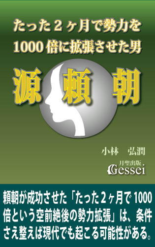
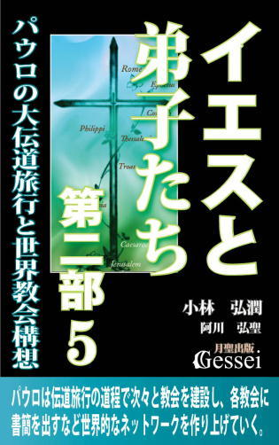
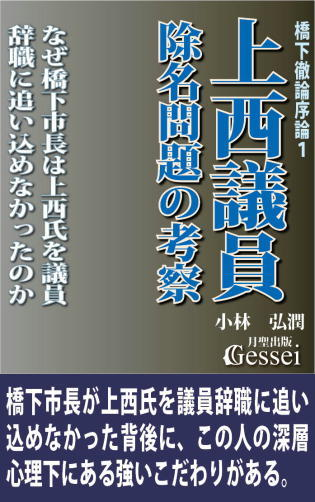
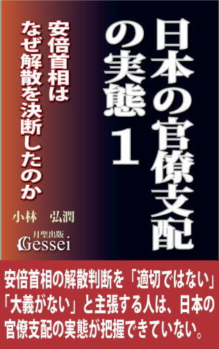
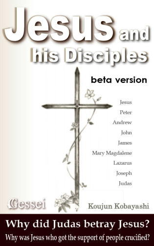

| 社会の学び方・政治経済編１: 政治の根本とその仕事の概略（月聖出版） | |
| 小林弘潤 | |
| Gessei Shuppan (2014) | |
社会の学び方・政治経済編１
政治の根本とその仕事の概略
小林弘潤
※更新履歴
2015/11/6 1.1版 ・Kindle用目次追加
※著者ツイッターで、「本の価格を上げる場合の時期」等の情報を発信しています。ご興味ある方はどうぞ（携帯からも読めます）。
まえがき ～政治とは「様々な面白さを内包した奥の深い総合的娯楽」である
私は政治や経済に関しては専門知識を持っていない素人で、20年ほど前までは「政治の知識などゼロに等しく、新聞の政治面や経済面を読んでもまったく理解できず、一般の人が当然持っているような常識すら持っていなかった」ような人間です。
そうした素人がなぜ政治や経済の本を書くという「無謀で不埒なこと」を企んだのかと言いますと、世間にある政治や経済の情報や知識に納得できなかったからです。新聞やテレビなどの報道で紹介される情報は断片的なものばかりで「全体のつながり」がまったくわからなかったため、「つながりが把握できるような政治や経済の本がないだろうか」と書店や図書館などで探してみたのですが、「専門的すぎて素人には理解できない本」や「多少はわかるが肝心なことが書かれていない本」ばかりという印象になってきまして、「こうなったら自分で書くしかない」という結論に達したということです。
この『社会の学び方・政治経済編』シリーズ（全５巻予定）の特徴としてあげておきたいのは、「政治というものの全体像が一望できる」「政治や経済に関する全体的なつながりがわかり、一本の筋が通る」という内容になっていることです。そうした内容にするために、最初の説明として「政治の根本理念はどこにあるか」というところから始め、そこであげた本質的な視点を様々な項目に具体化し、展開させていくという書き方をしています。
学校で使われる政治（中学では公民）の教科書の場合、たいていは「民主主義」「人権」「憲法」のどれかから始まりますが、私はこうした項目が「本質的な視点」とは思えなかったので、別の項目を政治の根本理念として設定しています。この本では「民主主義」「人権」「憲法」等の項目は、（私が設定した）根本理念が具体的に展開する一過程として位置づけられていますが、こうしたアプローチは今の世間の常識とは違うので不思議な感じがするかもしれません。こうした政治の描き方をどう判断するかは人それぞれだと思いますが、何らかの参考にはなるのではと思っています。
また、世間によくある「政治の入門書」の場合、「戦後日本の日本国憲法で規定された政治体制の話から始まる」ことが多いですが、この本では「現代の政治体制に至るまでの歴史的経緯」という視点もところどころに入れています。それによって、「昔の時代から現代までの政治体制のつながりや流れ」もかなり感じられると思うので、政治が本来持っているダイナミックな動きが実感できるようになると思います。
この本を読まれた方は、それまで各人が断片的に持っていた様々な知識がつながって一つの流れの中に融合していく感触が得られると思います。それによって、従来持っていた「政治」に対するイメージが変わり、「政治ってこんなに面白いものだったんだ！」という感じが持てるようになると思います。
私は政治に対して「下手な物語や娯楽などよりよっぽど面白くて奥が深い」というイメージを持っています。世間によくある「底が浅くてすぐに飽きる娯楽」に対し、政治というのは「様々な面白さを内包した、奥が深い総合的娯楽」という印象を感じていますが、おそらくこの本を読まれた多くの方が同じような印象を持てるようになると思います。参考になれば幸いです。
1 政治とは「すべての人に必要なもの」であることから誰でも関心を持つことが可能になる
「政治」という言葉を聞いてどんなイメージが浮かんでくるかは人それぞれだと思いますが、この言葉を聞いて「明るく健全な印象を感じる」とか「政治家とは清廉潔白な人の集まり」等のプラスのイメージが真っ先に浮かんでくる人はあまりいないと思います。私も以前は政治という言葉を聞くと、子供時代にテレビなどで見た政治家のイメージに影響され、「泥臭い」「無味乾燥でつまらない」「脂ぎった顔をしたお年寄り」（例えば元首相の田中角栄とか福田赳夫）というような印象を強く持っていたものです。
政治不信ということは以前から言われていますが、「政治に対して極端に悪いイメージを持っている人は今でも多いんだろうな」という印象を受けます。「日本の政治は金権政治だ」という話はよく聞きますが、他にも「政治家は金に汚い人たちの集合体」とか「税金にたかる寄生虫」とか「日本の政治は悪人によって占拠され壟断されている」というような話もたまに聞くので、「ひょっとしたら、政治そのものが悪なんだという極端な認識を持っている人もいるんじゃないか」という思いになってしまいます。
確かに、現代日本の政治の中には金権政治的な傾向が一部にあり、政治家の中でその影響にどっぷり浸かっている人も一部にいるとは思いますが、こうした問題に対しては「表面的なところではそうした現象も起きている」という認識を持つ必要があると思います。それを短絡的に「政治の世界でお金に関する賄賂や汚職などの問題が続出するということは、政治の本質そのものが腐っているからだ」と考えてしまうのは冷静な見方ではないと思います。
「お金は悪魔の発明品」という言葉がありますが、似たような「政治は元来悪魔の管轄に属する」というような発想も結構根深いものがあると思います。普段は冷静な見方ができる人であっても、大きな金権問題などが発覚してマスコミでセンセーショナルに報道されると「やはり、お金や政治というものは本質そのものが悪いから問題が起こるんだ」という意識になってしまう人は少なくないのではという思いになります。
政治に関わる問題が「現代だけでなくいつの時代でも繰り返し起こってきた」のは確かだと思いますが、その一方で「人々は政治の力によって様々な恩恵を受けている」ことも確かな事実だと思います。
日常生活を少し振り返ってみるだけでも「政治の力」は様々なところで目にすることができます。それは「選挙で投票に行く」というような政治と直接関わりがある行為だけではなく、もっと日常的で身近な出来事の中に政治の力は働いているものです。例えば「お金を使って何かを買う」とか「学校や会社に行く際に道路を通ったり橋を渡ったりする」というようなありふれた行為の中にも、何らかの政治の力が影響しているものです。
中にはお金で何かを買うという行為に対して、「今自分が持っているお金は自分で稼いだのだから、政治なんか関係がない。全部自分一人の力なのだ」という認識を持っている人もいるかもしれませんが、実際はそうではありません。なぜなら、まず貨幣を鋳造しているのは民間企業ではない公的機関ですし、「お金が流通するしくみ」が社会の中に整備されて安定した貨幣経済が運営されていることにも政治の力が大きく働いていると言えるからです。
「政治そのものが悪なのだ」という感覚で政治の力を全否定する人がいた場合、その人は「政治の力によって運営されているお金も道路も橋も一切使わず、すべて自給自足で自分の力だけで生きる道を選ぶ」のが筋だと思います。
それを実行する覚悟もないのに平気で「政治は悪だ」「政治の仕事は悪魔の管轄だ」などと声高に主張する人がいた場合、少なくとも私であれば「そうした人は信用するに値しない」という思いになります。政治を考える際は、「政治は人間にとって必要なものである」という発想から始めることが大事だと思います。
政治は人間にとって必要であることの主な理由は、「この世界に生きる人間は、一人では生きられないほど脆弱で不安定な存在である」ことにあると言えます。人間という存在が「一人では生きられない（よりよく生きたい思いがかなえられない）」からこそ、「多くの人が共同で生きることで力を合理的に結集する」という発想が生まれたと言えます。人々が共同で生きる社会では政治という仕事は最初から必要とされ、社会が発展すればするほど政治の仕事の必要性は高くなっていったと言えるのです。
政治が人間にとって必要であることは、現代の「国家への所属に対する考え方」を見ればすぐにわかります。現代では個人の自由がさかんに強調される時代になっていますが、そうした現代であっても「すべての人が、どこかの国家に所属して政治と関わりを持つことを強制される」という状況が続いています。この「人間には国家に所属しないという自由はない」ことが、政治は人間にとって必要であることを示していると思います。
もし人間が、一人でも十分に生きられるような身体構造を持っていた（例えば人間が植物と同じように、光合成によって生きるための必要なエネルギーを作り出せる構造になっていた）としたら、政治の必要性は大きく低下すると思います。
こうした状況でも、政治の仕事がまったく存在しないことにはならないと思いますが、少なくとも「国家に所属せずに一人で生きることが許される社会になる」という感じがします。おそらく、「国家に所属するのも自由、国家から離れて一人で生きるのも自由」というあり方になるのではないかと思います。
また、動物の世界では「小さな組織化やリーダーによる組織の統率」はあるものの、専門的で体系的な政治という役割や仕事はないと言えます。動物と人間の違いは「比較的高度な能力（主に知的能力）を持っていること」と「高度な能力に応じたよりよく生きたい思いを持っている（動物が持っているのは生きたい思いのみ）」ことにあるという言い方ができると思います。
私はこの『社会の学び方・政治経済編』シリーズを通して、表面をなぞっただけの専門知識ではない、「人間が生きることの根本や人間心理を土台に据え、本質からさかのぼった政治の知識」を描いていきたいと思っています。
政治の知識に関しては、「一部の専門家や政治に興味のある人を対象にした専門知識」も必要だと思いますが、それだけではなく「一般の人を対象にした理解しやすい知識」があってもいいと思います。政治の知識がそうした「誰にでも理解できる開かれたもの」になった場合、専門家ではない普通の人々であっても政治への関心を高めることができるからです。
ただ、ここで私が言いたいのは「政治の知識を学んだ人は積極的に政治活動に参加しないといけませんよ」ということではないつもりです。知識を知って政治に関心が持てるようになれば、それまで知らなかった世界を開拓して自分の主観的世界を広げることができます。私が言いたいのは「政治に関心を持つことで、自分自身の価値の実感を増やすことができる」ということです。
どんな人でも一人では生きられない脆弱で不安定な存在である以上、「自分の力だけではなく、様々な恩恵によって生かされている」のが現実です。
この言い方を聞くと「生かされている以上、自分のやりたいことを我慢してお世話になった人や社会に対して恩返しをしなければならない」というような義務のニュアンスを感じやすいと思いますが、ここで言いたいのは「様々な恩恵を受けていることが理解できれば、それが実感となって生きる意欲になったりその人自身の存在価値が高まる」ということです。
大事なことは、政治の力による恩恵ということも「そうしたものが実感として理解できれば、それは自分自身の得になるのだ」という発想をすることだと思います。
2 大量生産すれば労力が軽減することが「分業化して商品を交換し合うしくみ」を生んだ
世間でも「一般向けのわかりやすい政治の知識を紹介した本」は様々にあると思いますが、たいていは「現代の政治制度や政治のしくみから説明するやり方」で終わっていて、本質からさかのぼった政治の知識が紹介されているものはほとんどないという印象を受けます。私も今までそうした本を何冊も読んできたつもりですが、「どれもこれも表面的で薄っぺらな説明で終わっていて、知識のつながりが全然わからない」という思いにしかなれませんでした。
2005年刊行の紙の本『社会の学び方・日本史編』第一章（電子書籍では『社会の学び方・日本史編１』）の中で、私は「歴史の基礎になる政治の知識が根本から紹介された本がまったくないため、こうなったら自分で書くしかないと思った」という言い方をしていますが、『日本史編』を書いてからさらに考える中で「この本で紹介した基礎知識はまだ基礎の基礎でしかなく、現実の政治が理解できるための基礎知識にはなっていない」という思いになってきたものです。
例えば金権政治という問題は、現代日本の政界だけで起こっている問題ではなく、歴史を見れば「様々な時代や地域で繰り返し起こってきた問題」であることがわかります。今も昔も変わらず似たような問題が繰り返されるということは、政治にはそうした傾向に陥りやすい本質的な特徴があると判断した方が賢明です。
そうした「金権政治に陥りやすいメカニズム」というものも本質からさかのぼった知識があれば分析して理解することは難しくなく、そうした知識を踏まえて政治に関する様々な問題に接すれば、「なるほど、こういう問題はこういうパターンで起こるのか」という納得ができるようになると思います。
私が心がけている知識の紹介の仕方は「最初に本質的な部分を押さえ、そこから形につなげていくやり方」ですが、政治に関する本質的な部分とは結局は「人間」です。
その中には当然「人間関係や人間心理の知識」も含まれるため、既に刊行している紙の本『人間関係のコツ』シリーズで紹介している内容は、すべてが政治論につながる予備知識とさえ言えます。そして、そうした「人間」と同時に大事な視点が「社会」ということで、「人間が生きるために必要な社会の本質とは何か」という要素を押さえることが政治における本質的な部分に関わってくると思います。
こうした「人間や社会の根本」に関する説明の仕方は既に『社会の学び方・日本史編』『世界史編』でも行っていますが、ここではそれらの説明を踏まえてさらに発展させた話を紹介したいと思います。それは「人間がよりよく生きるためには、自分の力でできることだけではなく、他者からサービスを受けないとできないこともある」という角度からの話です。
「人間が生きるためには何が必要か」という問いに対しては様々な答えが可能ですが、精神的な側面（学問や文化、娯楽、心の豊かさ等）ではなく物質的な側面からの必要不可欠な項目となりますと、「呼吸をする」「太陽の光を浴びる」「水を飲む」「食物を食べる」「服を身につける」「家に住む」の６つが代表的なものになると思います。
この６つの項目は、どの時代やどの地域の人であっても共通する基本的な項目と言えますが、この６つを「自分の力だけで手に入るもの」と「他者のサービスを受けないと手に入らないもの」に分けてみたいと思います。まず「自分の力でできること」の中には、「呼吸をする」ことと「太陽の光を浴びる」ことが入ります。この二つ（酸素と日光）は地球上のたいていの場所で用意されており、労力をかけなくても獲得できるようになっているので、地球で生きている限りは、自分の力で手に入ると言えるからです。
そして、「他者のサービスを受けないと手に入らないもの」に分類されるのが「水」「食物」「服」「家」です。もちろん、中には「食物を栽培・出荷して生計を立てている農家の人」も存在しますが、そうした方々であっても自分が食べるものはすべて自分の家で栽培しているわけではなく、「自分が食べているものの中の一部しか生産していない」と言えます。
世の中には「俺は自分のことは全部自分でできる人間だ。今まで他人の世話になったことは一度もない」などと主張するような人もいると思いますが、そうした人でも水や食物や服や家をすべて自分の力で作っているわけではないと思うので、「自分では気づかない様々なところで他者のサービスを受けて生きている」と言えます。
ただ、この「水や食物や服や家を自分の力だけで確保する」ことはやろうとすれば決して不可能ではなく、実際に原始時代の人間の中にはすべて自給自足で生活した人も存在していたことが推測できます。
しかし、高度な文明社会が展開されている現代という時代では「すべて自給自足によって生活する」ことはかなり難しく、仮に一部の環境団体から「大自然を破壊し、お金の魔力に逆らえずに堕落する人が続出する現代文明は狂っています。これからは文明生活を一切放棄して、生きるために必要なものはすべて自分の力で作る自給自足の生活を送りましょう！」という主張がされたとしても、賛同者はほとんど出てこないと思います。
これは高度な文明社会で生きている現代人だけでなく、現代よりも文明度が劣る社会に生きていた昔の人でも同じだと思いますが、一度文明生活を体験した人は誰でも「生きるために必要なものはすべて自分の力で作りたい」という気持ちにはなれないと思います。なぜそうなるかと言いますと、簡単に言えば「すべて自分の力でやっていたら、労力がかかって大変」だからです。
これに関して具体例をあげてみたいと思います。「納豆」という食べ物は、今の日本ではスーパーに行けば１パック数十円程度の値段で手に入りますが、こうした「わずかなお金で気軽に手に入る商品」であっても手作りしようとしたら相当な労力がかかるものです。
北朝鮮に拉致された経験を持つ蓮池薫氏が北朝鮮で暮らしていた頃、納豆を手作りしたことがあったようですが、大変な時間と労力をかけたのに失敗に終わってしまったようです。１㌔ほどの大豆をとろ火で７、８時間も煮て、熱湯で消毒した鍋と洗って乾かしたワラを代わる代わる４層ほどに重ね、ふたをして毛布をかけて３日ほどでようやく納豆らしいものができたようです。ところが、はしで１粒つまみ上げたものの糸は引かず、食べてみたらまずく、翌日下痢にも見舞われるという散々な結果になったようです（読売新聞08年２月11日付）。
こうした視点は明確に指摘されないと気がつかないと思いますが、すべてを自分の力だけで行うことには大変な労力がかかるものです。さらに言いますと、「他の人の手を借りずに自分の力だけで食物を作る」ことは「調理をする」だけではなく「食材をすべて自分で栽培する」ことも含みます。ただ、「様々にあるおかずの一つである納豆」を手作り（調理）するだけでも大変な労力がかかるのに、幾種類もの食材を自分一人の力で栽培しかつ調理することなど並大抵のことではありません。そしてこれは「食物を作る」だけでなく「服を作る」「家を建てる」ことも同様で、生きるために必要な事柄をすべて一人で行っていたら、一生かかってもできないほどのとてつもない時間と労力がかかってしまうと言えます。
この「すべて一人で行っていたら労力がかかって大変」という意識は原始の時代の人間にもあったと推測できますが、この意識が「一人ではなく共同で生きることで力を合理的に結集しようとする発想」と「それに基づく分業化」につながったと言えます。分業化して専門の仕事に集中できるようになれば労力が軽減でき、それによって新たな価値が生まれていくからです。
分業化することは「商品を大量に生産して多くの人に配分する」ことを意味しますが、「一人分作る」よりも「大量に作る」方が一定量を作るのに必要な労力が軽減されると言えます。
例えば、米作りをするためには「苗作り、しろかき、田植え、脱穀、精米」等の作業において様々な労力がかかりますが、１㌔の米を作る場合の労力が100としますと「100㌔の米を作る場合の労力」は100倍の１万ではなく、もっと少なくなると言えます。仮に「100㌔の米を作る場合の労力が1000」だった場合、同じ１㌔の米であっても一人分作る際は100だった労力が「大量に作った（それが全部売れた）場合は10でできる」ことになるのです。
そしてここに「交換」という過程が入ることで、「生きるために必要なものをすべて作っていないにもかかわらず、生活に必要なサービスが手に入る状況」が生まれます。例えば「食物を生産する人」の場合、作った食物の一部を「服を作る人」が作った服や「家を建てる人」が建てた家などと、それぞれの商品の価値に見合った割合で交換することができれば、生活に最低限必要な衣食住は確保できることになるからです。
交換をすることにも労力がかかりますが、「大量に作ったものが全部売れれば（交換されて価値を生めば）労力が大幅に軽減する」以上、交換のために労力をかけることは必要と認識されるようになります。
なぜなら、すべて売れれば労力が100から10になることがわかっていれば、「せっかく作ったものを無駄にしないためには、交換のために20や30の労力（場合によっては70や80になっても）がかかっても構わない」という意識を生むからです。これによって、食物や服や家などの「生産」ではない「流通」という仕事（商業）が社会の中で発達するようになっていくのです。
このように「大量生産をすれば労力が軽減できる」ことから、人間は生活に必要なものをすべて一人で作るのではなく、「分業化してできたものを交換し合うことで、小さな労力で大きな価値を手に入れる」という道を歩んでいったと言えます。人間には「生きたい思い」だけではなく「よりよく生きたい思い」があるため、強制されなくても自発的な形で「より小さな労力で大きな価値を手に入れよう」という方向での努力を重ねるようになるものです。
米を作っていた人が「大量生産してそれらを売れば、相当の労力が軽減できて大きな価値が手に入る」ことに気づいて実際に大量の米を作った場合、「せっかく労力をかけて作ったのだからできるだけ売って大きな価値につなげたい」という意識になります。
そこに、商品をスムーズに流通させる商業の必要性が生まれ、商業によって商品が大量に売れるほど生産をする人が獲得できる収入も増えるため、さらに労力を軽減して価値を増大させるためのしくみが整備されるようになっていきます。ここに「技術の発明と進歩」という要素も加わって、それらの相乗効果によって社会の発展が加速していったと言えるのです。
ただ、社会の中での「労力の軽減と価値の増大」が進むにはもう一つ重要な要素が必要となります。それが「人々のリーダーとしての役割を担い、社会の構成員が価値を増大させる手伝いをする」という意味での政治という仕事です。
3 根本理念を具体化した政治の仕事としての「保護」「補助」「規制」「公平性の確保」
ここで「政治の根本理念」に関する私なりの定義づけをしてみたいと思います。
「政治の根本」とか「政治の本質」という概念に関しては様々な説明の仕方がありますが、こうした「物事の本質に関する定義づけ」ということには唯一無二の客観的な定義が存在するわけではなく、「定義づけをする人間の主観による意見」という受け止め方が必要になります。
その意味で、ここで言う政治の根本とは「私の主観ではこうした説明が一番本質に迫っていると思える」という類のものでしかなく、この定義の客観性が高いかどうかは各人で判断していただければと思っています（「主観と客観」に関する詳細は紙の本『情報処理のコツ・パート２』第四章参照）。
『社会の学び方・日本史編』では「政治とは、人々がよりよく生きるために必要なことをする行為」という言い方をしていますが、この言い方だけでは「政治の力だけでそれを受けた人々が幸福を享受できるかどうかが決まる」という印象になってしまう可能性があるので、ここではさらに言葉を付け加えてみたいと思います。
人間が生きるために必要な職業としての仕事というものを「努力によって価値を生み出すこと」という言い方をしてみますと、努力によって価値を生み出すことそのものは政治がやることではなく「社会や国家に所属する構成員（民衆、国民）の一人一人が行うこと」と言えます。その意味で、政治の役割について認識する際には「政治とは、構成員が価値や幸福を作るための手助けや手伝いをしているにしか過ぎない」という視点が必要になります。
その「手助けや手伝い」とは、構成員が努力しやすいしくみを作ったり努力に応じた価値を公平に配分することを意味します。こうした視点を踏まえまして、「政治の根本理念は、社会の構成員が努力によって価値を生み出す手助けをし、一部ではなく社会全体の利益を高めること」という言い方をしてみたいと思います。そして、政治が行う様々な「仕事」というものは、すべてこの根本理念を具体化したものになります。
そして次に、「この根本理念がどう具体化されて政治の仕事につながっているか」ということを述べてみたいと思います。ここではそうした広い意味での政治の仕事について、「保護」「補助」「規制」「公平性の確保」という項目に分類して指摘してみたいと思います。
原始の社会が「すべてを自分の力で行う」段階から「分業化して商品を交換し合うことで、小さな労力で大きな価値を作る」という段階になったということは、人々が集団や社会を作って共同で生きることが本格化していくことを意味します。人間社会が「一人一人が独立していて干渉しない社会」ではなく「大勢の人が共同生活を送り、交互に干渉し合う社会」になった場合、新たな仕事が自然に発生すると言えます。そこで最初に出てくるのが「保護」という仕事です。
例えば、一人一人の人間がせっかく労力をかけて価値を作っても、ともすれば「強盗や殺人などの犯罪行為や、個人を超えた大きな力によって価値が奪われる」こともあるために、人々は「自分たちの生命や財産を保護してくれる力」を求めるようになります。
社会の中で起こる犯罪行為や刑事事件に対しては「犯罪が起こっても犯人がしっかり捕まって的確な罰則が与えられるしくみ」と「犯罪がなるべく起こらない制度」が必要です。そのために求められるのが「犯罪に関するきまりや法律の整備」と「そうしたきまりに基づいて犯罪行為の判定をし、公平な罰則を与える警察、検察、裁判のしくみ」と言えます。
さらに必要になるのが「自国内で起こる内乱や他国からの侵略に備える」ための防衛（国防）の仕事で、国防を担う組織が軍隊です。昔の軍隊であれば「他国の侵略」という役割が与えられたこともありましたが、軍隊の役割としては「自国民の保護」という要素も大きな比重を占めます（あと、外交の仕事にも自国民保護の要素が含まれると言える）。
次に「補助」という仕事があげられます。この仕事は「構成員が価値を作るために不可欠な土台作りの投資をしたり、必要に応じて援助し補助する」ということを指します。例えば「道路、橋、トンネル、都市、港湾、貨幣」等の社会資本としてのインフラが「価値を作るために不可欠な土台」の代表と言えますが、民間の中で「食物、服、家を作る人」や「それらを流通させる商人」が数多くいても、道路や橋などのインフラがなければ効率的な流通はできないものです。
こうしたインフラ整備を民間ではなく政治の仕事として行う大きな理由は「国造りの初期の段階では大きな事業ができるほどの力のある民間企業は存在せず、必然的に政治の仕事になるから」と言えますが、それだけではなく「インフラによっては、民間でできるものでも政治が行わなければならない」こともあります。それは、多くの人が利用する公共性が高いインフラの場合です。
公的な政府ではない「巨大企業」とか「大きな資産を持った実力者」が公共性が高い道路や橋を作ってもそれらは私物化されやすく、それによって「気に食わない人間には道路を使わせない」「橋を渡らせない」というような現象につながってしまうこともあります。今の日本ではこうした私物化はまずないと思いますが、世界の中では力を持った人間が軍閥を作って国家の一部を私物化し、中央政府が手をこまねいて何もできないということはよくあるようです。
こうしたことから、「特定の人間だけが使うのではなく皆で共有する公共物」の場合、特定の人間や民間企業ではなく政治の力で行う必要があると言えます。
この「補助」の仕事の中にはインフラ整備だけでなく、「産業や研究振興のための補助」「生活保護、健康保険、年金制度、老人介護、公衆衛生などの社会保障」「公立学校作りや運営、私立学校への補助などの教育行政」等も分類したいと思います。
最後の「教育」が補助というのは変な感じがするかもしれませんが、子供時代というのは将来に備えた投資の期間というところがあり、「教育というのはインフラ整備のように、初期の小さな投資で将来の大きな価値につながるところがある」と言えるので、あえてこうした分類にしてみた次第です（実際、学校が「社会資本としてのインフラ」に位置づけられることもある）。
そして３番目の「規制」とは「社会全体の価値を高めるために構成員の努力の方向性を示し、それに基づいたルール作りをして運営する」ことを指し、最後の「公平性の確保」とは、「構成員の努力や行為に対して価値を的確に配分することで意欲を出させ、不満を抑えて社会の秩序を保つ」ことを意味します（この「規制」「公平性の確保」については次節以降で述べていきます）。
こうした政治の仕事については、「民間企業の仕事との対比」をしてみると浮き彫りになってきます。
例えば、現代において未開の土地を開拓して新たな都市を造ろうとした場合、民間だけに任せて自由にさせたら「個人の家や会社や店だけが建って、道路も学校も警察も消防署も公園もない」という事態になってしまうと思います。政治の力で作られる「道路、学校、警察、消防署」のうち、警察や消防署は「都市の人々の生命と財産を守る」ことに関連するので「保護」の仕事に当てはまり、道路や学校は「人々が価値を作るための土台になる公共インフラの整備」と言えるので「補助」の仕事に当てはまります。
そしてさらに、都市の中に立てられた建物が地震によって簡単に倒壊してしまったら多くの生命が奪われる事態になるため、建物の耐震基準などを定めて「規制」をすることも政府の大事な仕事になります。
こうした仕事は「社会全体を統括する政治の仕事」として民間の仕事とは一線を画した存在になり、そうした政府を運営するための元手として「税金」が社会の構成員から徴収されることになります。社会全体で作り出した価値の中から税金として政府に収入が入ってこないと政治の仕事ができないので「政府が行った仕事に応じた徴税をする（払うかどうかを人々の自由意思で決めるのではなく強制的に集める）」ことは正当と認識されます。
さらにこの集めた税金を「予算」として配分することによって「政治の仕事やサービスを行い、そうした仕事をする役人や公務員の給料に充てている」ことになるわけです。
そして、政府がどれだけの額の税金を徴収できるかは「政治が社会全体の価値の増大のためにどれだけの役割を果たしたか」で判断されます。例えば、昔の時代に「政府が灌漑設備を作ったことで農業生産が倍になった」ということがあった場合、「政府が農家に対して、それまでの２倍の額の税金を要求するのは正当」とみなされます。
税金の納め方は普通「一人一人が作った価値の中で一定の割合が納められる（所得の10％が所得税になるなど）」という形になりますが、「収入や所得の中でどのくらいの割合を徴税するのが妥当か」ということには唯一無二の絶対的な基準があるわけではないので、それぞれの国家や政府の考え方に任されているところがあります。
誰でも「徴収される税金は安い方がいい」と考えるものですが、政府や官の組織は集めた税金の範囲内での仕事しかできないことも確かなので、「政府や官が社会のためにこれだけの仕事をしてくれているのだから、相応の税金が徴収されるのはやむを得ない」という意識が必要になる場合もあります。
ただ、民衆側が「税金は安い方がいい」という意識になってしまうことには相応の理由があり、その一つに「政治の仕事がどれだけ自分たちの恩恵になっているかが認識しにくい」ことがあげられます。このことは「価値の実感」という観点に関連しますが、これが民間が行うサービスであれば、その対価は一つ一つのサービスに応じて払われる（米や服や家を購入した場合、それぞれの値段に応じた対価を払う）ことになるので、「このサービスにはこれだけの価値がある」ことが比較的認識しやすいと言えます。
それに対して、政府が行うサービスの対価は「税金という形でまとめて払われる」「その税金も所得税、法人税、消費税のように様々に分散されている」ので、政府が行うサービスの一つ一つの値段がわからない（しかも所得の額によって収める金額が変わってくる）ために価値の認識がしにくいと言えると思います。
例えば、「警察、検察、裁判のしくみが整備されていることでこれだけ犯罪が抑止され、それによって社会の中の安全性がこれだけ違う」ということや、「国家に防衛力があることで他国からの侵略が抑えられ、それによってこれだけの価値が守られている」ということは、明確に意識しない限り的確に認識し実感することは難しいものです。普通、政治の力で作られた様々な制度や規制によって安全が保たれていることのありがたさが一番実感できる状況というのは、「安全が失われた時か、脅かされた時」です。
私自身は「政治の力がなくなって安全が失われた状況」を体験したことはありませんが、ここでそうした体験をされた方の話を紹介してみたいと思います。
太平洋戦争での日本の敗戦が濃厚になった1945年８月９日、当時のソ連は日ソ中立条約を一方的に破棄して日本に宣戦を布告し、160万人以上のソ連兵が中国の満州を襲います。この時の警察や軍隊には自国民を保護する力がなくなっていたため、日本から満州に移住していた約350万人の日本人はソ連兵による〝剥き出しの暴力〟に直面することになります。
これは一家で満州に移住していたある日本人の方の話ですが、家に突然ソ連の二人組の兵隊がやってきて、玄関の扉を蹴破って家族に銃を突きつけ、「時計を出せ」とすごんだようです。家族の皆が真っ青になり、頭の先から血の気が失せていく思いで震えていると、やがて賊は近くにあった時計を盗んで出ていき、結果として家族に危害を加えることはなかったという話です。この時、この人は恐ろしさと同時に「国に守られていることのありがたさ」を子供心に思われたようです（産経新聞05年12月17日付）。
作家の藤原正彦氏の場合、満州からの決死の逃避行を体験されています。当時の藤原氏は２歳で、母親と兄弟２人の４人での逃避行だったようですが、平壌からは馬糞だらけの列車に乗せられ、北朝鮮と韓国の国境近くの38度線を越える時は母子４人で２週間ほど歩いて山越えをしたそうです。
食糧が乏しくて飢えに苦しみ、当時１歳だった妹さんはほとんどお乳を飲んだことがなく、お腹が膨れる栄養失調の典型だったようですが、こうした誰もが体力が尽きた状態で38度線を越えようとした時、雨に降られて絶体絶命の窮地に陥ります。このようなびしょ濡れ状態で風に吹かれ続けたら凍死することは間違いなく、「もうここでおしまいだ。全滅だ」と観念した時、一軒の小さな農家を見つけてそこの馬小屋のワラの中で寝かせてもらい、九死に一生を得たという話です（読売新聞07年11月27日付）。
政治にはこうした「普段はなかなかその仕事のありがたさがわからない」という側面もありますが、その一方で政治の仕事は「必要がないところまで膨張して肥大化しやすい」のも確かです。ただ、こうしたことは政治に携わる側からはなかなか認識できないため、外にいる民衆の方が「政治の仕事が的確な範囲で留まっているか」とか「政府や役所が無駄遣いをしていないか」などをチェックする必要があると言えます。
これらのことから「どこまでが政治（官）の仕事でどこからが民間の仕事かをどう区別するか」や「どこまで官の仕事を民営化するか」などの論点が出てきますが、これに関する話は『社会の学び方・政治経済編３』で紹介していく予定です。
4 人々の行動を束縛する規制は「構成員に努力の方向性を示して生命財産を守る」ためにある
ここで、政治の仕事としてあげた「保護」「補助」「規制」「公平性の確保」の中の「規制」について詳しく述べてみたいと思います。
「規制をかける」という言い方を聞いた場合「人間の自由を束縛する、抑圧する」というイメージが真っ先に出やすいと思いますが、規制には「こちらの方向に進むべき」とか「あちらの方向に進んではいけない」というような「方向性を提示する」という意味もあります。
最近は有名大学の学生の中で「個人の自由は絶対的に大事」などと主張する人もいるようですが、私はこうした人に対して「それまでの学校教育で一体何を勉強してきたんだ？」という思いになります。「自由は絶対善」などと主張することは「自由を束縛する規制は絶対悪で、規制というものは一切なくすべき」という発想に通じますが、規制を一切なくすことは「あちこちに罠や落とし穴がある危険地帯を自由に歩け」という意味になると思うので、「今の学校ではこうしたことを教える人すらいないのだろうか？」という思いになります。
普通に考えた場合、何があるかわからない危険地帯に対しては「こちらの方向に進むべき」とか「あちらの方向に進んではいけない」ということを明確に示す必要があります。現実には「人生そのものが暗がりの危険地帯を手探りで歩くこと」という言い方をしても大げさではなく、それはどんな人間であっても「この世界では他の人の心の中は見えないようになっていて証明は不可能だし、社会だけでなく自分の未来のことさえまったくわからない」という条件の中で生きなければならないからです。
また、「目的地や方向がわからない状態の中を歩き続ける」ことには大変な労力がかかることから、政府が規制によって進むべき方向性を示すことは「人々になるべく労力をかけさせずに目的地に進ませようとしている」とも言えます。こうしたことを考えるだけで、人々に方向性を提示するための規制は「必要」と言えるのです。
ただ、ここで言いたいのは「どんな規制でも文句を言わずに従わなければならない」という意味ではなく、「規制は絶対悪ではなく、必要なものもある」という程度の意味です。規制の程度が行き過ぎて「どんなことでもいちいち細々と指示する」ようになった場合は、過度の束縛や抑圧となって自由が失われてしまい、人々の行動する意欲が失われることも確かなので、規制というものを考える際は「行き過ぎない適度な規制をかける」という発想が基本になると言えます。
政治が行う規制には様々な種類のものがありますが、その一つに「人々の行動に対する規制」があります。
例えば「人のものを盗んではならない」「人を傷つけてはならない」「人を殺してはならない」という規制はたいていの国家の法律の中で定められていると言えますが、こうしたものは「人間の行動に制限をつけて束縛している」という性格を持っています。なぜ人間の行動を束縛し抑圧することが行われるのかと言いますと、こうした規制をすることが政治の大事な仕事である「構成員の生命や財産を保護する」ことにつながるからです。
「盗み、傷害、殺人」という行為が行われることは、社会の構成員の生命や財産が侵害されることを意味するため、そうした行為をさせない規制が必要になります。構成員に、他の人の生命や財産を不当に奪う行為をさせないようなルールを作り、そのルールを破った人がいた場合に「相応の罰則を与える」のが国家の法律の中で大きな位置づけを占める「刑法」というものの役割です。
規制というものの本質は「努力によって価値を作る方向を人々に提示する」ことにあります。
方向性を提示し、その方向性に逆らって「他の人の価値を損なう行為」とか「楽をして価値を得ようとする行為」が行われた場合はそれらを明確にして相応の罰則を与え、それによって人々を「努力によって価値を作る行為」の方に導こうとする発想があります。また、人々の行動に対する規制には「因果応報の理をこの世界の中でできるだけ実現させようとする意図」も含まれていると言えます。
そして、こうした規制を具体的に表現したものが「ルール」というものです。ルールには状況の違いや適用させる組織の違いによって様々な形式があり、「条約」「法律」「政令」「条例」「会則」「規則」「掟」「戒律」「きまり」「個人の努力目標」などがあげられます（他にも、明文化されない「道徳」「常識」「暗黙の了解」等もルールに含まれると言える）。これらの中で、国家単位で適用されるのが「法律」と言えます。
ルールの中には「破った場合に罰則が伴うもの」と「伴わないもの」があります。国家単位のルールである法律の中にも罰則が伴うものと伴わないものがありますが、次にこの「罰則」に関することを述べてみたいと思います。
罰則というものが存在するのは、それが「人間の方向性を正すための効率的な手段」になるからです。人間には「労力がかかったり価値が損なわれることは避け、価値が高まる方向に進もうとする」という性質があるため、最初から「この方向に進んだら労力がかかり過ぎたり、価値が損なわれることが確実だ」ということがわかっていれば、そうした方向に進む意識にブレーキをかけることができます。
例えば「店で売られているものを万引きによって不当に手に入れる」という行為が発覚した場合、大半の国の法律では刑法によって相応の罰則が科せられるようになっています。たいていの人は長い人生の中で「万引きの誘惑に駆られたことがあったものの、すぐに考え直してそうした行為を抑えた」という経験があると思いますが、こうした状況でブレーキがかかる主な理由は「それが見つかったら自分が罰を受け、大きな労力がかかってしまう」ことにあると思います。
現代の世界で実行されている具体的な罰則としては、「罰金」「立場や地位の降格」「氏名や顔写真等の公表」「刑務所等への拘留」「死刑」などがあげられます。
例えば罰金というものは「お金を払うという労力がかかる」ことを意味しますが、（欲しい商品やサービスが手に入る状況ではない場合に）お金を払うことは誰にとってもご免被りたいことと言えるため、誰でも「罰金が科せられるような行為はしないようにしよう」という意識になるものです。
もし、罰金が人間にとって大きな労力にならない場合は「罰金なんてなんでもないから、もっと悪いことをしてやれ」という意識になることになり、罰金は罰として効果がなくなってしまいます。
例えば、「一人っ子政策」が行われている中国では第二子以降を出産した場合は罰金が科せられることになっていますが、最近は罰金に罰としての効果がなくなっているようです。と言っても、この罰金は一般の都市住民にとっては「平均年収の３～10倍という高額」なので彼らの間での効果は十分あるのですが、経済発展によって生まれた富裕層にとっては容易に支払える額なので、今の中国では企業経営者や芸能人などは「罰金さえ払えばいい」という意識になってしまって違反増加が進んでいるようです（読売新聞07年５月９日付）。
罰金以外に「立場や地位の降格」ということも、その人がそれまでの地位によって得ていた社会的価値や名誉や世間的な評価が損なわれることを意味するため、「自分が努力して手に入れた社会的価値を大事にしたいから、そういう行為はしたくない」という意識を持たせることができます。
さらに「氏名や顔写真等の公表」の場合、犯罪を行った事実（容疑）が公表されることでその人の社会的価値が失墜するため罰として効果があると言えますし、「刑務所等への拘留」であれば「人間にとって重要な価値である自由が奪われることによる苦痛」がもたらされます。そして「死刑」であれば、その人の存在価値そのものが消滅することを意味するため、死刑は時代や地域を問わずどんな社会でも「最も重い罰則」という位置づけがされてきたと言えます。
このような「間違えた方向に行ったら多大な労力を伴い、価値が損なわれる（なくなる）」ことが最初からわかっていることで、人々の「そうした方向に進もうとする意識」を抑えることができます。その意味で、社会に所属する人々に「犯罪をしたら多大な労力を受けることになり、割に合わない」という意識になってもらうために罰則が存在すると言えるのです。
社会全体の価値を高めるには「社会を構成する大多数の人々の努力（この場合は労働や仕事という意味での努力）」が必要ですが、人間には「努力しなくても済む選択が許された場合は楽をする方向に流れてしまう」ところがあるため、努力しなくても済む選択の余地をなくして、努力せざるを得ない方向に追い込む必要があると言えます。
人間には「努力しなくても済むという選択の余地がなく、嫌でも努力せざるをえない状況」になれば、努力する意欲が自然に出てくるところがあります。「他人のものを盗む」という行為は楽をして価値を得ようとする行為ですが、盗みをしたら罰によって逆に自分の価値が損なわれると最初からわかっていれば、「努力して価値を作るしかない」と心を決めることができるのです。
ただ、この規制というものを具体化して法律等に制定する場合には様々に考慮すべき問題があります。例えば、「店で万引きしてはいけない」という規制が入った法律は必要ですが、「万引きしたら死刑」というような罪に対して重すぎる罰則を適用してしまうのは問題と言えます。
規制や罰則を法制化する際にはこうした「どういう罪に対してどの程度の罰則が適当か」という視点を考慮する必要がありますし、規制を法制化する場合は他にも「どこまで個人のマナーやモラルに頼り、どこから法律や条例にして規制するか」とか「罰則を入れた方がいいか入れない方がいいか」とか「法制化する際は解釈の問題や本来の趣旨が伝わらない場合があるのでどう条文化するか」などの論点が出てきます（これに関する詳細は『社会の学び方・政治経済編４』に記載）。
そして、この「規制を法制化する」場合に考慮すべき論点の一つに「公平性の確保」という観点があります。
5 「公平性が保たれない社会」は人々の努力する意欲が薄れ、秩序が乱れて混乱しやすくなる
この「公平性の確保」という観点は、政治の仕事としてあげた「保護」「補助」「規制」「公平性の確保」の４つの中で一番重要性がイメージしにくいと思います。
ただ、実際には社会の中でこのことが的確に行われているかどうかは大きく、これができているかいないかで「人々が社会（国家）のために努力しようとする意欲」や「社会の秩序や平和」に影響してくるところがあります。そこでまず、「社会や組織の中で公平性が確保されないとどうなるか」に関する事例を紹介してみたいと思います。
スポーツの試合では、ルール違反に対して審判による的確で公平な判定がないと選手の不満が膨らんで〝試合が荒れる〟ことがよくあります。スポーツの試合の中でも多くの国の代表が集まった国際大会になりますと、審判の判定において「できるだけの公平性の確保」がなされていない場合は国際問題になることさえあります。
その典型例が、アジアのハンドボール界で「中東の笛」と呼ばれる露骨な不公平判定が10年以上もの間続けられていた問題だと思います。アジアのハンドボール界では中東諸国がアジア連盟の上層部を占めて審判も独断で決めるため、中東諸国とその他の国の試合になると審判による「誤審」ではなく「試合操作」が行われて中東諸国が勝つようになっていたようです。
例えば、2007年９月に行われたハンドボール北京五輪アジア予選（男子）において中東の強豪クウェートと日本が対戦した際、後半残り６分の段階で日本が１点差に迫ったところからイラン人審判の不可解な判定が続出したようです。この時の日本チームの持ち味は速攻だったのですが、相手の攻めを防いで日本が速攻に移る場面でことごとく笛が吹かれて試合が止められ、結局２点差で日本は惜敗してしまいます。
私がこの「中東の笛」の話を初めて知ったのはこの年の９月なのですが、この時はまだ情報が少なかったことで「偏った判定というけどホントかな？ 日本人びいきの見方じゃないのかな」という気持ちもあったものです。ところが、この年の12月に「国際ハンドボール連盟が日本と韓国の訴えを聞き入れて予選のやり直しが決定し、この問題が日本中の話題になった後」は報道量も増えて様々な情報が明るみに出たことで、「なるほど。これなら誰の目にも露骨な試合操作がずっと続いていたことがわかるな」という思いになったものです。
例えば日本と同じように不公平な判定に悩まされた韓国の場合、「1995年のアトランタ五輪予選でのクウェート戦では韓国のシュートがラインクロスとされるなど不公平な判定があり、韓国がボイコット寸前になって結局クウェートが勝利した」という状況だったり、「06年12月のアジア大会のクウェート戦ではカタール人審判が担当し、韓国選手を次々と２分間退場や失格、追放処分にした」とか、「07年９月の北京五輪予選のクウェート戦では審判がドイツ人からヨルダン人に急遽変更され、韓国のシュートが入っても反則とされて得点を取り消され、結果として１時間の試合で38か所もの疑惑の判定が見つかった」というような有り様だったようです（読売新聞08年１月14日付）。
そうした事例の中でも私が「これはすごいな......」と驚愕してしまったのが98年のアジア大会の予選リーグでの話です。「オフィシャル席にクウェート人２人が座って時間を管理し、30分ハーフで計１時間の試合が２時間近くに及んだ。クウェートが予選リーグ１位で突破するには49点差が必要だったが、その通りの結果になった」とのことです（いずれもハンドボール日本協会の資料より）。こうした話を聞けば誰でも「こんな不公平な判定が常態化していた状況は異常以外の何物でもなく、日本や韓国が訴えて五輪予選がやり直しになるのは当然だ」という気持ちになれると思います。
アジア連盟は自分たちの上位組織である国際ハンドボール連盟が決定した「予選やり直し」を認めず、日本に対して「予選を主催したら除名する」などと脅しをかけてきたり、07年９月の予選を有効として国際スポーツ裁判所に提訴するなどしたようですが、こんな「スポーツの試合において必要な公平性の確保を一切行わず、それが表沙汰になった後も自分たちの非を認めずに無茶をごり押しする行為」を続けた場合、日韓のハンドボールの関係者だけでなく日本人や韓国人全体の不満が爆発して大変な国際問題になる可能性すらあると思います（これは後日譚だが、その後「中東の笛」問題はかなり改善されたようで、2010年のアジア選手権あたりから状況が変わって公平な判定が行われるようになったらしい。最近の中東勢は真の実力をつけ始めており、男子日本代表の松井幸嗣監督は「今の中東勢は、笛なしでも脅威だ」と語っていたよう。朝日新聞14年9月11日付）。
この話を読まれた方の中には「こうしたひどい話は外国だけの話で、日本人なら誰でも公平性の確保を大事にする意識はあるんじゃないか」という感じを持たれた人もいらっしゃると思いますが、日本人の中でもこの「社会や組織における公平性の確保の大切さ」を意識していない人は少なくないような気がします。その具体例として、「学校での掃除の時間が苦痛」と訴える女子高生の方の話を紹介したいと思います。
この女子高生の班の中に、クラスの掃除の時間に掃除をやってくれないクラスメートがいて、一生懸命呼びかけても掃除をしようという姿勢が全く見えず、「先生が優しいのにつけ込んでいるとしか思えず、私たちが掃除をしているそばでカードゲームなどをしていて許せなくなる」「掃除のたびに悲しくなり、いっそ学校をやめてしまえばどんなに楽かとも考える」という話です（読売新聞02年１月21日付）。
この人にとってこの高校はあこがれて入った学校とのことで、それが「いっそ学校をやめてしまえばどんなに楽か」とまで思い込ませてしまった主な要因は、「このクラスでは評価の公平性が保たれていない」ことにあると思います。
スポーツの試合で公平性を保つのは「審判」ですが、学校におけるクラスという組織で同じ役割を持っているのは「先生」です。この人の話にある「先生が優しいのにつけ込んでいる」という言葉から、「この組織（クラス）のリーダーである先生は、掃除をサボっている生徒に罰を与えて公平性を保つ努力をしていない」ことがわかります。
その意味で、この先生は「優しい」のではなく「ルール違反等があったら公平に罰を与えることの重要性がまったくわかっていない」のだと思いますが、私にはこの先生が「不公平な判定を長年行ってきたハンドボールアジア連盟の人」とダブって見えます（ただ、こうした傾向はこの教師だけの問題ではなく、戦後日本の教育界に蔓延している「罰則のない教育こそ理想」の風潮が影響していると思う）。
こうした「公平性が保たれない組織」に所属している構成員は、組織のために真面目に努力しようとする意欲を持つことは難しくなり、たいていは「構成員は努力する意欲をなくし、組織やリーダーに対する不満を蓄積させたり感情を爆発させて争いをもたらす結果になる」と言えます。
なぜこうなるのかと言いますと、人間なら誰でも「自分の努力によって価値を得たい思い」を根源的に持っているため、自分が行った努力に対して敏感になってしまうところがあるからです。
「自分がした努力が的確に価値に結びついて欲しい」という意識の強さが「他の人の努力と比較して公平な評価を得たい」という期待の強さを生んでいるところがあり、だからこそ「公平な評価が得られない事態になると不満や争いになりやすい」と言えるのです。
この女子高生の方の「私たちが掃除をしているそばでカードゲームをしていて許せなくなる」という気持ちは、「やるべき努力をせずサボっている人に的確な罰が与えられないと、自分たちが一生懸命やっている努力が無駄になったような思いになる」ところから来ています。
これは少し余談になりますが、個人的にはこの女子高生の方に対して「組織内の公平性を保つことには難しいところもあるから、学校や先生にあまり期待しない方がいいのでは」と言いたい気持ちになります。この事例を見ますと「この人はサボっているクラスメートに掃除をさせることにエネルギーを使い過ぎているため、思った通りの結果が出ないことがかなりの失望になっている」という感じがしますが、傍目から見ると「もう少し自分の気持ちの調整を心がけた方がいいのでは」という思いになります。
世間に出れば「もっと努力が評価されない無茶苦茶な組織もある」ものなので、考え方によっては「世間の様子がわかるいい経験を積んだと思って開き直る」こともできると思います。理想的な学校生活にこだわったり学校の指導力に期待し過ぎるのではなく、「こうした事例を世間の現実を知るための材料として利用し、自分のプラスにしてしまう」という発想が大事だと思います。
この公平性の確保という問題は「組織論」だけでなく「政治論」としても大きな比重を占めます。この本の３で紹介した政治の根本理念の中に「一部ではなく社会全体の利益を高める」という言い方を入れましたが、政治が「構成員の努力に応じて価値を公平に配分する」という意識を持っていない場合は必然的に人々の意欲が低下してしまうため、それでは社会全体の利益を高めることができなくなります。社会全体の利益を高めるためには「公平性の確保」という観点が大きなポイントになるのです。
また、社会や国家の中でこれが確保されているかどうかは、人々の意欲だけでなく社会の秩序にも影響するところがあり、「公平性が確保されている社会は人々の不満が少なく秩序も保たれやすいが、公平性が保たれないと社会には不満が蓄積していき、秩序が乱れて混乱しやすい」と言えると思います。
6 公平な価値の配分を的確に行うことは難しく、その努力は周囲から理解されにくい
ただ、この「公平性の確保」を社会の中で的確に行うのは現実にはなかなか難しいものです。
先ほど紹介した「ハンドボールアジア連盟の方々」や「掃除をサボっている生徒に罰を与えようとしない先生」とは違って、政治に携わる政治家や官僚や裁判官であればこのことの重要性は十分わかっているという感じがしますが、公平性の確保というのは「わかっていても的確に行うのは難しい」ところがあります。
これはある漫画にあった話ですが、主人公の男性と友達の女性が男女ペアで出場するテレビのクイズ番組に出て優勝したところ、優勝賞品が「並んでいる賞品の中から自由に選んでその重さを量って女性の体重と比べ、女性の体重より10㌔重い範囲までなら選んだ賞品を贈呈するが、それを越えたらすべてペケ」というものだったようです。
何を選ぶかは男性が決めたのですが、ペアだった女性が「これ、私の分ね」と言って渡したメモにあった賞品リストだけでも相当な数だったのに、会場に来ていた友人たち（同じ下宿の同居人）の「これも入れろ」「あれも入れろ」という要望を全部聞いて賞品を選んだところ、「女性の体重より100㌔ほどオーバー」となって賞品は一切もらえないことになり、この男性は後で女性や友人たちからブーイングを浴びたという話があります（あだち充『陽あたり良好！』にあった話。今思うと「たった10㌔オーバーで優勝賞品がもらえない」とはケチな番組だなという印象を感じる）。
私はこの話を読んで「この主人公の男性が行ったことは政治の仕事そのもので、政治に携わる人はいつもこういう苦労をしているんだろうな」という思いになったところがあります。
政治に携わる方々は「限られた予算の中で、できるだけ公平に価値を配分しなければならない意識」を持っているものの、どうすれば公平な価値の配分になるかの判断は簡単ではなく、しかも外から飛んでくる「これも入れろ」「あれも入れろ」という声にも耳を傾けなければならない立場にあると言えます。
そこで、こうした「公平性の確保を的確に行うことの難しさ」がよくわかる事例として「生活保護における支給品の認定」という問題を取り上げてみたいと思います。
生活保護というのは「自力で生活するのが困難な人を救済したり、（母子家庭などの場合は）将来に備えた投資をする」という性格があるため「保護」と「補助」の両方の要素を持っていますが、人々の一般的な心理の中には「困っている人を助ける人は温かい人であり、助けない人は冷たい」という意識があるため、「自力で生活ができずに困っている人を手厚く保護するのはいいことだ」という認識が持たれやすくなります。
これは1994年に埼玉県の桶川市で実際にあった話ですが、生活保護を受けていた一人暮らしの女性が「生活保護世帯にはぜいたくだ」という理由で自宅のクーラーを行政（市の福祉事務所）によって撤去されたために暑さで倒れてしまった、という事件が起こったことがあります（読売新聞02年４月19日付）。
こうした話を聞くとほとんどの人は「困っている人を助ける人は温かい人であり、助けない人は冷たい」という心理に前面に出て「行政はなんてひどいことをするんだ」という意識を持ちやすくなると思います。
私はこの事件についての詳しい事情を知らないので、クーラーを撤去するという行政の判断の是非はわかりませんが、こうした事件に対しては「なんてひどいことをするんだ」という意識を持つことだけでなく、「全体を見渡して公平性を確保しようとする政治の性質」という視点を考慮する必要があると思います。
生活保護費の支給ということは〝税金投入〟を意味します。もし、行政が「困っている人に対して手厚く保護することはいいことだ」という声に押されて生活保護の人にも普通の人と同じような生活ができるほどの保護をするようになった場合、やがて「支出が膨らんで政府や地方自治体の財政を圧迫する」という結果になると思います。
それによって納める税金が高くなった場合は「税金を納めている人にとっての負担」になるだけでなく、次第に多くの人々の「生活保護を受けている人は働きもせずに自分たちと同じ裕福な生活を送っている。楽をして同じような生活ができるなら一生懸命働くなんてバカみたいだ（不公平だ）」という意識を生むことになり、一般の人たちの勤労意欲が低下する現象を招きます。
それは社会全体に努力する意欲がなくなって税収が減ることを意味し、結果として「生活保護に回せる予算が減少する」ことになってしまうのです（また、これは「生活保護の支給を受ける人が増える」ことにつながるのでさらなる財政の圧迫になると言える）。それによって最悪の場合、「生活保護として支給される額が激減して被保護者が最低限の生活すらできず、飢え死にする人が続出する」という悲惨な現象が起こってしまう可能性もあると思います。
よく「今の政治は冷たい。もっと弱者を大切にした温かい政策を」という不満が聞かれることがあります。もちろん、弱い立場の人を一方的に切り捨てる政治は問題だとは思いますが、同時に「弱い立場の人に手厚い保護を与えた場合は社会全体の不公平感が高まって、かえって悲惨な結果につながる」という冷静な視点も必要だと思います（実際、世間で「生活保護不正受給問題」が話題になった後は生活保護に対する多くの人の不公平感が爆発した雰囲気があり、その結果「正当な生活保護を受けている人に対する差別」という問題まで起こってしまったと言える）
この生活保護の問題に限らず、政治に携わっている人は無意識のうちに「人々の努力する意欲を低下させたり不満を蓄積させて社会の秩序を乱さないよう、できるだけ公平性の確保を心がけよう」という意識を持っていると思います（こういう意識がない人も中にはいるだろうが、努力している人がいることも確かだと思う）。
しかし、全体を見る視野がなく自分の立場しか見えていない人にはなかなかそれがわからないため、「クーラーが撤去された」とか「自分が望んだ生活保護が受けられなかった」などのことがあった場合は「今の政治はなんて冷たいんだ」という不満や要求が噴出してしまうことがあります。
もちろん、場合によっては政治の側に問題があることもあるので「不満や要求が正当か不当かの判断」は難しいですが、大事なことは「まずは民衆の側が政治に携わる人たちの立場に立つ努力をし、自分中心ではなく全体を見る視野で考える」ことだと思います。いたずらに不満を表明したり要求をするのではなく、「自分に厳しく他人に寛容に」という姿勢と「相手の立場を考える」という姿勢を心がけることが大事だと思います。
この公平性の確保に関することは「生活保護における公平性」という論点以外にも、「刑法等で定める罰則が的確で公平なものになっているか」という問題や、「税負担の公平性」「予算配分、税金投入における公平性」「選挙における一票の格差や公平性」「裁判における処罰の公平性」等の具体的な論点につながっていきます。
この中で「裁判における処罰の公平性」について簡単に触れてみますと、このことは「一つの事件での処罰を決める際は、他の事件との関連を考えて公平な罰を適用しなければならない」ということです。報道で凶悪犯罪を行った犯人に対する判決に接した時に、「なんでこんなに刑が軽いんだ。もっと重い罰を与えてもいいじゃないか！」という印象を持ってしまうこともあると思いますが、裁判の判決が遺族感情と比べると軽い量刑に感じるのは「裁判では処罰の公平性ということが非常に重要視される」からです。
量刑を決める専門家である裁判官の方も「遺族感情や世論に配慮したい」という気持ちになることはあるようです。しかし、それでいて処罰の公平性を保つことも考慮しなければならないため「判決の際には両方の板挟みになって苦しむ」ことも多いようです。
世間で話題になった凶悪事件の裁判を担当したある裁判官が、悩んだ末に双方の接点を探った判決を出したところ、報道を見てその判決を知った一般の人からその裁判官宛てに「ふざけた判決だ」とか「求刑より軽くする理由がわからない」といった内容の手紙が何通も届いたという話があります（読売新聞01年２月６日付）。こうした話に接しますと「人々の意欲を高め、社会の秩序を保つということは本当に難しいことなんだな」とつくづく思います。
7 質の高い決定をするには「どういう方向で決めるか」と「結果に責任を取る意識」が必要
政治の本質を把握するためには「政治の理念やその仕事の内容」だけではなく、「政策の決め方」ということも考慮する必要があります。「政治の本質は決めることにある」と言われることがありますが、政治の本質を把握するための基礎知識の中で「決めること」に関する知識は大きな比重を占めます。この「決めること」は政治のプロセスとして非常に重要と言えるからです。
例えば、昔の時代の政府や国が「Ａ町とＢ村のどちらかの近くに税金を使って橋を架ける」という政策を出したとします（現代における「鉄道敷設の際の駅の建設」「高速道路でのインターチェンジの建設」のような話に相当）。これが「予算の都合上一つの橋しか架けられない状況」だった場合、どちらに架けるかを決めなければならなくなります。
こうした状況で何かを決める場合、まずは「どういう方向で決めるのか」という部分をしっかり押さえる必要があります。その決定の方向性は「国家や組織の一部ではなく全体の立場を考え、構成員の努力に応じて公平に価値を配分する」という方向である必要があります。そうでない場合は社会の中で公平性が保てないので、多くの人の努力する意欲が失われたり不満が高まって秩序が乱れると言えるからです。
ただ、この公平性の確保という視点は明確に意識しない限りその重要性が認識されないものなので、こうした事情を知らない人は前節で紹介したクイズ番組の話のような「これも入れろ」「あれも入れろ」というような要望をしやすくなるものです。橋を架ける話の場合も、詳しい事情がわからない状況で「どちらに橋を架けて欲しいですか」の話をＡ町とＢ村の住民にした場合、「相手の方に架けて欲しい」という答えになることはなく、「自分たちの方に架けて欲しい」という答えになるのが普通と言えます。
そのため、政治の場で公平な決定をするためには「多くの人が努力と価値の配分の関係を的確に判断できるための工夫」が求められます。そして、その工夫の一つが「多くの人が集まり、様々な意見を出し合って議論や話し合いをすること」と言えるのです。
日本の場合、「争い事があったら話し合いをすれば解決する」という意識が伝統的に続いているところがあります。日本人のこうした意識は、飛鳥時代の政治家である聖徳太子（廐戸皇子）が作ったと言われる「十七条憲法」第一条にある「人々が話し合いができるならば、事は自ずから道理にかない、何事も成し遂げられないことはない」という発想が影響していると言えます（これは余談だが、十七条憲法は聖徳太子が作ったわけではなく「日本書紀の編纂者の創作」という可能性もあることを指摘しておきたい。詳細は電子書籍『社会の学び方・日本史編３』に記載）。
こうした1400年前（十七条憲法が日本書紀の編纂者の創作だとしたら1300年前）の教えが現代でも根強く日本社会に浸透しているため、今でも「話し合いさえすれば何でも解決する」とか「話し合いで決まったことはすべて正しい」という認識を持っている人も少なくないと思いますが、私はこういう認識を持っている人に対して「ではなぜ、話し合いは物事を決める際に大事なのですか？」と聞いてみたい気持ちになります。
この質問に対して「とにかくそういうものなのだ」とか「それが日本の伝統だからだ」という答えしかできない人がいた場合、私は「こういう人は権威重視の発想に陥っている」という気持ちになります。
物事を決める際に話し合いが重要であるのは「一人の人間が独断で決めたら全体や公平性が考慮されずにその人の好みや都合だけで決まりやすいが、多くの人が話し合えば全体を見る目や公平性が尊重されやすいから」と言えます。
例えばどちらに橋を架けるか決めるのが「その国の国王の独断」であった場合、「予はＢ村によく旅行に行くからこちらに橋を架ける」という個人の好みを優先させた決定になってしまうこともあります。それに対して多くの人が集まってしっかりした話し合いをすれば、議論に参加したＢ村の人がＡ町の人の主張を聞いて「Ａ町は自分の村より人口も多く、たくさんの人が頑張っているんだ」という思いになるなどして自分だけでなく他者の立場も考える意識が生まれ、それが「全体を見る視野や公平性を尊重しようとする意識」となって、全体的な視野に立った公平な決定がされやすいと言えるのです。こうした理由から、様々な人の利害や命運に影響するような決定をする際は「多くの人による議論や話し合い」が行われるのです。
その意味で、「話し合いで決まったこと」というのは絶対的に正しいわけではなく、全体を見据えた視野や公平性が考慮されない話し合いは意味がないという認識が必要だと思います。
この「橋をどららに架けるか」を議論した場合、「国家に多くの税金を納め、橋の利用者も多い方に架けるべき」という意見が採用されやすいと言えます。例えば、「Ａ町の人口が1000人でＢ村が500人」の場合、「Ａ町の方が人口が多い以上、Ａ町に架けるべき」という意見が通りやすいものです。なぜなら、「人口が多くて国に納める税金も多い以上、国にかけている労力に応じた価値の配分を受けるのが公平な判断だ」という見方ができるからです。
ただ、この「決めること」を考える際に大事なことは「全体を見る視野や公平性を考慮した話し合いをすること」だけではなく、話し合いや議論の後で行われる「決議（決定すること）」に関する視点も考慮する必要があります。
決め方のプロセスというのは「議論する段階」と「決定する段階」に分けて認識する必要があります。この場合は「Ａ町とＢ村のどちらがいいかについて、様々な意見を出し合う」のが「議論する段階」で、出てきた意見を参考にしてどちらかに決議するのが「決定する段階」と言えます。
様々な人に影響する重要な決定を行う際は安直な決め方をするのではなく「事前に決め方のしくみを明確に作っておく」という発想が必要になります。その意味で決め方のしくみを作る際は、「議論するしくみ」と「決定するしくみ」の双方をしっかり整備しておく必要があると言えます。
まず「議論するしくみ」ですが、ここで重要になるのが「どういう人が議論に参加できるのか」という観点です。これが数人や数十人程度の組織であれば全員参加も可能ですが、「数十万、数百万、数千万、数億人の人口を抱える国家」の場合は労力や効率性を考えるとそうも行かず、「誰が議論に参加できるのか」ということが大きな問題になります。
ある意味、この視点が「政治制度の違い」として展開されているところがあり、例えば「独裁的な君主制」であれば、国王や皇帝のような君主とその側近しか議論に参加できないことになりますが、「民主制」であれば選挙で選ばれた民衆の代表者が議論に参加できることになります。
そして「決定するしくみ」ですが、決定のやり方というのはだいたい「リーダー一人の決断」「多数決」「全員一致」の３つに分かれます。この中でリーダー一人の決断と多数決を比較した場合、「多数決で決めるのが民主的である以上、一人で決めるのは独裁的だ」という印象を感じる人もいると思いますが、「何が民主的な決め方か」ということは一概に定義できないところがあります。
例えば、議論する段階で幅広い階層の人を参加させて様々な意見を出させた場合、傍目には「民主的な決め方だ」という印象になると思いますが、「議論の段階で出た意見は参考意見にしか過ぎず、それを元にリーダーが一人で決断する」ことはよくあります。この場合は「議論の中で圧倒的多数を占めた意見をリーダーが無視して、自分以外には支持者がいない意見を決めてしまう」こともあるので、このやり方が一概に民主的とは言えないことになります。
ただ、だからといってこの「広く意見を求めるが、決断はリーダー一人」というやり方が必ず「独裁的」とも言い切れず、このやり方は現代の民主主義の世の中でも様々な組織の意思決定のやり方として行われています。
例えば、「学校給食の献立を何にするか決める」という場合に「毎日毎日学校の生徒や教師を集めて意見を聞き、おかずに何を入れるかまで一つ一つ多数決で決める」ということは現実的に不可能なので、「子供に対して好きなメニューを聞くこともあるが、それだけではなく栄養バランスや予算などのいろいろな要素を考慮しながら、リーダー（担当者）が決めている」と言えます。
こうしたことから、個人的には「何が民主的な決め方で、何が独裁的な決め方か」を明確に定義するのはほとんど不可能ではないかと思います。世間ではこれに対して「一人で決めるのは独裁的で、皆で話し合って決めるのが民主的です」などという単純な言い方がされますが、こうした定義は当てにならないと思った方がいいと思います。
中学校で使われている社会の教科書を読んでいたら「互いの意見を尊重し、みんなで話し合いながら解決していくのが民主主義」という言い方が出ていたのですが（『市販本 新しい公民教科書』扶桑社、01年版77頁）、私はこれを読んで「議論する段階が民主的であれば、決定する段階で多数決を取らなくても民主的と言っていい」のか、それとも「決定する段階で多数決を取らなければ民主的と言ってはいけない」のかがさっぱりわからんなと思ったものです。
似たような発想として「民主主義社会で何かを決めるには多数決しか方法はない」という言い方がされることがありますが（前掲『市販本 新しい公民教科書』46頁）、これも現実的な見方ではないと思います。先の学校給食の献立の決め方のように「子供たちによる多数決ではなく、担当者が決める」ことはよくあるもので、「どんな決め方をするかは状況の違いによって変わり、それは民主主義社会であっても例外ではない」のが現実だと思います。
政治の世界における民主主義体制の国会や政府でも「議員が議論して多数決で決める」だけでなく、状況によっては「議員が議論した後でリーダー（首相や大統領）が決める」ことや「議論を経ずにリーダーが決める」こともあります。例えば、以前「日本の首相がアメリカ大統領と会談した際、エルヴィス・プレスリーの真似をするパフォーマンスを行った」という話がありましたが、この「パフォーマンスの内容」を国会で審議して議員が多数決で決めることはまずないと言えます。
なぜなら、パフォーマンスの内容という案件は「法案制定等と比べれば国家の命運に影響せず、重要性が高くない」と判断できるので、それほど労力をかけずに一人で決めていいと言えるからです。基本的には「重要な案件ほど労力をかけて決める必要があるが、それほど重要でない案件であればそれに応じた労力をかけないやり方で決めるようになる」と言えると思います。
ただ、一方で「重要な案件であっても一人で決める」ことは民主主義体制の政治でもよくあり、例えば法律や予算の制定等の立法の仕事であれば「国会議員による多数決で決める」のが普通ですが、外交における交渉の判断等のトップの意思決定の場合は「首相や大臣が一人で決める」ことは頻繁にあります。
なぜそうなるかと言いますと、他国との交渉では臨機応変の判断が要求されるために「交渉における一つ一つの判断をいちいち国会で審議して多数決で決めていく」わけにはいかないからです。
こうした「多数決で決めるか、一人で決めるか」が分かれる要素は他にもありますが、非常に大事な要素として「専門的な判断が要求される場合」があります。例えば「学校給食の献立を何にするか決める場合に、生徒の意見は軽い参考にして最後は担当者が決める」のは、毎日生徒の意見を聞いて多数決で決めていたら労力がかかり過ぎるという理由よりも、「献立の決定には生徒の好みだけではなく栄養や予算などの専門的な判断が必要で、そうした知識がない生徒に多数決で決めさせるわけにはいかない」という事情の方が影響していると言えます。
こうしたことから「民主主義社会であっても、何でも多数決で決めるのがいいわけではない」と言えると思います。この「決める」ことにおいてある意味一番大事なのが「結果に対して責任が取れるか」という視点で、この視点で考えてみると多数決という決め方は「状況によっては責任の所在が曖昧になりやすい」という短所を持っていると思います。
例えば学校のクラスで「宿題を出すか出さないかを決める」ことにおいては、生徒が議論して多数決で決めることは普通やらずに「先生が決める」ものです。なぜかと言いますと、生徒には「宿題を出す方がいいか出さない方がいいか」についての専門的な判断ができるわけではないので「生徒が決めたら楽をする方向に流れる」のが普通であり、それによってひどい結果になっても誰も責任を取ることなく終わってしまうからです。
「何でも多数決で決めるのが民主的」という発想をするのではなく、「多数決にしても一人で決める場合にしても、決定をする際は結果に対して責任を取る意識を持つ」という考え方をした方がより質の高い決定ができると思います。
8 自分の意見だけを主張するのではなく「他の人の意見も考慮して妥協点を探す」姿勢も大事
政治だけでなく組織においても「決めること」は様々に行われますが、「どんな決め方をすれば構成員が満足して不満が起きずに済むか」は様々な状況によって対処が変わってくるところがあるので、具体例を列記するだけではわかりにくい印象になってしまうと思います。
ただ、基本としては「国家や組織の一部ではなく全体の立場を考え、構成員の努力に応じて公平に価値を配分すること」「決め方のしくみをできるだけ明確にすること」「重要性に応じて労力のかけ方を変えること」を意識することで、状況に応じた的確な決め方は見えてくると思います。
例えば、橋を架けるというような重要な決定の場合では、「全体の価値を考慮した方向性を意識し、事前に決め方のしくみをしっかり整え、代表者を集めて時間と労力をかけて議論して多数決で決める」というやり方にする必要がありますが、「毎日の給食の献立を何にするか決める」というような状況では「事前に決め方のしくみをしっかり整え、毎日毎日全校生徒を集めて一つ一つの献立のメニューを議論して多数決を取る」という必要はなく、「栄養士さんなどの専門家が、栄養のバランスやコストを考慮して決める」というやり方で十分だと思います。
何かを決める場合「重要性が高くない場合はそれほど労力をかける必要はない」と言えますが、ここで指摘しておきたいのが「労力をかける必要はないと思って決め方のしくみを明確にせず曖昧にしてしまった場合、決定に対して不満が起きやすい」という視点です。これは人数が多い国家や組織での決定だけに限らず、家族や友人関係のような少人数の組織であっても起こります。
例えば「友人同士の旅行でどこに行くかを決める」という状況で、「自分はリーダーだ」という自覚がある人が誰の意見も聞かずに「次の旅行先はここね。はい決定」と安直に決めてしまった場合、その組織内で不満が高まるのが普通だと思います。
そうした不満を起こさせないためには事前に「皆で議論をするのかどうか」「議論をした後リーダーが一人で決めるのか、それとも全員の多数決で決めるのか」というような決め方のしくみを明確にする意識を持つ必要があります。この視点を考慮せず決め方を明確にしないまま議論に入り、決定する段階で多数決ではなくリーダーが一人で決めてしまった場合は、それと反対する意見を主張したメンバーから「リーダーは独裁的だ」というような不満が起きやすいものです。
日本の公立学校の改革の一つとして「地域住民や親が学校の教育方針や人事にも意見が言えるコミュニティ・スクール」という制度があるようですが、この制度をめぐって全国各地で紛糾が起きたことがあったようです。
ある公立中学では、校長と地域住民が主張した学校の将来像についての意見が食い違い、「英語教育や食育に力を入れて」と求めた住民に対して校長は「情操教育が必要だ」と譲らず、教育委員会が何度も仲裁に入ったものの両者は最後まで歩み寄ることはなく、結局校長は一年でその学校から異動し、地域住民や親が組織する会の会長の人も辞任してしまったと言います（読売新聞06年６月15日付）。
こうした紛糾が起きた理由の一つに、この制度では議論の後の決定する段階で「全員の多数決で決めるのか、それとも校長が一人で決めるのか明確になっていなかった」ことが言えると思います。
「意見が言える制度」と言われると、参加している人は「真面目に考えてしっかり自分の意見を言えば、自分の意見が現実に採用されるだろう」という意識になりやすいもので、この状況で「結局は校長がすべて一人で決め、自分たちの意見が採用されなかった」という結果になると不満や争いが起こりやすいものです。
こうした不満や争いを防ぐためには、議論をする前に「多数決で決めるのか」「意見を参考にしながらも校長が一人で決めるのか」を明確にしておく必要があると思います。住民や親の側が最初から「決定の段階では多数決ではなく校長が一人で決めるのだ」ということがわかっていれば、「意見を出しても採用されるとは限らないので、そのつもりで意見を言おう」という意識になることができ、その場合は自分の意見が採用されなくても不満はそれほど出ないものです。
ただ、この問題については「リーダーと構成員の力関係が接近している場合、決定に対して不満や争いが起こりやすい」という視点も考慮する必要があります。このコミュニティ・スクールにおける組織は「教育委員会で任命された地域住民や親で構成されている」とのことで、「構成員の任命権が校長ではなく教育委員会にある」ことが問題を複雑にしていると思います（もちろん、こうしたしくみにした背景には「校長が任命したら幅広い価値観を持った人が集まらないので制度の趣旨に合わない」という思惑があったのだろうが）。
こうした状況を見る限り「決定の仕方を多数決にしたら校長が不利になるから校長としてはそうしたくないだろうし、校長が決めることにしたら議論に参加した住民や親が何のための制度かと不満に思うだろうな」という感じがするので、決定の仕方を明確にするのが非常に難しい状況という感じがします。
私はこの制度について詳しいことは知りませんが、「この制度ではいい学校運営ができるどころか、いたずらに教育現場での不満や争いを増やすだけなのでは」と心配になってしまったものです。
このように「決めること」に関しては様々に難しい問題があり、「どんな決定になったか」だけでなく「議論の方向性は的確だったか」「議論はしっかりできたのか」「どういう決定の仕方がなされたか」などの過程に対する評価も影響して、「決定に対して納得できるか、それとも不満が続出するか」が変わってくるところがあります。
理論的には「正式な手続きや過程を踏み、構成員の努力を公平に評価した価値の配分になっており、組織や社会全体の利益が高まる方向に沿った決定」であれば皆が納得して不満は起きないはずですが、現実にはそうしたことを最大限に考慮した決定であっても、全員が満足できるわけではなく不満はどうしても出てくると言えます。
なぜなら、各人の努力を公平に評価した価値の配分の判断や認識というものは「客観的な基準があるわけではなく、各人の主観によって左右されてしまう」ものだからです。
例えば、「人口1000人のＡ町と500人のＢ村のどちらに橋を架ければいいか」を判断する場合、「人口が多ければ国に納める税収も多い」とは限らず、場合によっては「一人当たりの納税額でＡ町はＢ村の半分以下であるため、全体の納税額は人口が少ないＢ村の方が多い」というケースもあります。こうした状況では「人口が多い方を優先することと、税収が多い方を優先することのどちらが公平な判断か」の認定が難しいので、議論をしても意見がまとまりにくくなり、この場合は決定をしても不利な判定をされた方からの不満が出やすいと言えます。
これがもし「納税額は少ないが人口の多いＡ町に決まった」という場合、Ｂ村の方は自分たちの主観による判断を優先させた「納税額が多い自分たちの方が国に貢献しているのだから、橋は自分たちの村に架けるべきだ」という意識を持っているのが普通であるため、決定に対してはどうしても不満が出てきてしまうものです。
こうした「人間には主観に左右されやすい性質がある」ことを考慮した場合、「全員が完璧に納得できる決定はほとんど不可能」と考えた方がよく、最初から「そういうものだ」と割り切った方がいいと思います。
リーダー側が「なるべく多くの人の賛同や納得が得られる決定を」という意識になるのは大事なことですが、完璧な決定にこだわり過ぎた場合は問題が生じると思います。
それは、決定を行ったリーダーの側が「自分がした決定が構成員の完璧な納得を得ようとこだわる」だけでなく、議論に参加した構成員の側が「自分の意見が絶対に正しいのだから、他の人やリーダーはこの意見に賛同するべきだとこだわる」場合でも同じで、こだわり過ぎるとかえって社会の秩序が乱れるという意識を持つ必要があると思います。
大事なことは、何かを決める際にはその時の自分の立場で何ができるかを冷静に考え、自分の意見をひたすら通そうとするのではなく「他の人の意見も考慮して妥協点を探しながら決めようとする姿勢」だと思います。
例えば、「友人との旅行先を海か山かのどちらかに決める」という状況の場合、自分がこちらに行きたいとひたすら主張するのではなく、「他の人の意見も十分に考慮して妥協点を探す姿勢」が大事なのは言うまでもないと思います。
漫画の『ドラえもん』の中で、「のび太君たちが夏休みの旅行先を決めようとしたら、海か山かで真っ二つに分かれてケンカになり、たまりかねたドラえもんが『海に行きながら海底火山に登る妥協案』を出した」という話がありましたが、読んでいて「この妥協案はお見事！」と感心してしまったものです（藤子Ｆ不二雄『大長編ドラえもん のび太の海底奇岩城』にあった話。もっとも、ドラえもんでなければこの案を実行するのは不可能なので、あまり参考にならないと言えるが）。
「妥協」と言うとマイナス的なイメージを感じる人も多いと思いますが、この妥協というものは規制と同じで絶対悪ではなく、「状況によってマイナスになることもあるが、逆にプラスになることもある」という認識が必要だと思います。
例えば「非常に重要な約束や誓いを破ったり、意志を曲げる」という状況における妥協はマイナス的なイメージで認識する必要がありますが、他の人との価値の配分における妥協の場合は「マイナスではなく、むしろ争いを防ぐ意味で必要なこともある」という認識を持った方がいいと思います。こうした状況での妥協というのは、「調整」という概念に近いと言えるからです。
「政治の真髄は妥協である」という言葉がありますが、この場合の妥協とは意見や利害の調整というニュアンスが強いと言えます。この言葉を聞いて反射的にマイナス的なイメージを感じてしまう人もいると思いますが、そうした人は「妥協は絶対悪」の認識を持っていることが多いと思います。私も以前はこうした「政治の真髄は妥協である」というような言葉を聞いた時に、「政治に携わる人はどうしても最初の理想や信念を曲げてしまう弱い人が多いんだろうな」という雰囲気を感じていましたが、最近では「こういう意味での妥協ができることは無用の争いを防ぐために非常に大事なことだ」という認識が持てるようになっています。
妥協ということの中には、「理想をひたすら追求したら労力がかかり過ぎるので、適度な労力で収まる範囲で切り上げる」という意味もあります。
ある意味、現実的に適用される決め方（議論するしくみと決定するしくみの双方）というものは「構成員の努力に応じて公平に価値の配分を行うようにする」という方向性を持ちながら、同時に「適度な労力で収まるやり方になっている」と言えます。その意味で、決め方というものには「妥協的な要素が必ず入っている」ことになります。
例えば「民主主義社会での決定の仕方の主流は多数決と全員一致のどちらですか」という問いの答えは普通「多数決」になると思いますが、これは「多数決による決定が理想だから」ではなく「本来は全員一致が望ましいが、多数決のやり方で妥協している」というニュアンスが強いと言えます。なぜ多数決で妥協しているかと言いますと、「どんなことでも全員の意見が一致するまで議論を続けていたら、とてつもない時間と労力がかかってしまって現実的ではない」からです。
この「全員一致では労力ばかりがかかってかえって弊害をもたらす」ことについては、歴史の事例を見ればすぐにわかると思います。
電子書籍『社会の学び方・世界史編３』では「中世のドイツで分裂状態が泥沼化した理由の中に、皇帝人事が全員一致でしか決められない事情があった」という話を紹介しましたが、これと似たような例として18世紀後半のポーランドがプロイセン、ロシア、オーストリアの三国に分割された要因に、この「全員一致の決め方」があったと言われています。
それは、当時のポーランドの議会ではすべての議員に拒否権（決まったことを白紙に戻す権限）が与えられており、その結果議会では何も決められなくなって国家規模での防衛体制を作ることができなかったという話だからです（産経新聞03年12月28日付）。その結果国が分割されて消滅してしまったので、これは「理想的な全員一致にこだわったことで国が滅ぶという最悪の結果を招いた例」と言えると思います。
この「全員一致では労力がかかり過ぎて現実的ではない」だけでなく、「多数決ですら現実的ではない」という状況もあります（先に紹介した「外交における交渉の細かな判断は首相や大臣が一人で決めることもある」など）。このように、決め方というのはすべてが「様々な状況に合わせ、適度な労力で収めようとしている妥協的なもの」と言えるので、最初からこうした視点を意識して「状況に応じて対処を変える」という視点を取り入れる必要があると思います。
ただ、妥協という言葉が入ると「真剣さが欠けている雰囲気」がつきまとうので、こういう話を聞くと「妥協が入っている以上、決まったことを遵守する気にならない」という意識になってしまう人もいると思います。このことに対しては「決定したことを軽んじたり、いたずらに不満を抱いたら社会の秩序が乱れる」ということも考慮し、「正式な手続きを通して決まったことは軽んじてはいけない意識も必要」という指摘もしておきたいと思います。
アメリカで行われる大統領選の決め方は基本的に多数決ですが、当選者とは反対の陣営に投票した人であっても「多数決で決まったことは国家としての意思だから、決定に従う」という意識を持つ人が多いようです。
日本ではこういう意識は少し弱いという感じがしますが、「投票に不正でもない限り、正式な手続きを通して決まったことには従う」という考え方は、社会の秩序を保つために必要だと思います。
9 労力をかけて制度を作っても「趣旨と違う運用をされて社会に弊害をもたらす」こともある
大きな国家が行う政策の決定というものは多くの人の利害や命運に影響するので、決め方がしっかり整備されていない場合は「期待通りの結果が出なかった人々の不満」が高まることになり、それが爆発した場合は社会が混乱してしまうこともあります。
こうした不満の暴発による混乱や争いが起こることは「多大な労力がかかる」ことを意味し、例えば「一つの政策を決めるたびに暴動や内乱が起こる」ようなことになった場合、「混乱そのものが経済的な損失になるだけでなく、それを鎮圧するための費用がかさむ」ことになります。
私は様々な本の中で、物事に取り組む際の実践項目としての「労力以上のやり甲斐があれば物事は続けられるが、労力過多になれば挫折する」という意味の「労力とやり甲斐のバランス」という視点を紹介していますが、これは個人だけに当てはまることではなく「国家」であっても同じです。
国家の運営というものは「運営にかかる労力とそれによって得られるやり甲斐（価値）を比べて、労力以上の価値が得られれば国家は繁栄するが労力過多が続けば国家は運営できなくなる」ところがあり、こうした視点で考えてみても「国家の中で、多大な労力がかかることなく政策が決められるしくみができているかどうかは非常に重要」と言えます。
ただ、決め方のしくみだけでなく、大変な数の人間が所属する国家の秩序を保つための的確な制度やしくみを作ることは難しいものです。制度やしくみを苦労して作ってもいつも当初の趣旨通りに機能してくれるわけではなく、「法律の抜け穴を見つけられて有名無実化してしまい、制度を作る際にかかった労力が完全にムダになる」ことや「趣旨とまったく違った運用をされて国家にかえって弊害をもたらす」ことすらあるものです。
例えば「国家を運営する政治家や官僚の人材登用」ということで考えた場合、政治家や官僚にふさわしい人物像とは時代や地域を問わず「政治や行政の能力が高く、実力がある人物」ということになるので、「国家には、実力がある人間を的確に政治家や官僚に登用できる人材登用のしくみが必要」と言えます。
ところが、このしくみを作ることはある意味で〝永遠のテーマ〟と言えるほどの難しい問題で、例えば聖徳太子が制定したと言われる人材登用制度としての冠位十二階と、中国の三国時代における魏の国での人材登用の法律としての九品官人法（九品中正法）はどちらも、「実力がある人間が政治家や官僚になり、出世できる」という趣旨で作られたものと言えますが、いずれも長期的に見たら失敗して「実力ではなく、生まれながらの血統で優れている人間が出世できるしくみ」になってしまったところがあります。
その結果、その後の日本と中国の双方で政治家や官僚の世襲化が起こって「貴族が強大な権力を持って国政に多大な影響を及ぼす」という現象が起き、中央集権体制が崩れて国力の衰退（日本の場合は平安政府の有名無実化、中国の場合は分裂状態の深刻化）につながってしまったのです（詳細は電子書籍『社会の学び方・世界史編２』に記載）。
なぜ「実力がある人間が政治家や官僚になれる人材登用のしくみが難しく、実力で出世するしくみを作っても、血統で出世するしくみと化してしまう」のかと言いますと、「純粋な実力というものを的確に数値化・序列化することは非常に難しく、それに比べると血統の方が序列化しやすいから」ということにあります。
例えば、巨大な権力と利権を持つ国の政治指導者の後継者の資格が、法律等で「政治の実力があること」としか規定されていなかった場合、その国家の中から「我こそが実力者だ」と自称する人間が続出して争いや混乱が続いてしまうのが普通と言えます。
それに対し、「指導者の血統をひいていることが後継者の資格」だった場合は基準がわかりやすいので多くの人が「そう決まっているのなら仕方がない」という意識になることができ、それによって候補者が絞れるので無用の争いを防ぐことができます（ただ、血統による選び方をした場合は当然、血統だけあって実力がない人間が政治指導者になってしまうことで国が混乱して疲弊する可能性もある）。
こうした「政治家や官僚の実力を何を基準にして選ぶか」という問題は、「民主主義体制の基本である政治家を選挙によって選ぶ流れ」や「近代の官僚登用の主流である知識や学力重視という流れ」につながっていきますが、これらの話は第２巻以降で詳しく述べていきます。
また、制度の趣旨が歪められて国家に弊害をもたらしたケースとしては「役人救済の制度が売官制度になってしまった」という事例もあります。
大宝律令が制定された頃の８世紀初め、当時の中央政府だった朝廷は「一度辞めた役人でも何らかの物資を納めればそれまでの職に留まることを許す」ということを定めた贖労という制度を作ったようです。これは、下級役人がやむを得ない理由で職を離れた場合、その後の生活に差し支えることを考慮した役人救済の趣旨で作られた制度だったのですが、これがやがて「物資を納めれば誰でも役人になれる制度」と化してしまい、「国司や郡司という高官（現代の県知事に相当）の職まで売買される」とか「悪徳業者が利権目当てに高官の地位を買う」という事態になってしまったようです（高野澄『賄賂の歴史』廣済堂文庫43頁）。
このように、国家が政治の根本理念が実現するような的確なしくみや制度を作ることには様々に難しい問題があり、「多大な労力をかけながらもまったく価値を生まずに終わったり、かえって弊害になってしまう」ことが続いた場合、政治が機能せず国家が衰退することにもなります。
その一方で、労力をかけて作った制度や法律が思惑通りに機能し、政府が民衆から徴収した税金を的確に投資に使うことで民衆が作り出す価値が増えていった場合は「政治が機能し、国家は繁栄する」という状態になります。
こうした国家の繁栄ということは「経済成長」と言い換えることもできますが、これを私なりの言葉で言いますと「秩序が保たれて活力に満ちた社会の中、政府が投資した政策が次々と当たり、小さな労力でどんどん価値が生まれていく状態」ということになります。
こうした「政治の仕事に対する労力と価値の関係」について理解しやすくするために、単純な数字に表して説明してみたいと思います。
まずは「個人」の視点から数値化してみますと、最初に「40の労力で40の価値を作っていた」という状態で政府が効果的な政策を行ったことで「労力が35に減り、価値が45に増えた」という場合、政府はそれに基づく税金を徴収することができます。
「政府に納める税金が５」だとしても「40の労力で45の価値を作る」ことを意味するので税金が過重な負担にはなりません。政府が税収をさらなる社会インフラなどの投資に回し、それによってより大きな価値を作る基盤ができることになれば、個人が作れる価値が「50にも60にも増える」ことすらあります。
これを「社会全体」の視点から考えてみたいと思います。例えば１万人の社会だった場合、一人あたりの平均が「40の労力で40の価値を作る」段階であれば社会全体が「40万の労力で40万の価値にしかならない」のでプラスマイナスゼロという状態にあります。
その後、政治が有効な政策を実行したことで「40の労力で45の価値を作れる」ことになれば、「社会全体の価値が５万分増大した」ことを意味します。さらに政府が行った投資によって大きな価値が作れるようになり「40の労力で50の価値を作る」ことになった場合、それは社会全体の価値が「さらに５万増大した」ことになります。経済成長というのはこうした「かけた労力以上の価値が次々と増えていく状態」を意味すると言えます。
逆に、政府が行った投資が機能せずに「一人あたりの平均で40の労力で40の価値しか作れない状態が続いた場合」は、社会全体が停滞することになります。さらに、社会全体に天変地異や戦争などの大きな損害が発生した場合は「50の労力で40の価値しか作れない」こともあるので、これは社会全体で見たら赤字になります。こうした状態が続いて改善しなかった場合、最後は「国家が破産する」ことになるのです。
ただ、このことは「一度政治が機能すれば国家の繁栄は続く」とか「戦争などで大きな損失があったら国家は停滞するしかない」というような単純な問題ではなく、「繁栄の絶頂にあった国家が、ふとしたきっかけで一気に急降下してしまう」ことや「大きな損失があったことで危機感が高まり、かえって人々がまとまって国家が急成長する」こともあります。
その意味で「国家の繁栄や停滞は政治が機能することだけで決まるのではなく、様々な複合的な要因が絡み合って決まるもの」という視点も必要だと思います。
10 賄賂が横行する他国と比較することで「日本の政治は十分機能している」状況がわかる
次に「政治が機能している状況とはどういうものか」という話をしてみたいと思います。このことは、これとは正反対の状況である「政治が機能していない社会のイメージ」がつかめれば自然に理解できると思いますので、そうした説明の仕方をしてみたいと思います。
政治が機能していない社会の具体的イメージとしては、漫画の『北斗の拳』とか映画の『マッドマックス』で出てくるような「警察などの治安維持のシステムが機能しなくなり、巨大な暴力組織による不当な暴力によって人々が虐げられる暗黒社会」という感じがわかりやすいと思います。こうした「暗黒社会」まで行かなくても、政治が機能していない社会の特徴の一つに「賄賂が横行している状況」があります。
賄賂というのは「本来お金で対処すべきでないところで行われる不正な金銭の贈与行為」ということですが、この行為が「悪いこと」であるのは「本来お金で対処すべきでないところでお金を使うことは、楽をして価値を手に入れる行為になるから」と言うことができます（詳細は電子書籍『お金で幸せは買えるか』に記載）。
この「楽をして価値を手に入れる行為」という表現では深刻な雰囲気が出てこないので言い方が難しいですが、例えば「殺人を犯しても警察に100万円の賄賂を渡せば無罪放免される」という状況になった場合は「お金持ちにとってはそれほどの損失ではないので、何でも金で解決しようとする風潮が蔓延したり、殺人行為に罪悪感を覚えない人間が続出する」という恐ろしい結果になることが推測できます。
こうした「警察に賄賂を渡せば殺人行為まで罪に問われない」という段階はかなり深刻な状況ですが、ここまで行かなくても「警察が交通違反の罰金の代わりに賄賂をもらう」というケースであれば、現代の世界の中でもラテンアメリカやロシアなどの国でよく行われているようです。
これらの国々では「警官が交通違反したドライバーに賄賂を要求し、ドライバーもその方が少額なので罰金から逃れようとする」とか「警官は交通違反を厳重に取り締まるが、取った罰金は警官が自分の財布に入れてしまう」という行為だけでなく、「警官がドライバーに恣意的に停止を命じて賄賂を要求する」とか「運転免許証が警察で20ドルか30ドルで買える」というようなことまで日常的に起きているようです（石井陽一『世界の汚職 日本の汚職』平凡社新書59、61頁）。
こういう現象が起こるのは警察のモラルの問題もありますが、「給料が安い」という要因も大きいと思います。なぜなら、「生活ができないほど給料が安い以上、仕事に付随する権力を活用して賄賂による収入を増やすしかない」という意識になってしまうからです。
例えば、ラテンアメリカの国々やロシアにおける末端の警官の給与は「月給は最低賃金の100ドル程度（日本円で約１万2000円）しか支払われていない」と言われていますが、日本ではこの10～20倍程度は支払われていると思うので、個人的には「物価の違いもあるだろうけど、これではとてもじゃないが家族を養った生活はできないだろうな」という思いになったものです。
こうした「そのままでは生活できないほど給料が安い」という状況では、政府が彼らに対して「賄賂を要求したり受け取ってはいけない」ということの綱紀粛正や啓蒙活動をしてもほとんど意味がないと思います。たいていの場合、政府は最初の段階で「給料が安すぎた場合は賄賂をもらう傾向に流れる役人が続出する」ことを想定した対策を採っておらず、賄賂の構造が深刻になってから対策に乗り出したとしても、簡単に変えられない状態になっていることが多い感じがします。
そして、この「交通違反の罰金での賄賂」より深刻なのが「暴力団が警察に資金提供して癒着する」というケースで、発展途上国ではこうした話も現実に起きているようです。
2006年頃の報道によりますと、中国のある都市では「市の警察署長以下32人の警察官、一般の党・行政機関職員も含めると計64人が暴力団と癒着していた」とか「100人の警察官が暴力団の薬物密売の片棒を担いでおり、その中に薬物対策班長や分署長クラスの現職幹部４人も含まれていた」というような事件が起こっていたようです（産経新聞06年７月２日付）。
こうした状況が深刻化することは「暴力団がどれだけひどい犯罪を起こしても警察は取り締まらない以上、その組織による殺人や暴行がやりたい放題になる」ことを意味するので、「警察が有名無実化し、肥大化した暴力団が何をしても人々は逆らえない」というような、文字通りの「暗黒社会の出現」という結果を招いてしまう可能性があります。
日本でも「政治家や中央官僚が関わった賄賂」は様々にあると思いますが、もっと深刻な「警察などの全国的な公務員組織の末端まで頻繁に賄賂が横行している段階」には行っていないと思うので、個人的には「社会全体の汚職状況は世界的に見たらかなりましな方で、日本では政治が十分に機能している」という感じがします（ある調査によると、賄賂を取られたり受け取ったりした人の割合が「ラテンアメリカで20％、中国などのアジアで15％」だったのに対し、「西欧や北米や日本は１％程度」ということのよう）。
日本のマスコミでは「金権政治や官僚の汚職」が頻繁に報道されるため、そうした報道に影響を受けた人の中には「今の日本は社会全体が汚い汚職にまみれてしまった。何と嘆かわしい世の中になってしまったのだろう......」という認識を持っている人が少なくないと思いますが、もっと世界的な広い視野を持って「日本では警察が日常的に賄賂を要求したり、暴力団と癒着して暴力団の犯罪が見逃される事態になっているわけではなく、まだまだ日本の政治は機能している」という認識を持つことも大事だと思います。
こうした「政治が機能している状況」は決して当たり前のことではなく、日本史の中でも「政治が機能しなくなって社会の秩序が乱れ、無意味な殺人や犯罪が全国に横行した時代」はいくらでもあったと言えます（平安時代中期以降、室町から戦国時代、江戸時代末期、太平洋戦争の敗戦時などが代表例）。
これは「現代日本に生きていることの価値の実感」の話にも関連しますが（詳細は電子書籍『現代の日本は人類が追い求めてきた理想郷である』に記載）、政治が機能している状況を明確に自覚することができ、「これは当たり前のことではなく、実にありがたいことなんだ」という実感が持てるかどうかは大きいと思います。「政治を学ぶこと」には様々な意味がありますが、「政治が機能しているありがたさを自覚することで価値の実感を得る」という観点は非常に大事だと思います。
賄賂や汚職が発生する確率を低く抑えることに成功している先進国の中でも「規制がうまく行かずに国民の安全が脅かされる事態」は様々にあるもので、例えば1980年頃にイタリアで講演した日本人が「日本では銃器の取り締まりが厳重だから、銀行強盗も包丁で脅すことが多い」という話をしたところ、講演後の宴会の場で臨席のイタリア人からヒソヒソ声で「本当のことを言っていただきたい」と尋ねられたそうです。
それは、このイタリア人の方が「県警本部長を務め、ピストルどころか機関銃を所持する南イタリアのマフィアと戦ってきた経験の持ち主」だったため、そうした人にとって「日本では銀行強盗も包丁で脅すことが多い」という話が、日本の安全性を大げさに宣伝した話に聞こえたからのようです（産経新聞07年９月９日付）。
現在の日本では、暴力団が起こす発砲事件だけでなくアメリカのような「一般人が起こす銃乱射事件」さえ起こる事態になっているので、80年代と比べると銃規制が難しくなって安全性が少し脅かされてきたと言えます。ただ、それでも「銀行強盗が銃ではなく包丁で脅す光景」はまだまだ健在（変な言い方かもしれないが）と言えるので、「世界的に見て、日本の政治は十分機能している」ことは間違いないと思います。
イスラム原理主義組織ハマスと自治政府ファタハの抗争が続いていた時のイスラエルのガザ地区では、治安当局や警察が抗争状態に陥ったことで犯罪の取り締まりができなくなり、その結果市内では闇商人が横行するようになったようです。こうなると普通は、物価が上がって生活用品が買えずに暮らしが大変になるものですが、この時のガザ地区の場合は「それまで滅多に手に入らなかった商品が安く簡単に手に入るようになる」という現象も生まれたようです。
その商品とは拳銃や手投げ弾などの「武器」で、警察が機能しなくなって市民が自衛のため公然と武器を購入し始めたために武器の値段が大きく下がって従来の半額になり、「この一年で武器の購入はたばこと同じほど簡単になった」という話もあったようです（読売新聞07年１月26日付）。
私などはこういう話を聞くたびに「こうした外国の状況と比べると、日本の政治はまだまだ十分機能しているな」という思いになります。
政治を学ぶ意味としてまずあげておきたいのが、この「政治が機能しているありがたさを自覚して価値の実感を得る」ことですが、それに関してもう一つ「自分中心ではなく全体を見る視野で物事を考えようとすること」もあげておきたいと思います。
この「自分中心ではなく全体を見る視野」が持てているかどうかは、「政府からの補助によって提供されるお金（補助金）の取り分が多かった場合、どういう意識になるかを考えてみる」ことでだいたい判断できると思います。
例えば「年金を受け取った場面」を想像してみて、受け取った年金の額が役所の計算ミスでかなり多いものになっていた場合に「ラッキーとばかりにそのまま受け取り、ミスを申告しない行動を取る人」は「全体を見る視野がなく、自分中心でしか物事を考えられない人」と言えます。なぜなら、支給される年金というのは全体の額が決まっており、余分に払われたところがある以上どこかで埋め合わせをしなければならず、そうしたツケは「確実に将来の子供たちに回ってしまう」からです。
また、「政府からの補助金を不正に手に入れる」ということが平気でできる人も「全体を見る視野がまったくない」と言えます。補助金というのは税金から配分されるものなので、本来受け取る必要のない補助金を受け取った人は「いずれその分の税金を支払わなければいけない」と考えるのが筋だからです。
社会の中で、自分が余分に受け取った補助金の埋め合わせをしない人が続出した場合、公平性が保てずに社会の秩序が乱れて最後は内乱や戦争になる可能性もあるので、「社会が平和であって欲しい」という願いを少しでも持っている人であれば、補助金を不正に手に入れる行為などするはずがないと思います（ただ、「必要がある補助金」「必要のない補助金」の区別は難しいので、これについて検討する余地はあるとも言える）。
11 権力の暴走は「専門知識もなく意見する素人」に対する権力者の反発から起こりやすい
社会が「政治が機能しなくなる」という事態に陥るための要因は様々にありますが、代表的なのが「貧困」「政府の統制力のなさや政策の失敗」「秩序の乱れや内戦」「対外戦争での疲弊や敗戦」「異常気象や天変地異」と言えます。
「貧困」は現代の発展途上国の停滞を生んでいる典型的要因で、「ラテンアメリカの警官への給料が安い」ことの一因として「貧困によって税収が限られており、役人の給与は簡単には上げられない」という事情も考えられます。
また、「政府の統制力のなさや政策の失敗」によって「秩序の乱れや内戦」につながるというパターンは歴史上数多く見られ、日本史では「日本の平安政府に対する武士の反乱」や「室町幕府の有名無実化と戦国時代への突入」がこれらに当てはまると言えます。
次の「対外戦争での疲弊や敗戦」に関する象徴的な例は「日本の太平洋戦争での敗戦」で、これによって国外では「警察と軍隊による治安機能が喪失したことによって中国大陸に渡った日本人が大変な思いをさせられたこと」だけでなく、国内でも「無政府状態に近いほどの経済の混乱」が起こっています。
敗戦からしばらくの間は物資の不足もあって円の価値が暴落し、「1945（昭和20）年７月から46年１月までの４ヶ月の間に小売物価が２・37倍になる」という事態になったようです。こうなると通貨の信用が失墜してしまうので、「食物を買いに行ってもお金では売らず、衣類との物々交換しか応じない」とか「本屋では本をお金で売らず、買い手が持参した本と交換する」という現象すら見られたと言います。その後もハイパーインフレによる円の暴落は続き、敗戦時の1945年に「６円」だった白米10㌔の価格が50年には「445円」になっており、わずか５年で円の価値がまるで変わってしまったことがわかります（荒木信義『円でたどる経済史』丸善ライブラリー123頁）。
こうした「政治が機能しなくなる」という事態は、一つの要因によって起こるわけではなく様々な要因が絡み合って起こるのが普通ですが、これについてさらに言えるのが「権力の暴走」という観点です。
政治に携わる人々（政治家や官僚、役人）の中には、ともすれば「自分たちがしたサービス以上の労力を社会の構成員に要求しがちになる」ところがあります。それは、政治の中には「構成員に規制をかける仕事」があることで政治に携わる人には民衆に罰則を与える強制力が与えられているため、ふとしたきっかけでそうした力を過剰に行使してしまうことがあるからです。これが「権力の暴走」として様々な問題につながっていきます。
ここで指摘しておきたいのが「専門家と素人」という視点です。これは政治の世界だけでなくどんな分野でも言えますが、専門的な職業ができる能力の中では「専門的な知識や経験を持っていること」が大きな比重を占めます。そのため、その道の専門家であればあるほど指導的立場になることができ、権限も持てるようになるものです。
ところが、専門知識を極めることはともすれば「そうした人や組織の世界観を狭くし、全体的な視野を見据えた判断ができなくなる」ことや「前例踏襲に陥ったり古い発想に凝り固まって新しい発想ができなくなる」という傾向に陥りがちになります。そうなると専門家が行う判断は狭い世界観や古い価値観の中での判断が多くなってしまうため、広い視野や新しい発想が必要な場面では「素人の意見を参考にする」ことも必要になると言えます。
例えば、裁判の制度として日本では2009年から施行された「裁判員制度」はこの発想を制度化したものと言えます。裁判というものを「専門家」である裁判官が持つ視野だけで行うのではなく、「素人」である一般の国民の視野も参考にしてより公平で的確な裁判を行う、というのがこの制度の趣旨の一つだと思います。
私はこの裁判員制度が施行される前、「現実的に考えた場合、ちょっと無理ではないか」という思いを持っていたものです。というのも、日本で導入される裁判員制度では、有罪か無罪かの判断だけでなく量刑も決めるようになっているからです（アメリカとイギリスの陪審制で決めるのは有罪か無罪かの評決のみ）。
一般的に、専門家という存在は「専門知識も経験もないのに偉そうに意見を言う素人」に反感や反発を持ちやすいところがあります。例えば「教育の専門知識のない子供」が教師に対し、「子供は遊ぶのが仕事なのだから、学校の授業などやめてすべて遊びの時間にするべきだ！」というような要求を掲げた場合、教師でなくとも「何も知らないくせに、何を偉そうなことを......」というような反感を持つのが普通だと思います。
こうした状況で反感や反発が出てくるのはある意味当然であり仕方がないところがあるので、大事なことは「専門家と素人の役割分担を事前に明確に決めておく」という発想だと思います。そうした役割分担における基本は「広い視野が求められたり発想の転換が必要な状況では素人の意見も聞く」「専門知識が必要な状況では専門家の判断を優先させる」という姿勢で、さらには「素人の意見は参考程度に留め、判断における責任は当事者や専門家が負う」というスタンスも必要だと思います。
こうした「専門家と素人の役割分担」が明確にできていて両者の間にしっかりしたコンセンサスがあれば、専門家からよく聞かれる「素人は黙っておれ！」という不満の声も、素人から出やすい「狭い視野しか見えなかったり昔ながらの古い発想に凝り固まっている専門家への不信感」も最小限に抑えられると思います。
そうした視点で考えてみた場合、「有罪か無罪かの評決だけでなく量刑の判定すらも素人の国民に行わせるやり方」には対しては不安を拭えないところがあります。有罪か無罪かの判断だけでも、「いい加減な気持ちで有罪の判断をしてそれが実際は冤罪だった場合、その人の人生を狂わせる結果になってしまう」以上、この判断だけでも高度な専門知識に基づいた慎重な判断が必要であるのに、それに加えて量刑の判定まで行うためには「さらなる専門知識と判断のための相当な労力が必要」と言えるからです。
裁判官と国民の量刑の出し方の意識調査などが行われると、決まって「裁判官が出す量刑が懲役10年程度になる事件でも、国民が出す量刑は執行猶予から死刑までかなり幅が広いものになる」という結果になるようで、それに対して調査報告等で「国民の中には感覚や印象で量刑を決める人がいる」という専門家からの感想も出るようですが（読売新聞06年12月23日付）、それは「一般の国民には裁判の専門知識がない」のだから当たり前だと思います。
こうした「専門知識が必要な高度な判断を素人に行わせる」ことを行った場合、専門家の中でも最初は「素人の素朴な感覚も大事だから意見を聞かなければ」という意識を持っているものの、普通はそうした専門家の中に「知識もないくせに何を偉そうに......」という思いが蓄積していくものなので、最初は順調そうに見えても時間が経てば次第に「専門家が素人の意見に最初から反発し、無視するようになる」という方向に流れてしまうと思います。
実際、「量刑の判定を国民に行わせる参審制」を採用しているイタリアの場合、「参審員は人数では裁判官の３倍だが、発言の重みは0･1％」と言われているようです。イタリアの裁判官の間では「参審員の見方は真実とかけ離れることがあり、形式的に参加していれば十分だ」という声が聞かれたり、多数の参審員が裁判官と異なる意見を貫いてそれが判決になった場合、「上級審で確実に破棄されるよう、裁判官がわざと理屈に合わない理由を書く」ことさえあるようです（読売新聞06年12月23日付）。
それだけ「専門家と素人の役割分担は難しく、これを少しでも間違えると両者の亀裂を生む可能性がある」と言えますが、このパターンをもっと広く「政治の専門家である権力者（政治家や官僚）」と「素人の国民」という図式に当てはめた場合も当然同じような事態は起こると言えます。
ある意味、権力の暴走というのは「権力を持った政治の専門家が、素人である一般民衆に対して強烈な反発を持ってしまった場合に起こりやすい」と言えます。
後世の評価として「ひたすら民衆を苦しめた悪辣な独裁者」と呼ばれるような為政者であっても、最初の段階からそうだった人はそれほど多くないと思います。最初の段階では「民衆のために」という純粋な気持ちから理想に燃えながら政治を行っていた為政者が、次第に「政治の専門知識を何も知らない素人のくせに勝手な要求ばかりする民衆」に反発や不満を抱くようになってしまい、やがて「権力を利用して利権をかき集める」とか「権力を使って自分たちに都合のいい規制をして反対者を黙らせる」という傾向に走ってしまうケースが少なくないと思います。
こうした権力の不当行使が起こった場合、本来は「民衆の生命と財産を守る」はずの政治が「多くの人の生命や財産を不当に奪う」という方向に流れやすくなります。そうしたことから「大きな国家の政治権力はともすれば暴走してしまって危険なので、暴走を食い止める政治システムが必要だ」という意識が生まれ、それが近代民主主義の誕生につながっているところがあります。
そこでこの本の続編である『社会の学び方・政治経済編２』では、この「権力」とそれに関連する知識を紹介しながら、現代における政治制度の主流である「近代民主主義体制」の特徴を浮かび上がらせてみたいと思います。
※『社会の学び方・政治経済編２』に続きます。
『社会の学び方・政治経済編２』目次予定
1 昔の君主の継承が世襲だったのは「造った人間に所有権がある」と考えるのが普通だから
2 官僚の地位の世襲化が「地位や職業は家柄や身分で決まる」という身分制度を生んでいる
3 特権階級が民衆に支持されるかどうかは、特権以上の社会貢献ができているかで決まる
4 公平性が行き過ぎると「機会の平等を奪う」「根源的な価値に差をつける」方向に流れる
5 政治が公平性より権威を重視する傾向に走ると権力の乱用や暴走が起こりやすくなる
6 民主主義とは「国民の代表が権力を握りながらその権力を暴走させない制度」と言える
7 選挙による政権交代の浸透で人々の意識が変わり、不毛な争いが起こらず済んでいる
8 権力分立とは「権力機関を分割し干渉できる力を持たせてバランスを保つしくみ」のこと
9 民主国家では、憲法を解釈できる違憲審査権を持つ裁判官の権力を抑制する必要がある
10 民衆の判断力が政治の良し悪しに直結する民主主義は、ポピュリズムや独裁に陥りやすい
11 宗教が政治と問題を起こしやすい理由は「権威化」と「宗教は政治より上」の発想にある
12 「人は宗教的なものに惹かれる」ことから、政治と宗教を徹底して分離することは難しい
※関連する電子書籍（Kindleストアで購入できます）
社会の学び方・日本史編１、２、３
社会の学び方・世界史編１、２、３
現代の日本は人類が追い求めてきた理想郷である
お金で幸せは買えるか
※関連する紙の本（月聖出版ＨＰから購入できます）
社会の学び方・日本史編 1200円＋税
社会の学び方・世界史編 1600円＋税
社会の学び方・政治経済編 2400円＋税
情報処理のコツ・パート２ 1400円＋税
著者紹介と出版社紹介（17/2/8更新）
小林弘潤
横浜国立大学教育学部卒。小学校教諭、専任家庭教師を経て2004年４月に月聖出版を設立。
同年９月から紙の本『勉強のコツ』『人間関係のコツ』『情報処理のコツ』『社会の学び方・日本史編』『世界史編』『政治経済編』『精神的価値とは何か』『イエスと弟子たち』『小沢一郎と平清盛』『日本を千年王国にした女性・持統天皇』等の本を刊行。
2014年からは電子書籍の刊行も始め、アマゾンKindleストアで『日本のマスコミの実態』『日本の官僚支配の実態』『橋下市長・大阪都構想敗北の分析』『善光寺』『勉強のコツ３ 秘伝編』『西郷隆盛とは何者か』『日本国憲法の実態』『月聖出版とは何か』等、70タイトル程の電子本を刊行。
「イエスと弟子たちシリーズ」では阿川弘聖氏の構想を受けて執筆を担当（非キリスト教徒）。
月聖出版
2004年4月設立の出版社で、学習参考書、人間心理系、自己啓発系、ビジネス関係、日本史、世界史、政治経済、宗教、歴史小説等の多彩なジャンルの本を紙の本16タイトル、電子書籍で約70タイトル刊行しています（2016年までの売上は紙の本約3000部、電子書籍約3000部。販売事例『社会の学び方・日本史編１』約250部、『日本を千年王国にした女性・持統天皇１』約220部）。一時的な流行にとらわれず、多くの人の協力を得ることで後世に残る本の刊行を目指しています。
※月聖出版刊の電子書籍では「広がってメジャーになってはいけないと思われる内容を持った本（「不健全な内容」という意味ではなく「物事の核心部分に踏み込んでいるため秘密にする必要がある内容」という意味）」を「非メジャー系の本」と位置づけ、安易な購入を防ぐために1250円～5000円という高額の値段をつけています。そうした非メジャー系の本は他の一般向けの本と区別するため、表紙に大きなロゴマーク（色が濃いほど秘密度が増していく）を入れています（詳細は電子書籍『月聖出版とは何か』本論５節）。
・ホームページアドレス→http://www7.plala.or.jp/koujun
付録：13年前に既存の出版社に認められなかった悔しさが今の「人材発掘に力を入れる行動」につながっている (17/1/17)
～月聖出版ホームページ「舞台裏288」より
年が変わって2017年になっても「昨年６月から始まった副業先の問題にかかりきりの状態が続き、本業の執筆活動にかけられる時間がまったくと言っていいほど取れない」という感じで、現時点では「もう数ヶ月は新刊の刊行ができないだろうなあ」という思いです（おそらく次の新刊は「仕事術に関する本」になると思うが、４月か５月あたりに刊行できればと思っている）。
実は、昨年11月の段階で「こうなったら今の副業先の店を辞めるしかない」という気持ちになり、店のオーナーにも話して12月15日付か１月15日付のどちらかで辞めるつもりでいたのですが、様々な人から引き留め工作などがあって次第に「これはもう少し続ける必要がある」という気持ちになっていっただけでなく、最後に「どんでん返し」のようなことが起こって「もう少し続けることが決まる」という結果になったものです（それが決まったのが１月４日で、月聖出版を作る決断をした時と同じように「決めた」ではなく「自然に決まった」という感じだった）。
ただ、前回の舞台裏でも少し触れましたが、私としては副業先の問題を「本業の執筆活動や出版活動とは違う別の世界の出来事として認識している」わけではなく、「副業先で様々にやっていることが将来的に見て本業に役に立つ結果になることは間違いない」と思っています（本の執筆は滞っているものの、その代わりに「今後の執筆や出版の力になる環境作りや基礎研究」に力を入れているというイメージ）。
副業先で主にやっている活動というのが「人材発掘」と「ある特殊能力の研究」ですが、前回の舞台裏でも触れましたようにそれに関する具体的な話を「非メジャー系の本を熱心に読んでくれているコアな読者の方を対象にしたメール」という形でまとめて送信していまして、「関心のある方は連絡していただければ」と思っています（ただ、「人材発掘」はともかく「ある特殊能力の研究」というのは相当ヤバイ話なので、そのメールの中でも核心部分の話は書いていない）。
そのメールは「副業先の問題の報告」というタイトルで昨年の12月２日までに３回ほど送信したのですが（続きもきっかけがあれば書くつもりだが、優先度はそれほど高くないので３回で終わってしまう可能性もある）、その中の「第２回」で「副業先の店で私がやっている人材発掘とスカウト活動の話」に関して触れたものです。
これはその第２回の分を読まれた方に対する補足説明になりますが、私自身が「人材として高く評価している」のは自分の職場で見つけた３人（その後さらに増えているが）だけでなく、そのメールを送信している方々に対しても「相当な素質と能力を持った有望な人材として高く評価している」ことを言っておきたいと思います（そうでなければそうしたメールを送る判断はしていないので）。
現時点でそのメールを送信しているのは３人ですが、この３人の方はいずれも「電子書籍『善光寺２』『月聖出版とは何か』などの非メジャー系の本を熱心に読んでいる」ことと「こちらに連絡をしてくれている」という条件を満たしており、私としては「この条件を満たしているだけで十分評価できる」と思っています。
非メジャー系の本の中でも私が「必読書」という位置づけをしているのが3000円の値段をつけた『善光寺２』と『月聖出版とは何か』ですが（ただ、「この２冊は必ず読んでくれないと条件は満たされない」と思っているわけでもなく、臨機応変に判断しているつもり）、現時点での販売状況は『善光寺２』が９部、『月聖出版とは何か』が７部なので、私としては「もう数人は候補がいると思うけど、こちらに連絡をしてくれれば相応の評価ができる可能性もあるんだけどな......」という思いです。
特に『月聖出版とは何か』の場合、タイトルから「私や月聖出版という出版社に関心がある人でないとまず購入しようとは思わない」と言えるので（何せ値段が3000円で、現時点でこの本は「無料読み放題のKindle Unlimited」には登録していないので、それまで月聖出版の本を知らなかった方が「ちょっと読んでみるか」程度の軽い気持ちで購入することはまずないと思う）、「この本を購入して読んでくれただけで相応の評価はできる」という気持ちになれるのですが、「連絡をしてくれない以上はどうしようもない」という気持ちです（さらにこの本は「６月の段階でアメリカとカナダでも売れていた」のでそれも驚きで、著者としては「どういう方がどういう経緯で購入されたのか、是非事情が知りたいなあ」と思ってしまう）。
『月聖出版とは何か』本論14節では「この〝私塾〟（チーム孫悟空）に入門するためのハードルはかなり高く、相当な人を門前払いしている「狭き門」という雰囲気がある」という言い方をしていますが、私としては以前から「本を熱心に読んでくれる方であっても、こちらに連絡することに対して抵抗を感じてしまう傾向があるのではないだろうか？」という疑問（ある意味不安）を感じてきたところがあります。
それに関して、「以前から交流を持っていただけでなく、こちらの本を熱心に読んでくれた読者の方」から聞いた話を紹介したいと思います。その人は月聖出版の本を「自分で読む」だけでなく、「知り合いの人に本を勧めてくれて大量の注文を取ってくれる」という行動をしてくれたところがあり、紙の本の刊行に力を入れていた2010年頃までに合計110部ほどの注文を取ってくれたものです（この人の行動力と実績はダントツで、今思い出しても「本当にすごいな」という気持ちになる）。
これは酒席の場でその人から聞いた話ですが（たぶん2007年か08年頃だったと思う）、その人が「自分のところに、小林さんの本を読んでくれた人から本に対する感想が届くことがある。最近はこういう好意的な感想があった」という話があったのですが、そうした感想はこちらには一切届いていなかったので「そうなの？」という思いになり、その人に「そういう感想が聞かれることは嬉しいけど、なんで自分に直接来ないんだろう？ 直接そうした話を聞けた方が嬉しいし、返事も書けるのに」という話をしたものです。するとその人から「どうも小林さんに直接感想を伝えることには抵抗を感じるようです」という話があったので「ええ？ どうして？」という気持ちになったものです。
その後はその人に何度も「本を読んでくれた方々に「小林さんが直接感想を聞きたがっているので、もしよかったらどうですか？」という話をしてもらえないか」と頼んだのですが、結局「その人の知り合いの読者の方」からはほとんど感想が来なかったので、「なんでそうなるんだろう？」という思いになったものです。
ちなみに、その話をしてくれた読者の方とは、08年４月刊行の紙の本『社会の学び方・政治経済編』の「あとがき」に名前を紹介することになった人で（この本を持っている人なら名前を確認できると思う）、私は以前から「この人は将来の日本を抜本的に変えるほどの大政治家になる」と思っていたものです（今は「雌伏の時」という感じで苦労しているが、どこかで必ず道が拓けて「日本を変える有能な政治家として全国各地にその名が知れ渡る」ことになると思う。個人的には「安倍首相とか橋下前大阪市長以上の大変な力を持っている」と高く評価している）。
ただ、最近はその人からも連絡が来なくなったところがあり、「こちらから連絡をしてもなしのつぶて」という状態なので、「なんでだろう？」という気持ちです（以前は頻繁に連絡を取ったりサシで酒を飲んだりもしていたのに、「突然連絡が来なくなった」という感じ。「こちらで何か彼を怒らせるようなことでもしたのかな」とも思っているが）。
こうした現象についてはこちらから検証することは難しいので「そう簡単に結論は出ないだろう」とも思っていますが、仮に「熱心な読者の方でもこちらに連絡することに抵抗を感じてしまう傾向がある」（何者かが意図的にそうした処置を施しており、相当高いハードルができている）ことが事実だった場合、「連絡しようという思いになってくれただけでなく、それがこちらに届いて返事なども受け取っている方はそうしたハードルを乗り越えた方だ」と思えるので、その結果「十分評価できる」という気持ちになれるということです。
これから本が売れて収入が増えれば「従業員を雇う」ことも真剣に考えたいと思っていまして、現時点では「せめて１人や２人は雇ってちゃんとした給料を払うところまで持って行きたい」「とにかく出版社に関連した雑務とか情報集めなどをやってくれる秘書が欲しい」という気持ちを持っています（そうした従業員になるためには「相応の素質がある」「本を読んで月聖出版の思想をある程度理解している」等の条件を満たす必要があり、一般的な「情報誌などで募集をかけて人を集める」というようなやり方はまったく考えていないことを言っておきたい）。
「副業先の問題の報告」のメールの第２回では「副業先の職場で「この人は相当な素質がある」と思えた人をスカウト活動している」という話をしましたが、現時点では「副業先にいる方々は月聖出版の本をほとんど読めていない」（中には「本そのものが読めない」という変な人もいる）ので、「月聖出版の思想をどれだけ理解しているか」に関しては基本的に「副業先で見つけた人材よりも、そのメールを送信している３人の方が上だろうな」と思っています。
ただ、それでいて私としては「今メールを送信している３人」に対しては「出版社に入ってもらいたい」という気持ちではなく、「各人の持ち場で頑張ってもらいたい」と思っていることを言っておきたいと思います。
この辺は電子書籍『人間関係のコツ１』第四章４で少し触れました「適度な距離を取ることの重要性」という発想に関連するのですが、人間関係においては「深く理解し合えた者同士が距離を近くするといい結果が出る（例えば、「深く愛し合った男女が結婚すれば必ず幸せになれる）」とは限らず、「相当な信頼関係ができた人とは少し距離を離した方がいい」こともあるものです。
最近はこの「人間同士の距離の取り方」についてよく考えるのですが、痛感するのは「家族として生活を共にしている人や、職場で日常的に会うような人とはあえて距離を離した方がよく、できるだけ本音を言わない方が良好な関係が保てる」ということです。
この「適度な距離を取ることの重要性」という発想は世間ではまったくと言っていいほど言われないため、私が見る限り99％以上の人が「人間というのは距離を近くすればするほどいい関係になれる」とか「深く愛し合った男女が結婚すれば必ず幸せになれる」というような認識を持っていると思います。その意味で、「良好な関係を保つためには距離を離した方がいい」と言われても「何を言っているんだ？」という感じでピンと来ない人が多いと思いますが（『人間関係のコツ１』第四章にも書いたが、この発想を聞いた大半の人が反射的に「冷たい」という印象を持つと思う）、この辺の理論はいずれ本としてまとめたいと思っています。
この「人材発掘」の話に関連して紹介したいのが、最近世間で話題になった「講談社編集次長が妻を殺害した容疑で逮捕された事件」に関するニュースです。
この事件を最初に報道したのは週刊文春のようですが、文春が報道した「「進撃の巨人」産みの親 別冊少年マガジン元編集長の妻が怪死」というタイトルの記事の一部を引用してみたいと思います。
「大ベストセラー漫画「進撃の巨人」(講談社)を立ち上げたカリスマ編集長A氏(41)の妻が、変死を遂げていたことが「週刊文春」の取材により明らかになった。A氏は警察の事情聴取を受けているという。
「進撃の巨人」は2009年、A氏が編集長として立ち上げた「別冊少年マガジン」で、創刊と同時にスタートした作品。昨年12月に刊行された同作の最新単行本は初版202万部で、累計発行部数は6千万部を突破した。講談社関係者は「いまや社の業績を支える屋台骨。無名の若手で実績の無かった諫山創さんの起用を決断し、『進撃の巨人』を世に送り出したAさんのセンスは並外れていると言わざるを得ません。社内では畏敬の念を込めて"鬼才"と呼ぶ人もいるくらいです」と話す」（週刊文春2017年1月19日号『スクープ速報』より。その後、警察はこの「A氏」である朴鐘顕容疑者が妻の死亡に関与した疑いが強いと判断して１月10日に逮捕に踏み切り、講談社の朴容疑者の机などを家宅捜索したらしい）
文春がこの記事に「「進撃の巨人」産みの親 別冊少年マガジン元編集長の妻が怪死」というタイトルをつけ、人気漫画「進撃の巨人」と関連づけた報道をしていたことに対し、「進撃」のファンの方からは「進撃の巨人は関係ないから結びつけるな」とか「編集者は産みの親ではない」という批判も出ていたものです。ただ、個人的にはそうした批判に対して「進撃の巨人の産みの親は作者であり、編集者は関係ないという論法は極端ではないか」という思いになったものです（ちなみに私は「進撃」の大ファンです）。
というのも、先に引用した記事の中にある「無名の若手で実績の無かった諫山創さんの起用を決断」という話が事実なら、「この作品が世に出たのは元編集長の功績が大きい」ことは間違いなく、おそらく作者の諫山氏もこの元編集長には多大な恩を感じているという感じがするからです（そうである以上、「妻殺害を擁護する気はさらさらないが、それとこれとは話が別という発想が必要で、作品にこの人が果たした功績は認めるべき」というのが私の立場）。
この事件に対して私がこう感じてしまうことには理由がありまして、というのも私自身が月聖出版という出版社を作った理由が「既存の出版社や編集者から、自分の本（さらに言うと自分の能力）を認められなかった」ことにあるからです。
出版社を作る決断をした2004年３月当時の私も「無名の若手で実績の無かった作家」ですが（というか今でもそうだが）、もし私がこの時期に「諫山氏の起用を決断した元編集長」のような編集者と出逢って自分の作品を世に送り出させてもらっていた場合（そしてそのおかげで社会に認められていた場合）、その編集者の人に対して「一生かけても返したくなるような多大な恩を感じていた」ことは間違いないと思っています。
私の場合「既存の出版社や編集者からは認められなかった」と言えますが、それでいて「早くから自分の素質や能力を認めてくれた人」は存在するため、「そういう人がいてくれただけでも本当にありがたい」と思っています（その人に対してはそれこそ「一生かけても返したくなるような多大な恩」を毎日のように感じているところがある）。
その意味で、今の私が「人材発掘」に力を入れている理由は「13年前に既存の出版社や編集者から認められなかった悔しさ」（とはいえ、今では「既存の出版社が自分の素質を見抜くなど、最初から無理な話だから仕方がない」と開き直っているが）と「自分がある人から素質を認められたことの恩返しとして、何とかして自分の周囲にいる素質のある人材を見つけ出したい」という気持ちの表れなのかもしれないな、という思いになります。
今の私としては「副業先の店に勤務している従業員」だけでなく、本を読んでくれる読者の方の中からも「一人でも多く素質や能力のある人を見つけたい」と思っていますので、是非そうした機会を生かしてもらいたいという気持ちです。
※「舞台裏」の他の文章は、月聖出版ＨＰから閲覧できます。
月聖出版刊の電子本の紹介（17/2/8更新）
※イエス本シリーズは「小林弘潤・阿川弘聖」著で、他は小林弘潤著です
※アマゾンのトップ画面やKindleストア画面から「小林弘潤」で検索すればタイトル一覧が表示されます。
※本の価格は変更する場合があります。予めご了承下さい。
・イエスと弟子たち第二部上廉価版 250円
・イエスと弟子たち第一部廉価版 250円
・月聖出版とは何か・序論 250円
・日本国憲法の実態１～３ 100円～2500円
・西郷隆盛とは何者か１～２ 250～350円
・社会の学び方・日本史編１～３ 250円
・社会の学び方・世界史編１～３ 250円
・日本を千年王国にした女性・持統天皇１～３ 250円
・たった2ヶ月で勢力を1000倍に拡張させた男・源頼朝 350円
・善光寺１～３ 250円～3000円
・社会の学び方・政治経済編１～４ 250円
・イエスと弟子たち第一部完全版１～３ 1250円
・イエスと弟子たち第二部上完全版１～３ 中完全版１～３ 下完全版１～４ 1250円
・なぜ戦争は起こるのか 100円
・世界最大のベストセラー・聖書の問題点１ 250円
・中高生のための勉強のコツ１～３ 100～350円
・精神的価値とは何か１～３ 100～2500円
・人間関係のコツ１～５ 250円
・情報処理のコツ１～７ 250円～350円
・日本のマスコミの実態１～２ 100～250円
・橋下徹論序論２ 橋下市長・大阪都構想敗北の分析 350円
・橋下徹論序論１ 上西議員除名問題の考察 250円
・八紘一宇発言問題の考察 250円
・運転免許取得に30万円かかる日本のシステムはおかしい 1250円
・小沢一郎と平清盛 350円
・小沢一郎の政治とカネの疑惑と裁判を解明する 250円
・日本の官僚支配の実態１ 250円
・サッカー日本代表を惨敗させた「信じれば奇跡が起こる」の弊害 250円
・Jesus and his Disciples: beta version100円
※月聖出版刊の電子書籍では「広がってメジャーになってはいけないと思われる内容を持った本（「不健全な内容」という意味ではなく「物事の核心部分に踏み込んでいるため秘密にする必要がある内容」という意味）」を「非メジャー系の本」と位置づけ、安易な購入を防ぐために1250円～5000円という高額の値段をつけています。そうした非メジャー系の本は他の一般向けの本と区別するため、表紙に大きなロゴマーク（色が濃いほど秘密度が増していく）を入れています（詳細は電子書籍『月聖出版とは何か』本論５節）。
イエスと弟子たち第二部上廉価版
 現代の人口の３分の１に相当する20億人以上の信者を擁する世界一の巨大組織・キリスト教は「絶対的リーダーだったイエスが十字架で処刑される」という衝撃的な出来事をきっかけに始まった。しかもそれを始めたイエスの弟子たちは、当時の社会において何の力も持っていない人々だった......。
現代の人口の３分の１に相当する20億人以上の信者を擁する世界一の巨大組織・キリスト教は「絶対的リーダーだったイエスが十字架で処刑される」という衝撃的な出来事をきっかけに始まった。しかもそれを始めたイエスの弟子たちは、当時の社会において何の力も持っていない人々だった......。
なぜ何の力もなかったイエスの弟子たちが、過酷な迫害に耐え抜いて教えを広めることができたのか？
一時は消滅寸前だったイエスの教団が、なぜ次々と外の世界に拡張していくようになったのか？
現代のキリスト教が「世界一の宗教」であることは世界中の誰もが認める事実だと思いますが、不思議なことに一般の人だけでなく教会関係者の方でさえ「イエスの死後に弟子たちが教えを広め、キリスト教が世界宗教になる基盤を作ったこと」がごく当たり前の話として認識されている感じがします。
ただ、聖書に書かれた記述を元に当時の状況を冷静に考えた場合、絶対的リーダーだったイエスに頼り切っていた弟子たちにとってイエスの処刑による衝撃と失望は計り知れないものがあったと思うので、そのショックで彼らは散り散りになり、教団は消滅して終わるのが普通の流れだと思います。
ところが、弟子たちはその後結束してイエスの教えを各地に広める行動を起こし、やがて教団はローマ帝国の隅々にまで広がって国教となり、徐々に世界各地に浸透していって最終的に「全世界に数十億の信者を持つ世界一の宗教」になってしまいます。このことは私たちが認識している世界史の中では「史上最大の大逆転劇」ではないかと思います。
なぜイエスと比べて何の力もなかった弟子たちが結束し、過酷な迫害に耐え抜いて教えを広めることができたのか。そして、なぜ一時は消滅寸前だったイエスの教団が勢力を蓄えて外の世界に拡張していくようになったのか。この『イエスと弟子たち第二部』ではそうした過程を描いていきたいと思っています。
今までの電子書籍版では「注と解説をつけたものを分割して刊行する」という方針でやっていましたが、その後「注と解説を切り離したものを廉価版として刊行した方がいい」という思いになりまして（詳細は電子書籍『月聖出版とは何か』本論16節に記載）、第二部一～六章（紙の本の『第二部上』と同じ）を一冊にまとめた形で刊行することにした次第です。
「注と解説」（執筆する際に聖書や資料のどこを引用したのかを明記した注と、小説で描いたエピソードが実際にあった可能性の検討などの解説）は「完全版」の方に収録していますが、これを読めば「小説で描いた話が現実にあったかもしれないリアリティー」が感じられると思うので、この『イエスと弟子たち』を一層楽しんでもらえると思っています。
ローマ帝国の支配下にあったイスラエルの地で独自の教えを説き始めたイエスは、伝統あるユダヤ教を冒涜し民衆を扇動する危険人物としてユダヤを統治するエルサレム衆議会に敵視され、様々な妨害を受ける。そして「奇跡を起こしてイスラエルを解放する王」であることをイエスに期待した民衆たちも、期待に応えないイエスの姿を見て失望する。
過越の祭りにおいて民衆は再びイエスを熱狂的に支持するが、策謀によってヘロデ・アンティパスを操り、洗礼者ヨハネを葬ったアンナスがユダを利用してイエスを逮捕する。そしてピラトの公開裁判で民衆を扇動して十字架刑の判決を出させ、最大の敵を処刑することに成功する。
ペテロは追いつめられた恐怖のあまりイエスを知らないと言ってしまったことを後悔し、自信喪失状態に陥ってしまう。そして、イエスの弟子たちは誰もが精神的支柱を失って虚脱状態となり、教団はいつ分裂してもおかしくない瀬戸際に立たされていた。
『イエスと弟子たち第二部上』目次
第一章 復活
第二章 始動
第三章 殉教
第四章 回心
第五章 離脱
第六章 懇願
イエスと弟子たち第一部廉価版
 ユダはなぜイエスを裏切ったのか？
ユダはなぜイエスを裏切ったのか？
民衆の支持を集めたイエスがなぜ十字架にかけられたのか？
『イエスと弟子たち』は2006年12月に刊行した小説で（聖書の研究書とか、学術的な論考ではありません）、キリスト教の始祖イエス・キリストの生涯のドラマ性と「裏切り」を行うユダの心中を詳細に描いた物語です。聖書研究の成果を踏まえて聖書に描かれたイエスの生涯の枠内はしっかり守りながら、物語としての面白さを十分に取り入れたつもりなので、普通の物語として読んでも面白いという印象を持ってもらえると思います。
刊行部数が少なくまだ世間的には認知されていませんが、この本を最後まで読まれた方からはかなりの高評価をいただいており、「とにかく面白い」「最初から止まらなかった」「２日で読み終えた」「今４回目に入っている」「非常に惚れ込んだ」「名著と言っても過言ではない」「続編が読みたい」などの声が届いたり、「面白くてどこにでも持っていって暇さえあれば読んでいるので、本が傷んでしまった」という理由で２冊目の注文（2940円の本）をしてくれた方すらいたものです。
今までの電子書籍版では「注と解説をつけたものを分割して刊行する」という方針でやっていましたが、その後「注と解説を切り離したものを廉価版として刊行した方がいい」という思いになりまして（詳細は電子書籍『月聖出版とは何か』本論16節に記載）、第一部全十二章を一冊にまとめた形で刊行することにした次第です。
「注と解説」（執筆する際に聖書や資料のどこを引用したのかを明記した注と、小説で描いたエピソードが実際にあった可能性の検討などの解説）は「完全版」の方に収録していますが、これを読めば「小説で描いた話が現実にあったかもしれないリアリティー」が感じられると思うので、この『イエスと弟子たち』を一層楽しんでもらえると思っています。
洗礼者ヨハネの後継者として独自の活動を開始したイエスの周囲にユダ、ペテロ、ヨハネらの弟子たちが集うが、「救世主宣言」によってエルサレム衆議会に敵視され、パリサイ派や祭司から執拗な妨害を受けるようになる。愛の教えが民衆に受け入れられず失意のイエスの前に現れるマグダラのマリア、保身からイエスを逮捕しようとする大祭司カヤパ、必死の思いで論戦を挑む祭司ボアズ、そして敵たちを背後から操る黒幕の存在......。
「ラザロの復活」によって民衆は再びイエスを熱狂的に支持するが、衆議会はユダを利用してイエスの逮捕に成功し、ピラトの公開裁判で民衆を扇動して十字架刑の判決を出させる。「裏切り」を行ったユダの心中には「過去の体験で刻まれた強い決意」があった。
二千年来の「謎」である、「ユダはなぜイエスを裏切ったのか」「民衆の支持を集めたイエスがなぜ十字架にかけられたのか」という問いに対する一つの答えがここにある。
序 章
第一章 洗礼
第二章 説法
第三章 宣言
第四章 捕縛
第五章 論戦
第六章 失墜
第七章 涙
第八章 過去
第九章 エルサレム
第十章 裁判
第十一章 十字架
第十二章 イエスとユダ
月聖出版とは何か・序論
 私（小林弘潤）は自分の著作を世に出そうと志して2004年４月に独自の出版社である「月聖出版」という出版社を作り、2014年からは電子書籍に軸足を移して現在までに「16タイトルの紙の本と70タイトル程の電子書籍」を刊行してきましたが、12年が経過した2016年４月になっても「本が売れない状態」が続いているため（販売実績は紙の本3000部と電子書籍2500部程度で、年平均になると500部弱しか売れていないことになる）、今の私の立場（社会的地位）は「社会に何の力も持たない無名の一作家」になると思います。
私（小林弘潤）は自分の著作を世に出そうと志して2004年４月に独自の出版社である「月聖出版」という出版社を作り、2014年からは電子書籍に軸足を移して現在までに「16タイトルの紙の本と70タイトル程の電子書籍」を刊行してきましたが、12年が経過した2016年４月になっても「本が売れない状態」が続いているため（販売実績は紙の本3000部と電子書籍2500部程度で、年平均になると500部弱しか売れていないことになる）、今の私の立場（社会的地位）は「社会に何の力も持たない無名の一作家」になると思います。
おそらく、私が刊行してきた「月聖出版の本」を読まれた方の多くは本に対して「世間に無数に存在する作家の一人が書いた本で、読んでみて何か参考になったり面白いと感じられるところがあれば十分」という認識を持ってこられたと思います。私としては「本をどう読むかは著者ではなく読者が決めることなのだから、そうした見方で一向に構わない」という気持ちをずっと持ってきたのですが、最近になって見方が変わってきまして、もっと「月聖出版の本を読むことがどういう意味を持つのか」とか「本を読むことで何が得られるのか」を読者の方に積極的にアピールした方がいいのかもしれない、という思いになってきたものです。
私がそれを感じるようになったのは、2016年２月に電子書籍『日本国憲法の実態２』を書いていく中で「本質と表面の違いを見分けることの大切さ」に気づいたことにあります（20節に記載）。この本では「憲法改正問題を考える際は「日本の憲法の特殊性」とか「（様々な団体の新憲法草案の中によく出てくる）元首規定の危険性」について真剣に検討した方がいい」という主張をしているのですが、私はずっと以前から「この「日本の憲法の特殊性」とか「元首規定の危険性」なんて話は、自分の中ではとっくの昔に〝当たり前〟になっている話なのに、なぜ世間の人はこれらの話の重要性に気づかないのだろう？」という疑問を持っていたものです。
それに関して思ったのは「これは認識の仕方に大きな要因があり、世間の人の多くは本質からさかのぼった認識ができておらず、表面的な事象をバラバラの状態で認識しているからだ」ということです。例えば「元首規定の危険性」の場合、私の場合は「元首規定と統帥権規定は本質が同じもの」として認識しているものの（統帥権規定とは「戦前の日本を悲惨な戦争に導いた軍部の暴走の元凶」とさえ言える明治憲法第11条のこと）、世間の多くの人は「元首規定と統帥権規定は何の関連もないバラバラのもの」として認識していることで、「元首規定の危険性に気づかない」という現象が起こっているのだと思います。
さらに考えていく中で思ったのは「あるいは〝国民的作家〟と呼ばれて今でも絶大な社会的影響力を持っている司馬遼太郎であっても、軍部の暴走の本質や統帥権規定がなぜ問題なのかということに気づいていなかったのではないか」ということです（これに関しては司馬が昭和前期の日本を論評する際に「魔法の森」とか「魔の季節」というようなオカルト的な表現を使っていることに出ていると思う。詳細は『日本国憲法の実態２』21節）。これは決して「自分は司馬より偉い特別な人間だからこの人が気づかなかったことに気づいた」という意味ではなく、「自分の場合、常に物事の本質と表面の違いについて徹底的に考え、本質からさかのぼって人間や世界を認識しようとする考え方をしているから気づいただけ」ということです。
私自身は自分のことを「普通の人とは違う特別な人間」とは思っていませんし（というか「思いたくない」というのが本音）、「エリート主義」とか「選民思想」というような「自分たちを特殊な人間とみなして他の人と差別化する発想」が大嫌いなところがあります。大事なことは、こうした「本質からさかのぼった認識を心がけ、常に訓練を積み重ねた人であれば、こうした発見をすることは誰でもできる」ということですが、私としては「月聖出版の本には様々なところで、こうした本質からさかのぼった発想の重要性を盛り込んでいるから、本を読むことでそうした発見ができる人が増えていくのではないか」（そうである以上、もっと月聖出版の本の〝効用〟のような話を積極的にアピールした方がいい）という思いになった、ということです。
電子書籍『勉強のコツ３ 秘伝編』14節では、受験勉強を経て晴れて大学に入学した方を対象に「大学の勉強など最低限の時間と労力で済ませ、浮いた時間をアルバイトや「月聖出版の本の内容の分析や解読」に使ってもらえれば」という言い方をしましたが、私は月聖出版から出ている様々なジャンルの本を読みこなせば「大学の勉強以上に様々な知識が身につく可能性も大いにある」と思っているところがあり（それでいて「授業料」などほとんどかからないと言える）、ある意味月聖出版の本を「一種の天才教育の場」とさえ思っているところがあります（例えば月聖出版から出している歴史系や政治系の本を読み込んで相当な理解をした人であれば「司馬遼太郎の〝司馬史観〟に匹敵するような歴史観を打ち出す」ことも十分可能だと思う）。
こうした話から「月聖出版とは単なる出版社ではなく、様々な可能性が秘められている」ことを感じてもらえればと思いますが、私としては「月聖出版の本を読んだ人の中から今後の日本や世界を変える人が出てくる」と本気で思っているところがあります。参考になれば幸いです。
日本国憲法の実態１ なぜ憲法は改正できないのか
 自民党の安倍晋三政権が安定した政権運営を続けている中（2016年１月現在）、「憲法改正の気運が高まっている」と言えます。
自民党の安倍晋三政権が安定した政権運営を続けている中（2016年１月現在）、「憲法改正の気運が高まっている」と言えます。
戦後日本の最高法規である「日本国憲法」を改正するためには「国会発議のための衆参両院それぞれで総議員の３分の２以上の賛成」と「その後国民投票で過半数の賛成」が必要という厳しい条件が課せられており、今まではどの政権であっても「国会発議のための改憲勢力による３分の２以上の議席」がクリアーできずに「憲法改正の必要性を痛感する政治家や政党であってもことごとく断念してきた」と言えますが、2012年12月に発足した第二次安倍政権ではまず衆院の３分の２の（自民と公明の連立与党による）議席確保をクリアーし、2016年７月に行われる参院選によって自公合わせて３分の２の議席が確保できれば（さらに改憲派であるおおさか維新の会などと連携すれば）「安倍首相の悲願だった憲法改正のための国会発議の条件が満たされる」ことになると言えます。
安倍氏も2016年初頭のテレビ討論の場で「与党だけで３分の２の確保は大変難しい。改憲に前向きな人たちと３分の２を構成していきたい」と語ったようですが、メディアからは「改憲勢力による３分の２の確保は十分可能」という事前予測も出ているため、長年憲法改正の必要性を訴えてきた改憲派の中には「ついに我々の悲願だった憲法改正が実現する時が来た。この機会を生かして何としても改憲を実現させなければ！」という気持ちになっている方々も少なくないのではないかと思います。
そうした改憲派の方々にとっては水を差すような言い方になると思いますが、私としては改憲の必要性を感じている人間でありながら、「現実的に考えるとこの時期の憲法改正は不可能に近く、安倍政権のみならず今後10年や20年の間の改憲は無理だ」と思っています。
念のために言っておきますが、私は「９条改正絶対反対！」を叫ぶ護憲派ではなく、改憲派が言われる「９条をはじめとする現憲法の内容には時代に合わない部分が数多く出てきている」という主張はその通りだと思っており、「憲法改正の必要性」を訴える改憲派の方々の気持ちもよくわかるという気持ちを持っている人間です（私も2010年３月までは「バリバリの改憲派」だったので）。
ただ、それでも私は「今の時期の憲法改正は不可能」と思っており、改憲派の方々に言いたいことは「まずはそうした現実を逃げずに受け止めるべきだ」ということです。なぜ私が「今の時期の改憲は不可能」と思っているのかと言いますと、まずは「改正条項という条件さえ満たせば改憲はできる」という認識を持っている改憲派のほとんどの方が「日本の憲法の特殊性に気づいていない」という気がしてならないことにあります。
改憲派がよく使う論法に「日本以外の他国では何度も改憲を行っている。だから日本も改憲するのは当然だ」というものがありますが、この論法は「日本の憲法と他国の憲法は同じようなものだ」という発想から生まれていると言えます。私はこういう意見を聞く度に「日本の憲法の特殊性について本当に知らないんだな」という思いになりますが、まずは「日本の憲法は他国の憲法（特にアメリカやフランスやドイツなどの憲法）とは根本から違う」ということをしっかり押さえる必要があると思います。
改憲論者からはよく「憲法は〝不磨の大典〟ではない。改正をタブー視してはいけない」という意見が出ます。例えば、民主党の前原誠司議員は2013年に「96条先行改正の動き」が話題になった際の新聞インタビューで「同じ第二次大戦敗戦国のドイツは何十回も憲法を改正しているのに、日本は60年あまり何も変わっていない。憲法96条が規定する改正手続きが憲法を「不磨の大典」にしている要因となっています」と言っていたのですが、こんな意見などピント外れもいいところだと思います。なぜなら、「不磨の大典」と呼ばれたのは現憲法だけでなく明治憲法も同じであり、「両方の憲法が同じように「不磨の大典」と呼ばれて手をつけられなかったのは、(96条の問題ではなく）日本の憲法にはそうなってしまう特性があると考えるのが自然」だからです。
もう一つ、改憲派が改憲の必要性を訴える際の論法としてよく「現憲法は占領下でGHQが作ったものだ。だから日本人の手で作り直すべきだ」というものがあります。私としてはこうした主張をする人たちに「もし現憲法が本当にGHQが作った〝占領憲法〟なら、そうした憲法が70年近くも存続しているのはおかしいと思いませんか？」と言いたくなります。
〝バリバリの改憲派〟と言える石原慎太郎元東京都知事は「思い返してみるがいい。敗戦の後占領された国家で、占領支配による有効な国家解体の手立てとして一方的に押しつけられた憲法なるものが独立を取り戻した後にも正統性を持つ訳がどこにあるのだろうか。前文からして醜く誤った日本語でつづられた法律が、自主性を取り戻した国家において通用するといった事例は人間の歴史の中でどこにも見当たらない」と言っていたことがありましたが（産経新聞2012年３月５日付）、私はこれを読んだ時に石原氏に対して「占領下にアメリカ人の手によって作られた占領憲法が、70年近くもまったく改正されないなんて、おかしいとは思いませんか？」と言いたくなったものです。
これが「憲法ができて10年や20年の話」ならわかります。しかし現実は、「憲法ができてから70年近くが経っている」のです。現憲法が本当に「アメリカ人が軽い気持ちで作った占領憲法」なら96条に書かれた条件など関係なく、有事など何らかの危機をきっかけにして「何としても日本人の手による自主憲法を！」という声が出てとっくの昔に改正されるのが自然だと思います（仮に日本人が「外国人が軽い気持ちで作った憲法を後生大事にし続けるほど、愛国心のない薄情な民族」であればそうなるのもわかるが、私には日本人がそこまで薄情な民族だとは思えない）。
石原氏はよく「歴史を勉強しておらず、歴史認識ができていない政治家が多いのには困ったものだ」という愚痴を言っていましたが、「憲法に関してはあなたも同じだ！」と言わせていただきます。
私がこの『日本国憲法の実態１ なぜ憲法は改正できないのか』を通じて改憲派の方々に言いたいことは「なぜ憲法は改正できないのか」ということに対する問題意識がなさすぎる、ということです。本当に憲法を改正したいのなら、まずはこのことに対する問題意識を持つべきで、「この問題を徹底的に考えない限り憲法改正など未来永劫できない」と断言させていただきます。
日本国憲法の実態２ 憲法と天皇はどちらが上か？
 現代においては世界中のどの国でも「憲法」というものを持っていると言えるため、「国家であれば憲法を持つのは当たり前だ」という認識が世界中で浸透していると言えますが、実際にはそうした政治体制は「世界における文明国家が誕生した当初から存在した絶対普遍の真理」でもなんでもなく「18世紀末のフランス革命以降に生まれた、ここ200年あまりの現象にしか過ぎない」と言えます（一時的な流行、という言い方もできる）。
現代においては世界中のどの国でも「憲法」というものを持っていると言えるため、「国家であれば憲法を持つのは当たり前だ」という認識が世界中で浸透していると言えますが、実際にはそうした政治体制は「世界における文明国家が誕生した当初から存在した絶対普遍の真理」でもなんでもなく「18世紀末のフランス革命以降に生まれた、ここ200年あまりの現象にしか過ぎない」と言えます（一時的な流行、という言い方もできる）。
憲法（近代憲法）に対しては「フランスで生まれ、アメリカで花開いた」という言い方がされることもありますが、この「憲法に基づいた政治体制」が近現代の世界を席巻した理由は単純で、それは「憲法を整備した国が（大まかには）国力を増大させ、その国の国民が幸福を享受するようになったから」と言えます。幕末期の日本が「黒船来航」を象徴とする欧米列強の脅威を痛感して明治維新という社会変革を起こし、その後「明治憲法（大日本帝国憲法）に基づく国家作り」という道を選んだのも「当時の列強国であるアメリカ、フランス、イギリス、ドイツなどの国が憲法に基づいた政治体制の国であり（イギリスは多少違うが、「立憲主義に基づいた国」であることは間違いない）、彼らに倣って憲法に基づいた政治体制を作れば独立が確保できるだけでなく、国力が増大する可能性が高い」という算段をしたから、という言い方ができると思います。
憲法という概念を一言で定義しますと「国家の枠組みを定めた法律」という言い方ができますが、運用が軌道に乗ってその国に定着した場合は「全国民だけでなく為政者や君主の行動や判断すらも縛る圧倒的な権力を持った存在」と化すため、憲法とはある意味「専制君主や独裁者よりも強大な力を持つ、権力の塊」という言い方すらできます。
フランスと並んで「近代憲法発祥の国」と言えるアメリカの場合、20世紀前半から世界のトップとして君臨し続けたと言えますが、そのアメリカの発展と繁栄の背後に「合衆国憲法」の存在が大きく影響している（それをアメリカ人の圧倒的多数が認めている）ことは「1787年に制定された合衆国憲法が230年近くが経過した現在でも生き残っている」（もちろん、日本の憲法と違って何度も部分改正はしているが）ことが如実に示していると思います。世界における憲法の平均寿命は約20年と言われているため、この「合衆国憲法が230年もの長寿を保っている」ことは「合衆国憲法が（他国の憲法の中でも突出して）権力の塊となり、絶対的な存在として世界で君臨している」という意味になるのではないかと思います。
ただ、この「合衆国憲法が230年もの長寿を保っている」ことは憲法の歴史から考えると「異例であり特殊」という言い方ができ、というのも他国の憲法は一般的にもっと寿命が短いと言えるからです（ジェファーソンは大体の憲法の寿命を19年と見積もっていたようだが、大まかにはその程度と言える）。
基本的に、憲法が廃止されたり全面改正（部分改正ではなく根本的に入れ替わる事態）される時というのは「国内におけるクーデターとか対外戦争の敗戦や侵略によって、政治体制がひっくり返された時」という言い方ができます。日本の場合も、1945年の太平洋戦争の敗戦で「それまでの体制がひっくり返された」ことによって「明治憲法が廃止されて現憲法が制定された」と言えますが、それでも56年という年月の間継続したので「明治憲法は世界的に見ると〝長寿〟の部類に入る」と言えると思います。
そして現憲法も「占領期にアメリカ人の手で作られた〝占領憲法〟」などと散々に言われながら、悠々と70年近い長寿を保っていると言えますが、それでいて日本の憲法（現憲法だけでなく明治憲法も含む）は「230年の長寿を保っている合衆国憲法以上に異例であり特殊な憲法」という言い方ができると思います。
それが言わずと知れた「制定以来一度も改正（部分改正）がされていない」という要素で、前作『日本国憲法の実態１ なぜ憲法は改正できないのか』でも触れましたが、合衆国憲法は1992年５月までに18回改正してこの間27ヶ条を追補、ドイツは09年７月までに57回、フランスも08年７月までに24回改正しているのに対し、現憲法は施行から69年の年月が経っていながら「ただの一度も改正されていない」と言えます。
第１巻では「現憲法が70年近く一度も改正されない理由についてもっと問題意識を持つ必要がある」という主張をしましたが、そこで続編である『日本国憲法の実態２ 憲法と天皇はどちらが上か？』では、その「理由」の一つとして私が考えている「日本の憲法が持つ、他国の憲法にはない特殊性」という視点について詳しく述べてみたいと思います。
第１巻の最後では「それに関する踏み込んだ話は改憲派の方々に衝撃を与えてしまうため、自分としても公開するかどうかを慎重に考えてきた」という言い方をしましたが、この部分を読まれて「何を偉そうに......」とか「衝撃を与える？ できるものならやってみな」というような気持ちになられた改憲派の方々も少なくないと思います。
私としては、「こういう挑発的な言い方をした方が改憲派の方々の注意を喚起するのではないか」と思ってあえてこうした言い方をしてみたのですが、取りあえず本書を読まれる前にこの本の副題にしました「憲法と天皇はどちらが上か？」という問題を考えていただければ、と思っています。
言っておきますが、この質問に対する答えは一つしかなく、「もう一つの答えが成り立つ余地はない」と言えます（個人的にこの６年ほど「もう一つの答えが成り立つ余地があるか」を徹底的に考えてきたつもりだが、「どう考えても成り立つ余地はない」という結論に達したところがある）。この時点でも「この質問が意味する恐ろしさ」を多少なりとも感じられた方がいらっしゃるのではないかと思いますが、この質問に対する答え（それに付随する恐ろしい現実）を突きつけられても動揺せずに耐えられるという覚悟を決められた方のみ、本書を読む資格があると思います。改憲派の方々は、どうか安易な気持ちで本書を読むことのないよう、お願いいたします。
日本国憲法の実態３ 現憲法を作ったのはマッカーサーではない
 1947年５月に施行された日本国憲法に対しては「敗戦後の占領下でアメリカ人に押しつけられた憲法で、日本人が自主的に作ったものではない」という意見が根強く、例えば安倍首相は2013年４月の新聞インタビューで「憲法を戦後、新しい時代を切り開くために自分たちでつくったというのは幻想だ。昭和21年に連合国軍総司令部（GHQ）の憲法も国際法も全く素人の人たちが、たった８日間でつくり上げた代物だ」という言い方をしています。
1947年５月に施行された日本国憲法に対しては「敗戦後の占領下でアメリカ人に押しつけられた憲法で、日本人が自主的に作ったものではない」という意見が根強く、例えば安倍首相は2013年４月の新聞インタビューで「憲法を戦後、新しい時代を切り開くために自分たちでつくったというのは幻想だ。昭和21年に連合国軍総司令部（GHQ）の憲法も国際法も全く素人の人たちが、たった８日間でつくり上げた代物だ」という言い方をしています。
安倍氏が総裁を務め自民党は1955年の結党以来、60年にわたって憲法改正を党是に掲げ続けていますが、自民党が結党以来「憲法改正、自主憲法制定を悲願にしてきた」一因に「現憲法は日本人が作ったわけではなくアメリカ人によって押しつけられたものだから、日本人が独立の精神を取り戻すためにも日本人の手による改憲は必要であり当然」という意識があることが推測できます。
安倍首相だけでなく自民党の政治家の中にも「現憲法が実質的にはGHQ（その総司令官であるマッカーサー）が作ったものであることは事実」という認識を持っている方々が少なくない雰囲気があり、例えば自民党の礒崎陽輔議員は「GHQが作った憲法で日本は良いのか。だから自主憲法を制定するというのが党是だ。多くの国民は憲法制定の経緯を知らない。善しあしではなく、英文で米軍が書いた憲法を訳せと言われたことを歴史の事実として知って欲しい」という言い方をしています。
ただ、私としてはこの「現憲法はGHQやマッカーサーが作った」という説が事実とは限らないという認識を持っており、関係者の方々に対して「現憲法はマッカーサーが作ったという前提に立つといろいろ違和感や不審な点が出てくるところがあるから、そうした前提をもう一度考えてみる必要があるのではないでしょうか？」と言いたくなることがあります。
その「違和感や不審な点」の象徴が、このシリーズの第１巻でも指摘しました「そうした〝外国人が作った占領憲法〟が70年近く一度も改正されない（他国の憲法は頻繁に改正しているのに、現憲法は70年近く一度も改正したことがない）」「しかも憲法草案を作った当時のGHQのスタッフであっても、そうした事態を夢にも思っていなかった」ことだと思います。この『日本国憲法の実態』シリーズの第１巻では「改憲派の方々は、〝占領憲法〟が70年近く一度も改正されないことにもっと問題意識を持つべきだ」という主張をしましたが、私はこの「なぜ外国人が作った憲法なのに一度も改正されないのか？」という〝謎〟に対する納得の行く答えを出すことはそれほど難しくないと思っており、それは「外国人ではなく、日本人が作った（そしてその日本人が「この憲法はそう簡単には改正させないぞ」という強烈な意志を込めた）」と考えれば辻褄は合う、と言えるからです。
実は私は「現憲法を作ったのはマッカーサーではなく、正真正銘の日本人だ」という認識を持っています（2010年３月に気づいて以来様々な検討を重ねた結果「どう考えても間違いない」という結論に達したところがある）。私としては「仮にこの説が世間で認められて定説になったらどうなるかな」と想像してしまうこともあるのですが、「現憲法や憲法改正に対する多くの人の認識が根本からひっくり返ってしまう」ことになるだけでなく、自民党の結党以来の党是と言える「自主憲法制定」という概念の前提がなくなってしまうことになるため（自主憲法制定という概念は「現憲法は外国人が作った」という前提で成り立っているため、「日本人が作った」となると必要性が一気に低下してしまうと言える）、「安倍首相をはじめとする改憲派がショックを受けてやる気をなくすだけでなく、自民党の存立基盤にまで影響するだろうな」という思いになってしまうところがあります。
この「現憲法は押しつけ憲法ではなく日本人が作った」という説は世間でも出ることがあり、それは「現憲法のベースとなっているマッカーサー草案は鈴木安蔵などが作った「憲法草案要綱」をモデルにしている以上、鈴木をはじめとする憲法研究会が作ったと言っても過言ではない」という意見です。私もこの説は検討してみたのですが、「もちろんマッカーサー草案が憲法草案要綱に影響を受けている可能性はあるだろうけど、この説に立った場合は「現憲法が70年近く一度も改正されずに続いている」ことの説明がまったくできないだろうな」という思いになったものです（この草案には「遅くても10年以内に国民投票による新憲法を制定すべき」という条項があり、この草案を作った人々の中に「暫定憲法という意識しかなかった」ことが明らかだから）。
その意味で、この本で私が紹介したい「現憲法を作った日本人」というのは鈴木安蔵や憲法研究会ではなく、別の人物だと言っておきたいと思います。もちろんそれは「当時の日本人の総意」というような抽象的な概念ではなく「ある特定の人物」で、少なくとも個人的には「この人が作ったと考えれば、現憲法が70年近く一度も改正されない理由が全部納得できる」という思いを持っています（ちなみに、この人は鈴木安蔵よりもずっと名前が知られている）。
ただ、私が提示する「現憲法を作ったのはマッカーサーではなくこの人だ」という説については、「確実な証拠」まで出せるわけではなく、「傍証（間接証拠）の積み重ねしかできない」ことを言っておきたいと思います。それは「この説については自分でも半信半疑」という意味ではなく、個人レベルでは「100％の確信」は得ているのですが、「その確信（証明）というのは自分自身の中でしかできず、客観的な証明ができる段階には行っていない」ということです。
ですから、この第３巻を最後まで読み終えた方でも「現憲法を作ったのがこの人であることに対する確信が持てる」という段階に行かないと思います（というより、「そう簡単に納得してもらっては困る」という気持ちがある）。さらに言いますと、私は宗教的な発想はしない人間なので、自分が確信できたこと（自分にとっての事実）に対して「これは事実なのだから皆さんも信じるべきだ」という言い方を一切しません。それは「自分にとっては事実でも、他の人にとっては事実にならない」ことが最初からわかっており、「そうした場合は世間で様々な議論をする中で各人の判断を大事にしてくれればいい」と思っているからです。
ただ、「現憲法を作ったのはマッカーサーではなくこの人だ」という説が「解釈として成り立つ」という段階に行くことは間違いなく、あとは「この本で書いた話を参考意見として、各人が判断するなり世間の中で議論して決めてくれれば」という気持ちです。
おそらく、今まで「現憲法を作ったのはマッカーサー」という認識を長年抱いてきた方々にとっては第２巻だけでなくこの第３巻も相当な衝撃をもたらすと思いますが、私としては「一時的な産みの苦しみは仕方がない」という覚悟を決めているところがあります。そうした衝撃を耐え抜いた人にはおそらく「未来への希望」が見えてくると思いますので、この本が「未来の日本の針路を指し示すための一里塚の役割」を果たせればという気持ちです。
西郷隆盛とは何者か１ 西郷は実像以上に美化されている
 幕末維新史上最大の英雄とも言われる西郷隆盛という人物に対しては、当時の時代から現代にかけて（戦場指揮官としても政治家としても、そして人間としても）一貫して高い評価が続いている」という言い方ができます。
幕末維新史上最大の英雄とも言われる西郷隆盛という人物に対しては、当時の時代から現代にかけて（戦場指揮官としても政治家としても、そして人間としても）一貫して高い評価が続いている」という言い方ができます。
西郷という人に対しては「江戸城無血開城の交渉では敵となった勝海舟が「100万の市民が殺されもせずにすんだのは実に西郷の力だ」と西郷を絶賛し、その後は西南戦争で朝敵となった西郷の名誉回復のために奔走した」とか「西郷が戊辰戦争で賊軍として敗れた庄内藩に寛大な処分を下したことで、その後の庄内藩は大の西郷びいきになった」というような「西郷と敵対した陣営すらも感服してファンになってしまうほどの寛容さや徳の高さ」がよく語られるため、「凡人には想像もつかないほどの巨大な器と人間的魅力を持った人格者」として認識されることが多いと言えます（西郷に会った人が次々とこの人に魅了されてしまう様子について、司馬遼太郎は「大磁石」、高橋英樹氏は「人間ブラックホール」と言っていたもの）。
ただ、その一方でこの人のことを詳しく調べてみると、この人が「自分に敵対する勢力に対して情け容赦なく叩きつぶそうとする非情さ」や「そうした相手に対しては陰険姑息な策謀すらも躊躇しない策略家」という側面も持っていることがわかります。
こう言いますと熱心な西郷ファンの方から「西郷さんはそんな人じゃない！ 敵だった勝海舟や庄内藩が西郷を絶賛したのはこの人の器の大きさや徳の高さに感服したからだ」という反論の声が聞こえてきそうですが、実際には現代で西郷を研究する人の多くは「西郷には人格者の側面だけでなく策略家という側面もある」ことを認めている雰囲気があり、例えばNHKBSで放送された「ＢＳ歴史館」で西郷を扱った回（2012年4月22日）に出演した３人の西郷研究者の全員（高橋英樹氏、加来耕三氏、青山忠正氏）が「西郷は相当な策略家だ」というトーンの話をしていたものです（一番印象的だったのが、ドラマで西郷を演じた経験がある俳優の高橋英樹氏が「江戸開城すらも西郷の策略ではないか」という趣旨の話をしていたこと）。
このことは「一般の人と（西郷を詳しく調べた）研究者の間には、西郷という人物に対する認識にギャップがある」ことを意味すると思いますが、そうしたギャップの象徴として紹介したいのが、「ＢＳ歴史館」において司会の渡辺真理氏と加来耕三氏の間であったこのやり取りです。
渡辺「西郷さんと駆け引きというのが（結びつかないのですけど）」
加来「すでに西郷マジックにかかっているわけです」
私自身は従来からの西郷研究者でも何でもなく、西郷という人物に関して本格的に調べてみようという思いになったのはごく最近なのですが（その意味で「素人が偉そうなことを言うな！」という批判を浴びるのは承知の上です）、調べていく中で「当時の関係者（例えば勝海舟や庄内藩）だけでなく現代の研究者であっても〝西郷マジック〟にかかっている人は想像以上に多いのではないか」という思いになったところがあります。
私がそう思ったきっかけは、番組で渡辺氏に対して「すでに西郷マジックにかかっているわけです」と指摘した加来氏本人が「西郷マジックにかかっていながらそれに気づいていないのではないか」と感じたことにありまして、というのも加来氏は「策略家としての西郷」を冷静に論評していながら、一方で「人格者としての西郷」を無条件に絶賛している雰囲気があり、「西郷さんを捨てたとき、日本人は最も大切なものをなくしてしまったのではないか」という主張を全面に出した著書まで書いているからです（そしてそうした雰囲気は、高橋氏、青山氏の論評を聞いていても感じたもの）。
加来氏らが「日本人は人格者のお手本として西郷を見習うべきだ」という心理になってしまった一因に、西郷が後世に残した有名な「命もいらず、名もいらず、官位も金もいらぬ人は、仕末に困るもの也」という言葉があると思います。この言葉に対して加来氏は「欲も何もかも捨てて国のために、人のために生きていく、そういう人間が政治をしなければならないとはっきり言っている。そういうリーダーが日本の歴史にいたのかなと思いますね」という論評をしていたのですが（高橋氏がこれに応えて「いないでしょうね。ほとんどが欲の中での戦いでしょうからね」と言っていたもの）、私はこの「人格者としての西郷を絶賛するやり取り」を聞いていて「この言葉には「策略家としての西郷を冷静に論評できる研究者」さえも魅了してしまう魔力のようなものが込められているな」という思いにさせられたところがあります。
個人的には西郷という人を徹底的に考えていく中で「以前かけられていた西郷マジックはかなり解けたのではないか」という感触が持てるようになったのですが（まだ完全ではないとも思うが）、そうした「マジックが解けた状態」で改めて世間に出ている西郷に対する論評に接してみると「西郷に対する美化や誤解に基づくものが多いんだな......」と痛感したものです。
例えば「西郷隆盛は、薩長同盟、あるいは江戸城の無血開城など、戦わずして勝つことを目指していた」という論評などは「すごい誤解だな」という気持ちになりますし、江戸開城を受け入れた西郷の判断に対して「慶喜を切腹させるなんてのは目的じゃないわけです。内戦を早く終わらせるんだと。そこからお互いの誠実さを付き合わせて、なるべく平和的に早く戦争を終わらせる道はないかと」という研究者の論評に対しては、「美化や誤解という問題に留まらず、本末転倒とさえ言えるな......」という思いになったところがあります。
私が西郷という人を考える中で思ったのは「今の時代に必要なのは、かつてのように「人格者としての西郷を絶対化して聖人のように崇拝・信奉すること」ではなく、タブーを排して冷静で建設的な分析と批判をすることではないか」ということです。個人的に検討する中で「これはどうしても批判的な指摘をする必要がある」という思いになったことの一つに「西郷に敵対することになった人や組織がことごとく（というのは大げさかもしれないが）悪人のレッテルを貼られていること」があり、例えば西郷が執念深く討伐にこだわった徳川慶喜、薩摩藩の実質的な君主でありながら西郷がとことん嫌った島津久光、西南戦争までは西郷の盟友だった大久保利通、そして新政府に逆らった「朝敵」「賊軍」として悲惨な運命を辿ることになった会津藩はいずれも「西郷に敵対することになったことで悪のレッテルを貼られた」という言い方ができると思います。
そうした「彼らに対する悪のレッテル」が、その後の多くの日本人の認識に影響したことで彼らは不当な評価をされ続け、「現代に至るまで彼らの名誉回復はなされていない」と言えますが（一度は会津藩と同様に「朝敵」とされた西郷が、勝海舟などの力によってすぐに名誉回復がなされたことと比べると、不公平としか言いようがない）、私は「この問題はいずれ日本人は直視しなければならない。こうした現実から目を背け続けた場合、どこかで必ずしっぺ返しが来る」と思っています。
私としては西郷という人をことさら貶めるつもりはなく、「評価できるところももちろんある」と思っています。それでいて「これはどうしても指摘しておかないと、今後の日本の命運にも影響してしまうのではないか」という危機感を覚えたため、あえてこの本では「西郷という人（さらに、西郷を信奉する方々）に対するかなり辛辣な批判」もしているところがあります。
そうしたこともあり、この本は熱心な西郷ファンの方にとっては「ショッキングな内容」になっているかもしれず、正直「そうした方にはお勧めできない」という気持ちがあります。ただ、西郷という人に対してそれほど思い入れのない方であればこの本は「ハラハラドキドキのサスペンス」という感じで面白く読めると思います。多くの方にとって「それまで各人が抱いていた西郷像がひっくり返るような内容」になっていると思いますので、そうした「自分の認識が転換する様子」も味わってもらえればと思っています。
西郷隆盛とは何者か２ 西郷が敢行した「東征」に込められた意味
 1868年（慶応４年）１月、西郷隆盛が主導する薩長軍は旧幕府軍との間で行われた鳥羽伏見の戦いで奇跡的勝利を収めると、勢いに乗った薩長は「官軍」を名乗って天皇の権威を背景にした全国支配を画策し、「新政府」に降伏しない佐幕派勢力が多数存在する東日本の諸藩を武力で降伏させるための「東征」を敢行します。
1868年（慶応４年）１月、西郷隆盛が主導する薩長軍は旧幕府軍との間で行われた鳥羽伏見の戦いで奇跡的勝利を収めると、勢いに乗った薩長は「官軍」を名乗って天皇の権威を背景にした全国支配を画策し、「新政府」に降伏しない佐幕派勢力が多数存在する東日本の諸藩を武力で降伏させるための「東征」を敢行します。
（薩長同盟以降の）幕末維新史の流れが大まかに紹介される際は「薩長同盟、第二次長州征討、大政奉還、龍馬暗殺、王政復古クーデター、鳥羽伏見の戦い、江戸城無血開城」という展開になることが多く、これらの出来事は「それぞれが本になるほど様々な議論が繰り広げられている」と言えますが、それに対して「鳥羽伏見の戦い」の後で新政府が決めた「東征」という判断についてはほとんど議論になることがなく、「この出来事は幕末維新における重要なポイントだ」と指摘する研究者や識者など皆無という言い方ができます。
私は「この東征の判断というのは幕末維新における重要なポイントで、ある意味で王政復古クーデターや鳥羽伏見、さらには江戸開城よりも重要な、幕末維新史の中でも一番のターニングポイントなのではないか」と思っているのですが、こう言われても「はあ？」という感じでピンと来ない人が多いと思います。
なぜ私が「東征は幕末維新における重要なポイントだ」と考えているのかと言いますと、「いくら鳥羽伏見の勝利があったと言っても、この状況でこんな判断をするのは正気の沙汰ではなく、常識的に考えてあり得ない」と思っているからです。
というのも、いくら鳥羽伏見で勝ったと言っても当時の新政府というのは「大規模な軍を長距離遠征させられるような予算」など一切なく、しかも「敵である慶喜が恭順なり講和なりの姿勢を見せている」という状況であるからです（これが「慶喜が徹底抗戦の構えを表明して江戸城にでも籠城した状況」であれば無理をしてでも遠征軍を派遣する必要も生じるが、私などは「なぜ慶喜が降伏した状況で大規模な遠征軍など派遣するんだ？」という気持ちになってしまう）。
さらに言いますと、新政府がこの「東征」という判断をする際に「遠征のために必要な財源を確保する」とか「勝算がどれだけあるかを徹底検討する」という作業をまったくと言っていいほどしていない「見切り発車であり一か八かのギャンブル」という性質のものであることは明らかで（この時の新政府が見切り発車で東征を決めていたことは「赤報隊の悲劇」を見るだけで明らか）、私などは「冷静で常識的な発想をする人間であれば、こんないい加減で無謀な判断はまずしないだろうな」という思いになってしまうところがあります。
こう言われてもピンと来ない人が多いと思うので「最近あった政治の話」に絡めて言いますと、「この時の新政府の発想というのは、「政権を取れば財源が出てくるはずだ」という見切り発車で「子ども手当」などの大甘の公約を掲げ、それによって2009年から３年３ヶ月の間政権を担った民主党政権の発想と同じ」（あるいはそれ以下かもしれない）ということです。
ある意味「同じ発想をしていながら、民主党政権は酷評され、明治政府は称賛されている」と言えますが、これは「民主党政権は失敗し、明治政府は（奇跡的に）成功したから」というだけの話だと思います。
私が言いたいのは、「この時の新政府（私はこれを決めたのは西郷だと思っているが）が決めた東征という判断は常識的に考えるとあり得ないぶっ飛んだ発想であり、そこにもっと問題意識を持つべきだ。それができなければ幕末維新の本質は決してわからない」ということです。
ところが、この「東征は幕末維新における重要なポイントだ」という主張が世間で聞かれることなど皆無で、幕末維新の研究者や識者の中で指摘する人が誰もいないだけでなく（その影響で、幕末の大まかな流れが紹介される際は「鳥羽伏見の戦い」の後で即「江戸城無血開城」という展開になるものが多く、「新政府、東征決定」という出来事はたいていすっ飛ばされてしまうと思う）、テレビの歴史番組とか小説やドラマなどでもテーマとして取り上げられることなどまずないと言えるので、私としては「なんで皆さんこの出来事の重要性に気づかないんだろう？」と不思議で仕方がない思いになります。
「幕末維新史上最大の事件は江戸開城」という声はよく聞かれますが、「東征という判断がなければ江戸開城もなかった」という言い方ができます。江戸開城が幕末最大の事件と言うなら、その前提である東征という出来事に対して「この判断は常識的に考えると理解できるものではないので、その裏には相当な秘密が隠されているのではないか」という問題意識を持つべきではないか、というのが私の意見です。
電子書籍『西郷隆盛とは何者か１ 西郷は実像以上に美化されている』では、「西郷を人格者や聖人としか認識できず、この人が〝世界史上屈指の策士〟であることがわからなければ、幕末維新の流れや本質は決してわからない」という主張をしてみましたが、私は明治維新が成功した秘訣はこの「東征」と、その後に行われる「東京遷都」の成功にあると思っています。
私がそういう判断をしている理由は「この東征と東京遷都が、日本のはるか昔にあった出来事と重なって見える」ようになったことにあります。そこでこの『西郷隆盛とは何者か２ 西郷が敢行した「東征」に込められた意味』では、その「日本のはるか昔にあった出来事」と、そこで浮かび上がってくる「西郷とある人物との類似」という視点について論じてみたいと思っています。この本は前作以上に「西郷という人物の秘密に深く切り込んだ内容」になっていると思いますので、楽しんでいただければと思っています。
社会の学び方・日本史編１ 古代、飛鳥、奈良、平安、鎌倉時代
 歴史好きの人はともかく、学校で教えられる「社会」や「歴史」という科目に対して「意味がわからない人名や用語を暗記するだけのつまらない勉強」という印象を持っている人は少なくないと思います。
歴史好きの人はともかく、学校で教えられる「社会」や「歴史」という科目に対して「意味がわからない人名や用語を暗記するだけのつまらない勉強」という印象を持っている人は少なくないと思います。
私がこの『社会の学び方・日本史編』で主張しているのは「本来の歴史とは面白い勉強であり、ちょっとした基礎知識を入れるだけで印象はまったく変わる」ということですが、同時にこの本では「人間社会の成り立ちや政治という概念を根本的なところから説き明かし、それを古代からの日本史の話につなげている」という要素もあるため、元々歴史が好きで様々な歴史物語や解説書を読まれてきた方であっても「こんな見方は今まで聞いたことがなかった」という思いになることもあると思います。
日本の政治体制の歴史には「古代から現代にかけて一貫して続いている一本の流れ」があります。この視点を考慮することなく各時代ごとの人物や出来事に関心を持つだけでは「日本の歴史が理解できた」とは言えないと思いますし、「日本を知った」ことにもならないと思います（この「一本の流れ」とは、世界の様々な国の中で日本という国だけが持つ特殊性と言えるから）。
この本で紹介している様々な視点が「日本という国を理解する」ための参考になれば幸いです。
日本という国には革命思想が成り立ちにくいという事情があるために、日本において社会の変革が行われる際には、「天皇が頂点に存在する」という政治体制はそのままに、その下の機関が実権を握るという「権力と権威の分離」というやり方が発明されたのです。それはまず摂関政治や院政という形で行われ、それを発展させて「日本の政治を、皇族や中央貴族ではない人間が行う」という形を明確にうち立てたのが源頼朝ですが、その後の日本における統治のやり方はすべてこの流れの中にあります。
「天皇が担う権力と権威の比重」は時代によって様々に変わりますが、鎌倉時代、室町時代、戦国時代、江戸時代の「武士政権の時代」を経て、さらにそれが終わった後にできた明治新政府においても、さらに太平洋戦争の敗戦によるアメリカ軍占領によってできた「日本国憲法を中心とする統治システム」すらも、「権力と権威を分離し、天皇は権威を体現する存在」という流れの中にあるのです。
つまり、この「天皇が頂点に存在する」という日本の政治体制は、太古の昔から現代にかけて気が遠くなるような長い時間の中、一貫して続いてきたと言うことができるのです。
～「第二章12 日本史で王朝交代が起こらないのは「革命思想が成り立ちにくい」という事情があるから」より
社会の学び方・日本史編２ 室町、戦国、安土桃山、江戸時代
 この『社会の学び方・日本史編』シリーズ（全３巻）は、古代から江戸時代までの日本史の大まかな出来事を概観する中で「日本史の背後に流れる一本の筋と様々な出来事のつながりを解き明かす」という内容で、第１巻では鎌倉時代までの主要な出来事を取り扱っているのに対し、この第２巻では室町時代から江戸時代後期までの大きな流れを論じた内容になっています。
この『社会の学び方・日本史編』シリーズ（全３巻）は、古代から江戸時代までの日本史の大まかな出来事を概観する中で「日本史の背後に流れる一本の筋と様々な出来事のつながりを解き明かす」という内容で、第１巻では鎌倉時代までの主要な出来事を取り扱っているのに対し、この第２巻では室町時代から江戸時代後期までの大きな流れを論じた内容になっています。
現代の日本では、根本法である憲法を基軸にした法治主義と、「自分たちは日本という国家に所属する日本人」という国家意識が社会の隅々にまで浸透していますが、昔の日本はそうではなかったと言えます。
古代の飛鳥時代に聖徳太子、天武天皇、持統天皇らによって天皇を頂点にした国家のしくみ（この中には律令を基軸にした法治主義の要素も含まれていた）ができたと言えますが、その後の日本は次第に国家としてのまとまりを欠き、各地の様々な勢力が独立意識を持つ分裂国家のようになってしまったと言えます（鎌倉幕府の支配力と統制力が増した時期であっても、全国には幕府の統制下に服さない独立勢力が多数存在した）。
そうした分裂状況は室町時代になるとさらに加速し、「日本史上最弱の幕府」と言える室町幕府の権威と統制力が地に墜ちた後は、戦国時代と呼ばれる「地域の実力者が大名となってそれぞれの領土を支配し、そうした戦国大名たちが覇を競う群雄割拠の時代」に突入していくことになります。
長く続いた分裂状況を解消して「統一による平和」を実現するためには「絶対権力の確立」が必要だったと言えますが、それを最初に推し進めてあと一歩という段階まで達したのが織田信長と言えます。信長の死後、彼の後継者である豊臣秀吉が天下統一を実現し、さらに徳川家康が徳川家を中心にした絶対権力の確立に成功したため、その後の日本は２６０年ほど大きな戦乱がない平和な時代（江戸時代は古代ローマ帝国の「パクス・ロマーナ」になぞらえて「パクス・トクガワーナ」と呼ばれることもある）となります。
ただ、この「平和を実現するためには絶対権力の確立が必要だった」という言い方には違和感を覚えた方も多いと思います。それは「絶対権力」という言葉には悪いイメージがあり、それが「平和」という言葉から生じるイメージと合わないからだと思いますが、そうした違和感は「現代では憲法を基軸にした法治主義と、民主主義的政治体制が絶対権力となっており、それが現代の社会秩序を根本から支えている」という現実に気づいていないことで出てくる感覚だと思います。
その意味で、室町から江戸時代にかけての日本史は「最初は混乱していたものの、絶対権力が確立されたことで混乱が収まって平和になっていった時代」という言い方ができますが、この『社会の学び方・日本史編２』ではそうした「混乱期から絶対権力の確立へと向かう歴史の流れ」を概観してみたいと思います。
社会の学び方・日本史編３ 聖徳太子虚構説と古事記偽書説から浮かび上がる日本の黒幕
 「聖徳太子はいなかった」
「聖徳太子はいなかった」
十七条憲法や冠位十二階を制定し、「和を以て貴しと為す」の精神はその後の日本の〝国是〟となるなど、日本史に大変な影響を与えた聖徳太子という人物に対する「虚構説」が、21世紀に入って専門研究の世界だけでなく世間でも話題になり、 新聞の社説に「近代の実証的歴史学の結論は『聖徳太子はいなかった』で、どうやら決定的らしい」という論評が載ったり、歴史教科書にもこの説が記載されるなど、大変な反響を巻き起こしたと言えます。
個人的には「聖徳太子虚構説」に対しては「どこかピントがずれている」という印象を感じているのですが、それに関連した「十七条憲法は太子作ではなく、『日本書紀』の編纂者による創作である」という説には相当な説得力を感じています。もちろん、この説に対しても世間では賛否両論あると言えますが、この問題を考える際のポイントは「もしこの説が事実だった場合、なぜ日本書紀の編纂者はそうした創作をしたのか」という部分だと思います。
もう一つ、これは世間ではまったく話題になっていませんが、「日本最古の歴史書」として日本書紀よりも人気がある『古事記』という書物に対して「序は８世紀に書かれたわけではなく、後世の人間が書いたニセモノである」という「偽書説」があり、私はこの説にも説得力を感じています。ただ、この「古事記偽書説」は「聖徳太子虚構説」に比べると不思議なほど世間で認知されていないため、私としてはずっと「なぜだろう？」という違和感を抱いていたものです。
私は最近まで「十七条憲法が日本書紀の編纂者の創作である可能性」と「古事記偽書説が世間で認知されない理由」を別々の問題として考えていたのですが、やがてこの二つの問題が「一人の人物を介して一つにリンクする」ことに気づいたものです。その人物とは「1300年の間埋もれていたものの、近年になって徐々に研究者の間で注目を浴びるようになった古代の大物政治家」で、私は「この人が日本史に与えた影響は凄まじいものがあり、聖徳太子よりもはるかに重要な人物と言えるのでは」という思いになったところがあります（ちなみに、その人物とは私が『日本を千年王国にした女性・持統天皇』の中で「日本史における最重要人物」と指摘した持統天皇ではありません）。
古代から鎌倉時代までの日本史の流れを概括した『社会の学び方・日本史編１』では、「日本の政治体制の歴史には、古代から現代にかけて一貫して続いている一本の流れがあり、それは日本という国の頂点に天皇がいる天皇制である」という指摘をしていますが、私は「天皇制が現代でも続いているのは持統天皇の意志とこの人物の実行力にある」と思っています。
『日本史編１』では「天皇制を理解しなければ日本という国を理解したとは言えない」という指摘もしていますが、この『日本史編３』で紹介しています「古代の大物政治家」がどんな人物かを知ることは「日本という国を理解する」ためにも重要になると思います。参考になれば幸いです。
社会の学び方・世界史編１ 世界史の基礎知識「根本思想とその権威化」について
 2001年にアメリカで「9・11テロ事件」が起こった際、イスラム教の過激派が何千人もの民間人を残酷に殺すという事件を起こしたことに対して「イスラム教そのものにテロの温床がある」という意見が聞かれたものです（特に欧米で多いと思う）。こうした意見に対しては「イスラム教の経典であるコーランに戦争を奨励するような記述がある」という事情を考えれば当たっていると言えますが、それによって「イスラム教だけに問題があり、キリスト教など他の宗教には何の問題もない」という考え方になってしまった場合、的外れもいいところになると思います。
2001年にアメリカで「9・11テロ事件」が起こった際、イスラム教の過激派が何千人もの民間人を残酷に殺すという事件を起こしたことに対して「イスラム教そのものにテロの温床がある」という意見が聞かれたものです（特に欧米で多いと思う）。こうした意見に対しては「イスラム教の経典であるコーランに戦争を奨励するような記述がある」という事情を考えれば当たっていると言えますが、それによって「イスラム教だけに問題があり、キリスト教など他の宗教には何の問題もない」という考え方になってしまった場合、的外れもいいところになると思います。
キリスト教を擁護する人からは「聖書には平和や隣人愛を奨励する素晴らしい話が数多く書かれている以上、キリスト教は（イスラム教と違って）世界平和に貢献する正しい宗教なのだ」という論法が出ることがありますが、そうした論法に反論するために聖書に書かれた一つの文章を引用してみたいと思います。
それは新約聖書のヨハネ福音書8・44にイエスが語った言葉として書かれている「あなたたちは悪魔である父から出た者であって、その父の欲望を満たしたいと思っている」という文章です。
この「あなたたち」というのはユダヤ人を指します（この箇所はイエスがユダヤ人を相手に語っている状況であるため）。これは「ユダヤ人は悪魔から出た者だ」という、ある意味最低のユダヤ人批判と言えますが、このヨハネ伝の文章が「ナチスドイツが行ったホロコーストという残虐行為を正当化する理論になった」という指摘があります。
これは大澤武男『ユダヤ人とローマ帝国』に書かれていた話ですが、ドイツでユダヤ人の強制輸送が始まった頃の1941年12月の反ユダヤ宣伝紙に「この神に呪われたユダヤ人の血統繁殖の危機に本当の終止符が打たれるべきであるなら、その道はただ一つ、つまりこの民族を絶滅する他はない。なぜなら彼らの父は悪魔だからである」という記述があるようです。
この中にある「彼らの父は悪魔だからである」という表現がヨハネ8・44のそれを指していることは明らかである以上、「聖書の文章がホロコーストという残虐行為を正当化する結果になった」という可能性は高いと思います。
ただ、私がここで言いたいのは「実際の聖書には平和に反した悪辣で差別的な記述が様々にあり、キリスト教そのものに問題がある」とか「聖書にこうした記述を入れた作者の責任は重い」ということではありません。
なぜかと言いますと、新約聖書というのは二千年も前に書かれた書物であり、「後世のキリスト教徒が聖書に書かれた辛辣なユダヤ人批判の記述を削除していれば問題はなかった」と言えるからです。
しかし、現実問題として歴史と伝統がある宗教が「経典の編集や削除をする」のは非常に難しいと言えます。というのも、そうした宗教の関係者は経典の内容を「神の言葉」と認識しており、そうした「神の権威の力」に逆らうことは容易ではないからです。
この『社会の学び方・世界史編１』では、世界史の流れを知るために必要な基礎知識を紹介していますが、その中でも「根本思想（宗教思想）とその権威化」という視点は、世界史を本質的なところから理解するためには避けて通れない知識だと思います。世界史に関心のある方だけでなく、「歴史上、なぜ宗教が様々な問題を起こしてきただろう？」という疑問を持たれている方にも参考になるところがあると思います。
旅客機ごと高層ビルに突っ込み、何千人もの民間人を残酷に殺すという９・11テロ事件を実行した犯人たちは、「自分たちは悪いことをやっている」とはまったく思っていなかったと思います。なぜなら「すべては神の言葉であり絶対的な権威」である『コーラン』に、このような「戦争を肯定して敵を殺すことを奨励するように解釈できる記述」が存在するからです。
こうした残虐な事件を起こした人たちが「自分たちは悪ではなく正義だ」と思ってしまう原因は、ひとえに「権威の悪用」にあります。歴史上だけでなく現代の世界でも頻繁に起こる「宗教に関係した犯罪や戦争や残虐行為」を行う人はほとんどすべてが、この「権威の悪用」をしています。ここで紹介した内容を元に様々な事件が起こった過程を見ていけば、すべてがこのパターンに当てはまっていることがよくわかると思います。
人は何の拠り所もなく「悪」を行うことはできないものです。自分一人の判断で「大変な悪」「残虐な行為」というものをすれば、どんな人間であっても「自分は大変なことをしてしまった」という罪悪感で苦しむことになるからです。しかし、「権威の悪用」をして「残虐な行為であっても、権威によって正しいと認められているのだから、自分に罪はない。自分がやっていることは正しい」という発想をしてしまった場合、「罪悪感を抱くことなく平気で」残虐な行為ができてしまうのです。これが権威の悪用の恐ろしいところだと思います。
～「5 権威化の弊害における最大の問題点は「権威の悪用をして悪を正当化すること」にある」より
社会の学び方・世界史編２ 儒教国家中国とイスラム教国家の興亡
 学校の授業に「道徳」という科目があるように、日本では昔から「徳」という概念が重要視され、理想的人間や目標とすべき人間像に対して「徳ある人」という言い方がされてきたと言えます。
学校の授業に「道徳」という科目があるように、日本では昔から「徳」という概念が重要視され、理想的人間や目標とすべき人間像に対して「徳ある人」という言い方がされてきたと言えます。
この「徳」という概念の出所は古代中国の思想（キリスト教、仏教、イスラム教と並ぶ根本思想の一つ）である儒教にあると言えますが、中国の歴史を作ってきた漢、魏、隋、唐、宋、元、明、清などの歴代王朝はこの「徳ある人（その一族）が天命を受けて中国を統治できる」という儒教的な有徳者王思想をベースに政権を握ってきたという言い方ができます。
有徳者王思想というのは「中国という広大な領土を統治する一番の条件は徳があることで、徳のない人（一族）は皇帝になれず中国を統治できない」という考え方と言えますが、私は学校の授業や中国史について書かれた文献などでこうした知識を学んだ際「何か違うのではないか......」という違和感を覚えていたものです。
というのも、中国の王朝や皇帝の中には「徳ある人」には見えない人が多いからです。歴代皇帝の中には人民に過酷な徴税義務を負わせたり部下の大量粛清をするなど、相当ひどいことをやっている人物も少なくないため、中国史を知れば知るほど「中国の統治原理は『徳ある人が皇帝になれる』という有徳者王思想にあるというが、なぜ中国では、こんな理想と現実が乖離した状況が延々と続いてきたのだろう？」という疑問を持っていたものです。
そうした疑問が解決したのは『社会の学び方・世界史編１』で紹介した「思想の権威化」という視点に気づき、「儒教が権威化したことでその中にある有徳者王思想が悪用され、新興勢力に前王朝を倒すための大義名分として使われたのだ」という思いになったことにあります。
あと、現代の「ヨーロッパやアメリカという欧米諸国が世界のトップに立つ国際秩序」の中に生きている私たちはつい「世界の中心はいつも欧米だったのだろう」と思いがちになりますが、現実には欧米諸国が世界をリードしたのはここ2～300年の間だけで、それ以前の1000年ほどの時代で世界のトップの地位を争っていたのは「中国とイスラム教諸国だった」と言えます（当時のヨーロッパなど、中国やイスラム諸国と比べると文明が発達していない辺境の田舎でしかなかった）。
こう言いますと「なぜ中国とイスラム諸国が世界のトップでいられたのか？」という疑問が出てくると言えますが、同時に「なぜ以前は世界のトップだった中国とイスラム諸国が、勢力を衰退させて欧米に支配されるようになってしまったのか？」ということも興味深いテーマになると思います。
この『社会の学び方・世界史編２』では、そうした「かつての世界のトップ」であり、欧米などよりもはるかに「先進国」として高度な文明を誇っていた中国とイスラム教国家の興亡を概括してみたいと思います。高校の世界史で習う知識や用語をベースにしながら、様々な出来事のつながりがわかる記述を心がけてみましたので、読んでいく中で「歴史の流れが生き物のように見えてくる」という感覚が味わえると思います。
社会の学び方・世界史編３ キリスト教国家の発展と世界征服への道
 この『社会の学び方・世界史編３』は、古代のギリシャ・ローマ時代から19世紀末までのヨーロッパ史（欧米史）を時代順に概説した内容で、古代からの大まかなヨーロッパ史を把握したい方にとっては気軽な入門書になっていると思います。
この『社会の学び方・世界史編３』は、古代のギリシャ・ローマ時代から19世紀末までのヨーロッパ史（欧米史）を時代順に概説した内容で、古代からの大まかなヨーロッパ史を把握したい方にとっては気軽な入門書になっていると思います。
中学や高校で習うヨーロッパ史に出てくる用語や知識をベースにしていますので、「世界史の勉強とはひたすら用語を暗記し、無味乾燥な知識を頭に詰めこむしかない」という認識を持ってきた方にとっては「断片的だと思っていた知識が様々につながっていくことによる面白さ」を味わえると思います（世界史を専攻する受験生だけでなく、既に学校で世界史を学び終えた社会人の方にとっても「歴史ってこんなに面白いものだったのか」という思いを持ってもらえると思う）。
ヨーロッパ史は中国史やイスラム史と違って「小国の動きが様々に絡み合って全体の歴史を作っている」ところがあって非常に複雑で、時代ごとのつながりを理解することは容易ではありません。それに対し、この本ではヨーロッパ史の流れが理解しやすくなるために様々な工夫をしてみましたので、世界史を理解するための基礎知識を紹介した『社会の学び方・世界史編１』の内容も参考にすると、様々な場面で「そういうことだったのか」という手応えがつかめると思います。
「人類史上最大の文明国家」ローマ帝国の体制変革に成功したオクタヴィアヌスの手法、十字軍という侵略行為の背後にある「キリスト教の地獄観による人々の罪悪感」の影響、大航海時代の先駆けとなったポルトガルの未知の世界の開拓は「生き延びるための必死の努力」だったこと、宗教改革によるキリスト教思想の変化がその後のヨーロッパの発展の土台になったこと、世界の覇権国がポルトガル・スペイン・オランダ・イギリスと変遷する様子、ピューリタン革命・アメリカ独立革命・フランス革命が起こった経緯とその後の歴史への影響、フランス革命後に登場したナポレオンが民衆の支持を確固たるものにしたのは「所有権の不可侵」にあったこと、当初は綿織物工業という一分野から始まった技術の進歩が「産業革命」として社会全体を変えていった様子、南北戦争でリンカーンがこだわった「連邦維持」の方針がアメリカを世界の覇権国にする結果になったこと、そして国民国家体制によって「列強国」となった欧米諸国が植民地獲得競争をする帝国主義の時代が到来し、それが「かつて世界一の国力を誇った中国」を屈服させ、幕末の日本にもその波が押し寄せてそれ以降の日本史が変わっていく様子。そうした「19世紀末までのヨーロッパ史や世界史の流れ」が一望できる本になっていると思います。
日本を千年王国にした女性・持統天皇１ 天皇家存続の背後にある持統の強烈な意志
 「千年王国」という言葉があります。
「千年王国」という言葉があります。
これはキリスト教の新約聖書に出てくることで欧米のキリスト教国で有名になった概念で、ここから「千年という時間を一区切りとして考え、千年続いたものには特別の価値が付与されている」という考え方が生まれていると言えます。
日本で「千年以上続いたもの」として「天皇」という存在があることは、大半の日本人が知っていると思います。多くの日本人から「天皇家が千年以上存続してきたのは大変なことだ」とか「なぜ天皇家や天皇制はここまで末永く続いてきたのだろう？」という問題提起がなされていると言えますが、個人的にも2005年に刊行した紙の本『社会の学び方・日本史編』の中で、古代から鎌倉時代までの歴史の描き方として「天皇制をベースとした描き方」を心がけてみたところがあります。
これは05年当時の私も意識していなかったことですが、日本には他にも「国家規模で千年続いたもの」がいくつか存在します。それは「律令」という名の根本法、「日本書紀」に基づく歴史観、そして「平安京」という都です。
日本には「天皇」「律令」「日本書紀」「平安京」という４つの〝千年物〟が存在すると言えますが、注目していただきたいのが「この４つが始まった時期」です。
「天皇」の場合、この名称が成立したのは天武・持統期という説が有力と言えますが、律令も日本書紀も同じ時期に編纂が始まっているため、「天皇」「律令」「日本書紀」「平安京」という４つの〝千年物〟のうち３つまでが「天武・持統期という時代（飛鳥時代後半）に起源がある」という言い方ができます。
「日本史の中で最も重要な時代は何時代だと思いますか？」という質問をした場合、「戦国から安土桃山時代（織豊政権から江戸幕府成立まで）」とか「幕末から明治維新の時代」という答えはよく出ると思いますが、「飛鳥時代」と答える人はほとんどいないと思います。ただ、私としては「天皇、律令、日本書紀という３つの〝千年物〟がこの時代に集中して生まれている」ことを考えた場合、「飛鳥時代が最も重要な時代としか思えない」という気持ちになります。
ただ、一方でこの「飛鳥時代」に対しても偏った見方が蔓延している雰囲気があり、それは「飛鳥時代と聞いて真っ先に思い浮かべる人物は誰ですか？」という問いかけをすれば見えてくると思います。大半の人はこの問いに対して「聖徳太子」という人物を意識すると思いますが、私はこれは「日本書紀史観から生まれた偏った見方」だと思っています。
個人的に、日本書紀史観から多少なりとも自由になれた現在では「飛鳥時代で最も重要な人物は誰か」と問われた場合、迷わず（聖徳太子以外の）一人の人物の名前を出せるようになれたものです。
その人物とは、天武天皇の皇后として日本の大改革に邁進した後、自ら皇位に就いた持統天皇という「女帝」です。
私が「日本史で最も重要な時代は飛鳥時代」「飛鳥時代で最も重要な人物は持統天皇」と思っているということは、「日本史における最重要人物は持統天皇」という認識を持っていることを意味しますが、実を言いますと私がこうした認識が持てるようになったのはごく最近で、2013年に入って飛鳥時代のことに関心を持ち、様々に調べていく中で「飛鳥時代こそが日本史における最も重要な時代で、さらにこの時代を引っ張っていたのは持統天皇じゃないか」ということに気づいたものです。
現代人に人気のある日本史上の人物と言えば、聖徳太子、源義経、織田信長、豊臣秀吉、徳川家康、坂本龍馬、西郷隆盛などがあげられますが、私は彼らよりも持統天皇の方が日本史に与えた影響ははるかに大きいという認識を持っています。現代の「戦国時代と幕末に関心が集中した偏った歴史観」（例えば「ＮＨＫの大河ドラマでは、戦国と幕末以外の時代の話はなかなか視聴率が取れない」というような状況）ではこうした話はなかなかピンと来ないと思いますが、本書の内容がそうした認識を激変させるきっかけになればと思っています。
日本を千年王国にした女性・持統天皇２ 古代最大の内乱・壬申の乱勃発の真相
 「日本史における天下分け目の決戦」と言いますと、現代日本人の大半の人は「豊臣秀吉亡き後に徳川家康と石田三成が戦った関ヶ原の戦い」を思い浮かべると思いますが、個人的には「関ヶ原の戦いより、古代日本で起こった壬申の乱の方がはるかに重要な事件だ」という認識を持っています。
「日本史における天下分け目の決戦」と言いますと、現代日本人の大半の人は「豊臣秀吉亡き後に徳川家康と石田三成が戦った関ヶ原の戦い」を思い浮かべると思いますが、個人的には「関ヶ原の戦いより、古代日本で起こった壬申の乱の方がはるかに重要な事件だ」という認識を持っています。
というのも、壬申の乱の前と後では「歴史が完全に分断している」という可能性があるからです。その雰囲気が多少はわかるのが「日本号と天皇号が成立したのが壬申の乱後の天武・持統期である（その可能性が高い）」ことで、例えば「日本」という国号は紀元689年の飛鳥浄御原令から701年の大宝律令の制定へと至る過程で生まれたという説が有力なようですが、これは「天武・持統期にそれまでの『倭』という国号を『日本』に変更した」ことを意味します。
この「国号を変更する」ことは余程のことがないと起こらないと言うことができ、それは「天武・持統期から現代にかけての1300年の間、一度も『日本』という国号が変更されていない」ことから判断できます。関ヶ原の戦いに勝った家康だけでなく、様々な抜本的改革を成功させた織田信長でさえ「日本」という国号には手をつけていないと言えますが、さらに言いますと「日本史上最大の構造改革」と言われる明治維新の諸改革を成功させた明治政府であっても「日本」という国号を変えることはできなかったと言えます。
仮に現代の日本に「カリスマ的能力のある政治家」が現れて様々な抜本的改革を成功させたとして、その後で「日本という国号は古いしいろいろ問題もあるから、抜本的改革の象徴として国号を変更しよう」という動きを起こしたとしても、成功するのはまず無理だと思います。
さらに「天皇号」が成立したのも天武・持統期という説が有力なようですが、このことから「天武・持統期にそれまで『大王』だったこの国の君主の称号が『天皇』に変更された」「この時期に国号変更と君主の称号の変更が同時に行われた」ことがわかると思います。
この「国号と君主の称号の変更を同時に行う」というとてつもない大改革が成功した背景に、「壬申の乱で〝反乱者〟だった大海人皇子が勝って近江朝廷を滅ぼしたことで、それまでの秩序が根本からひっくり返って大改革がやりやすくなった」という事情が考えられると思います。
こうしたことが私の「壬申の乱の前と後では歴史が完全に分断している」という印象につながっているのですが、そこでこの『日本を千年王国にした女性・持統天皇２』では、「古代最大の内乱」であり「歴史を完全に分断した（その可能性がある）戦い」でもある壬申の乱勃発の真相に迫ってみたいと思います。
日本を千年王国にした女性・持統天皇３ なぜ式年遷宮は1300年続いているのか
 2013年、三重県伊勢市にある伊勢神宮はこの年に行われた「式年遷宮」と昨今のパワースポットブームの影響もあり、参拝者数が激増したそうです。
2013年、三重県伊勢市にある伊勢神宮はこの年に行われた「式年遷宮」と昨今のパワースポットブームの影響もあり、参拝者数が激増したそうです。
記録が残る1895（明治28）年以降、参拝者数が最も多かったのは2010年の約883万人だったようですが、13年の参拝者数はこの数を500万人以上も上回る1420万にのぼったようです。式年遷宮が行われる年は参拝者数が増えると言えますが、それでも戦後に３回あった遷宮の年の参拝者数は、1953年が約482万人、73年が約859万人、93年が約839万人だったようなので、いかに13年の参拝者数が突出しているかがわかると思います。
この年に伊勢神宮への参拝者が激増した一因に、伊勢神宮という存在が「行けば元気をもらえるパワースポットとして注目され、リピーターが増えた」という事情があるようです。
式年遷宮の報道の中では「週末のバスツアーを使って関東から何度も伊勢神宮を参拝している熱心な神宮ファン」の人の話があったのですが、その人は「いつもと違う空間にいた感じで、癒されたり不思議な力が得られる」「日常生活に戻った後も、ここでの雰囲気がしばらく持続する。前向きな気分で働けたり生活が送れる」と語っていたものです。
この「平成のお伊勢ブーム」の影響もあり、13年10月に行われた「第62回式年遷宮」は新聞やテレビをはじめとするメディアの関心もかなり高く、「内宮の遷御の儀が行われる10月２日」を中心に様々な報道で取り上げられていたものです。
ただ、私は式年遷宮に関する一連の報道に接していて「肝心なことが語られていないのでは」という違和感が拭えなかったものです。式年遷宮に関しては「伊勢神宮の内宮と外宮で20年に一度行われる御神体を新しい神殿に遷すための一連の儀式で、それに伴ってすべての社殿を新しく造り替えるだけでなく、社殿の中の宝物などもすべて新しいものと入れ替える」とか「飛鳥時代の690年に第１回が挙行されて以来、途中で中断期間はあったものの1300年以上続けられて現在に至っている」という話は頻繁に報道されたのでご存じの方も多いと思いますが、「神宮や式年遷宮に詳しい人であってもこの問いかけには即答できないんじゃないかなあ」と思ってしまう話があります。
それは「式年遷宮という発想を考えて実行した人物は誰か？」という問いかけです。この「誰が式年遷宮を考え、実行したのか」という視点はメディアの報道ではほとんど取り上げられていなかったので、遠距離から神宮に何度も参拝するような熱心な神宮ファンの人でも知らない人が多いと思いますし、神宮や式年遷宮に詳しい人であっても「天武天皇か持統天皇のどちらか」という歯切れの悪い答えしか出せないのではないかと思います（当時の史料を分析するとどちらの解釈も成り立つため）。
ただ、私はこの問いかけに対して躊躇なく「それは持統天皇だ」という答えを出すことができます。それは、式年遷宮というものが「20年に一度、莫大な費用がかかることを承知の上ですべての社殿を新しく造り替える」という常識外れのぶっ飛んだ発想から始まっていることを考えた場合、「こういうとんでもない発想を思いついて実行に移せるのは持統以外に考えられない（常識的で慎重な性格の天武では無理）」と言えるからです。
そこでこの『日本を千年王国にした女性・持統天皇３』では、「持統天皇が式年遷宮という発想を思いついて制度化した理由」や「常識的に考えたらぶっ飛んだ発想である式年遷宮が1300年以上も続いている理由」に関する話を述べてみたいと思っています。
伊勢神宮ブームは式年遷宮があった年だけでなく翌年（「おかげ年」と言うらしい）にも続くという話があり、「おかげ年にお伊勢さんに参拝するのが一番御利益がある」という伝承もあるようです。私は「この本は神宮に参拝したことのある人や、これからしようと思っている人にとってのガイドブックとして役に立つのでは」と思っているところがあります。参考になれば幸いです。
たった2ヶ月で勢力を1000倍に拡張させた男・源頼朝
 源頼朝という人物に対しては「鎌倉幕府の創始者」「その後700年に及ぶ武家政治を始めた人物」として知らない人はいないと言えますが、それでいて多くの人が持っているこの人のイメージはいいとは言えず、たいていは「弟であり、しかも平家滅亡に多大な功績があった源義経を追放した」という出来事に象徴される「部下を冷酷に粛清する非情な人物」というものだと思います。
これはあまり知られていないと思いますが、2000年にアメリカの雑誌「ＴＩＭＥ」が「この1000年間の世界史で、世紀ごとに偉大な業績を残した人物を選ぶ」という特集を行ったところ、日本人でただ一人選ばれたのが頼朝だったようです。私はこれを知った時に「我が意を得たり」という思いになったのと同時に、「案外日本人より外国の人の方が、頼朝の実態をよくわかっているのかもしれないな」という思いになったものです。
というのも、日本人に同じ質問をした際に「頼朝」を選ぶ人はほとんどいないことが推測できるからです。この話に対しては「え？ なんで頼朝が選ばれるんだ。ここ1000年の日本史なら信長とか家康が選ばれる方が自然じゃないのか？」という思いになられた方も多いと思いますが、そこでこの本ではそうした「頼朝に対するイメージ」が多少なりとも変わるような話をしてみたいと思います。
この本では頼朝という人物が持っている「普通の人には考えつかないような常識外れのぶっ飛んだ発想をする人物」という側面と、「世界史的にも類例のない、たった２ヶ月で1000倍という空前絶後の勢力拡張を成功させた人物」という側面を紹介していますが、特に後者の話に関しては「そんな話、一度も聞いたことがない」とか「ホントかよ？」と思われる方も多いと思います。
重要なのは「こういう常識外れの現象が起こった原因や理由を突き止めること」ですが、私としては考えていく中で「冷静に考えてみるとそれなりに合理的な説明はできる」という思いになっていったところがあります。合理的な説明ができるということは「条件さえ整えば他の人であっても再現ができる」ことを意味するので、私としては次第に「こうした現象が現代でも起こる可能性は大いにある」という気持ちになっていったところがあります（もちろん「条件さえ整えば」の話ですが）。
「なぜ２ヶ月で1000倍の勢力拡張が可能になったのか？」の話は、組織拡張を志している経営者や組織の長の方にとっても参考になると思いますが、個人的には「未だ世に出ず埋もれている有望な政治家や、組織拡張ができずに悩んでいる政党の方々に飛躍のヒントを与えられれば」という気持ちを持っています。
善光寺１ 頼朝、信玄、信長、秀吉を翻弄した独立不羈の地方寺院
 2015年の４月から５月にかけて「数え年で７年に一度の御開帳」が実施された善光寺では全国から多くの参拝者が訪れ、たった２ヶ月で約700万人の参拝者が長野の地を訪れたようです。
2015年の４月から５月にかけて「数え年で７年に一度の御開帳」が実施された善光寺では全国から多くの参拝者が訪れ、たった２ヶ月で約700万人の参拝者が長野の地を訪れたようです。
善光寺という寺院は現代において「全国有数の集客力のある観光スポット」であるだけでなく、昔の時代から「牛に引かれて善光寺参り」「一生に一度は善光寺参り」等の宣伝文句が有名になるほどの「全国から数多くの参拝者を集める寺院」と言えますが、それでいて「中央（関東だけでなく、古代の中央である近畿という意味でも）から遠く離れた長野（信濃）の地にある一地方寺院」という地味な印象もあるため、善光寺については「よく知らない」「なぜそんなに人気があるのかピンと来ない」という印象を持たれている方も多いと思います。
かく言う私も善光寺に対してそうした思いを持ってきたところがあり、善光寺がある長野市で生まれ育った人間（善光寺には車で20分で行ける距離に在住）でありながら、「善光寺についてはよくわからないし、ピンと来ない」という印象を持ち続けてきたものです。
そうした（ある意味罰当たりな）人間でありながら、御開帳が終わる寸前の５月下旬になって「これは善光寺について本格的に調べないといけない」という気持ちになったので調べてみたのですが、とにかく「40年ほど善光寺の近くで生活していながら、初めて知ることばかり」という感じで驚かされたものです。
特に驚いたのが「様々な時代の数多くの〝ビッグネーム〟が善光寺を熱心に信仰し、時には争奪戦さえあった」という話で、例えば「源頼朝と北条政子が善光寺如来を熱心に信仰し、善光寺では頼朝の彫像まで造られた」こともまったく知りませんでしたし、「戦国時代には上杉謙信、武田信玄、織田信長、徳川家康、豊臣秀吉というビッグネームの戦国武将が善光寺如来の争奪戦を繰り返し、信濃の地から離れて各地を転々としていた」という話にも「まさか、そんなことがあったとは......」という思いだったものです。
そうした話の中でも私が一番驚いたのが「秀吉が地震で倒壊した方広寺の大仏に代わる本尊として善光寺如来を京都に迎えたものの、夢のお告げがあったことで信濃の地に戻した」という話です。
前後の事情から推測するに、善光寺如来は秀吉が「混乱した仏教界統合の象徴」として京都に迎えたシンボルだったと言えます。しかも秀吉は一度「方広寺大仏の倒壊」という大失敗による屈辱を味わっており、善光寺如来を京都に迎えた際は「大仏倒壊で失われた豊臣家の威信を上げるためにも今度こそ成功させてやる！」という並々ならぬ思いがあったと思います。それなのに秀吉はそのシンボルを「すぐに信濃に戻す」という判断をしたわけですが、当時の秀吉は〝絶対権力者〟だったことで、部下とか近親者が「善光寺如来は信濃に戻した方がいいのではないですか」という進言をしたことでそうなった可能性はまずないと言えますし、秀吉が自発的にそうしようという気持ちになったことも考えられません。
当時の史料には「秀吉が善光寺如来から、信濃に帰るという夢のお告げを受け、秀吉がそれに従った」という話があるようですが、それ以外に考えられないと思います。つまり、信濃に戻ることは善光寺如来の意思で、絶対権力者の秀吉であってもその意向には従わざるを得なかった、ということだと思います（さらに言うと、善光寺如来を送り返した翌日に秀吉は亡くなっている）。
このことは「当時の日本の中では誰一人逆らえなかった絶対権力者の秀吉」を善光寺如来が手玉に取ったことを意味すると思います。個人的に、善光寺如来が戦国武将の元を転々としながら最後に秀吉の手によって信濃に戻ったことに対して「最初から、信玄、信長、家康、秀吉という権力者の所有欲を利用して計画した軽い旅行のつもりだったんじゃないか」という気持ちになったところがあります（本尊が「絶対秘仏」であるだけに「たまには浮き世を見に外に出てみるか」と思っても不思議はないと思う）。
世間に出ている善光寺関連の文献の多くは「善光寺のありがたさ」を論じていると思いますが、それに対してこの本では「善光寺のすごさ」に焦点をしぼった内容になっていると思います。私がこの本を書く際に一番悩んだことは「どうすれば自分が体験した驚きを読者の方にわかってもらえるだろう......」ということにありまして、おそらく、読まれた方の大半は「善光寺とはこんなすごい寺院だったのか」と驚かれると思います。参考になれば幸いです。
善光寺２ 絶対権力者さえ思い通りに操れる善光寺の特殊能力
 『善光寺１』では「上杉謙信と武田信玄による川中島の戦いの本質は善光寺如来争奪戦である」「豊臣秀吉が死の前日に善光寺如来を信濃に送り返したことを考えると、善光寺如来は絶対権力者の秀吉を手玉に取ったと言っても過言ではない」等の「善光寺が日本史に与えた影響力の大きさ」に関する話を紹介しましたが、続編であるこの『善光寺２』では「頼朝、信玄、信長、秀吉、家康という歴史上の多くの権力者を思い通りに操れるほどの善光寺如来の能力とは何なのか？」という問題に切り込んでみたいと思います。
『善光寺１』では「上杉謙信と武田信玄による川中島の戦いの本質は善光寺如来争奪戦である」「豊臣秀吉が死の前日に善光寺如来を信濃に送り返したことを考えると、善光寺如来は絶対権力者の秀吉を手玉に取ったと言っても過言ではない」等の「善光寺が日本史に与えた影響力の大きさ」に関する話を紹介しましたが、続編であるこの『善光寺２』では「頼朝、信玄、信長、秀吉、家康という歴史上の多くの権力者を思い通りに操れるほどの善光寺如来の能力とは何なのか？」という問題に切り込んでみたいと思います。
この「絶対権力者さえ思い通りに操れる善光寺如来の能力の解明」に関しては、善光寺研究者の間でもまともな研究が行われていない雰囲気があり、例えば「神秘的霊力があるから」（内田恒夫氏）というような抽象的な分析で終わってしまっている感じがします。それに対して私は「こうした抽象論ではなくもっと現実的な視点から分析することはできないか」という思いになりまして、検討した結果「善光寺の歴史だけでなく、様々な分野の知識を使えばこうした善光寺如来の能力にかなり肉薄できるのではないか」という思いになったところがあります。
私は「善光寺如来の能力を解明するために必要な知識は二つある」と思っていまして、まず必要なのは「宗教的知識」だと思います。これに関しては『逆説の日本史』で有名な井沢元彦氏が「今の歴史学者は歴史研究において宗教的知識をあまりにも軽視している」とよく嘆いていますが、歴史学者に限らず今の日本人は全体的に宗教に関する知識があまりにもなさすぎると言えるため、「怪しげな新興宗教に簡単に引っかかってしまう」などの宗教に関するトラブルが続発しているのが現状だと思います。
「宗教的知識」と言いますとオカルト的な印象を感じてしまう人もいるかもしれませんが、私の立場は「常識では理解できないオカルト的な現象であっても、タブー視せずに科学的な手法を取り入れて徹底的に分析してみる」というもので、それはちょうど深層心理学において「オカルト的な現象に真っ正面から向き合って自らの学問体系に入れようとした」ユングの立場に近いと言えると思います（それに対してフロイトは、オカルトをすべて拒絶して排斥したと言える）。
そしてもう一つ、私が「善光寺如来の能力を解明するためにどうしても必要」と感じた知識に「日本の漫画の知識」があります。というのも、私は善光寺如来の力を考える中で「どうやら善光寺如来は何らかの〝特殊能力〟を持っている雰囲気がある」と感じたところがあり、そうした能力を分析し解明するには「そうした〝特殊能力〟を様々に描いた日本の漫画を比較検討するのが手っ取り早い」という思いになったからです。
この本で中心的に分析しているのが「思い通りに夢を見させる力」ですが、こうした「夢を自在に操る能力」としては例えば『ジョジョの奇妙な冒険』第三部に出てくる「デス13」というスタンドの能力、『カードキャプターさくら』に出てくる「ドリーム」というカードの力など、日本の漫画やアニメで様々に描かれているところがあり、日本の漫画の知識が大変参考になることがわかると思います（まあ、善光寺を研究する人の中で「日本の漫画の発想を取り入れる」なんてことを考えた人など一人もいないと思うので、個人的には「史上初であり前代未聞の試みだろうな」と思っているが......）。
「漫画」と聞きますとそれだけで「子供っぽくてレベルが低い」という印象を抱く人も多いと思いますが、私としては「そうした日本の漫画をバカにしている人は、この本の内容はさっぱり理解できないだろうな」と思っています。
ただ、同時にこの本は「漫画に親しんでいて漫画の知識を数多く持っている人」であっても理解できないような「ヤバイ内容」にまで踏み込んでいるところがあり、「読む前にそうした〝ディープな世界〟に入る心の準備をしてもらった方がいいかもしれないな」と思っています。本文でも触れましたが、この本を読んだ途端に「偶然とは思えない非常識な現象」が続出する可能性もありますので、事前に覚悟を決めていただければと思っています（ただ、それは「不幸や試練の連続」という意味とは限らず、「幸運の連続」になる可能性もあると思うが）。
この本の分析でどこまで「善光寺の特殊能力」に肉薄できたかどうかはわかりませんが、「日本の神々における善光寺如来の位置づけ」だけでなく、「日本という国を動かしているメカニズム」に深く切り込んだ内容になっていることは間違いないと思います。参考になれば幸いです。
善光寺３ 「善光寺を参詣した者は誰でも極楽往生できる」は本当か？
 善光寺は平安時代後期から中央にもその存在が知られるようになり、源信、重源、親鸞、一遍など全国各地の高僧が「京都から遠く離れた辺境の一地方寺院」でしかない善光寺を参詣するようになったと言えますが、個人的にそうした参詣客の記録として印象に残った話に「江戸時代に善光寺に参詣した中村吉蔵夫婦の話」があります。
善光寺は平安時代後期から中央にもその存在が知られるようになり、源信、重源、親鸞、一遍など全国各地の高僧が「京都から遠く離れた辺境の一地方寺院」でしかない善光寺を参詣するようになったと言えますが、個人的にそうした参詣客の記録として印象に残った話に「江戸時代に善光寺に参詣した中村吉蔵夫婦の話」があります。
それは「善光寺への参詣の道中で死んだはずの妻が善光寺如来の前で姿を現した」という話で、肥前国長崎から善光寺に参詣しようとした中村吉蔵の妻が道中で病気になり、やがて２歳の息子を残して死んでしまったため、吉蔵は息子を抱えながらよろよろと善光寺に着いたところ、善光寺如来の前で死んだはずの妻が姿を現して息子をあやし、如来を拝んだ後で息子を夫に返し、そのまま消えてしまったとのことです。
この話は「善光寺如来にまつわる霊験談」として有名になり、境内でそのいわれを木版刷りの土産物として売っていたということですが、私がこの話に対して一番考えさせられたのは「長崎にいた彼らが大変な遠距離を歩いて善光寺を参詣した」ことです（しかも源頼朝のような権力者とか、親鸞や一遍のような高僧でもない一般庶民が）。
交通網が整備された現代であっても「西日本に住んでいる方々が善光寺がある信州（長野市）に行く」のは大変で、例えば大阪に居住していた司馬遼太郎は佐久市で療養している知人を見舞おうと思い立った際に「信州へは大阪からどう行けばよいのかについても、知るところがなかった」とか「大阪からはるかに信州を望むとなると、橋もなにも架かっていないような印象を受けるのである」という言い方をしていたものです。
こうした話から、今以上に交通網が整備されていなかった江戸時代の人々が「大阪からさらに遠く離れた長崎から善光寺を参詣する」のがいかに大変なことだったかがわかると思いますが（飛行機も電車も車もない当時の人々が旅行をするには徒歩しか手段がなく、あるいは「現代人がネパールやチベットやインドの奥地にある由緒ある寺院に参詣する」よりも大変だった可能性もある）、逆に言いますと「それでも彼らが自発的に善光寺を参詣する気持ちになったということは、善光寺にはそれだけの労力を覚悟する価値があったことを示している」と言えると思います。
では、なぜ彼らがそれだけの労力を覚悟して善光寺に参詣する気持ちになったのかと言いますと、それは彼らが「善光寺に参詣すれば極楽往生が約束される」と考えていたからだと思います。昔の時代から現代に至るまで、宗教者ではない一般の人々が仏教的な寺院をはじめとする宗教施設に参詣する主な理由は「商売繁盛や家内安全などの現世利益を期待する心理」からと言えますが、善光寺の場合は少し違って「自分が死んだ後に地獄という苦しみの世界に行くことなく、極楽浄土（キリスト教的に言うと天国）という安心と喜びの世界に行けることを期待する心理」にあると言うことができます。
善光寺をはじめとする宗教施設が末永く存続していくためには「参詣客が訪れることによって生じる収入や経済効果」が不可欠と言えるため、「善光寺が現代に至るまで存続してきたのは、多くの人の極楽往生を期待する心理にあった」という言い方ができると思います。そして、この「極楽往生を期待する心理」というのは「死への恐怖」から生じているとも言えるため、ある意味善光寺という存在は「人間が抱く死への恐怖によるエネルギーによって成り立ってきた」（人間が死に対して恐怖を感じなかったら、善光寺は存続できなかった）と言っても過言ではないと思います。
物心ついた人間なら誰でも「人はいつか必ず死ぬ」という厳粛なる事実に直面することになるため、どんな人でも「死ぬのは嫌だ」という思いに苛まれたり、「人は死んだらどうなるのだろう」とか「人はなぜ死を恐れるのだろう」という疑問を抱いたことがあると思います。
そこでこの『善光寺３』という本では、人間にとって最大の恐怖心の一つである「死」というテーマに取り組み、現時点での私ができる範囲での「死への恐怖を克服するための考え方」を提示してみたいと思っています。
私は2004年に月聖出版という出版社を作り、紙の本で16冊、電子書籍で50冊以上の本を刊行してきましたが、この「死」というテーマを本格的に論じる本はこれが初めてとなります。
私自身はそれまでの人生の中で「死という概念」については徹底的に考え続けてきた人間なのですが、今まで刊行してきた本の中ではあえてそれには触れなかったところがあります。一応、「将来の予告」として05年に刊行した紙の本『人間関係のコツ・パート２』（電子書籍『人間関係のコツ３』）の最後に「これだけの基礎ができれば大丈夫という判断ができたところで、この「もう一つの根源的な恐怖心」を克服するための知識を紹介したいと思っています」という言い方を入れたのですが、結局この「もう一つの根源的な恐怖心」である「死」について本格的に論じる段階になるまでに10年かかってしまったことになるので、「やっとここまで来たか。長かったなあ......」としみじみ思います。
前作『善光寺２』では「絶対神が存在する可能性」という話もしてみましたが、私はこの「死」という概念をとことん分析する中で「絶対神（仮にそうしたものが存在すれば、ですが）が死という概念に込めた思惑」が少し見えてきた、という思いになったところがあります。その意味で、この「死」という概念を分析することを通して「宗教の本質に迫る」だけでなく、「人間という存在の本質に肉薄する」ことも可能ではないかと思っています。参考になれば幸いです。
社会の学び方・政治経済編１ 政治の根本とその仕事の概略
 私は政治や経済に関しては専門知識を持っていない素人で、20年ほど前までは「政治の知識などゼロに等しく、新聞の政治面や経済面を読んでもまったく理解できず、一般の人が当然持っているような常識すら持っていなかった」ような人間です。
私は政治や経済に関しては専門知識を持っていない素人で、20年ほど前までは「政治の知識などゼロに等しく、新聞の政治面や経済面を読んでもまったく理解できず、一般の人が当然持っているような常識すら持っていなかった」ような人間です。
そうした素人がなぜ政治や経済の本を書くという「無謀で不埒なこと」を企んだのかと言いますと、世間にある政治や経済の情報や知識に納得できなかったからです。新聞やテレビなどの報道で紹介される情報は断片的なものばかりで「全体のつながり」がまったくわからなかったため、「つながりが把握できるような政治や経済の本がないだろうか」と書店や図書館などで探してみたのですが、「専門的すぎて素人には理解できない本」や「多少はわかるが肝心なことが書かれていない本」ばかりという印象になってきまして、「こうなったら自分で書くしかない」という結論に達したということです。
この『社会の学び方・政治経済編』シリーズ（全５巻予定）の特徴としてあげておきたいのは、「政治というものの全体像が一望できる」「政治や経済に関する全体的なつながりがわかり、一本の筋が通る」という内容になっていることです。そうした内容にするために、最初の説明として「政治の根本理念はどこにあるか」というところから始め、そこであげた本質的な視点を様々な項目に具体化し、展開させていくという書き方をしています。
学校で使われる政治（中学では公民）の教科書の場合、たいていは「民主主義」「人権」「憲法」のどれかから始まりますが、私はこうした項目が「本質的な視点」とは思えなかったので、別の項目を政治の根本理念として設定しています。この本では「民主主義」「人権」「憲法」等の項目は、（私が設定した）根本理念が具体的に展開する一過程として位置づけられていますが、こうしたアプローチは今の世間の常識とは違うので不思議な感じがするかもしれません。こうした政治の描き方をどう判断するかは人それぞれだと思いますが、何らかの参考にはなるのではと思っています。
また、世間によくある「政治の入門書」の場合、「戦後日本の日本国憲法で規定された政治体制の話から始まる」ことが多いですが、この本では「現代の政治体制に至るまでの歴史的経緯」という視点もところどころに入れています。それによって、「昔の時代から現代までの政治体制のつながりや流れ」もかなり感じられると思うので、政治が本来持っているダイナミックな動きが実感できるようになると思います。
この本を読まれた方は、それまで各人が断片的に持っていた様々な知識がつながって一つの流れの中に融合していく感触が得られると思います。それによって、従来持っていた「政治」に対するイメージが変わり、「政治ってこんなに面白いものだったんだ！」という感じが持てるようになると思います。
私は政治に対して「下手な物語や娯楽などよりよっぽど面白くて奥が深い」というイメージを持っています。世間によくある「底が浅くてすぐに飽きる娯楽」に対し、政治というのは「様々な面白さを内包した、奥が深い総合的娯楽」という印象を感じていますが、おそらくこの本を読まれた多くの方が同じような印象を持てるようになると思います。参考になれば幸いです。
社会の学び方・政治経済編２ 政治における「権力の固定化と暴走」という問題
 最近の日本では「今年の流行語大賞」というものが年末に選出されるイベントが続いており、毎年毎年「その年に流行した言葉」が生まれては消えていっていると言えますが、これを「１年」ではなく「20世紀全体」にまで広げ、さらに「日本ではなく世界中で流行した言葉」となりますと、私は「民主主義」という言葉がグランプリを獲得するのではないかと思っています。
最近の日本では「今年の流行語大賞」というものが年末に選出されるイベントが続いており、毎年毎年「その年に流行した言葉」が生まれては消えていっていると言えますが、これを「１年」ではなく「20世紀全体」にまで広げ、さらに「日本ではなく世界中で流行した言葉」となりますと、私は「民主主義」という言葉がグランプリを獲得するのではないかと思っています。
日本だけでなく現代の世界における「民主主義」という概念は、知名度が高いだけでなく絶対的な権威として社会の中で揺るぎのない地位を得ていると言えますが、このことは「今の日本政府が民主主義の尊重や擁護を教育方針として掲げている」ことからも裏づけられると思います。
国の教育方針である学習指導要領に「尊重し擁護」という言葉が入っているということは「学校で民主主義を否定したり批判的に教えることは許さない」という意味になるため、現代の社会で「民主主義」という概念が絶対的な権威として君臨していることがよくわかると思います。
ただ、それでいてこの「民主主義」という概念は「世界中の人々が昔の時代からずっと尊重し擁護してきた普遍的な価値がある概念」というわけでもなく、そのことは「民主主義という概念が流行し始めたのは20世紀初頭からで、それ以前の世界の人々は民主主義に大した価値を見出していなかった」ことから判断できると思います。
これはあまり知られていないと思いますが、20世紀までの世界における民主主義には「危険思想」のイメージすらあったそうで、19世紀のヨーロッパにおける民主主義（共和制のニュアンスが強い民主主義）には、フランス革命後期におけるロベスピエールの独裁政治や恐怖政治のイメージがあり、「この言葉を聞くとテロによる支配を意味して恐怖心を呼び起こす」とすら思われていたようです。
こうしたことから、私は「日本などの国家が『普遍的な価値でも何でもない民主主義』を絶対的な価値として国民に押しつけようとする傾向」はあまり好きではないのですが、それでいて「確かに現代の状況では民主主義以外の政治制度を選ぶのは非現実的と言えるから、少なくとも民主主義という政治制度を理解する必要は大いにある」という思いを持っています。
学習指導要領にも「民主主義に対する理解を深める」という文言があり、私はこれには賛成なのですが、それでいてこうした指導要領を元に作られた教科書の内容を見てみても「本質的な理解ができるような話になっているとは言えないな」という不満を感じてしまいます。
というのも、教科書に書かれた「民主主義」の説明の中に「権力とのつながりを論じたもの」はほとんどない感じがするからです。私は「民主主義（少なくとも近代民主主義）とは、権力の固定化と暴走を防ぐために生まれた制度」だと思っており、権力に関する知識がなければ民主主義を理解することは絶対にできないと思います。
流行に流されただけの薄っぺらな知識ではなく、本質からさかのぼった知識を学べば「民主主義を尊重し擁護する思い」も自然に芽生えてくるものだと思います。参考になれば幸いです。
社会の学び方・政治経済編３ 経済の基礎知識と社会における官民の役割分担
 2009年９月から３年３ヶ月続いた民主党政権が12年12月の総選挙の大敗によって下野し、政権を奪還した安倍総裁率いる自民党は13年７月の参院選で「衆参ねじれ」を解消する議席数を確保したことで盤石の政権基盤を確保することに成功したと言えます。その後の政界は「（自民党だけ強くて対抗する野党がすべて弱い）一強多弱」という勢力図になったと言えますが、これでは与党が調子に乗って暴走しても力のない野党には何もできない事態になってしまうため、世論調査でも「８割近い人が一強多弱は良いと思わないと答えた」という結果も出ているようです。
2009年９月から３年３ヶ月続いた民主党政権が12年12月の総選挙の大敗によって下野し、政権を奪還した安倍総裁率いる自民党は13年７月の参院選で「衆参ねじれ」を解消する議席数を確保したことで盤石の政権基盤を確保することに成功したと言えます。その後の政界は「（自民党だけ強くて対抗する野党がすべて弱い）一強多弱」という勢力図になったと言えますが、これでは与党が調子に乗って暴走しても力のない野党には何もできない事態になってしまうため、世論調査でも「８割近い人が一強多弱は良いと思わないと答えた」という結果も出ているようです。
安倍自民党を支持したり応援する人は「保守」の考え方を持っている人が多いと言えますが、保守の人からは「09年の政権交代で民主党が政権を取ったために日本がガタガタになった」とか「日米の信頼関係が破壊された」とか「暗黒時代だった」というような声も聞かれます（中には「民主党政権とはチンパンジーがポルシェを運転していたようなもの」と評した識者もいたらしい）。
ただ、個人的には民主党政権をそれなりに評価していたところがあったため、「一強多弱」による弊害が感じられるようになってきた頃「もし民主党が『一強』自民に対抗するための野党再編に向けて本気で動き出した場合、積極的に支持しようかな」という気持ちになったことがあります。
ところが、14年９月に民主党新幹事長になった枝野幸男氏の発言を聞いたことでそうした気持ちが一挙に吹き飛び、「もし民主党が自民党の有力な対抗馬になり、また政権交代などしたら大変なことになる。自民一強状態はつまらないし、彼らが傲り高ぶった様子を見るのは不愉快ではあるが、民主党が再び政権に就くよりはましだから、もうしばらく自民党政権が続いた方がいい」という気持ちにさせられたところがあります。
その枝野氏の発言とは「金利を上げると経済成長する」とか「金融政策ではデフレから脱却できない」というものです。これは経済の専門家である高橋洋一氏が紹介していた話なのですが、「あるテレビ番組で枝野氏と議論した際、信じられないような発言があった。枝野氏は『金利を上げると経済成長する』と言ったのだ。それはあり得ないから訂正したほうがいいと言ったが、受け付けなかった。おそらく枝野氏の頭には、企業が悪、労働者は善という固定観念があるのだろう」「枝野氏は、その後もまったく経済的な理解が進まないまま、『金融政策ではデフレから脱却できない』という金融政策無効論もテレビで主張していた」というもので（高橋洋一「日本の解き方」14年９月24日付）、私はこうした枝野氏の発言と「訂正した方がいいという話を受け付けなかった」ことに対して「これは致命的だ」という思いになったところがあります。
ちなみに、安倍政権が掲げたアベノミクスの中でも「大胆な金融政策（緩和）」が様々な成果を出したことは明らかで、こうした明白な成果が出た後で「金融政策ではデフレから脱却できない」などという発言をしてしまったら、「枝野氏という人は自分の考えにとことん固執するタイプで、自分の考えとは違う現実は見たくないんだろうな」と思われても仕方がないと思います。実際、枝野氏の発言に対しては「枝野氏の素晴らし過ぎる経済観念だ。お金はまわらないと経済は動かないという基本を見事に否定している」とか「枝野幹事長はレーニンが謂う左翼小児病そのもの」とか「こんな連中が政権にあれば日本経済はそりゃ壊滅状態になるよ」とか「与党対野党とか、イデオロギーの違いとか、それ以前の話なんだよねぇ」とか「これだから誰も民主には期待していない」というような酷評が続出していましたが、それまで民主党に多少期待していた私であっても「その通りとしか言いようがない......」という気持ちにさせられたものです（コメントの中に「民主党が最悪で自民党が悪くらい」というのがあったが、私としても「実際に自民も悪だと思うけど、民主よりはましだから自民党政権が続くことは仕方がない」という思いになったもの）。
私がこの話から言いたいことは「（政権に関与する可能性がある）政治家や政党にとって、経済政策に対する考え方はそれだけ重要だ」ということと、「他の分野における政策でどんなに立派な考え方を持っている政治家や政党であっても、経済政策だけおかしかったら政権を担当させてはならない」ということです。
そこでこの『社会の学び方・政治経済編３』では、私なりに考える「経済に関する基礎知識」や「政府が行う経済政策」等に関する話を紹介してみたいと思います。「金融緩和がデフレ脱却に有効か」という問題に対しても、根本からさかのぼった知識があれば答えを出すのは難しくないと思いますので、参考にしていただければと思っています。
社会の学び方・政治経済編４ 社会秩序を保つ官の仕事とそれを支える政治の役割
 社会の中で法律違反や犯罪行為をした人を見つけ出して的確な判定と公平な処分を下す役割を担っているのが「警察、検察、裁判所」という治安維持機関ですが、これらの機関に対しては時おり「一方的な非難の声」が出ることがあります。
社会の中で法律違反や犯罪行為をした人を見つけ出して的確な判定と公平な処分を下す役割を担っているのが「警察、検察、裁判所」という治安維持機関ですが、これらの機関に対しては時おり「一方的な非難の声」が出ることがあります。
例えば、凶悪殺人事件のような世間を揺るがす大事件が発生したものの、犯人が狡猾で証拠を残さなかったために捜査が難航して犯人逮捕が進まない状況が進むと「犯人を捕まえない警察は反省しろ！」というような非難の声が出ることがありますが、私はこういう声を聞く度に「これを言う人は、証拠がない状況で犯人（容疑者）を逮捕することがどれだけ難しいことか知っているのかな」という思いになります。
この「警察、検察、裁判所が行っている的確な判定と公平な処分の難しさ」という視点は世間でほとんど言われないのでピンと来ない人が多いと思いますが、このことは「彼らの仕事とスポーツの試合で審判が行っている仕事のどちらが難しいか」を考えれば理解できると思います。
スポーツの試合では「ルール違反をした人への的確な判定と公平な処分」は審判が行いますが、スポーツの試合の場合は「判定をしたり処分を下す立場にある審判が、選手の動きを常に見ることができる状況にある」のに対し、警察、検察、裁判所の人は「法律違反をした人の行動が見られる状況にはない」と言えます。
ルール違反に対する判定や処分というものは「その行為を目撃した人がいるかいないか」によって大きく影響されると言えますが、計画的な殺人事件の場合は目撃者が存在せず被害者も亡くなっているのが普通なので「その行為を加害者しか見ていない」という状況になります。こうした状況において「証拠隠滅がなされて物的証拠がなくなり、加害者のアリバイ工作も行われる」ことにでもなったら、犯人を断定したり公平な処分を下すことは困難を極めることになってしまうと言えます。
犯人を断定するのが難しい状況であるのにもかかわらず、世間から「犯人を捕まえない警察は反省しろ！」という声が出るようになると、警察や検察は証拠不十分でも容疑者を逮捕せざるを得ない状況になってしまいます。その場合は「何の罪もないのに誤認逮捕され、重罰が科される冤罪」という、された方にとっては人生そのものが破壊されてしまうほどの大変な事態が起こる可能性もありますが、当然警察、検察は「冤罪をかけられた人が大変な苦痛を味わう」ことを知っていると言えます。
その意味で有罪無罪の判決を出す裁判所も含めて、彼らは「一刻も早く犯人を逮捕して社会に秩序を保たなければならない」という責任感と、「証拠不十分で逮捕・起訴し、さらに有罪判決を出した人がもし冤罪だったら......」という恐れによって生じるジレンマに常に苦しんでいる、という言い方ができます。
ただ、ここで私が言いたいのは「警察、検察、裁判所に対する批判をするな」ということではないので誤解なきよう願います。今の日本の警察、検察、裁判所におかしいところがあるのも確かで、例えば2010年１月に陸山会の土地疑惑で小沢一郎氏の元秘書３人を逮捕・起訴した検察と、彼らに有罪判決を下した裁判所の判断は明らかに「不当」だと思います（これに関しては電子書籍『小沢一郎の政治とカネの疑惑と裁判を解明する』で詳しい説明をしているが、偏見を排除して冷静にこの本を読めば誰でも「彼らの逮捕・起訴と有罪判決はおかしい」という意識になれると思う）。
その意味で、私自身も警察、検察、裁判所に対して批判をすることがありますが、そうした批判は彼らの仕事の大変さを理解した上で行う必要があると思います（少なくとも、そうした意識を持たない一方的な批判はフェアではないし、説得力も出ないと思う）。警察、検察、裁判所は大変な権力を持っているので「暴走したら大変なことになる」と言えますが、それでいて彼らも心の奥では「自分たちの仕事の大変さをわかって欲しい」という思いを持っていると思うので、私としては「時おり警察、検察、裁判所が暴走したり常軌を逸した判断をするのは、自分たちの仕事の大変さが理解されないことに対する反発心が背後にあるのかもしれないな」という思いになることがあります。
この『社会の学び方・政治経済編４』では、「警察、検察、裁判所の仕事も含めた社会秩序を保つためのシステム」から「そうした仕事を支える政府の役割」まで様々な知識を紹介していますが、マスコミ報道では見えてこない「政治の地味な部分」に対する理解が深まればと思っています。参考になれば幸いです。
イエスと弟子たち第一部１ イエス登場と弟子たちの集結
 『イエスと弟子たち』は2006年12月に刊行した小説で（聖書の研究書とか、学術的な論考ではありません）、キリスト教の始祖イエス・キリストの生涯のドラマ性と「裏切り」を行うユダの心中を詳細に描いた物語です。聖書研究の成果を踏まえて聖書に描かれたイエスの生涯の枠内はしっかり守りながら、物語としての面白さを十分に取り入れたつもりなので、普通の物語として読んでも面白いという印象を持ってもらえると思います。
『イエスと弟子たち』は2006年12月に刊行した小説で（聖書の研究書とか、学術的な論考ではありません）、キリスト教の始祖イエス・キリストの生涯のドラマ性と「裏切り」を行うユダの心中を詳細に描いた物語です。聖書研究の成果を踏まえて聖書に描かれたイエスの生涯の枠内はしっかり守りながら、物語としての面白さを十分に取り入れたつもりなので、普通の物語として読んでも面白いという印象を持ってもらえると思います。
刊行部数が少なくまだ世間的には認知されていませんが、この本を最後まで読まれた方からはかなりの高評価をいただいており、「とにかく面白い」「最初から止まらなかった」「２日で読み終えた」「今４回目に入っている」「非常に惚れ込んだ」「名著と言っても過言ではない」「続編が読みたい」などの声が届いたり、「面白くてどこにでも持っていって暇さえあれば読んでいるので、本が傷んでしまった」という理由で２冊目の注文（2940円の本）をしてくれた方すらいたものです。
この本の電子書籍化にあたり、紙の本の初版には入っていない「注と解説」（執筆する際に聖書や資料のどこを引用したのかを明記した注と、小説で描いたエピソードが実際にあった可能性の検討などの解説）を収録しており、「物語としての面白さ」だけでなく「歴史研究の面白さ」も存分に味わってもらえると思います。
洗礼者ヨハネの後継者として独自の活動を開始したイエスの周囲にユダ、ペテロ、ヨハネらの弟子たちが集うが、「救世主宣言」によってエルサレム衆議会に敵視され、パリサイ派や祭司から執拗な妨害を受けるようになる。愛の教えが民衆に受け入れられず失意のイエスの前に現れるマグダラのマリア、保身からイエスを逮捕しようとする大祭司カヤパ、必死の思いで論戦を挑む祭司ボアズ、そして敵たちを背後から操る黒幕の存在......。
「ラザロの復活」によって民衆は再びイエスを熱狂的に支持するが、衆議会はユダを利用してイエスの逮捕に成功し、ピラトの公開裁判で民衆を扇動して十字架刑の判決を出させる。「裏切り」を行ったユダの心中には「過去の体験で刻まれた強い決意」があった。
二千年来の「謎」である、「ユダはなぜイエスを裏切ったのか」「民衆の支持を集めたイエスがなぜ十字架にかけられたのか」という問いに対する一つの答えがここにある。
『イエスと弟子たち第一部』シリーズ構成（全３巻）
第１巻 「序章」「第一章 洗礼」「第二章 説法」「第三章 宣言」「第四章 捕縛」 「第五章 論戦」
第２巻 「第六章 失墜」「第七章 涙」「第八章 過去」「第九章 エルサレム」
第３巻 「第十章 裁判」「第十一章 十字架」「第十二章 イエスとユダ」
第１巻 今から2000年前の中東のイスラエルの地は、地中海世界の覇者であるローマ帝国とその意を受けた一握りの特権階級によって支配されており、人々は異国人支配という屈辱と貧富の格差の拡大による不満の中で日々の生活を送っていた。そうした民衆の不満をベースに圧倒的支持を得ていた洗礼者ヨハネの前にイエスが現れ、彼の実力を見抜いたヨハネはイエスに洗礼を与え、自らの後継者に指名する。
やがてヨハネがエルサレム衆議会の陰謀によって捕縛されると、イエスもまた「救世主宣言」によって衆議会から敵視され、パリサイ派や祭司から執拗な妨害を受けるようになる。イエスは実力者ボアズとの論戦に勝つことで盤石な支持基盤を得たように見えたが......
イエスと弟子たち第一部２ 失意の逃避行からエルサレム凱旋へ
 イエスの教団は徐々に勢力を拡大し、盤石の支持基盤を得たように見えたが、やがて民衆の要求との乖離が顕在化して失意の時を迎える。一時は決死の逃避行を余儀なくされるものの、「ラザロの復活」によって再び民衆はイエスを熱狂的に支持し、過越の祭りを迎えたエルサレムの民衆は彼を歓呼の声で迎える。
イエスの教団は徐々に勢力を拡大し、盤石の支持基盤を得たように見えたが、やがて民衆の要求との乖離が顕在化して失意の時を迎える。一時は決死の逃避行を余儀なくされるものの、「ラザロの復活」によって再び民衆はイエスを熱狂的に支持し、過越の祭りを迎えたエルサレムの民衆は彼を歓呼の声で迎える。
イエスは衆議会の挑戦をことごとくはねのけ、ボアズとの最後の論戦も制したことで民衆の期待は最高潮に達するが、最大の敵・アンナスがその状況を利用してイエスを失脚させる陰謀を巡らす。ユダは幼少時に胸に秘めた強烈な思いからあえてアンナスの誘いに乗り、イエスに一つの決意を促す。
ボアズの真剣な表情を受け止めたユダは、しばらく考えた後で答えた。
「......私の父も祭司を捨てた人です。ですから、あなたの言葉の重みはわかるつもりです」
「祭司を、捨てた？ お前の父というのはひょっとして、シモンのことか」
ユダは今の言葉に驚きながらも、小さく笑顔を浮かべた。
「父をご存じでしたか......。これも何かの縁なのかもしれませんね。仮に私がアンナスの罠にはまったのだとしても、あの人はそれを打ち破って奇跡を起こしてくれます。あの人はそれだけの力を持っているんです。
あの人が逮捕されたり処刑されそうな危機に陥ったとしても、奇跡の力を使えば死ぬことはないはずです。私が裏切り者となっても、それによってあの人が救世主としての力を発揮してくれることの方が、私には大事なのです」
「......そうか、お前は最初からそのつもりで。お前はあの人を心底裏切ろうとしているのではなく、あの人が本当の救世主かどうかを試そうと......」
「あの人は救世主です。それは間違いありません。ただ、あの人はその力を発揮してイスラエルを救おうと本気で思ってはくれない。それでは困るのです」
ボアズはユダの決意の固さを感じながらも、さらに問いかけた。
「聖書には、主なる神を試してはならないという教えがある。お前が本当にあの人を救世主だと思っているのなら、お前は神を試そうとしているのだぞ！」
ユダは躊躇なく答えた。
「私は父に、価値あるものを守るためには命を賭けねばならない、と教えられました。私にとって、聖書の教えよりも父の教えの方が優先されるのです」
ボアズはユダの覚悟の大きさに戦慄し、ただ黙ってユダを見ていた。 ～「第九章 エルサレム」より
イエスと弟子たち第一部３ ユダの裏切りと敵の陰謀、そして十字架へ
 衆議会はユダを利用してイエスを逮捕し、衆議会裁判の場で言質を引き出してイエスを重罪にしようと画策する。裁判でのイエスの態度に激怒したアンナスは総督ピラトの公開裁判で民衆を扇動する陰謀を巡らし、民衆の圧力に抗しきれなくなったピラトはついに十字架刑の判決を出す。
衆議会はユダを利用してイエスを逮捕し、衆議会裁判の場で言質を引き出してイエスを重罪にしようと画策する。裁判でのイエスの態度に激怒したアンナスは総督ピラトの公開裁判で民衆を扇動する陰謀を巡らし、民衆の圧力に抗しきれなくなったピラトはついに十字架刑の判決を出す。
イエスは重犯罪人としてさらし者にされ、激痛の末に十字架上で息絶える。奇跡が起きなかったことに絶望したユダは自ら命を絶つと、地獄と呼ばれる世界に赴いて外界との接触を断とうとする。そこでユダが見たものは......
アンナスの表情から笑みが消えた。イエスはアンナスの方を向いた。
「あなたに言っておきたい。神のお心を小さな人間心で計ろうとしてはならぬ。あなたは神すら自分の思い通りに操れると思っているのかもしれないが、そのようなものは神から見たら小手先の浅知恵にしか過ぎぬ。むしろ神こそが、あなたのそうした心を背後から操っているのだ。あなたは生きているうちに神の大いなる配慮に気づき、それまでの罪を悔い改めねばならない。そうでなければ大変な罪をその身に負うことになる......」
「き、貴様、それが大祭司様に対する口の訊き方か！」
一人の祭司が叫んだが、アンナスを大祭司と呼称して気づかないほど動転しているのが明らかだった。誰も同調する者はいなかった。誰もが目の前にいる手を縄で縛られた男に対し、今まで味わったことのない驚愕と戦慄を覚えていた。
会場が静まり返った中、イエスがさらに言った。
「これはあなた方が神によって与えられた最後のチャンスかもしれぬ。私はあなた方の手にかからずとも、すぐに地上を去らねばならない。もし、あなた方がここでわずかでも私を信じ、私の処刑を思い留まれば、自分たちは救世主を殺したのかもしれぬという不安に苛まれることはないだろう。私を殺すことによる罪の大きさは、あなた方自身が償うだけで済むようなものではない。あなた方の子孫にまでその罰は及んでしまうだろう。そうなってから後悔しても、もう遅いのだ......」
静寂と緊張が会場を覆った。誰もが、自分以外の誰かが次の言葉を発するのを待っていた。
「......死刑じゃ」
アンナスが余裕のない、低い声で言った。 ～「第十章 裁判」より
イエスと弟子たち第二部１ イエス復活と新たな活動の始まり
 現代の人口の３分の１に相当する20億人以上の信者を擁する世界一の巨大組織・キリスト教は「絶対的リーダーだったイエスが十字架で処刑される」という衝撃的な出来事をきっかけに始まった。しかもそれを始めたイエスの弟子たちは、当時の社会において何の力も持っていない人々だった......。
現代の人口の３分の１に相当する20億人以上の信者を擁する世界一の巨大組織・キリスト教は「絶対的リーダーだったイエスが十字架で処刑される」という衝撃的な出来事をきっかけに始まった。しかもそれを始めたイエスの弟子たちは、当時の社会において何の力も持っていない人々だった......。
なぜ何の力もなかったイエスの弟子たちが、過酷な迫害に耐え抜いて教えを広めることができたのか？
一時は消滅寸前だったイエスの教団が、なぜ次々と外の世界に拡張していくようになったのか？
現代のキリスト教が「世界一の宗教」であることは世界中の誰もが認める事実だと思いますが、不思議なことに一般の人だけでなく教会関係者の方でさえ「イエスの死後に弟子たちが教えを広め、キリスト教が世界宗教になる基盤を作ったこと」がごく当たり前の話として認識されている感じがします。
ただ、聖書に書かれた記述を元に当時の状況を冷静に考えた場合、絶対的リーダーだったイエスに頼り切っていた弟子たちにとってイエスの処刑による衝撃と失望は計り知れないものがあったと思うので、そのショックで彼らは散り散りになり、教団は消滅して終わるのが普通の流れだと思います。
ところが、弟子たちはその後結束してイエスの教えを各地に広める行動を起こし、やがて教団はローマ帝国の隅々にまで広がって国教となり、徐々に世界各地に浸透していって最終的に「全世界に数十億の信者を持つ世界一の宗教」になってしまいます。このことは私たちが認識している世界史の中では「史上最大の大逆転劇」ではないかと思います。
なぜイエスと比べて何の力もなかった弟子たちが結束し、過酷な迫害に耐え抜いて教えを広めることができたのか。そして、なぜ一時は消滅寸前だったイエスの教団が勢力を蓄えて外の世界に拡張していくようになったのか。この『イエスと弟子たち第二部』（全10巻予定）ではそうした過程を描いていきたいと思っています。
ローマ帝国の支配下にあったイスラエルの地で独自の教えを説き始めたイエスは、伝統あるユダヤ教を冒涜し民衆を扇動する危険人物としてユダヤを統治するエルサレム衆議会に敵視され、様々な妨害を受ける。そして「奇跡を起こしてイスラエルを解放する王」であることをイエスに期待した民衆たちも、期待に応えないイエスの姿を見て失望する。
過越の祭りにおいて民衆は再びイエスを熱狂的に支持するが、策謀によってヘロデ・アンティパスを操り、洗礼者ヨハネを葬ったアンナスがユダを利用してイエスを逮捕する。そしてピラトの公開裁判で民衆を扇動して十字架刑の判決を出させ、最大の敵を処刑することに成功する。
ペテロは追いつめられた恐怖のあまりイエスを知らないと言ってしまったことを後悔し、自信喪失状態に陥ってしまう。そして、イエスの弟子たちは誰もが精神的支柱を失って虚脱状態となり、教団はいつ分裂してもおかしくない瀬戸際に立たされていた。
『イエスと弟子たち・第二部』シリーズ構成（全10巻予定）
第１巻「第一章 復活」「第二章 始動」
第２巻「第三章 殉教」「第四章 回心」
第３巻「第五章 離脱」「第六章 懇願」
第４巻「第七章 会議」
第５巻「第八章 弁明」
第６巻「第九章 逆十字架」
第７巻「第十章 開戦」前半
第８巻「第十章 開戦」後半
第９巻「第十一章 炎上」
第10巻「第十二章 イエスとペテロ」
第１巻 絶対的リーダーだったイエスを失って分裂寸前だった弟子たちは、生前の師の思いに触れて再起への道を歩もうとする。立ち直ったペテロは、一つずつ課題を克服する中でついに復活したイエスと対面する。ペテロを指導者として誕生したイエスの教団は、やがて磐石な組織体制を築いてエルサレムに定着していく。
ヨセフは周囲を見渡し、皆が聞く姿勢ができているのを確認してうなずいた。
「では話そう。実は私もヨハネ君と同意見で、あの方がご自分の意思をねじ伏せて神の言いなりの人生を送ったとは思えないのだ。いや、こうも思うのだ。むしろ神は、あの方の命を救おうとしておられたのではないか。しかしあの方はそうした神の思いを制止し、罪人として処刑されるという屈辱と苦痛を自らが望まれたのではないだろうか、と」
沈黙の後、ペテロが皆の思いを代弁するようにつぶやいた。
「な、なぜ、そう思われるのですか？」
「......これはあくまでも私の推測にしか過ぎないのだが、あの方はこのイザヤ書の章句を既に読んでいたのではないだろうか。そして、自分の周囲に死の気配が漂い始めた時、ここで語られた人物とご自分の姿を重ね合わせたのではないだろうか」
これを聞いて皆が粛然となった。ヨセフは言葉を続けた。
「あの方は、もし本当に自分がこの人物のような罪人扱いを受けて殺されるだけの人生を歩むとしたら、どうなるかと考えたのではないか。おそらく、そのような死など到底受け入れられないものだったに違いない。
あの方はメシアとしてイスラエルの地をローマから解放してくれる、と民衆から期待されていた。期待が大きいと落胆や失望も大きいから、みじめに殺されるという結果を見て多くの人が憤り、弟子たちも散り散りになって自分のことなど跡形もなく忘れ去られるだけだ、と思うだろう。みじめに殺されて何も残らないという人生など、あの方にとって耐えられない思いだったに違いない......」
それを聞いたペテロは思わず顔を伏せ、胸の内から湧き起こって来るような罪悪感を味わっていた。そしてそれはペテロだけでなく、ほとんどの弟子に共通する感情だった。
巻物を置くと、ヨセフが言った。
「自らを償いの捧げ物にするということは多くの人の罪を背負うということであり、それは自らが死ぬことで多くの人の罪が軽減されるという意味になる。それに気づいてあの方は決意を固めたのではないだろうか。
弟子たちが散り散りになっても、すべての人が自分のことを忘れ去って何も残らなかったとしても、自分が代わりに罰を受けることで多くの人の罪が軽減されるのならそれでいい、と。
いや、むしろ進んで屈辱と苦痛の死を受け入れよう、と......」
沈黙が流れた。そして、あちこちで嗚咽をこらえる様子が見られた。 ～「第一章 復活」より
イエスと弟子たち第二部２ ステファノの殉教、サウロの回心
 イエスの教団に襲いかかる衆議会からの弾圧と迫害。アンナスの罠にはまってステファノが殉教を遂げるが、その死は教団がイスラエルの外に拡張する呼び水となった。そして教団を迫害していたサウロは、内心で律法遵守では心が満たされない葛藤に苦しんでいた。彼はダマスコに向かう途上、荘厳な声で語りかけるイエスの姿を見る。
イエスの教団に襲いかかる衆議会からの弾圧と迫害。アンナスの罠にはまってステファノが殉教を遂げるが、その死は教団がイスラエルの外に拡張する呼び水となった。そして教団を迫害していたサウロは、内心で律法遵守では心が満たされない葛藤に苦しんでいた。彼はダマスコに向かう途上、荘厳な声で語りかけるイエスの姿を見る。
ステファノの反論を聞いたサウロはさらに問いかけた。
「そんな推測でしかない話では我々を納得させることはできない。我々を納得させたいと思うなら、あなたはイエスが本物の救世主であることを証明することだ。それができれば私もあなたの言うことを信じられるし、この尋問を聞いている衆議会議員の方々も納得できると思うが」
「それは証明できるような問題ではなく、一人一人の判断に委ねるしかないと思う。あなたがイエスを救世主と思えなくても、私にはあの方が救世主だと信じられる。そうした一人一人の判断の問題として考えればいいのではないだろうか......」
さらに尋問は進んだが、ステファノが明確に神殿軽視や律法冒涜をしていたという言質を取ることはできなかった。
尋問が一通り終わって裁決に移りそうな雰囲気になり、ヨセフが「どうやらそれほど重い刑になることはなさそうだ」と安堵したその時だった。出席していたアンナスがステファノに向かって語りかけた。
「やれやれ......。異国に住んでいたディアスポラの者は聖書などまったく読んでいないと見える。聖書には、『木にかけられた者は呪われる』とはっきり書いてあるのにな。神に呪われ、民衆から十字架にかけろとまで言われた負け犬のような男に肩入れして何の意味があるのか、まったく理解に苦しむわ」
これを聞いたステファノの表情が変わった。低い声でアンナスに問いかけた。
「今、何と言った？」 ～「第三章 殉教」より
彼がヘレニストの家に押し入って逃げ遅れた幾人かを逮捕した時、華奢な体つきをしたヘレニストの寡婦がいた。サウロは最初にこの寡婦を尋問することにした。それは、あえて同情したくなる相手を最初に選ぶことで、同じディアスポラの者に対して温情をかけようとする自分を叱咤するためだった。
「イエスは救世主を詐称して律法を冒涜した罪人だ。あなたがイエスは罪人だと言って、今後は心を入れ替えて律法を遵守すると誓えば釈放してもいいが、それを言わなければあなたもステファノと同罪になる。私は律法の権威を失墜させ冒涜する人間に対してはどんな者でも容赦しない」
しかし、寡婦の反応はステファノと同じだった。サウロは思わずムキになって寡婦に詰め寄った。
「既に神から律法という救いの道が与えられているのに、お前たちはなぜ律法を大切にしようとしないんだ！ 今は生活の面でもいろいろ大変かもしれないが、律法を大切にして遵守する努力をすれば、お前たちはいずれ報われるようになるのだ。神がそれを約束されているのだから」
すると、寡婦は毅然とした表情でサウロに答えた。
「律法を遵守すればいずれ報われるとは思いません。なぜなら、主イエスの教えを学んだ私たちは既に報われているからです」
この言葉は、言った本人が想像した以上の衝撃をサウロに与えた。
彼はショックのあまり無防備状態になり、自分に注がれた彼女の視線をまともに受けてしまった。その時、サウロにはその寡婦の目と、以前見た自分を憐れむような娼婦の目が二重写しになって見えた。
「あなたも、主イエスの教えに出逢えばそれがわかるはずです」
これを聞いたサウロは反射的に立ち上がり、次の瞬間寡婦に平手打ちを食らわせていた。目を血走らせながら、叫ぶように言った。
「......じゃあお前たちはこうして殴られたり、殺されるような目に遭ってもいいと言うのか。それでも自分たちの心には満足感があり、報われているとでも言うつもりか！」
寡婦は、痛みをこらえながらもサウロに先ほどと同じ視線を向けた。「これが私の答えです」と無言で語っていた。
彼は怒りと憎悪の感情で体を震わせ、心の中でつぶやいた。
「許せない！ こいつらだけは、イエスの弟子たちだけは絶対に許せない......」 ～「第四章 回心」より
イエスと弟子たち第二部３ 異邦人問題、ヤコブ殉教とペテロ投獄
 北方のタルソス、アンティオキアにまで勢力を拡張したイエスの教団に、ユダヤ人ではない異邦人にどれだけ救いの門戸を広げるかという異邦人問題が浮上する。エルサレムではユダヤ人の間で排他的民族意識が充満し、その間隙を縫ってヘロデ・アグリッパによる迫害の手が伸びる。兄ヤコブがアグリッパの手によって殉教したことを知らされたヨハネは......。
北方のタルソス、アンティオキアにまで勢力を拡張したイエスの教団に、ユダヤ人ではない異邦人にどれだけ救いの門戸を広げるかという異邦人問題が浮上する。エルサレムではユダヤ人の間で排他的民族意識が充満し、その間隙を縫ってヘロデ・アグリッパによる迫害の手が伸びる。兄ヤコブがアグリッパの手によって殉教したことを知らされたヨハネは......。
「なぜ反撃して来ないのだ。逃げてばかりでは、既に疲労しているお前はすぐ動きが鈍くなって予の剣に貫かれるだけだ。何を考えているのだ？」
精神的な負担が肉体にも影響して既に疲労困憊していたヤコブは、肩で息をしながらアグリッパに答えた。
「......主イエスは、『剣を取る者は剣に滅びる』と言われた。だから、こんなところで人を傷つけるわけにはいかない」
「なるほどな......。師の教えを守ろうとするその心意気には敬意を表そう。もしお前が最後までその意地を貫き通せば、予は無抵抗の者をなぶり殺しにしたことになってここにいる観衆か、少なくともお前の仲間からは非難を受けることになるわけだ。だが、反撃しなければ殺されるこの状況で、お前のその意地が最後まで持つかな！」
アグリッパはさらに鋭く剣をふるったが、ヤコブは必死の形相でそれをかわした。
既に体力の限界に達していたヤコブは、荒く息をしながら最期の時が近づいてきたことを感じていた。
「俺は、ここで、死ぬのか......」
その時、ヤコブの心に生前のイエスと二人で話した会話がよみがえった。それはサマリヤにいた時に不用意な発言をしてイエスに叱られ、今後感情を害した時に落ち着いて相手の立場を考えることの重要性を教わっていた様子だった。一通りの教えを与えた後、イエスはヤコブにこう付け加えた。
「ヤコブよ、今私が教えたことをヨハネにも教えてやってくれないか。彼も何かあると感情を爆発させて、不用意な争いを引き起こしやすいところがあるからな」
「わかりました、先生」
考えてみると、イエスに言われたことを自分では努力したつもりだったが、ヨハネに対する配慮はしていなかったことに気づいた。
「俺は、主から教えられた一番肝心なことを、ヨハネに教えてやれただろうか......」
この瞬間、ヤコブの体は完全な無防備状態になった。その隙を突いて、アグリッパの剣がヤコブの体を貫いた。 ～「第六章 懇願」より
「剣闘士の試合？」
ヨハネが驚いて聞き返した時、彼らがいる部屋に入ってきた者がいた。
「ヨハネ、その続きは私が話そう」
それはヨハネと同年代のシラスという信者だった。彼は、ヤコブの遺体を引き渡した時に来た衆議会からの使者が、自分たちにさらなる要求を突きつけたことを語った。
「奴らはこういう要求を私たちにしてきたんだ。『この教団の中で、異邦人伝道を指示し、その活動を推進する責任者はすぐに衆議会に出頭せよ。誰も出頭しない場合、全員を共犯とみなして相応の処置を取らせてもらう』と......。どうやら、奴らはその時の試合が多くの観衆の熱狂を誘ったことに味をしめて、もう一度私たちの誰かを生け贄にしようと考えたらしい。今、どうすればいいか皆で話し合っているところだ」
ヨハネは低い声で答えた。
「......そうですか。でも話し合う必要はありませんよ。僕が衆議会に出頭しますから」
ヨハネはすぐ会議が行われている部屋に行き、皆の前で自分が出頭することを志願した。衆議会まで同行しようとするシラスの要請を振り切り、ヨハネは一人で支度を始めた。彼の心の中に、アグリッパ王が兄に剣を突き刺しているイメージが浮かんだ。
「ヘロデ王家の人間は絶対に許さない！ ヘロデ・アグリッパ......。いいだろう、お前の望み通り剣闘士の試合をしてやる。そして、必ずお前と差し違えてやる！」
やがて準備を整えたヨハネが玄関を開け、門を出ようとした時だった。
ヨハネは後ろから誰かに肩をつかまれた。驚いて振り向くと、そこには彼が予想していなかった人物が立っていた。 ～「第六章 懇願」より
イエスと弟子たち第二部４ パウロ再登場、エルサレム会議
 パウロの活躍でアンティオキア教会は飛躍的な発展を遂げるが、異邦人問題を巡ってエルサレム教会との対立が激化し、問題解決のためにペテロ、ヨハネ、パウロが一堂に会したエルサレム会議が開催される。一度は承認された異邦人伝道が覆されたことに反発したパウロは独自の活動を行う決意を固め、シラスと共に地中海世界全域を射程に収めた大伝道旅行を開始する。
パウロの活躍でアンティオキア教会は飛躍的な発展を遂げるが、異邦人問題を巡ってエルサレム教会との対立が激化し、問題解決のためにペテロ、ヨハネ、パウロが一堂に会したエルサレム会議が開催される。一度は承認された異邦人伝道が覆されたことに反発したパウロは独自の活動を行う決意を固め、シラスと共に地中海世界全域を射程に収めた大伝道旅行を開始する。
翌朝、バルナバは教会に出向いたパウロが晴れやかな表情を浮かべていることに気づいた。
「どうやら啓示が下ったようじゃな」
バルナバが問いかけると、パウロはうなずいた。
「私も待ちくたびれていましたからね。やっとこの日が来たか、という気持ちですよ」
彼はこの日の会議で「この機会にエルサレム教会の信者と話し合って異邦人問題に決着をつけたい。そのために自分をエルサレムに派遣して欲しい」という提案をした。彼の提案に皆がうなずき、全員一致でパウロのエルサレム派遣が決まった。さらにパウロに同行する人選をしようと志願者を募ったところ、バルナバが真っ先に手を挙げた。
「バルナバさんはまだ体が癒えていないでしょうから、アンティオキアでゆっくり休んでいて下さい。私と違って若くないんですからね」
パウロはたしなめるように言ったが、バルナバも負けてはいなかった。
「なに、お前さんと一緒に行動すると自分はもう若くないなどと考えるヒマがなくなるから、自分の年齢など既に忘れてしまったよ。もう少しつき合えばかえって若返るのではないかと期待してしまうから、是非入場券を分けてもらいたいと思ってな」
「若返るのを期待してしまうのは、お年を気にしている証拠ですね」
このような熾烈な応酬はあったが何とか平和裡に人選も決まり、パウロとバルナバら数人がエルサレムに使者として派遣されることになった。
その頃、エルサレム教会でも中枢メンバーによる会議が行われていた。立って意見を言っていた使徒ヨハネが突然何かに驚いたような表情を見せ、一時発言が途切れた。彼はすぐに我に返って話を続けたので、会議は何事もなかったように進んだ。
発言を終えて座り直したヨハネに対し、隣にいたシラスが小声で尋ねた。
「何かあったのか、ヨハネ」
ヨハネは嬉しそうな表情で言った。
「来ますね、あの男が......。エルサレムに」
「え？ あの男って、誰のことだ？」
同じ頃、カペナウムの拠点の家にいたペテロは、妻のハンナとマリアの弟アサフと話をしていた。アサフの問いかけに答えていたペテロが突然話をやめ、ぼんやり空中を眺めるような仕草を見せた。それを見たアサフが驚いて尋ねた。
「ど、どうしたんですか、ペテロさん？」
「......あ、いや、何でもない。話の途中にすまない」
すぐ意識を取り戻したペテロが答えると、ハンナがその様子を察した。
「聖霊からの啓示？ どんな内容だったの」
「それが、どうやらエルサレムに行っていいという許可が下りたようだ」
アサフが二人の会話についていけずに戸惑っている中、ハンナはさらに夫に尋ねた。
「何かエルサレムで大事な用でもあるのかしらね」
ペテロは真剣な表情で答えた。
「ああ、久しぶりにあの男がエルサレムに来るようだ」 ～「第七章 会議」より
この話にバルナバが驚き、パウロに尋ねた。
「......つまり、今後はわしと一緒に行くのもご免だというのか？」
「そうです」
はっきり言い切るパウロに冷たささえ感じたが、バルナバは何とか食い下がろうとした。
「お前さんはわしの年齢と体調を気にしているのじゃろうが、わしとしても何とかしたいんじゃよ。世界にはまだ、主の福音を知らない異邦人が数多くいる。彼らに、何とかして福音を伝えたいんじゃ。もし伝道の途中で命が尽きても、一向に構わんと思っておる。どうか、そうした年寄りのささやかな願いをかなえてもらえないだろうか......」
パウロはバルナバの気持ちに一瞬心が動かされたが、そうした気持ちを抑えつけるように答えた。
「そのバルナバさんのお気持ちも尊重したいのですが、途中で何が起こるかわからない以上、私に同行する人間が足手まといになってしまうこともあるんです。例えば、現地の官憲が動いて我々を逮捕しようとした場合、ローマ市民権を持っている私だけなら拘留されずに釈放される可能性が高いですが、そうでない人間と同行した場合はその者だけ長期の拘留となり、私としては行動が制約されてしまう。前回そうした機会がなかったのは単なる幸運で、いつそうしたことになるかもわからないのです」
これを聞いたバルナバは肩を落とした。
「つまり、ローマ市民権を持っていないわしやマルコは、お前さんの足手まといになるしかない、と......」
バルナバの言葉にパウロが「そういうことです」と言おうとした瞬間、部屋の外から声を発した人物がいた。
「それは、ローマ市民権を持っている人間なら、あなたに同行する資格があるということですね？」
パウロ、バルナバ、マルコの三人は驚き、一斉に声が聞こえた方を向いた。
その人物がゆっくり部屋に入ってくると、マルコが目を丸くしながら言った。
「シラスさん......」
「失礼とは思いましたが、話は聞かせてもらいましたよ」
シラスは澄ました顔で言った後、パウロの方を向いた。
「改めて自己紹介させていただきます。私は使徒教令を伝えるためにエルサレム教会から派遣された〝ヤコブから送られてきた者〟の一人であるシラスと申します。パウロさん、私はローマ市民権を持っています。今のあなたの理屈によれば、私はあなたに同行する資格があると思いますが、どうですか？」 ～「第七章 会議」より
イエスと弟子たち第二部５ パウロの大伝道旅行と世界教会構想
 パウロはガラテヤ、フィリピ、テサロニケ、コリント、エフェソと、伝道旅行の道程で次々と独自の教会を建設し、各教会に書簡を出すなど世界的なネットワークを作り上げていく。パウロが思い描くローマやイスパニアをも射程に収めた壮大な世界教会構想にはペテロも驚愕するが、パウロの教会では常に問題が起こっていた。彼はエルサレムで暴行を受けた後投獄されるが、彼の裁判に臨席したアグリッパ二世が「人類の罪は十字架にかけられたキリストが背負った」という贖罪説の問題点をパウロに問い質す。
ここでパウロが一息ついた。抑揚と緊張感のある演説に、会場にいた誰もが息を呑んで聴いていた。ヤソン、アリスタルコ、ガイオの三人も、有無を言わさずパウロの話に引き込まれ、目を見開きながら次の話を待っていた。
「神にとって、キリストとして天から送ったイエスは最愛の息子とも言うべき存在です。アブラハムがひとり子であるイサクを捧げねばならない事態に慟哭したのと同様、神もまたそのひとり子であるイエスを十字架にかけさせる際に大変な慟哭に見舞われたと言えます。しかし神は、それほどの慟哭と苦痛に耐えてイエスを十字架にかけさせたのです。
ではなぜ、神はそれほどの苦痛を伴いながらひとり子のイエスを十字架にかけさせたのか。それは、人類が犯してきた罪を贖うためだったのです。
人類全体の罪を贖うためには、それに見合うほどの対価が必要となります。それはちょうど私たちユダヤの民が、神の救いを得るために毎年大量の犠牲の獣を捧げねばならないのと同じような対価です。神は今まで私たちに、救いを得るためには対価が必要だということを教えてこられました。しかし私たちの神は、自らもまた人類に救いをもたらすための対価を払おうとされた。それがイエスの十字架、それによって流されたキリストの血であり、これはいわば人類の救いのために神御自身が支払った身代金と言えます。
おわかりでしょうか。これが私たちの神なのです。皆様の中には、神とは高いところから一方的に自分たちに命令するだけの存在ではないかとか、毎年自分たちに犠牲を要求するだけで自分からは何もしないではないか、という不満を持ち続けてきた方もいらっしゃるかもしれません。しかし、私たちの神とは実はそうした存在ではないのです。自ら率先して対価を払おうとし、大変な苦痛を覚悟して最愛のひとり子すら十字架にかけさせた。それもひとえに、私たちが犯してきた罪を取り除いて私たちを救いの道に導かれるためなのです。私たちの神とはこれだけ誠実であり、信じるに値する存在なのです。
だからこそ、神を信じたいと常に願っている皆様に私は言いましょう。皆様が信じている神とは、心の底から信じるに値する存在であると。なぜなら、私たちの神とは私たち人間の悲しみや苦しみを常に知っている存在であるからです。神がアブラハムの息子殺しをやめさせたのはなぜか。それは神が、アブラハムの慟哭や悲しみを知っていたからです。そして神御自身もまた、人類の罪を贖うために最愛のひとり子であるイエスが十字架にかけられている姿に、必死に耐えたのです。
イエスの十字架によって、神とはただ威張り散らし、妬み、怒り狂うだけの存在ではなく、私たちが信じるに値する存在であることが明らかにされたのです。だからこそ私たちは神を、そしてそのひとり子であるイエスを心底信じることができるのです」
演説が終わって騒然とした雰囲気の中、アリスタルコが興奮した口調でヤソンに言った。
「......いや、驚いたな。見事に最後まで引き込まれたと言うか、あんなに中身が濃くて退屈しない演説を聴いたのは生まれて初めてだよ。エルサレムの教師の中に、あんなすごい人がいたんだな......」
「......おい、あの教師の名前は何と言ったっけ？」
「ああ、確か、パウロと言ってたな」
「パウロ、か......」
この時、二人の後ろに座っていたガイオが語りかけた。
「おい、これから皆であの人に詳しい話を聞きに行かないか？ こんな機会は二度とないかもしれないからな」
ヤソンは、普段は真面目で冷静なガイオの声に熱気がこもっているのを感じ、「何か大変なことが起こるかもしれない」という予感を覚えた。ヤソン、アリスタルコ、ガイオの三人はすぐにその場を立ち、パウロとシラスがいる場所に向かった。 ～「第八章 弁明」より
ペテロが「アンティオキアを出てからどんなルートでここに来たのか」をパウロに尋ねると、パウロはこれまでの伝道旅行の経緯を二人に説明した。
「アンティオキアからタルソスまで行き、キリキアの峡門からタウロス山脈を越えて高原地帯に入って以前建設していた教会を巡回しました。ピシディアに入った後はガラテヤ地方に進路変更してそこで新たな教会を作り、そこから西に向かってトロアスまで行きました。
トロアスから船でフィリピに行った後でテサロニケ、ベレア、そしてアテネも訪問し、コリントにしばらく滞在し、その後でアジアのエフェソに行った後でこのカイザリヤに来た、という感じです。伝道がうまく行かなかったところもありますが、今あげた中のほとんどの町では教会を作って独自に活動できるほどの信者が集まりましたよ。まだそれぞれの教会は小規模ですが、そうした教会が自己増殖して近隣地域に活動を広げていったら、いずれ大きな勢力になると思いますよ」
しばらくしてペテロが言った。
「いや、すごすぎて言葉が見つからないよ......。私にはとても真似のできないすごい働きをしている、としか言いようがない。小アジア、ギリシャを一通り回って信者を集めたなんて、既に世界中に教会を建てたようなものだからな......。先生も、主イエスもさぞ喜んでいると思うよ」
しかしパウロはペテロの言い方を否定するように言った。
「いえ、世界中に教会を建てたなんてとても言えませんよ。まだ一番肝心なところに行っていないんですから」
「え？」
ペテロは驚いたが、ピリポは冷静な口調でパウロに尋ねた。
「パウロ、お前はさっき啓示があったのでビティニアではなくトロアスに行ったと言っていたが、啓示がある前はニコメディアやビザンティウムを経由してマケドニアに行こうとしていたんじゃないか？」
これを聞いたパウロはにやりと笑って答えた。
「ええ、そうです。ピリポさんは、私が最初どこへ行こうとしていたか、わかったようですね」
これを聞いたピリポは小さくうなずいた。その様子を見たペテロが困惑した顔を見せたので、ピリポはペテロにヒントを出した。
「ペテロさん、パウロはエグナティア街道を進もうとしていたんですよ」
エグナティア街道とはローマがバルカン半島に築いた道路のことで、やがて東端はビザンティウム、西端はアドリア海に接するアポロニアまで拡張されてエーゲ海とアドリア海を結ぶほどの交通路になっていた。さらに、アポロニアからアドリア海を渡ってイタリア半島に上陸すればアッピア街道に入ることもできた。
「......つまり、パウロは最初エグナティア街道を進んだ後でアッピア街道に入り、その先にある都市に行こうとしていたということです」
ここでようやくペテロの心に、一つの都市の名前が浮かんだ。
「ローマ、か......」 ～「第八章 弁明」より
イエスと弟子たち第二部６ 「暴君」ネロの迫害、ペテロの逆十字架
 パウロの動きに呼応する形でヨハネは小アジアのエフェソへ、そしてペテロは世界の中心地であるローマへと赴く。ローマではネロ帝が寛容の政治を掲げて帝国秩序の維持と市民生活向上のための善政を行っていたが、セネカの引退とローマの大火をきっかけに「暴君」への道を歩み始めるようになる。皇妃ポッパエアはネロに対する汚名をそそぐためキリスト教徒に放火犯の罪を着せようとし、逮捕されたペテロは自ら逆十字架にかかることを望む。
パウロの動きに呼応する形でヨハネは小アジアのエフェソへ、そしてペテロは世界の中心地であるローマへと赴く。ローマではネロ帝が寛容の政治を掲げて帝国秩序の維持と市民生活向上のための善政を行っていたが、セネカの引退とローマの大火をきっかけに「暴君」への道を歩み始めるようになる。皇妃ポッパエアはネロに対する汚名をそそぐためキリスト教徒に放火犯の罪を着せようとし、逮捕されたペテロは自ら逆十字架にかかることを望む。
「ローマの大火の知らせを聞いて首都に戻った時、炎が首都を荒れ狂っている様子が予の目に飛び込んできた。その時予は、ローマ全体が炎に包まれて跡形もなく消え去ってしまうのではないか、という恐怖に駆られた。もし、予の治世で多くの先達が積み重ねてきた数々の努力が灰燼に帰してしまったら、一体どう申し開きをすればいいのか......。
そう思った時、この現実から絶対に逃げてはいけないと思った。被災者のため、そしてローマ市民のため、予に出来る限りの精いっぱいのことを必死でやってきたつもりだ。そして、そうした様々な施策は市民たちも満足してくれると思っていた。黄金宮殿の建設にしても、その中の人工湖や自然公園は市民たちにも全面的に開放するのだから、市民たちはきっと『狭苦しくて乱雑な都市の中にホッとする憩いの場ができた。これでようやく人間らしい生活が送れる』と喜んでくれるだろう、と思っていた。しかし、そうではなかった......」
ネロの話を、ポッパエアは黙って聞いていた。ネロはさらに語り続けた。
「これだけ民衆のために努力しても、そうした努力は民衆に伝わることがない。そればかりか、何か悪い噂があるとすぐにそうしたものに飛びついて予に疑念を持つようになる。これでは、今後どんなに民衆のためにと思って努力しても、何一つ報われることなく終わるしかない。
やはり、皇帝というのは永遠に民衆にこき使われるだけの奴隷なのだろうか？ だとしたら母上は、最初から予に恨みを持っていて、予を永遠に民衆の奴隷として苦しませる人生を送らせようと企んでいたに違いない......」
ネロはここで言葉を切った。ポッパエアがなおも黙っていると、ネロはその様子に気づいて表情を改めた。やがて、自分の至らなさを恥じるような口調でつぶやいた。
「......すまなかった。人の上に立つ人間らしくない泣き言を言ってしまったな。こんなことではあなたに『実力ある人間こそが皇帝にふさわしいのです。この程度のことで女々しく泣きわめいてどうしますか！』と叱咤されそうだな......」
懸命に平静を装おうとするネロの姿に、ポッパエアは覚悟を決めた。一呼吸して気持ちを落ち着かせた後、ようやく口を開いた。
「陛下、そうした陛下の孤独とお苦しみを共有できないことを、私はとても残念に思います。ただ、巷間に流布する『あの大火はネロが命令したのだ』という無責任な噂だけでも何とかすれば、多少なりとも陛下のお苦しみも軽減されるのではないかと存じます。そのことについては私どもにお任せいただけますでしょうか」
ネロは意外そうな顔でポッパエアを見た。
「......どうするのだ？」
「大火を起こした真犯人を逮捕し、民衆の前に引き立てて罪を詫びさせるのです。そうすれば民衆も納得し、陛下が被災者対策やローマの再建のために死にもの狂いでご努力されたことを認めるようになるでしょう」
これを聞いたネロの目にかすかな光が戻ってきた。
「大火を起こした犯人が......。それは一体、どんな連中なのだ？」
「......今ティゲリヌスが捜査していますが、逮捕は時間の問題と思います。陛下にはその連中が逮捕された際、彼らに与える罪名の許可をいただきとうございます」
「罪名？」
「はい。彼らに与えるべき罪名は、〝人類全体への憎悪の罪〟です」 ～「第九章 逆十字架」より
「ペテロさん、今すぐローマから出て下さい！」
マルセルスの必死の形相を見て唖然とした顔を浮かべたペテロに対し、マルセルスは荒い息を整えた後で事情を説明した。
「今、ローマ中の拠点の家にネロの近衛兵が向かっているんです！ ネロは、私たちキリスト教徒をローマの大火を起こした放火犯として逮捕し、処分しようとしているようなんです。近衛軍団が動いた以上、ローマにいたらペテロさんまで巻き添えになってしまいます。早くローマを出てコリントやエフェソなど、安全な場所に避難して下さい」
「......大火の放火犯？ なぜそんな嫌疑が......。私たちがそんなことをするはずがないのに、なぜネロ帝は近衛兵を動かしたというんだ？」
「......わかりません。もしかしたら、私たちを嫌っているユダヤ人たちがそう讒訴したことで、放火犯の汚名をそそごうとしたネロがそれに飛び乗ったのかもしれません。でも今は、そうしたことを詮索している場合じゃないんです。この家にもいつ近衛兵がやってくるかわからない以上、すぐにローマを脱出して下さい」
マルセルスの必死の懇願にペテロは事態の深刻さを理解し、すぐに最低限の準備をした。ただ、家を出る前にどうしても確認しておくことがあった。
「マルセルス、私がローマから出たら残されたローマの信者たちはどうなる？ もし、あなたも含めた信者たちがことごとく逮捕されることにでもなったら、私だけ一人で逃げたことになってしまう。私には、そんなことはできない」
真剣な表情を向けたペテロに対し、マルセルスは一度目を伏せた後で答えた。
「......ペテロさん、私は実は、イエス様がゴルゴタの丘で十字架にかけられていた時に、ローマ兵の一人として十字架刑の様子をずっと見ていたんです」
「え？」
驚きの表情を浮かべたペテロに対し、マルセルスは今までずっと言えなかった話を語り始めた。
「私はあの過越の祭りの時、神殿の警備をしていました。祭りの最中で巡礼客がしていた『奇跡を起こして病人を癒す力を持った人がエルサレムに来ている』という話を聞いた時、その人は私の友人を救ってくれた人だとすぐにわかりました。その後、イエス様がユダヤ人の自治組織に逮捕されたという話を聞いた時は驚きましたが、『あんな立派な人ならすぐに釈放されるはず。自分が心配するほどのことはない』と思っていました。
でも、イエス様は十字架刑の判決を出され、私は信じられない光景を見ました。私は、重い十字架を担いでゴルゴタの丘を登ってくるイエス様の姿をこの目で見たのです」
「............」
「でも、その時の私には、イエス様を処刑場から脱出させるだけの力はありませんでした。恩人に対して何もできないなんて、自分はなんて情けない奴なんだろうと、何度も何度も思いました。あの時の情けなさ、悔しさを忘れたことなんて、今まで一日もありませんでした......」
ペテロが何も言えずにいると、マルセルスは泣きそうな顔を向けて言った。
「ペテロさん、私はもう、二度とあんな思いはしたくないんです！ だから、せめてペテロさんには無事にローマを脱出して欲しいんです」 ～「第九章 逆十字架」より
イエスと弟子たち第二部７ ユダヤ戦争開戦、緒戦の奇跡的勝利
 今から二千年前、日本から遠く離れた中東のイスラエルの地で勃発した戦乱・ユダヤ戦争。ローマ帝国の支配下にあったユダヤ人が、ローマの度重なる悪政に耐えかねて起こした反乱だが、当時のイスラエルの社会状況は現代日本の情勢と驚くほど酷似する。
今から二千年前、日本から遠く離れた中東のイスラエルの地で勃発した戦乱・ユダヤ戦争。ローマ帝国の支配下にあったユダヤ人が、ローマの度重なる悪政に耐えかねて起こした反乱だが、当時のイスラエルの社会状況は現代日本の情勢と驚くほど酷似する。
地域や派閥や世代間のいがみ合いや断絶、貧富の格差の固定化によって若者が将来に絶望する状況、そして他地域の民族を排除することで団結しようとする排他的民族主義の高まり......。
なぜユダヤ戦争は起こったのか。そしてなぜ全面戦争への道を突き進んでいったのか。その経緯と人々の心理を分析することは、今後の日本の針路を考える際の不可欠な要素となる。
イエスの死去から40年近くが経過した紀元66年、ローマの強権支配に対する不満を爆発されたイスラエルはローマに宣戦を布告し、ユダヤ戦争が勃発する。破局を回避しようとするアグリッパ二世の懸命の努力にもかかわらず、緒戦の奇跡的な勝利によってイスラエルはローマとの全面戦争への道を突き進んでいく。
ベレニケは珍しくアグリッパの意見に反対するように言った。
「そんな......。ユダヤ人が戦争を望んでいるなんて......」
「もちろん、今のユダヤ人に面と向かって『戦争を望んでいるか』と尋ねても大半の者は『戦争なんて絶対にイヤだ』と答えるだろう。ただ、それは表面上の意識でしかなく、人間という存在は深層心理ではまた別の意識を持っているものだ。
例えば今回の場合、フロルスという共通の敵が現れたことでそれまでいがみ合っていたユダヤ人同士が団結できるようになってきた。人間というのは共通の敵が出現したり、明確な目標ができれば分裂する傾向が弱まって団結できるものだが、そういう機会になると誰もが心の奥底で快感を覚えるのだろう。
ある意味で戦争、その中でも国民全体を巻き込んだ〝総力戦〟というのは、共通の敵を前に多くの人々が団結できる絶好の機会と言えるだろう。戦争になれば、ローマという強大な敵を前にユダヤ人同士がいがみ合っている余裕などなくなるから、団結がより強固になって皆が奮い立つのは間違いない。つまり、予が言いたいのは『ユダヤ人は戦争になることによる悲惨さや苦しみを望んでいる』という意味ではなく『ユダヤ人同士が団結することによる連帯感、それに基づく快感を味わいたいと望んでいる』という意味だ」
これを聞いたベレニケは深刻そうな表情を浮かべた。
「では、ユダヤ人自身がそれを望んでいる以上、戦争への道を止めることはできない、と......」
「いや、そうは言っておらぬよ。団結したい願望を実現する手段は様々にあり、戦争はその中の一手段でしかない。例えば、25年前にあったカリグラ危機の時のユダヤ人は戦争とは別の手段によって団結したい願望を実現することができた。
大事なことは『一見いがみ合っている人々であっても、心の奥底で団結したい願望を持っている』ことを知ることと、『民衆のそうしたエネルギーが戦争という方向に一本化しないよう、別の手段を用意したりエネルギーを分散させる』ことだ。そして、民衆のエネルギーを的確な方向にコントロールできるかどうかに為政者の力量が試される、と言えるかもしれんな」 ～「第十章 開戦」より
エレアザロスは父親の激昂ぶりにひるんだ様子もなく言い返した。
「失礼ですが父上、そうした意見はこのイスラエルに巣くう特権階級の利権を守ろうとする言い訳にしか聞こえません。私が思うに、今のイスラエルは特権階級と一般の人々の社会的格差が大きく、しかもそれが固定化して下層の人間が何の希望も持てない社会になっています。
あなた方のような特権階級は自分たちの利権や地位を守ることで頭がいっぱいで、自分たちより下層の人間のことなど考えようともしない。これでは数で圧倒的に多い一般の人々や下層の人々との間に断絶が起きてしまい、ユダヤ人同士が一致団結することなど不可能になってしまいます。
今のイスラエルは、身分や社会的地位による断絶だけでなく、ガリラヤやサマリヤ、ユダヤという地域における断絶、サドカイ派、パリサイ派、エッセネ派という宗派における断絶など、様々なところで社会が分断されて人々の心がバラバラになっている状況です。このままの状況が推移したら、総督クマヌスの時代にあったようなイスラエル内の内乱が起こってユダヤ人同士の闘争と殺戮という事態になってしまうかもしれません。そんな最悪の事態に陥らないためにも、今こそユダヤ人同士が身分や地域や宗派の違いを超えて一致団結する必要があるのではないでしょうか。少なくとも私には、それこそが神が望まれていることであると思えてなりません」
「つまりお前は、ローマとの戦争に突入して皆が一致団結すれば、神が我らに力を貸してくれると言いたいのか......」
「その通りです」
「では、もし神が力を貸してくれなかったらどうなる？ それはローマとの戦争に負けることを意味し、このイスラエルは今以上に悲惨な状況に置かれることではないのか。お前はそこまで考えているのか？」
エレアザロスは一瞬間を置いた後で答えた。
「もしローマに負けた場合、多くのユダヤ人が悲惨な目に遭うのは間違いないでしょうね......」
アナニアスが「それなら」と言おうとしたが、エレアザロスの次の言葉の方が早かった。
「それでも、内乱が起こって同胞同士の殺戮によって破滅するよりはましだとは思いませんか？」
この言葉にアナニアスは即答できなかった。
「私に言わせれば、ローマに勝つか負けるかということは大した問題ではなく、皆が団結してローマに立ち向かうことこそが重要なのです。その方が、ユダヤ人という民族の存在を世界中に、そして後世の人々にもアピールすることができるのですから」
これを聞いたアナニアスは絶望の思いを抱き、その場でうなだれた。そうした父の様子に構うことなく、息子が穏やかな口調で言った。
「......父上、私はこうした状況を作ってくれた総督フロルスに対してむしろ感謝しているのです。彼のおかげでそれまでいがみ合っていたユダヤ人の中で団結するきっかけが生まれ、多くのユダヤ人の中にローマとの戦争を迎えるための心の準備ができるようになった。あるいは、フロルスという人間がこのイスラエルに総督として派遣されたことも、神の大いなる配慮なのかもしれません」 ～「第十章 開戦」より
イエスと弟子たち第二部８ ウェスパシアヌス登場、ヨセフスの皇帝預言
 ローマとの戦争に反対していた祭司階級の青年・ヨセフスは、不思議な運命に導かれるように反乱軍に身を投じ、前線司令官としてガリラヤに赴任する。彼はヨタパタでローマ軍との死闘を演じた末に敗退するが、捕虜となったヨセフスが語った言葉が将軍ウェスパシアヌス、さらにはローマ帝国の運命すら変えることになる。
ローマとの戦争に反対していた祭司階級の青年・ヨセフスは、不思議な運命に導かれるように反乱軍に身を投じ、前線司令官としてガリラヤに赴任する。彼はヨタパタでローマ軍との死闘を演じた末に敗退するが、捕虜となったヨセフスが語った言葉が将軍ウェスパシアヌス、さらにはローマ帝国の運命すら変えることになる。
ヨセフスはこの会話をした直後「私が質問に答えられなかったことで、ポッパエア様のユダヤ教に対する心証を悪くしてしまったのでは」ということがしばらく気になっていたため、会話の内容そのものの印象が薄れてしまっていた。しかし、改めて会話の内容を思い出した時、ポッパエアが言った「裏切り行為をした人間を偉人として語り伝えている」という言葉がヨセフスの心に強烈な印象を残すようになった。
「確かに、エレミヤがやったことは〝裏切り行為〟と見られてもおかしくないことだ。実際、エレミヤは何度も『バビロニアによって国が滅びる』と言い続けたために、彼に反対する者から常に迫害を受けることになった。
エルサレムが陥落して彼の預言の正しさが証明された後も、そんな不吉な預言をした人間など生き残った有力者の心証を害するのが普通のはずだ。そうである以上、エレミヤはニセ預言者のレッテルを貼られて抹殺されるはずなのに......。なぜ私たちユダヤ人は、〝裏切り行為〟を行った人物を正統な預言者と認め、偉人として語り伝えているのだろう？」
この時ヨセフスの心に、以前アグリッパ王が言っていた言葉が浮かんだ。
「ユダヤ教にはこれと対になるもう一つの要素があると思う。ユダヤ教がここまで続いてきたのは単に好戦的だっただけでなく、相反するように見える二つの要素がバランスよく機能してきたからだ」
ヨセフスはこの瞬間、自分がずっと考え続けてきたことの正体が少し見えたような思いになった。
「そうか！ 亡国の預言をしたのはエレミヤだけではないからだ。そうした要素がユダヤ教の伝統として以前から続いていたからこそ、不吉な預言であっても『これは神の言葉に違いない』と受け入れられる余地がユダヤ人の中にあったのだ。ユダヤ教の中にアモス、ホセア、イザヤ、ミカとつながる亡国の預言者の歴史があったからこそ、エレミヤも〝裏切り者〟にはならず正統な預言者としてユダヤ人に受け入れられたのだ！」
その時、さらにヨセフスの心に浮かんだものがあった。それは以前彼が見た夢に出てきたある言葉で、その言葉の意味をヨセフスはずっと考え続けてきた。彼は「今度こそこの言葉の意味がわかるかもしれない」と思ってその言葉を分析してみたが、答えは出てこなかった。ヨセフスは、ここでまた壁にぶつかるような思いを味わった。 ～「第十章 開戦」より
「ヨセフスよ、今のあなたは相当警戒しているだろうが、それも今のあなたの立場を考えるとやむを得ないだろう。しかし、おそらくあなたは誤解している。あなたは投降したらローマに敵対した責任者として重い処罰を受けると恐れているのだろうが、実際にはそうではないのだ。
あなたがヨタパタで見せたその知略と武勇により、ローマ軍の間では憎まれているというより称賛されており、それは司令官であるウェスパシアヌス閣下も同じだ。これは古い友人の言葉として言うが、ウェスパシアヌス閣下は一人の勇気ある男を救うことを望んでおられるのだ」
この時、ヨセフスの心に一つの言葉が浮かんだ。
「真に徳ある王とは誰か？」
それは以前彼が夢を見た時に出てきた言葉だった。今まで必死に考え続けたにもかかわらず意味がわからなかったこの言葉が、この時彼の心にはっきり浮かんだことにヨセフスは驚愕を覚えた。
そして、次にヨセフスの耳に飛び込んできたのはニカノルのこうした言葉だった。
「ヨセフスよ、あなたはおそらくこう思っているのだろう。『ウェスパシアヌスは私を罠にかけようとしているのではないか。友人であるニカノルを派遣することで自分の警戒心を緩め、投降させた上で処刑するつもりなのではないか』と。しかし私は言おう。閣下はあなたを罠にかけるために友人である自分を遣わすはずがない、と。なぜなら、ウェスパシアヌス閣下とは徳の中でも最も尊ぶべき友情を、背信の手段にするような人物ではないからだ。私はローマ軍の中で、閣下ほど徳のある人物を見たことがない」
その瞬間だった。ヨセフスの心に、それまで断片として点在していた要素が次々につながり、怒濤のような流れを作って彼の体内を駆け巡った。それまでずっと曖昧なままだった夢の意味が明確になり、彼は自分の前に明かされた〝秘儀〟の正体を知って興奮し、そして事の重大さに戦慄した。
様々な感情を整理して息を整えた後、ヨセフスはその場で神に対して声には出さない祈りを捧げた。
「すべてはこの時のため......。なぜユダヤ人が対ケスティウス戦に勝利したのか、なぜ私がローマ軍と戦う道を選んでこのヨタパタに来たのか、その理由がようやくわかりました。
それはあなたが我が魂を選ばれ、今告げられたことをある人物に伝えることが、あなたに課せられた私の義務だったからです。それが明らかになった以上、私は進んでローマ人のもとへ投降して生き長らえます。裏切り者ではなく、あなたの僕として」 ～「第十章 開戦」より
イエスと弟子たち第二部９ ネロの死、ローマの内乱終結と神殿炎上
 ネロの政治からの逃避行動や相次ぐ有力者の粛清にローマ市民は彼を見限り、ネロの転落が決定する。彼の死後のローマ帝国は１年で３人の皇帝が乱立する大混乱時代となり、やがて西方のゲルマニア軍団が権力を奪取するが、西方軍団の支配に反発した東方軍団の有力者が結束して反乱を起こし、ローマの攻略に成功してウェスパシアヌスが皇帝となる。
ネロの政治からの逃避行動や相次ぐ有力者の粛清にローマ市民は彼を見限り、ネロの転落が決定する。彼の死後のローマ帝国は１年で３人の皇帝が乱立する大混乱時代となり、やがて西方のゲルマニア軍団が権力を奪取するが、西方軍団の支配に反発した東方軍団の有力者が結束して反乱を起こし、ローマの攻略に成功してウェスパシアヌスが皇帝となる。
父に代わってエルサレム攻略の司令官となったティトゥスは、ヨセフスの思いに応えて神殿に手をかけることなくユダヤ戦争を終結させようとするが、そこで苛酷な現実に直面して苦悩する。敵味方に大量の犠牲が出る中、ついに神殿に火が放たれ、長きにわたってユダヤ人の心の拠り所だった神殿が炎上する......。
エパフロディトスが無念の表情を浮かべて下を向くと、ネロは穏やかな口調で言った。
「......そうか。お前のおかげで、ポッパエアが最後まで予に献身してくれたことがよくわかった。これでもう、何も思い残すことはない。では、せめて芸術家らしく潔い最期を迎えるとするかな」
そう言ってネロが近くに置いておいた短剣に手を伸ばした時、エパフロディトスが声を出そうとした。その様子に気づいたネロが鋭い声を発した。
「お前たち４人に言っておく。予の後を追って自死することは許さぬ。お前たちは予の分まで長生きし、人生を全うせよ。これはローマ皇帝としての予の最後の命令である。よいな」
機先を制されたことを悟ったエパフロディトスがうなだれると、ネロは静かに言った。
「エパフロディトス、今の悔しさはこれから生き続けることで晴らしてくれ。どんな試練や屈辱に見舞われても、お前のような強靱な人間なら耐えられるだろう。ポッパエアも、お前が自らの人生を全うすることを望んでいると思う。
今になって、予はようやく自分の使命がわかったような気がする。予は、多くの者が犯してきた罪を一身に引き受ける使命を持って生まれてきたのだ。これまでは、なぜ人々が予を悪し様に言うのかわからなかったが、それが予の使命であり役割だったのだ。それが神から与えられた予の使命であるならば、今こそそれを受け入れよう......」
これがネロの最後の言葉になった。紀元68年６月９日、ネロは短剣を喉に刺して自害し、波乱に満ちた30年の生涯を終えた。 ～「第十一章 炎上」より
「今のエルサレムは良識派である伝統勢力は壊滅して過激派や盗賊の巣窟になっているらしく、それによって私たちの先祖が長きにわたって尊重してきた聖なる神殿が彼らに蹂躙されてしまっているようなのです。
その人が命を賭けてまで神殿を守ろうとした以上、私もその人の遺志を受け継いで神殿を守りたい。今の私にできることは、武力による抵抗を行っても勝ち目はないこと、聖なる神殿を守るためにはローマ軍が全面攻撃に入る前に降伏するしかないことを、彼らに訴えることしかないのですから......」
話の中に込められたヨセフスの思いを感じ取ったティトゥスは、その場で決意を固めた。立ち上がってヨセフスの前に出ると、顔を紅潮させて言った。
「あなたの気持ちはよくわかった。私もこの場で約束させてもらうよ。エルサレムに籠城するユダヤ人に対してギリギリまで説得の努力を行い、あなた方が大事にする神殿を絶対に破壊させないことを。それに、武器を持たない一般市民には決して危害を加えてはならない、ということを兵士たちに徹底させるつもりだ」
これを聞いたヨセフスは一瞬驚いた表情を浮かべたが、すぐに頭を下げた。
「ありがとうございます、閣下。ただ、これほどの大変な戦争になってしまった以上、私としてもある程度の犠牲が出ることは仕方がないと思っております。閣下がもし、戦争を早期に終結させるためには神殿の一部を破壊したり占領地を荒らすこともやむを得ないと思われた場合、そうした判断を下されても私は決して閣下を恨むことはございません」
これを聞いたティトゥスは「司令官としての私の立場を考慮してくれているのだな」という思いになり、ますます胸が熱くなってくるのを感じた。 ～「第十一章 炎上」より
イエスと弟子たち第二部10 ペテロの地獄行、イエスとの再会
 今から二千年前、当時の地中海世界を制覇して世界史上稀に見る高度な文明国家として繁栄を謳歌したローマ帝国。そのローマの広大な支配領域の中では中央から遠く離れた辺境の一地域でしかないイスラエルの地で始まった「十字架にかけられて亡くなったイエスという男」を救世主として信奉するキリスト教。
今から二千年前、当時の地中海世界を制覇して世界史上稀に見る高度な文明国家として繁栄を謳歌したローマ帝国。そのローマの広大な支配領域の中では中央から遠く離れた辺境の一地域でしかないイスラエルの地で始まった「十字架にかけられて亡くなったイエスという男」を救世主として信奉するキリスト教。
当初は「ユダヤ人のみが信奉する地域宗教であるユダヤ教」の一分派でしかなかったキリスト教がローマ帝国内で急激な広まりを見せ、やがて様々な動乱や試練を経てローマ帝国を制覇し、ローマが滅んだ後もヨーロッパを支配する普遍宗教として定着しただけでなく、宗教改革というイノベーションを経て世界制覇への道も歩み始め、やがては「全世界に数十億の信者を持つ世界一の宗教」としての地位を不動のものにしていく。
イエスという男を核にして始まったそのキリスト教がどのような道を歩んで現在の地位を獲得するようになったのか。それを小説という形で描いたこの『イエスと弟子たち』シリーズの第二部の最終章である第十二章では、第一部で「イエスの十字架という結末に絶望して自殺する道を選んだあの人物」が再登場し、ペテロをはじめとする様々な人物が彼の元に集まる様を通して「人間にとって救いとは何か」という宗教の核心部分に肉薄していく。
ローマ帝国の支配下にあったイスラエルの地で独自の教えを説いたイエスは、民衆を扇動する危険人物として告発されて十字架上で命を落とす。しかし復活したイエスの姿を見た弟子たちが団結してエルサレムで教団を組織し、様々な迫害に耐えながらイスラエルの外にも進出していく。教団の発展に伴って「異邦人問題」という問題が起きてエルサレム教会とアンティオキア教会の対立が激化するが、その過程でパウロが地中海世界全域を射程に収めた大伝道旅行を敢行したため、キリスト教がローマ帝国中に拡張するという結果をもたらす。
世界の中心地であるローマに赴いたペテロはローマ教会の組織運営構築に尽力するが、ネロ帝の周辺で企てられたローマの大火による秩序不安を解消するための策略の犠牲となり、逆十字架によって殉教する。天界に戻ったペテロは、天使であるラファエルからイエスに会うために必要な課題を呈示される。
ヘロデ・アグリッパ一世死去後のイスラエルの地は徐々に秩序が乱れるようになり、イエスの死去から40年近くが経過した紀元66年、ローマの強権支配に対する不満を爆発させたイスラエルはローマに宣戦を布告し、ユダヤ戦争が勃発する。ユダヤ人がローマに徹底抗戦する道を選んだことでイスラエルの地はローマ軍に蹂躙され、遂に神殿に火が放たれ、長きにわたってユダヤ人の心の拠り所だった神殿が炎上する......。
ユダヤ戦争における神殿炎上までの経緯を見たペテロは、「この結末はユダヤ人が救世主を殺したことによる神の罰なのかもしれない」と苦悩する。ラファエルはペテロにイエスと会うために必要な課題を示し、彼はそれに応えて地獄に赴くことを決意する。
地獄のある村にたどり着いたペテロは、ユダヤ戦争によって生じた住民の間の断絶に苦悩するトビリスと出会い、その経験を糧としてついにイエスとの再会を果たす。
なぜ戦争は起こるのか ユダヤ戦争と現代日本の接点
 『イエスと弟子たち第二部７』で描写した、ユダヤ戦争が勃発した要因としての「貧富の格差の固定化によって若者が将来に絶望する状況」「他地域の民族を排除することで団結しようとする排他的民族主義の高まり」「地域や派閥や世代間のいがみ合いや断絶」という当時のイスラエルの社会情勢は現代の日本にも当てはまる現象で、今の日本の雰囲気は当時のイスラエルにどんどん近くなっていると思います。
『イエスと弟子たち第二部７』で描写した、ユダヤ戦争が勃発した要因としての「貧富の格差の固定化によって若者が将来に絶望する状況」「他地域の民族を排除することで団結しようとする排他的民族主義の高まり」「地域や派閥や世代間のいがみ合いや断絶」という当時のイスラエルの社会情勢は現代の日本にも当てはまる現象で、今の日本の雰囲気は当時のイスラエルにどんどん近くなっていると思います。
ただ、このことは「これからの日本は間違いなくユダヤ戦争のような大戦争を起こす」ということではありません。私としてはむしろ、現代日本が当時のイスラエルと似ているという視点を意識することで、「今後の日本が戦争に向かう流れを阻止することができる」と思っているところがあります。
現代日本に限らずいつの時代もどの地域でも、社会の大半の人が「戦争なんてイヤだ」と思っているものです。それなのに、世界史を見てみるといつの時代のどの地域でも「戦争」は何度も何度も起こってきました。「多くの人がイヤだと思っているにもかかわらず、なぜ戦争は起こるのか」ということを考えることが、「戦争を起こさない」ために重要ではないかと思います。
当時のイスラエルの貧富の格差は現代日本よりも深刻だったことが推測できるので、社会の中で大多数を占める貧困層は「そうした格差を放置する衆議会体制の政策」に相当な不満を持っていたことが推測できます。
貧富の格差が問題なのは、それが固定化すると何のチャンスもない社会になってしまうため、貧困層が生きることに絶望してしまうことにあります。格差の固定化を放置する現体制では絶望するしかない場合、多くの人々は「革命でも起こって体制が変わってくれないか」という意識になるもので、クーデターを起こしたエレアザロスはその民意を巧みにつかんだと言えます。
この「古記録保管所を焼き討ちして借金の証文を消失させる」というやり方は野蛮で暴力的ですが、多くの貧困層はこの「野蛮で暴力的なやり方」を拍手喝采したと思います。野蛮であっても、生きることに絶望していた貧困層から見ればそれは「長年苦しめられてきた借金地獄から解放されただけでなく、格差を放置してきた現政権を崩壊させることで自分たちに希望を与えてくれた行為」だからです。
現代に限らずいつの時代のどの地域でも「暴力は解決にならない」とか「戦争は絶対に起こしてはいけない」という主張がなされ、多くの人はそれに賛同するものです。ただ、それでいて社会が「生きることに絶望する人が増えていながら、体制がそれを放置して変えようとしない」というものになった場合、暴力や戦争という手段が多くの人に歓迎されることがあります。私はこれが「歴史上、暴力革命や戦争が絶えない一番の理由」だと思います。
近代以降の民主主義体制というのはある意味「暴力や戦争を伴わずに政権交代ができるシステム」と言えますが、その民主主義であっても絶対ではないという言い方ができます。というのも「民主主義体制の中で生きることに絶望する人が続出した」という場合、暴力や戦争でそうした体制を変えることが是とされるからです。
～「2 生きることに絶望する人が増えながら体制がそれを放置した場合、暴力や戦争は歓迎される」より
世界最大のベストセラー・聖書の問題点１ ユダは本当に裏切り者か？
 刊行した本が大当たりして「ベストセラー」と呼ばれるようになる部数の目安は「10万部」と言われていますが、世界的に見るとそうした「ベストセラー」の範疇を超えるほどのとてつもない売れ方をした本も存在し、例えば近年の世界的ベストセラー（ミリオンセラー）と言える「ハリー・ポッター」シリーズは世界中で４億5000万部の売上があったと言われています（とはいえ、日本の人気漫画の売上も凄まじいところがあり、「ONE PIECE」は累計３億8000万部の売上があると言われているし、「ゴルゴ13」は２億8000万部、「ドラゴンボール」は２億3000万部の売上があるらしい。数字はウィキペディアより）。
刊行した本が大当たりして「ベストセラー」と呼ばれるようになる部数の目安は「10万部」と言われていますが、世界的に見るとそうした「ベストセラー」の範疇を超えるほどのとてつもない売れ方をした本も存在し、例えば近年の世界的ベストセラー（ミリオンセラー）と言える「ハリー・ポッター」シリーズは世界中で４億5000万部の売上があったと言われています（とはいえ、日本の人気漫画の売上も凄まじいところがあり、「ONE PIECE」は累計３億8000万部の売上があると言われているし、「ゴルゴ13」は２億8000万部、「ドラゴンボール」は２億3000万部の売上があるらしい。数字はウィキペディアより）。
ただ、近年の世界的ベストセラーの象徴である「ハリー・ポッター」であっても（さらには、「ONE PIECE」を筆頭とする日本の人気漫画群が束になっても）かなわない売れ方をした本も存在し、それが「世界一のベストセラーでありロングセラー」と言われているキリスト教の「聖書」だと思います。
聖書というのはある意味「二千年前から発行されている書物」なので正確な累計発行部数を提示するのは不可能なようですが、推定で60億から3880億部の発行部数があると言われています。
聖書（中でも新約聖書）はヨーロッパを中心とするキリスト教圏では以前から「キリスト教圏の中では最大のベストセラー」であり、さらにキリスト教が世界一の宗教になった後は「世界一のベストセラー」としての地位を不動のものにしてきたと言えますが、さらに聖書というのは「千年単位という長い時間の間、多くの人に読まれ続けてきたロングセラー」でもあるため、後世の世界全体に与えた影響力の大きさは凄まじいものがあると思います。
残念ながら、その「影響力」の中には「悪影響」という要素も確実に存在し、その一つに「聖書に登場するある人物を、大した根拠もないのに世界中のキリスト教徒が極悪人と認識して忌み嫌っていること」があげられます。その人物とは言うまでもなくユダ（十二使徒の一人と位置づけられているイスカリオテのユダ）のことで、例えば、戦前から戦後にかけて内村鑑三の「無教会派」と呼ばれる教会に所属したキリスト教徒で、戦前に東京帝国大学教授の職にあっただけでなく、戦後は東大総長すら務めた「この時期の日本におけるトップクラスのインテリ」と言える矢内原忠雄はユダについてこうした論評をしています。
「ユダの罪はイエスを売ったことそのことにある。そのことだけで、彼の罪は客観的にも主観的にも確定せられる。彼の動機の穿鑿や、その後の行動などは、少しも彼の罪を軽減しません。（中略）あとでユダのごとく自ら縊れ死ぬるほどの後悔をしたとて、犯した罪は犯したのです。その事実をいかんともなしえません」
この人のユダ認識を簡単に言うと「ユダがイエスを売るという裏切り行為をしたことは事実で、その罪はユダに同情する人がどんなに弁護しても消し去ることはできない。なぜなら聖書にそう書いてあるからである」というものと言えますが、私はこの論評を読んだ時に「これは多くのキリスト教徒の方が持たれているユダ認識の象徴なのかもしれないな」という思いになったものです。
もしこれを読まれている方にキリスト教徒の方がいらっしゃった場合、この矢内原氏の論評に対して「確かにその通りだ」という賛同や共感の思いを持たれたかもしれませんが、私はこうした認識を持たれているキリスト教徒の方々に対して「それはユダという人に対する明らかな人権侵害ですよ」と言いたい気持ちがあります。
なぜかと言いますと、「ユダがイエスを裏切った」ことは事実とは言い切れないからです。司法の世界では「疑わしきは罰せず」とか「疑わしきは被告人の利益に」と言われることがあり、これは「被告が犯罪を行ったことが証明で確定した事実にならなければ、被告人の尊厳と名誉を守る（無罪にする）のが筋」という意味があると言えます。
この司法の精神に照らして考えれば、「ユダが卑劣な裏切り者だったことが証明で確定した事実にならなければ、ユダの尊厳と名誉を守るのが筋」ということになり、もし「ユダはイエスを卑劣に裏切った」ことが証明できない事柄である場合、ユダという人の尊厳と名誉を守ることを優先させて「裏切り者だという主張は取り下げる」のが筋であるからです（最低限「裏切り者だという断定」をやめて「裏切った可能性もある」という言い方に留めるべきだと思う）。ただ、「ユダは卑劣な裏切り者」という認識が強固に固定してしまった状態でこうした認識の転換をすることは難しいと言えます。
私は、世界中に「ユダは卑劣な裏切り者」という認識がまき散らされて固定化してしまった一因に「新約聖書（かその元になった資料）を書いた人間の意向が働いている」と思っているのですが、さらに言いますとこの「明らかな人権侵害」が起こった要因として、そうした文書を書いた人間に「後世に残る文書を書く際には注意が必要だ」という知識がなかったことが大きい、という印象を感じています。
電子書籍『文書を後世に残す方法１』では「自分が書いた文書を後世に残すための方法論」について触れましたが、実際に「後世に残る」ことになった場合は書いた人間に相応の責任が生じます。その意味で私としては「後世に残る文書を書く際には様々な注意点がある」ことも明確に指摘しておかなければ片手落ちになってしまうと考え、その具体的事例を述べた「聖書の問題点」というシリーズを企画した次第です。参考になれば幸いです。
中高生のための勉強のコツ１
 この『中高生のための勉強のコツ』は2004年に月聖出版刊の紙の本として刊行した同名タイトルを電子書籍化した本です（電子書籍では１と２に分割）。
この『中高生のための勉強のコツ』は2004年に月聖出版刊の紙の本として刊行した同名タイトルを電子書籍化した本です（電子書籍では１と２に分割）。
中学生、高校生、そしてその保護者の方向けに、私なりに考える「どういう勉強をすればテストができるようになり、成績が上がるのか」について示した内容です。世に「勉強法を書いた本」は様々ありますが、長く教育の現場にいて子供たちを教えてきた私としては（小学校教諭、専任家庭教師という仕事を10年以上経験）以前から「表面的なことでなく、なるべく本質的な内容を踏まえた勉強法はできないものか」と思ってきたものです。
「表面的」というのは例えばこういうことです。「どうすれば勉強ができるようになるか。それは教科書を読むことである。問題をたくさん解くことである。先生の話を聞くことである」。これらはむろん大事なことですが、私であれば「ではなぜ教科書を読むと勉強ができるようになるか」ということがわからないと、どうしてもやる気になれないという気持ちになってしまいます。「何のために教科書を読むのか」「教科書を読んだらどういう力がつくのか」ということが納得の行く形で説明されて初めて、「本質的な内容」に近づける。そしてそれが「これならやってみよう」というやる気につながる、というのが私の考え方です。
結局これらの「教科書を読む」「問題を解く」「先生の話を聞く」ことで求められているのは「そこにある知識を頭に入れ、問題を解けるだけの力をつける」ということだと思います。「知識を頭に入れる」ことにおいて大きな比重を占めるのは「覚える」ということですが、人間の頭というのは「覚える」ということが楽にできないようになっています。どんな人でも「数多くの知識を覚える」ためには「それなりの努力」をしなければならないと言えます。
勉強ができるための基本が「努力すること」にあるのは当然ですが、努力をする以上「なるべく無駄なく、効率的にやりたい」という気持ちもまた大事なことです。この本は、そうした「勉強を無駄なく、効率的にやるための方法」について、本質的な内容を踏まえた上で様々に紹介していきたいと思っています。
受験勉強のやり方を教えてもらおうとしても、「塾や家庭教師につく」となると多額のお金がかかりますが、実際はそうしたものに頼らなくても「自分なりのやり方の工夫をする」という意志を持って実行すればできるものです。
この本には「受験勉強に臨む心構え」や「小手先のテクニックではない本質的な勉強のやり方」が様々に盛り込まれているだけでなく、「何の役にも立たず嫌々やるだけ」という受験勉強のイメージを「将来の自分に役立つやり方を身につける機会」という前向きなものに変えるきっかけにもなると思っています。
高校受験、大学受験を控えた中学生、高校生だけでなく、公認会計士や司法書士などの資格試験の受験生や、教えることを仕事にした学校教師、予備校講師、塾講師の方々にとっても参考になる内容が含まれていると思います。
中高生のための勉強のコツ２
 第四章から第六章までを収録した第２巻では、第１巻で紹介した基礎知識をベースにした「試験の問題が解ける」部分に特化した勉強のやり方の具体的解説と、知識を定着させるための武器となる「理解する」という要素を掘り下げて解説しています。勉強をする際に「覚える」だけでなく「理解する」という要素を盛り込むことに成功した場合、学校の勉強や受験勉強に付随していた「無味乾燥でつまらない」というイメージが一変し、「勉強というのはここまで面白くて奥が深いものだったのか」という思いになれると思います。受験生の方々はこの本の内容が理解できれば「受験勉強を自分の人生を豊かにするための機会としてとことん利用する」ことさえ可能になると思います。参考になれば幸いです。
第四章から第六章までを収録した第２巻では、第１巻で紹介した基礎知識をベースにした「試験の問題が解ける」部分に特化した勉強のやり方の具体的解説と、知識を定着させるための武器となる「理解する」という要素を掘り下げて解説しています。勉強をする際に「覚える」だけでなく「理解する」という要素を盛り込むことに成功した場合、学校の勉強や受験勉強に付随していた「無味乾燥でつまらない」というイメージが一変し、「勉強というのはここまで面白くて奥が深いものだったのか」という思いになれると思います。受験生の方々はこの本の内容が理解できれば「受験勉強を自分の人生を豊かにするための機会としてとことん利用する」ことさえ可能になると思います。参考になれば幸いです。
学校の勉強や受験勉強が「試験で点数を取ることが重要視される勉強」である以上、そこから出発した「やり方」や「取り組む姿勢」を考える必要があります。何をやるにしても「ただ何となく」とか「言われた通りにやる」という姿勢で臨むよりも、「何のためにやるのか」という目的を明確にし、「そのためにはどうすればいいのか」ということを常に考えられるかどうかで効率性が違ってきます。
そこであげたいのが「問題が解けるためにどうするか」という視点です（この場合の「問題」とは試験の問題や入試問題ということで、練習問題ではないので注意）。学校の勉強や受験勉強に臨む際には、「試験の問題が解ける」ことを目的に置き、「そのためにはどうすればいいか」という意識を常に持つ必要があると思います。
ここでちょっと断っておきますが、こうした「問題が解けることを目的にする」というやり方は、あくまでも「学校の勉強、受験勉強という特殊な勉強でのやり方」であって、一般的な意味での勉強のやり方とは違うということです。
～「第四章2 学校の勉強、受験勉強に取り組む姿勢......「問題が解ける」ことを目的に置くこと」より
「つながりを強制的につける」と「既存の知識で自然につながる」の違いは、「２つの部品をのりや接着剤でくっつける感じ」と「接合部の凹凸が合っている部品をはめ込んでくっつける感じ」の違いと言えると思います。
例えば、「１」という数字の日本語の読み方は「イチ」ですが、この２つの知識のつながりは「強制的に」つけるしかありません。もし「どうして１の読み方はイチになるんですか？」と質問した子供がいた場合、教師は「そうなっているんだからそのまま覚えなさい」と答えればいいのです。
それに対して、「数学などの難しい問題がわからなかったが、先生の話を聞いてわかった」という場合は、「その問題を解くために必要な知識や公式」と「先生が話したこと」のつながりを強制的につけた、ということではないのです。「解くために必要な知識や公式」が持つ接合部が「先生の話の中の知識や公式」が持つ接合部にぴったり合った、という感触が「わかった！」「理解できた！」という思いになっているのです。
～「第六章2 「理解できるところは覚えなくていい」と思うことで覚えることの負担が軽減できる」より
中高生のための勉強のコツ３ 秘伝編
 この『中高生のための勉強のコツ３ 秘伝編』で紹介しているのは、同タイトルの１と２の内容を踏まえた「学校の勉強、受験勉強のやり方」に関する話ですが、１と２では「高校合格や大学合格を目指す広い読者の方を対象に、心構えや大まかなやり方を紹介した内容」であるのに対し、この本では対象とする読者と方向性をかなり絞り込んで「経済的に厳しい人が難関大学に合格するための勉強法」というコンセプトで企画してみたところがあります（ちなみに、１と２は2004年に刊行した紙の本『中高生のための勉強のコツ』を再編集した内容だが、この３の内容は紙の本としては公開していない完全オリジナルなので注意）。
この『中高生のための勉強のコツ３ 秘伝編』で紹介しているのは、同タイトルの１と２の内容を踏まえた「学校の勉強、受験勉強のやり方」に関する話ですが、１と２では「高校合格や大学合格を目指す広い読者の方を対象に、心構えや大まかなやり方を紹介した内容」であるのに対し、この本では対象とする読者と方向性をかなり絞り込んで「経済的に厳しい人が難関大学に合格するための勉強法」というコンセプトで企画してみたところがあります（ちなみに、１と２は2004年に刊行した紙の本『中高生のための勉強のコツ』を再編集した内容だが、この３の内容は紙の本としては公開していない完全オリジナルなので注意）。
この「難関大学に合格するための勉強法」という言い方に対しては「ホントかよ？」という思いを持たれた方もいらっしゃると思います。ちなみにこれを書いている私の場合、大学は卒業しましたが「難関」というほどでもないですし（横浜国立大学教育学部）、長く教育の現場から遠ざかっている人間なのでこうした言い方をしても説得力は出ないかもしれませんが、この「難関大学に合格する」ことはそれほど難しくなく、「条件さえ満たせば十分可能」と思っています。
その条件とは「『勉強のコツ』１と２の内容を理解して「勉強や人生に対する厳しめの意識」を持っている」ことと「どうしてもこの大学に行きたいという強い気持ちがある」ことです。この「どうしてもこの大学に行きたい」という思いは「特定の大学に行きたい」という思いだけでなく、「将来どうしてもこういう職業に就きたいが、そのためにはこういう大学や専門学校に入っておく必要がある」という思いでもいいと思います（例えば「将来政治家や官僚になりたいが、そのためには中央のトップの大学に入らないといけない」というような状況）。要は「強い必要性の実感を持っているかどうか」ということです。
普通はそうした「難関大学」に入るためには「トップクラスの進学校に通い、さらにはレベルの高い塾や予備校や家庭教師に就かなければならない」という印象になると思います。さらに世間では「相当前から受験勉強を開始し、一切の遊びを断ち切って脇目も振らず猛勉強をしなければそうした大学には入れない」というイメージも根強いと思いますが、個人的には「必ずしもその必要はない」と思っています。私としては「お金をかけることなく独学で、さらに「猛勉強ではなくポイントを押さえた勉強」をするだけで、そうした難関大学に入ることは十分可能だ」と思っています。
ただ、この本で言いたいことは「お金をかけずに独学で、猛勉強をせずに難関大学に入ることは誰でもできる」ということではありません。誤解されるといけないので何度も強調しておきますが、それができるためには条件があり、まずは『勉強のコツ』１と２でも主張しましたように「勉強や人生に対する厳しめの意識を持っている」こと、そして「どうしてもこれをやりたいという強い気持ちがある」ことです。この条件を満たす人であれば、「やむを得ない事情で不登校の状態にある人」とか、「経済的に厳しいのでアルバイトをしなければならず、そのために勉強する時間がない人」であっても、そうした大学に合格することは十分可能だと思っているということです。
その意味で「楽をして難関大学に入りたい」とか「取りあえずいい学歴が欲しいから有名大学に入れれば」という程度の気持ちの人は、最初からこの本に書いていることは身につかないと思ってもらった方がいいと思います。そういう人でも難関大学に入ってしまうことはあるかもしれませんが、そういう人の場合「その後の人生が大変になる」ことは間違いないと思うので、この時点ではっきり言っておきたいと思います。
この本で一番言いたいことは「どうしても行きたい大学があって、そのためにはどんな努力でもできると思っているけど、経済的に厳しいから塾や家庭教師に頼れないし、アルバイトなどをしなければいけなくて勉強する時間がないから無理だ」とあきらめている人に対して「そういう人であっても難関大学に入れる道があることを示す」ことで、そうした「この本のコンセプトや趣旨」を理解してもらえればと思います。
その意味で、この本では主に「経済的に厳しい人」を対象にしていますが、そうした人は大学に入った後で（あるいは現在でも）アルバイトなどの仕事をすることは間違いないと思います。そうした人の参考になるようにと思いまして、この本では仕事術や組織論の話も少し紹介しているのですが、その部分の話は受験生ではない「既に社会人として働いている一般の方」でも参考になるのでは、と思っています（あと、仕事術に関する話の事例として「大リーグのイチロー選手がワールドシリーズに進出できない理由」に関する話も紹介しているので、野球ファンの方にとっても参考になるところがあると思う）。
こういう「難関大学に合格するための勉強法」というような話は、東大とか京大のような「実際に難関大学に合格した人」とか「有名塾講師や予備校講師」が言えば説得力は出ると思いますが、「そうでない人に言われても......」という気持ちになる人も多いと思います。そこで言っておきたいのは、私自身は「大学受験の共通試験（当時の共通一次試験）で普段の模試よりも100点以上高い点数が取れたことで志望大学に現役で合格できたという経験をしている人間であること」です。当時は「本番で急に高い点数が取れた理由」がまったくわからなかったのですが、最近になってそれが明確にわかるようになったものです（そのきっかけは15年８月に『善光寺２』という本を書いたことにあったと思っている）。私の場合「そういう現象が起こるメカニズムを理論化し、すべて理屈で説明できる自信」があるので、そうした意味での説得力は出たのではと思っています（ただ、そうした「理屈」を理解してもらうには、この本だけでなく月聖出版から出ている様々なジャンルの本を読破してもらう必要があることを言っておきたい）。
おそらく、この本を読まれた人の中で実際に「本番で急に高い点数が取れて難関大学に合格できた」という人が出てくると思います。それでいて、私がこの本を出すことを通じてねらっていることは単に「経済的に厳しい人でも難関大学に入れる道があることを示す」というような小さなことではなく、「将来の日本を背負って立つ人材を育てたい」という気持ちも持っていることも付け加えておきたいと思います。参考になれば幸いです。
精神的価値とは何か１ 価値とは何か
 人間という存在は「価値を求める存在」と定義することができます。これは「どんな人間であっても価値を求める根源的欲求を持っており、価値を求めない人間は一人もいない」という意味ですが、そうでありながら「価値」という概念を徹底的に考えたことがある人はほとんどいないと思います。
人間という存在は「価値を求める存在」と定義することができます。これは「どんな人間であっても価値を求める根源的欲求を持っており、価値を求めない人間は一人もいない」という意味ですが、そうでありながら「価値」という概念を徹底的に考えたことがある人はほとんどいないと思います。
この本は2007年５月に月聖出版から刊行した紙の本『精神的価値とは何か』の第一章を電子化して増補加筆した内容ですが（15年１月に「黒田投手広島復帰」の話を加筆）、私はこの本を書いていく中で「価値」という概念を徹底的に分析し、その結果「実践するのは難しいが、少なくとも理論上はどんな状況からでも常に価値を実感する（幸福感に満たされた人生を送る）ことができるかもしれない」という手応えを得ることができたものです。
ただ、こうした「どんな状況からでも常に価値を実感できるやり方」を紹介した内容も含めた『精神的価値とは何か』という本はほとんど売れず、読まれた方からの反応もほとんど届かなかったので、著者として「自分では今まで誰も書いたことがないような画期的な本だと思ったのだけど、そうでもないのかな」という気持ちになっていたものです。
ところが、それから８年の歳月が経つ中で、この本が売れなかった理由が明確にわかるようになったものです。この本の７節では「価値が実感できるやり方を自分のものにすることは、金やダイヤモンドを高いお金を出して買わなくても、次々と自分の力で作ることができることと同じ」という言い方をしていますが、もしこれが事実であれば、そうした内容を理論化したこの本は「価値を無限に作り出せる打ち出の小槌のような本」と変わらないと言えるため、「世間に広がってメジャーになったら世界のバランスが崩れてしまうため、何らかのストップがかかったのだろう」（少なくとも、そうした可能性がある）ということです。
これは電子書籍『善光寺２』で触れた視点ですが、日本の漫画の中で「人間があこがれる特殊能力」は様々に描かれるものの、「お金を無限に作り出せる打ち出の小槌のような能力」はまず描かれないところがあり（ちなみに、『ドラえもん』で描かれた「打ち出の小槌」は「お金を出したらそれ以上の労力が要求される」というまるで夢のない道具という設定になっていたもの）、それは「そういう現実世界のルールとは根本的に合わない能力を物語に登場させたら、リアリティーがなくなって物語が成り立たなくなると判断されるから」と言えると思います。
その意味で、この「価値の打ち出の小槌」とも言えるこの本は、メジャーになったら世界のバランスが崩れてしまうため、「メジャーにならないことが宿命づけられている」と言えると思います（万が一この本がメジャーになってしまった場合、「消費をしなくても価値を実感できる人が増えてしまう」ことになるので日本経済が停滞してしまうことは確実）。
こういう話をしても「何を言っているんだ？」という感じでピンと来ない人がほとんどだと思いますが、「本当にそういうヤバイ内容の本か確かめてみよう」と思われた方に対して一つ言っておきたいのは「この本の内容を理解できたら価値観が変わってしまう」ということです。例えばこれを書いた私自身は「それまで価値を感じていたものに対して価値を感じなくなってしまう」という現象に見舞われたことがあり（ただ、本当に好きなものは変わらず残りますが）、読む前にそうした「リスク」も覚悟していただければと思います（こうして事前に警告した以上、それに対する責任は一切取りませんので）。
この本で書いた話は「まだまだ理論が未熟だったり、発動条件が厳しい」ところがありますが、それでいて「価値を無限に作り出すことは理論的には可能」ということを知っているだけでもまったく違うと思います。それだけの内容を持った本ですので、安易な気持ちで読んでもらうことを防ぐために価格を上げて2500円としてみました（状況次第でさらに上げる可能性もあります）。
『善光寺２』という本にも、この『価値とは何か』と同様に高額の価格にしていますが、それは「リスクもあるヤバイ本ではあるが、知っていると知らないとでは大違いの内容」が含まれているからです。参考になれば幸いです。
精神的価値とは何か２ 現代日本に生きていることの価値の発見
 私はNHK･BSで放送されている「COOL JAPAN」（クールジャパン）という番組をよく見ることがあるのですが、この番組に出演する外国人の方から時おり「日本は夢のような国」という論評が出ることがあります。
私はNHK･BSで放送されている「COOL JAPAN」（クールジャパン）という番組をよく見ることがあるのですが、この番組に出演する外国人の方から時おり「日本は夢のような国」という論評が出ることがあります。
例えば、14年１月12日に放送された「○○放題」というテーマの内容では、 日本によくある「一定の料金を払えば食べ放題・飲み放題になる店」に対して、「外国人がうらやましがっている」とか「こんなことは他のどの国でもできず、夢のような国だ」という論評があったのですが、私はこれを聞いた時に「今までこの視点はまったく気づかなかったな......」という思いになったところがあります。
私は07年に『精神的価値とは何か』という本を刊行した時から「現代日本に生きていることの価値」ということを考えてきた人間ですが、そうした私であっても「食べ放題・飲み放題の店が日本が夢のような国である事例の一つ」という視点はまるで気づかなかったため、つくづく「自分が気づかないところで、こうした事例はいくらでもあるんだな」という思いになったものです。
14年３月16日に放送された「工事」という回では「世界的に見ると日本の工事はきれいで速い」ことも紹介されていたのですが、ドイツの人が言っていた「ドイツだと10倍の時間がかかる」という話が印象的だったものです。
私はそれまで「今の日本の環境の良さや暮らしやすさは近代以降の急速な技術の進歩に大きな要因がある」と思っていたため、「そうした環境の良さは日本だけでなく、欧米などの先進国は皆そうなのだろう」という認識を持っていたものです。
ところが、そうした〝先進国〟に居住されている方の話を聞くと実態は違うようで、例えばドイツに30年在住している川口マーン惠美氏は「ドイツではサービスの悪さが当たり前。年を取ると、ドイツはだんだん住み心地が悪くなっていく」とか「日本は暮らしていくうえでの摩擦が少なく、緊張しないで外を歩けるのがとても嬉しい」とか「ドイツと比べると日本は天国だ」という話をしていますし、同じくドイツに10年以上居住されている方は「新幹線の遅れが１年平均たったの20秒」「東京は大都市のなかではありえないくらい安全」「サービス面、安全面で日本は世界一」という言い方をしていたものです。
こうした日本のすごさは外国人（日本に居住したことがない外国の方）にはあまり認知されていないようで、クールジャパンに出演していたイギリスの人は「日本での生活は魔法のように便利で、こっち（ロンドン）では信じてもらえないこともある」という話をしていたことがあったものです。
ただ、考えてみますとこうした「今の日本の天国ぶり」を一番わかっていないのは、ほかならぬ「今の日本人」と言うことができると思います。どうすれば「今の日本の天国ぶりを実感でき、こういう国に生きていてありがたいと心底思える」ようになれるかと言いますと、その一つが電子書籍『価値とは何か』でも紹介しました「対立概念の提示」という発想です。
対立概念の提示とは「他の何かと比較する」ということですが、例えばクールジャパンに出演している外国人の方とか、ドイツに在住している方が「日本は天国のような国だと主張している」のは「自国という対立概念があることで、それと比較すると日本が天国のように見えるから」という言い方ができると思います。
こうした発想で価値を実感するのは「空間的な対立概念の提示」という言い方ができますが、それに対して私がこの本で使ってみたのが「時間的な対立概念の提示」というやり方です。それは「昔の日本という対立概念を提示することで、今の日本の天国ぶり浮かび上がらせる」ということで、おそらくこれを読まれた方の多くは「今の日本が昔よりも恵まれた環境にあることは間違いなく、実際に自分は天国に生きているのかもしれない」という思いになれると思います。
精神的価値とは何か３ お金で幸せは買えるか
 世間で、お金が絡んだ問題が大きく取り上げられると決まって出てくるのが、「お金で幸せは買えない」とか「お金では決して幸福にはなれない」という話ですが、私はこうした言い方を聞くと「お金そのものが悪」というお金の役割や価値を全否定するような響きを感じます。
世間で、お金が絡んだ問題が大きく取り上げられると決まって出てくるのが、「お金で幸せは買えない」とか「お金では決して幸福にはなれない」という話ですが、私はこうした言い方を聞くと「お金そのものが悪」というお金の役割や価値を全否定するような響きを感じます。
「お金は悪」という発想はいつの時代にもあったと言うことができ、例えば新渡戸稲造の『武士道』には「武士は金銭そのもの、それを儲けもしくは蓄える術を賤しんだ」とか、「（武士の）児童は経済を無視するように養育させられた。経済のことを口にするは悪趣味であると考えられ、各種貨幣の価値を知らざるは善き養育の記号であった」という「お金は悪」の発想に基づいた記述が見られます。
こうした「お金そのものが汚くて卑しく、悪である」という考え方は、不当な金儲けや拝金主義から遠ざかろうとするためにある程度必要なところもあるとは思いますが、実際にはお金というものは「人間や社会にとって必要不可欠」と言えるほど重要な役割を担っているところがあります。
それほど重要なものである「お金」の認識の仕方を冷静な視点がない感情的な憤りから始めてしまった場合、様々な問題や不都合が生じると思います。そのためにも、「一度お金に対する認識を根本的なところから考え直し、冷静な視点を取り入れてお金に対する認識を再構築すること」が大事ではないかと思います。
「お金持ちになったら何をしたいですか？」と聞いてみても「豪邸を建てる」とか「毎日高級料理を食べる」とか、「高級車、自家用飛行機、宝石、高級な服を買う」というような、豪華な買い物をするという答えしか返ってこないと思いますが、こういう使い方だけでは「時間が経てば必ず常態化して実感が得られなくなる」と言えます。
そうした生活をすることへのあこがれを強く持っていた場合は「制限による思いの蓄積」があるのでそこそこの期間は実感が続くと思いますが、それでも長い時間が経てば必ず常態化して実感が得られなくなるものです。
市場経済が急速に進んだある国では「推定建造費約３６０億円で、プールなどの豪華設備に加えてヘリコプターや潜水艇、安全のためのミサイル認識システムや防弾ガラスまで装備した豪華ヨットを建造している大富豪」がいるようで、ここまでスケールが大きくなると「日本で話題になる何とか族の富豪などと比べるとケタが違うから、これはこれで面白いもんだ」という思いになります。
ただ、スケールの大小に関係なく「こういうお金の使い方ではやがて常態化して実感が得られなくなる」という運命が待っているので、私としては「もう少し使い方を考えた方がいいんじゃないかな」と思ってしまいます。
～「11 お金で大事なのは使い方にあり「どう使えば本当に自分のためになるか」を考えること」より
人間関係のコツ１ 人間心理を理解するための基礎知識
 私は子供の頃、人間関係でよく悩んでいました。元来神経質で消極的な性格なので、親との関係、友人関係、学校の教師との関係など、嫌なことやつらいことがあると落ち込み、その度に「どうしてこうなるんだろう」と自分なりに必死に考えるのですが、いかんせん人生経験がわずかしかない身では納得のいく答えや対処法など浮かぶはずもなく、悶々とした思いで過ごすこともよくあったものです。そして時折、一つの疑問を感じるようになりました。
私は子供の頃、人間関係でよく悩んでいました。元来神経質で消極的な性格なので、親との関係、友人関係、学校の教師との関係など、嫌なことやつらいことがあると落ち込み、その度に「どうしてこうなるんだろう」と自分なりに必死に考えるのですが、いかんせん人生経験がわずかしかない身では納得のいく答えや対処法など浮かぶはずもなく、悶々とした思いで過ごすこともよくあったものです。そして時折、一つの疑問を感じるようになりました。
それは、「学校というところは、世の中のことや人間の生き方を教えてくれるはずなのに、どうして人間関係のやり方みたいなものを教えてくれないんだろう」ということです。そうした学校のあり方に対しては、子供心に「学校は、人間関係の勉強などは子供が生きていく中で自然に覚えるもので、ことさら教えるものではないと思っているんだろうな」というぼんやりとした認識がありましたが、周囲の友達を見てみると「皆、それぞれの友達と仲良くうまくやっている」という雰囲気を感じ、「こういうことに悩んでいるのは自分だけなのかな」とよく思ったものです。
成人し、大人になってからは人間関係での悩みはますます深まり、他人と合うのが怖くなったり、電話のベルの音におびえたこともよくありました。そうした中、自分なりに様々な人の話を聞いたり、本を読んだりすることで「人間関係を良くするにはどうすればいいんだろう」ということを考え続けてきました。その過程で気づいたことは「こういうことで悩んでいるのは自分だけじゃないんだな」ということです。
人はともすれば、表面的な人付き合いや建前のやり取りだけで人を判断してしまう傾向があります。一見元気に明るく付き合っているように見える人同士でも、心の奥では様々な苦しみや悩みを抱えていることはなかなか確認できないため、つい「悩んでいるのは自分だけだ」という安直な判断をしてしまうものです。しかし、「表面的な付き合いではわからない人の心の奥の声」というものは、テレビや新聞や本などの様々な媒体によって伝わってくるので、次第次第に「他の人も似たような悩みを持っているんだ」ということがわかってきたものです。
様々な人々の「人付き合いの仕方がわからない」「他人が怖くて仕方がない」というような声に慰められると同時に、「世間で言われる人間関係を良くするやり方は、どうも納得ができない」という思いも膨らんでいったものです。そこで気がついたのですが、世間で教えられるそうした「やり方」の大半は、「ケンカをしないで仲良くしましょう」とか「他人に親切にしましょう」とか「笑顔を大切にしましょう」というような、「学校教育でやるような押しつけ的、命令的なやり方だけですべて解決できる」という発想になっているのでは、ということです。
もちろん、これだけで納得できて「これらを素直に守ったら人間関係はすべて良くなった」という人が大半ならそれでいいのですが、少なくとも私としては「こうしたスローガンの押しつけ的だけで複雑な人間関係が解決できるほど、人間は単純な存在じゃない。もっと別のやり方もできるのではないか」という気がしてなりませんでした。
「スローガンの押しつけだけで解決する」という理想的なものではない、もっと現実的・実践的な人間関係調整のやり方があってもいいのではないか......。こういう思いで書いたのがこの『人間関係のコツ』シリーズです。実際に「現実的・実践的」な内容になっているかどうかはわかりませんが、少なくとも私の中では、今まで自分の頭の中に断片的に点在していた「人間関係調整のやり方」がどんどん整理されてきて、書いていく中で「頭がすごくスッキリしてきた」という感覚を味わったものです。ともあれ、読まれた方にとって何らかの参考になるところがあればと思っています。
（2014年12月時点での補足）この『人間関係のコツ』シリーズ（全５巻予定）は、紙の本として刊行しました『学校では教えない人間関係のコツ』『人間関係のコツ・パート２』『人を信じるとはどういうことか』を電子書籍化した内容で、一部加筆訂正しているところもあります。
『学校では教えない人間関係のコツ』などは11年前に執筆した本ですが、今読み返してみても「古くなったところはほとんどなく、人間関係調整における基礎知識や実践項目としていつの時代も通用する普遍的な項目ばかりだな」という思いになったものです。『情報処理のコツ』シリーズと合わせて、月聖出版の本の中でも土台を作っている部分ですので、「他の本に盛り込んだ様々な考え方の基礎はここにある」ことを感じてもらえればと思っています。
『人間関係のコツ』シリーズ構成（全５巻予定）
第１巻「人間心理を理解するための基礎知識」
第２巻「嫌な人間関係改善のための実践論」
第３巻「罪悪感と恐怖心を克服する考え方」
第４巻「人間理解のため必要な主観的世界という視点」
第５巻「人を信じるとはどういうことか」
第１巻 人間心理の根本から出発した「自分に厳しく他人に寛容に」「期待と失望」「外からの評価と内からの実感」等の人間関係調整のための基礎知識を紹介。
人間関係のコツ２ 嫌な人間関係改善のための実践論
 この『人間関係のコツ２ 嫌な人間関係改善のための実践論』は、電子書籍『人間関係のコツ１ 人間心理を理解するための基礎知識』の続編ですが、2004年から05年にかけて月聖出版刊の紙の本として刊行した『学校では教えない人間関係のコツ』の第五章と六章、さらに『人間関係のコツ・パート２』の第一章と二章をベースにして、加筆訂正した内容になっています。
この『人間関係のコツ２ 嫌な人間関係改善のための実践論』は、電子書籍『人間関係のコツ１ 人間心理を理解するための基礎知識』の続編ですが、2004年から05年にかけて月聖出版刊の紙の本として刊行した『学校では教えない人間関係のコツ』の第五章と六章、さらに『人間関係のコツ・パート２』の第一章と二章をベースにして、加筆訂正した内容になっています。
メインはこの本の副題にも入れました第一章の「嫌な人間関係改善のための実践論」に関する話ですが、当然ながらこれを書いている私自身も人生の中で様々な「嫌な人間関係」に悩まされてきた人間ですので、「自分自身がそうした人間関係をどれだけ改善、克服してきたどうかでこの内容の説得力が決まるな」と思っています。
この章の最後には「個人的に嫌な人間関係を改善してきた体験談」も少し紹介していますが（当事者のプライバシーがあるので簡潔な記述に留めているが）、『人間関係のコツ１』でも強調していますように私の考え方は「お題目やスローガンを前面に出す精神論・理想論的発想ではなく、とことん現実を見つめて冷静に原因や対処法を考える現実的方法論の重視」にあります。
こうした考え方は「原因結果的見方」という言い方もできますが、この本の第四章でも触れていますように、世間では「この一言さえ唱えればどんな人でも、一瞬のうちに幸福になれる（嫌な人間関係が改善する）」というような「魔法的見方」に基づいた発想が多いと思います。そうした「インスタントな人間関係改善の方法論」に比べますと、この本で紹介しています「まずは原因を冷静に分析し、じっくり時間をかけて対処していく」という発想は地味で目立たないとは思いますが、こうした「原因結果的見方」の一番の強みは「時間が経てば経つほどじわじわと効果が出ていく」ことにあると思います。
その意味で、これを読まれている方が本の中で紹介したやり方を実践する際も、まずは「長い目で見て考える」という発想をしていたければ、と思っています。
その「嫌な人間関係が改善するまでの時間」は各人の状況に応じて様々に違うと思いますが（私が最近体験したケースは半年だった）、渦中にいる時は「嫌なこと」であっても、過ぎてしまえば「すべて貴重な体験」に思えるものです。
この本を読まれた方が、今体験している「嫌な人間関係」を後で振り返ってみて、「あの時は大変だったけど、終わってしまえば本当に貴重な体験だったな」と心底思えるようになることを願っています。
人間関係のコツ３ 罪悪感と恐怖心を克服する考え方
 この『人間関係のコツ３ 罪悪感と恐怖心を克服する考え方』は、電子書籍『人間関係のコツ』シリーズの第３弾ですが、2005年に月聖出版刊の紙の本として刊行した『人間関係のコツ・パート２』の第三章から第五章の内容をベースにして、加筆訂正した内容になっています。
この『人間関係のコツ３ 罪悪感と恐怖心を克服する考え方』は、電子書籍『人間関係のコツ』シリーズの第３弾ですが、2005年に月聖出版刊の紙の本として刊行した『人間関係のコツ・パート２』の第三章から第五章の内容をベースにして、加筆訂正した内容になっています。
この内容はそれまでの『人間関係のコツ』シリーズで紹介した基礎知識をベースにして「人間関係の苦しみを根本から解決するための方法論」を意識した内容になっており、第一章の「心の再構築」と第二章の「多様な価値観の認識」に関する話では「それまで作ってきた各人の心を再構築して安定感のあるものに作り替えるための実践論」にまで踏み込んでいるところがあります。
そして第三章の「罪悪感と恐怖心を克服する考え方」では、人間が抱く悪感情の中でもとりわけ克服が難しいと言える「罪悪感」と「恐怖心」を克服するための様々な考え方を提示してみましたが、例えば「罪悪感」という感情は歴史上の様々な人物が悩み、克服のための考え方を必死に模索してきたと言えます（特にキリスト教や仏教などの宗教改革者の中に「自分は大変な罪を犯してきたという罪悪感」に苦しんできた人が多く、例えばパウロや親鸞やルターの書いたものを読んだり生涯を追ってみると「罪悪感に悩み抜き、それを克服したことがエネルギーになっている」ことがよくわかると思う）。
これを書いている私自身も、長い間この「罪悪感」に苦しんできた人間ですが、当時を振り返ってみますと「悩んでいる時は大変だったけど、今思うと本当に貴重な経験だったし、その後で様々な本を書くためのエネルギーの源泉になったな」ということをつくづく思います。『人間関係のコツ２』で触れました「嫌な人間関係」もそうですが、渦中にいる時は大変でありながら、過ぎてしまえば「すべて貴重な体験」に思えると思いますので、この本の内容を参考にして多くの方々に罪悪感を克服して欲しい、と願っています。
そして、この本の最後では「恐怖心」という概念を克服するための考え方も少し提示していますが、この恐怖心という概念は「人間存在の根本」に関わっているために様々な知識を駆使しないと「克服する」ことは難しく、私は「これは数年単位ではなく、数十年程度の時間をかけて追求し続ける必要があるテーマだろうな」と思っています。その意味で、この本で紹介しているのは「ほんの入口の話」でしかありませんが、他の内容も含めて何らかの参考になることは間違いないと思っています。
人間関係のコツ４ 人間理解のため必要な主観的世界という視点
 人間が大きな衝撃を受けたり混乱に見舞われるケースとして「それまで隠されていたものが明らかになった」という状況があると言えます。
人間が大きな衝撃を受けたり混乱に見舞われるケースとして「それまで隠されていたものが明らかになった」という状況があると言えます。
例えば「浮気の発覚」という問題があります。新聞に掲載される人生相談コーナーでは「パートナーの浮気が発覚したがどうすればいいか」という相談がよく載りますが、そうした相談の中には「パートナーを絶対に許さない」とか「浮気相手を殺してやりたい」というような激しい怒りや憎悪の感情に満ちているものも見かけます。そうなってしまう理由は「パートナーの浮気」を知らされた人が大きな衝撃と混乱に見舞われるから、という言い方ができると思います。
なぜ浮気の発覚がそこまでの衝撃と混乱をもたらすのかと考えてみた場合、「過去の長い間、それまでシロ（パートナーは浮気をしていないという認識）だと判断してきたことが、すべてクロに塗り替えられてしまった」ことが大きいと言えます。
これは「パートナーの浮気」ではなく「親の浮気」が発覚したことがわかった際の子供（50代の主婦の方）が受けた衝撃の大きさが出ている話ですが、実家に帰省した際にタイから届いた手紙を偶然見つけたので調べてみたところ、50年ほど前にその人の父親が単身赴任先のタイで女性をつくって子供ももうけていたことが判明したようです（母親は当時から知っていたらしい）。その方は父親から「世間に迷惑をかけない人間になれ」と説教されて育ってきたこともあって怒りでいっぱいになり、父親に問いつめても「今さらほじくり返しても仕方がない」の一点張りとのことで、妹は高齢の母の気持ちを考えて「そっとしておこう」と言っているものの、「事実を隠してウソを突き通してきた両親が許せない」「父を懲らしめてやりたいという気持ちと、残りの人生が少ない父を許すべきという気持ちがあり、心が乱れ、変になりそうです」という言い方をしていたものです。
普通はこうした浮気の発覚によって一番苦しむのはパートナーの人（このケースではこの人の母親）と言えるので、「父親が許せない」ではなく「両親が許せない」という言い方をしているこの人が相当感情的になっていることが感じられますが、そうした衝撃と混乱は「50年間シロだと思ってきたことがクロに塗り替えられた」ことから生まれているという言い方ができると思います。
こうした「シロがクロに変わったことによって大きな衝撃や混乱に見舞われる現象」は身近なところにも結構あると言えますが、この本では「こうした現象によって生じる人間関係の苦しみ」を少しでも軽減させる考え方を紹介してみたいと思います。それは「主観的世界の自覚」という考え方です。
これは「自分が見ているものは自分の主観的フィルターを通したものでしかなく、最初から偏っているのだと自覚する」という考え方で、端的に言いますと「自分の認識は狭くて偏っているもので、完璧ではないと自覚する」ということです。
新約聖書には「自分を高くするものは低くさせられ、自分を低くするものは高くさせられる」（ルカ伝18・14）という言葉がありますが、面白いことに「自分の認識は狭くて偏っている」という自覚が持てれば「結果として広い認識ができるようになる」と言えるのに対し、逆に「今の自分の認識は完璧だ」としか思えない人の場合「狭い世界の中に閉じこもったままで成長できなくなってしまう」と言えます。
私が使っています「主観的世界」という概念は、世間で言われる「心」という概念に近いのでこれ自体なら理解しやすいと思いますが、それでいて「主観的世界の自覚」という発想は世間ではまったく言われていないと思います。
ただ、この発想を理解できるかできないかの違いは大きく、さらにこうした発想に基づいて自身の価値観や世界観を造り替える「心の再構築」ができるようになりますと（この本の第二章で紹介）、「シロをクロに塗り替えられることによる衝撃や混乱」が最小限に抑えられるようになると思います。参考になれば幸いです。
人間関係のコツ５ 人を信じるとはどういうことか
 今の日本人に対してはよく「宗教には疎く、他国と比べて無宗教の人が多い」という論評がされます。しかしそれは表面上のことであり、一見無宗教に見える人であっても「実質的な宗教心」は様々なところで持っているものです。
今の日本人に対してはよく「宗教には疎く、他国と比べて無宗教の人が多い」という論評がされます。しかしそれは表面上のことであり、一見無宗教に見える人であっても「実質的な宗教心」は様々なところで持っているものです。
例えば、様々なところで聞かれる「最後まであきらめてはいけない」とか「信じれば奇跡が起こる」という発想は一種の宗教だと思います。特に前者はほとんど〝国是〟とか〝国教〟になってしまった感があり、私はこうした思考形態を「最後まであきらめない教」と呼んでいますが、おそらくこの新興宗教に所属する信者さんは１億人を超えると思います（場合によっては、こういう茶化した言い方に対して「国賊だ！」と糾弾されるかもしれないな、と思ってしまう）。
後者の「信じれば奇跡が起こる」という発想については、個人的に「４年に１度は大きく話題になる風物詩」という印象を感じており、というのも「サッカーワールドカップ（Ｗ杯）に出場した日本代表が敗退しそうになった時に必ず出てくる言葉」と言えるからです。
本文でも書きましたが、2006年のドイツ大会で日本代表が敗退しそうになった際にテレビに出演した解説者の方から「日本代表を信じていますので勝つ確率は100％です！」という話が出ていましたし、2014年ブラジル大会では選手の側から「ミラクルは信じている者にしか訪れないと思っている」とか「奇跡を信じない人には奇跡は起きない」というかなり真面目な発言が出ており、多くの日本人がこうした発言に熱烈に賛同していたものです（この発言は電子書籍『サッカー日本代表を惨敗させた「信じれば奇跡が起こる」の弊害』でも紹介）。
この「信じれば奇跡が起こる」という発想に対して私などは「まさに宗教の発想そのもので、日本人は本当に宗教心篤いんだな」という思いになります。これは皮肉ではなく本心（少なくとも半分程度は）で言っているところがあり、というのも「信じれば奇跡が起こる」という発想を本気で信じている日本人というのはキリスト教の影響を受けた欧米人よりも「宗教心が篤い」ことは間違いないからです（サッカー本でも指摘したが、キリスト教というのは「イエスが十字架で殺される」という厳しい現実を認めることから出発した宗教であり、キリスト教の影響を受けた人は誰でも「信じても奇跡が起きないことがある」という現実感覚を持っていると言えるから）。
ただ、こうした「宗教心」というのはともすれば「現実感覚を失って暴走してしまう」という側面も持っており、それが極端な形で現象化したのが「信じれば奇跡が起こる！」とか「必勝の信念さえあれば勝てる！」という精神論に多くの日本人が支配されて破滅への道を歩んだ「太平洋戦争の敗戦」だと思います。
サッカー日本代表が敗退寸前になる度に「信じれば奇跡が起こる」という声が出て熱狂の渦が巻き起こる状況というのは「また太平洋戦争のような破滅への道を歩んでもおかしくない」ことを意味しますが、今後の悲惨な未来を防ぐためにはこうした発想に対してできるだけ「現実感覚」とか「冷静な分析」を加えることだと思います。
例えば「信じる」という概念がありますが、私は「信じるという言葉は無造作に使うべきではなく、できるだけ慎重に扱った方がいい」と思っている人間です。なぜそう思っているかと言いますと、「信じる」という言葉には「人間の感情を集めて蓄積しやすい特徴」があり、集まったエネルギーが方向性を間違えると暴走しやすい〝危険な言葉〟だからです。
この本で紹介している「人を信じる」という概念に対する詳しい解説を通して「信じるという言葉を無造作に使うことの危険性」だけでなく「人を信じることの奥深さ」を少しでも感じてもらえれば幸いです。
情報処理のコツ１ 本当の頭のよさとは何か
 この本（シリーズ）のタイトルとして使っている「情報処理」という言葉はコンピューター関係の「情報処理」のジャンルのことではなく、もっと広い意味での「情報」や「知識」のことを指します。
この本（シリーズ）のタイトルとして使っている「情報処理」という言葉はコンピューター関係の「情報処理」のジャンルのことではなく、もっと広い意味での「情報」や「知識」のことを指します。
そうした「情報や知識」をどう処理して使いこなすか、ということがこのシリーズのテーマで、言葉を換えますと「勉強（学校の勉強ではなく一般的な意味での勉強）のやり方の紹介」ということでもあります。
こうした「一般的な勉強のやり方」は世間でも様々に語られていますが、そうしたものに対して私としては「知識が断片的で、相互につながりが感じられないものばかり」という印象を持っています。一般的な勉強のやり方の具体論としては、「読書のやり方」「新聞、雑誌の読み方」「インターネットでの情報の集め方」「人の話の聞き方」「考える力のつけ方」などがあげられますが、それぞれの断片的なやり方を述べたものは数多く世に出回っていながら、「これらの知識がつながってすっきり理解できるガイド」のようなものはほとんどないのでは、と思っています。
個人的に、こうした「一般的な勉強のやり方」を紹介する際に真っ先に押さえなければならないことがあると思います。それは「一般的な勉強のやり方は、学校の勉強や受験勉強のやり方とは違う」という視点です。世間にあふれているものを見ると、この視点が押さえられていないだけでなく、「一般的な勉強」と「学校の勉強、受験勉強」の区別すらついていないことが非常に多いと思います。
世間では「学校の勉強ができる＝頭がいい」とか「学校の勉強ができればどんな勉強もできる」というような、「学校の勉強と一般的な勉強を同一視した観念」が無造作に信じられていて、多くの人がそれに影響を受けていると思います。
もちろん、学校の勉強ができることは悪いことでも何でもなく、学校の勉強ができるよう努力することは大事なことではありますが、「学校の勉強と一般的な勉強を同一視する観念を信じることが多くの人の悩みや苦しみを生んでいる」こともまた事実だと思います。
かく言う私も、こうした観念を無造作に信じていた時期が長くあったものです。高校卒業後は大学に進学しましたが、世間ではそこそこ優秀と評価されていた大学だったので「そういう大学に入れた自分はそれなりに頭がいいということだから、かなりの勉強はできるはずだ」と思っていたものです。ところが、大学の勉強は高校までにやっていた受験勉強とは勝手が違ってなかなか理解が進まなかったものです。
当時の私は「大学の勉強が理解できない」という現実にどう対処していいかわからず、何度も途方に暮れたものです。ある時、大学の授業で「指定された本を読んでレポートを書く」という課題が出されたのですが、その本を読もうとしても難しくてまったく進まず、数ページほど読んだところで「なんでわからないんだろう......」と泣きそうになったことを今でも覚えています。
こうした「学校の勉強ができる＝頭がいい」の他にも、世間では様々な観念が信じられています。例えば「記憶力がいい＝頭がいい」とか、「勉強とは、知識をひたすら頭に入れることだ」とか、「難しい本や文章を読み書きできるためには特殊な才能が必要で、そういう人ほど頭がいい」とか、「一度覚えた知識は頭の中に残さねばならない」とか、「本や文章は最初から最後まで順番通りに読むものだ」というようなものです。こうした観念は昔から根深くあるために多くの人が信じているのでしょうが、私はこうした観念は「偏見」だと思います。
こうした「学校の勉強ができること＝頭がいいこと」などの偏見から自由になれた時、「勉強」というものに対するイメージが一変すると思います。少なくとも私の場合、自分なりの「効率的な情報処理のやり方」を作り上げたことでこうした偏見を脱することができ、現在では「勉強とは実に面白く、楽しいものだ」という意識で毎日を過ごすことができています。
大学時代は「自分はなんて頭が悪いんだろう」とさんざん悩んだものでしたが、今は「そんな時代もあったな」という懐かしい気持ちになります。ちなみに今、大学時代はまったく読めなかった難しい本を読めと言われた場合、第二章以降で詳しく紹介する「情報処理のプロセス」を実践することで一時間で読める自信があります（もっとも、その本に一時間かけて読むに足りる内容があればの話だが）。
読まれた方にとって、この本が「一般的な勉強のやり方がすっきり理解できるガイド」となり、さらに「学校の勉強ができること＝頭がいいこと」などの偏見から自由になるきっかけの役割を果たせれば、と思っています。
（2014年12月時点での補足）この『情報処理のコツ』シリーズ（全６巻予定）は、紙の本として刊行しました『情報処理のコツ』『情報処理のコツ・パート２』『情報による支配から離脱する方法』を電子書籍化した内容で、一部加筆訂正しているところもあります。
『人間関係のコツ』シリーズと同様、かなり昔に執筆したにもかかわらず「時代や社会情勢が変わったから通用しなくなった」と思える話はほとんどなく、今後数十年、数百年先の時代になっても役に立つ知識が含まれていると思います。さらにこの内容は『人間関係のコツ』シリーズと合わせて、月聖出版の本の中でも土台を作っている部分ですので、「他の本に盛り込んだ様々な考え方の基礎はここにある」ことを感じてもらえればと思っています。
『情報処理のコツ』シリーズ構成（続編構想もあります）
第１巻「本当の頭のよさとは何か」
第２巻「人はなぜ物語に惹かれるのか」
第３巻「努力とやり方を両立させた基礎的な実践論」
第４巻「事実と解釈を区別することの大切さ」
第５巻「証明とは何か」
第６巻「真実とは何か」
第７巻「拉致問題の分析」
第１巻 「学校の勉強ができなかった自分は頭が悪い」という観念が偏見であることを論証し、大人になっても通用する勉強法や効率的な情報処理のノウハウを紹介。
情報処理のコツ２ 人はなぜ物語に惹かれるのか
 現代社会というものは、的確なノウハウを知らなければ処理がしきれないほどの大量の知識や情報であふれています。世間にあふれている知識や情報をどう受け止めて処理すればいいかという「情報処理」に関する本や文献は様々なものがあると思いますが、表面的な枝葉末節のことばかりを強調したノウハウ本が多く、「本質的なところから入り、基礎ががっちりした安定感があり、かつ奥深いものを含んだ内容」というものはほとんど見かけないと思います。「学校の勉強、受験勉強」ではない「一般的な勉強」というものは短期間で終わるのではなく、一生を通して続くものですから、「人生の早い時期に、大量の情報を効率的に受け止めて処理できるやり方をがっちり固めることができるかどうか」は非常に大きいと思います。
現代社会というものは、的確なノウハウを知らなければ処理がしきれないほどの大量の知識や情報であふれています。世間にあふれている知識や情報をどう受け止めて処理すればいいかという「情報処理」に関する本や文献は様々なものがあると思いますが、表面的な枝葉末節のことばかりを強調したノウハウ本が多く、「本質的なところから入り、基礎ががっちりした安定感があり、かつ奥深いものを含んだ内容」というものはほとんど見かけないと思います。「学校の勉強、受験勉強」ではない「一般的な勉強」というものは短期間で終わるのではなく、一生を通して続くものですから、「人生の早い時期に、大量の情報を効率的に受け止めて処理できるやり方をがっちり固めることができるかどうか」は非常に大きいと思います。
電子書籍『情報処理のコツ１ 本当の頭のよさとは何か』の内容は、現代社会を生き抜くために必要な「効率的な情報処理のやり方」に関する基礎的な話を網羅した内容ですが、こうした基礎を押さえた後で重要なことは「自分を取り巻く世界の開拓をする」ことだと思います。
しかし、そのためにはやみくもに世界の中を突っ走るのではなく、まずは「自分を取り巻く世界がどういう姿をしているのかを知る」という発想が必要だと思います。
こうした「自分を取り巻く世界を知るための、情報媒体の知識と受け止め方」として、『情報処理のコツ１』では「本、新聞、テレビ、人」に関する話を一通り述べてみましたが、現代社会で大きな比重を占める情報としてさらに押さえておく必要があるのは、「物語」というジャンルの情報だと思います。
現代社会で氾濫している数多くの情報の中から、価値ある情報を効率的に集めるためには、この「物語」というものが持つ特性を把握して的確な受け止め方をする必要があります。そこでこの『情報処理のコツ２ 人はなぜ物語に惹かれるのか』では「物語」の特性と受け止め方に関する話を紹介してみたいと思います。
世間によくある「物語論」の本では、事例として引用されるのはたいてい「世界の名作文学」とか「歴史と伝統のある有名古典」に関する話と言えますが、この本では「現代日本の漫画やアニメ作品の引用や紹介」を頻繁に行っています（例えば、『ドラえもん』『人魚の森』『機動戦士ガンダム』など）。こうしたやり方については「私自身が子供時代からそれらの作品に親しんできたから」という事情もありますが、そうした個人的な情緒や感情がなくても「少なくとも後世の世界で物語論を展開する際にレベルの高い物語の事例を出そうとした場合、日本の漫画やアニメには触れざるを得ないだろうな」という思いになります。
これは電子書籍『世界最大のベストセラー・聖書の問題点１』でも触れた視点ですが、私は日本の漫画作品（アニメも含む）というのは「世界史上の様々な傑作文学（物語）の中でも群を抜いてレベルが高く、ノーベル文学賞をゴロゴロ受賞してもおかしくないほどの高レベル」だと思っています。
私としては「多くの人に日本の漫画やアニメのレベルの高さを感じてもらうためにも、今度もさらに具体的な物語論を展開していく必要があるな」という思いを持っています。参考になれば幸いです。
情報処理のコツ３ 努力とやり方を両立させた基礎的な実践論
 この『情報処理のコツ３ 努力とやり方を両立させた基礎的な実践論』は、電子書籍『情報処理のコツ１ 本当の頭のよさとは何か』『情報処理のコツ２ 人はなぜ物語に惹かれるのか』に続く、「情報処理のコツ」シリーズの第３弾になりますが、2006年５月に月聖出版刊の紙の本として刊行した『情報処理のコツ・パート２』の第一章と四章をベースにして、加筆訂正した内容になっています。
この『情報処理のコツ３ 努力とやり方を両立させた基礎的な実践論』は、電子書籍『情報処理のコツ１ 本当の頭のよさとは何か』『情報処理のコツ２ 人はなぜ物語に惹かれるのか』に続く、「情報処理のコツ」シリーズの第３弾になりますが、2006年５月に月聖出版刊の紙の本として刊行した『情報処理のコツ・パート２』の第一章と四章をベースにして、加筆訂正した内容になっています。
内容は、第一章が情報処理を効率的に行うためにも力を発揮する「重要だと判断したところに労力をかける」「労力とやり甲斐のバランス」等の物事に取り組む際の基礎的な実践論に関する話で、第二章がカント哲学における「世界は主観による構成物だと考えることで初めて客観的な認識が成立する」という問題提起に対する分析も含めた「認識論」に関連する話ですが、第一章が「実践」に比重が置かれた話になっているのに対し、第二章は「理論」中心の話になってしまったため、全体を通して一つの流れがつかめるような内容にはなっていないことを最初に断っておきます。
第一章で紹介した実践論の中で中軸になるのが「労力とやり甲斐のバランス」という発想ですが、本文でも書きましたようにこの発想が世間でほとんど語られないことに対して私としてはいつも不思議に思います。
この「労力とやり甲斐のバランス」とは、その物事をやるためにかけた「労力」と、それをやることによって得た「やり甲斐」を比較してみて、「労力以上のやり甲斐が得られるように調整する」ということで、労力よりもやり甲斐の量が大きければ「やる気も出るし、長く続く」と言えますが、労力の量がやり甲斐を超えてしまった（労力過多）場合は「やる気が出ずに挫折しやすくなり、結局続かない」ということです。
この発想は「家庭における家計、会社における経営収支、政治などにおける予算の収支（財政）」における基本的考え方である「収入と支出を比べて、収入が支出より多ければ黒字になって続き、支出の方が収入を超えてしまった場合は赤字になり、結局続かない」こととまったく同じなので、こうした説明の仕方をすれば「当たり前の話だな」と感じてもらえると思います。
ところが、なぜか世間では「やる気を出し、物事を続けるためにはどうすればいいか」という観点においてこの発想がほとんど出てこないので、私としてはいつも「なぜこの考え方が世間でもっと取り上げられないのか、不思議で仕方がない」という思いになります（私がこの発想に明確に気づいたのは2002年頃だが、それから13年以上の年月が経ってもなお世間では「細かな技術論」とか「一面的な精神論」とか「環境によって左右される事柄」が幅をきかせている雰囲気がある）。
あと、第一章の最後では「目標の立て方」に対する個人的考え方も紹介していますが、これも世間の主流とは違った異端的な発想になっていると思うので（世間の主流は「目標を立てないと意欲は出てこない」というものだが、個人的には「無理して目標を立てる必要はない」と思っている）、「こういう世間の主流とは違う意見には面食らったり、まったくピンと来ない方もいらっしゃるかもしれないな」という思いになることもあります。
ただ、情報処理（一般的な勉強）に限らず、人間関係に限らず、私の考え方は「お題目やスローガンや精神論を極力排除し、徹底的に現実を見据えた冷静で合理的な姿勢」から生まれていると思っているので、その点に関しては多くの方々の賛同をいただけるのではないか、とも思っています。
そうした「現実的で冷静な視点」の事例としては、第二章で紹介しました「イエス・キリストを熱心に信仰している情熱的なクリスチャンであっても、同時代同地域に生まれたら99％以上の人は無関心のまま終わるだろう」とか「民主主義とは絶対普遍の政治制度ではない」というような（ある意味シニカルな）指摘があげられると思いますが、こうした発想が他の本の主張にも影響しているところがあり、原始キリスト教やイエスに関しては『イエスと弟子たち』シリーズ、民主主義に関しては電子書籍『社会の学び方・政治経済編２』で詳しい話を展開しているところがあります。
また、この第二章で紹介しました「客観的な認識と判断する際の基準」に関する発想が電子書籍『情報処理のコツ４ 事実と解釈を区別することの大切さ』の内容につながっていたり、「各人は独自の主観的世界を作っている」という発想が電子書籍『人間関係のコツ４ 人間理解のため必要な主観的世界という視点』の話に関連しているので、そうした様々な本の内容とどうつながっているか、というところにも注目していただければと思っています。
どの項目も私自身が様々な経験を通して実践し、理論化していった内容ですので、相応の説得力は込められたと思っています。最初は理解できなくても、長い目で見れば役に立つ話がいくつかあると思いますので、参考にしていただければ幸いです。
情報処理のコツ４ 事実と解釈を区別することの大切さ
 「事実とは限らないこと（解釈）」に対して「事実」という受け止め方をすることを「思い込み」と言いますが、この「思い込みによる弊害」は様々なところで起こっています。「キリスト教会の関係者が卒倒しかけるほどの衝撃を受けた」という事例はそれほど大きな問題ではなく、時には思い込みによって「殺人」や「戦争」という事態が起こってしまうこともあります。
「事実とは限らないこと（解釈）」に対して「事実」という受け止め方をすることを「思い込み」と言いますが、この「思い込みによる弊害」は様々なところで起こっています。「キリスト教会の関係者が卒倒しかけるほどの衝撃を受けた」という事例はそれほど大きな問題ではなく、時には思い込みによって「殺人」や「戦争」という事態が起こってしまうこともあります。
こうした状況に対し、「思い込みによる弊害を防ぐためにどうすればいいか」ということは世間でほとんど言われていないと思います。
私は「事実という概念と解釈という概念を対にして提示する発想」を05年２月に刊行した紙の本『情報処理のコツ』の時から行っているのですが、最初の頃はこの視点が「これだけで本一冊が書けるほどの重要なものになる」とはまったく思っていませんでした。ただ、様々な角度から考えてみますとこの視点には相当奥が深い要素があり、さらに「特殊な世界の発想ではなく、日常生活や人間関係の中でも頻繁に実践する機会がある」という印象を感じています。
「本当かウソか」の認識パターンを当てはめていいケースというのは「答えが一つに確定できる状況」に限られます。例えば「１＋１＝２である」という情報の場合、これは「１＋１」という計算の答えが「２に確定できる」（その他の答えはありえない）状況であるため、「１＋１＝２であるのは本当か？」と聞かれた場合は「本当かウソか」の認識パターンで考える必要があります。それに対して、「答えが一つに確定できずにいくつもの答えが成り立つ状況」で「本当かウソか」の認識パターンを当てはめた場合は問題が生じます。
つまり、情報が「答えが一つに確定できる事実」である場合は「本当だ」か「ウソだ」という二つのどちらかを選ぶという発想をしていいのですが、情報が「答えが一つに確定できない解釈」であった場合は「安直に本当かウソかという認識パターンを当てはめてはいけない」と言えるということです。
事前に「情報の中には複数の答えが成り立つものもあり、その場合は本当かウソかという判断はできない」ということを明確に意識し、「情報が事実か解釈かを区別し、答えが一つに確定できない解釈だと判断したら本当かウソかの認識パターンを当てはめない」という発想をすることです。
～「2 真偽が判断できない情報は「本当かウソか」ではなく「可能性の問題」で考える必要がある」より
情報処理のコツ５ 証明とは何か
 「証明」と言いますと、「数学の教科書に出てくる難解な問題」という堅苦しいイメージが出てくると思うので、「自分たちには関係ない特殊な世界の話」という感じになってしまうと思います。ただ、私としては「証明に関する知識は一般レベルでも絶対に必要で、この知識を知っているかどうかはその人の人生に影響するほどの問題かもしれない」という印象を感じています。
「証明」と言いますと、「数学の教科書に出てくる難解な問題」という堅苦しいイメージが出てくると思うので、「自分たちには関係ない特殊な世界の話」という感じになってしまうと思います。ただ、私としては「証明に関する知識は一般レベルでも絶対に必要で、この知識を知っているかどうかはその人の人生に影響するほどの問題かもしれない」という印象を感じています。
この本の後半では「確定できない事実」という応用的な視点を提示するなど、かなり突っ込んだ説明もしていますが、私は「この内容を本にしてから５年が経つが、特に『確定できない事実』という概念を的確に理解できている人はおそらく一人もいないだろうな」と思っています（というより、私自身も理解できている自信はありません）。
『事実と解釈を区別することの大切さ』もそうですが、この『証明とは何か』の話を電子書籍化した理由は、「この内容を埋もれさせるにはあまりにももったいないので、何とかして多くの人の目に触れさせたい」と思ったからです。著者として「一人でもいいから、深く理解してくれる人が出てくれると嬉しいのだけどな」という思いを持っています。
最初は「学問的・科学的思考」ができていた研究者や科学者であっても、様々な事情によって「学問や科学の仮面をかぶった個人的信仰」を他の人に押しつける傾向に陥ってしまうことはどうしてもあるものです。
既存の宗教における信仰の場合は「実際は〝解釈〟でしかないことを〝確定できない事実〟として処理し、それを安易に一般化したり他の人に押しつける」という傾向があると言えますが、科学の陣営が行う「信仰の押しつけ」の場合は「科学の権威に便乗してごり押しするやり方」と「実際は〝自称証明〟でしかないものを、〝証明〟と偽って信じ込ませようとするやり方」が多いと言えます。
宗教であっても科学であっても、「証明で確定した事実でない限りは解釈（可能性の問題）として考え、可能性がある以上は自分たちが押しつけるのではなく各人の判断に任せるべきだ」という姿勢が大事で、証明ができていないことに対して「確定できない事実というものもあるのだから、自分たちが事実と認定したものは他の人にとっても事実なのだ」とか「これは証明で確定した事実なのだから、すべての人は自分たちの意見に賛同すべきだ」という発想をする人に対しては「それは学問的・科学的態度ではなく信仰の押しつけである」と断言しておきたいと思います。
～「10 自称証明でしかないものを事実と主張するのは科学的態度ではなく「信仰の押しつけ」である」より
情報処理のコツ６ 真実とは何か
 2014年5月、連載漫画「美味しんぼ」における「福島の真実編」というシリーズで描かれた、福島原発事故に対する放射性物質の健康への影響に関する描写が世間で物議を醸したものです。
2014年5月、連載漫画「美味しんぼ」における「福島の真実編」というシリーズで描かれた、福島原発事故に対する放射性物質の健康への影響に関する描写が世間で物議を醸したものです。
世間での批判や抗議に対して漫画の原作者の雁屋哲氏は自身のブログで「私は自分が福島を２年かけて取材をして、しっかりとすくい取った真実をありのままに書くことがどうして批判されなければならないのか分からない」「私は真実しか書けない。自己欺瞞は私の一番嫌う物である」という強硬な反論をしていましたが、それによってこの「美味しんぼ騒動」を巡る議論はさらにエスカレートしていった雰囲気があります。
私は、福島原発事故に対する放射性物質の健康への影響に対して、綿密に調べたわけではありませんが、そうした私であっても明確に断言できることがあります。
それは、原作者の雁屋氏という人は「『自分にとっての事実』と『客観的な事実』の違いがわかっていない」ということです。
雁屋氏の場合はもう一つ「『事実』と『真実』の違いもわかっておらず、両者を的確に使い分ける意識を持っていない」ということも言えます。それはこの人の「真実をありのままに書くことがどうして批判されなければならないのか分からない」という発言から判断できるのですが、私はこの騒動に接していて「雁屋氏に限らず、この『事実と真実の違い』についてはわかっていない人が多いのだろうな」という印象を感じたものです。
「真実」という言葉には、「人々の感情をかきたてて冷静さを失わせてしまうほどのエネルギー」が含まれているところがあり、この言葉を無造作に使ってしまった場合は様々な問題が起きやすいと言えます。その意味で、真実という言葉を分析することは世間で起こる様々な問題の本質を探るためにも重要である、と言っておきたいと思います。
私は雁屋氏の問題というのは、「福島の真実編」とか「私は真実しか書けない」というような、「真実という言葉を無造作に使ってしまったこと」と、「この言葉を無造作に使うと混乱が起こることがわからなったこと」に尽きると思っています。真実という言葉を無造作に使ってしまった場合、この言葉が持つ「絶対的なイメージ」に引っぱられてしまうので、仮に本人が「決めつける意図」を持っていなくても、結果的に「この人は、福島は人が住むべきではないほど危険だと決めつけている」という印象になってしまうのです。
もし雁屋氏が「これはすべての人に通用する事実だ」とか「これこそが唯一絶対の真実だ」という言い方をせず、「あくまでも解釈の一つ」というスタンスの情報発信をしていた場合、抗議や批判はここまで大きくなっていなかったと思います。
～「5 雁屋氏の問題は「真実という言葉を無造作に使うと混乱が起こる」ことがわからなかったことに尽きる」より
情報処理のコツ７ 拉致問題の分析
 2002年９月17日に行われた日朝首脳会談によって国民的話題になった「拉致問題」（北朝鮮による日本人拉致問題）は、その後13年以上の歳月が経過した2015年時点でも未だに解決されていないと言えますが、この『情報処理のコツ７ 拉致問題の分析』では拉致問題を「認識論や情報操作の事例」として扱ってみたいと思っています。
2002年９月17日に行われた日朝首脳会談によって国民的話題になった「拉致問題」（北朝鮮による日本人拉致問題）は、その後13年以上の歳月が経過した2015年時点でも未だに解決されていないと言えますが、この『情報処理のコツ７ 拉致問題の分析』では拉致問題を「認識論や情報操作の事例」として扱ってみたいと思っています。
拉致問題に関しては現在でも時おりマスコミで報じられるのでご存じの方も多いと思いますが、それでいて当時の日朝首脳会談を報じたニュースによって日本中に伝わった「衝撃」をどれだけの人が覚えているかなあ、という思いになります。特に02年９月の時期に「当時の世論の状況が判断できる年齢ではなかった若い人」の場合、こうした話に対しては「北朝鮮が日本人を拉致したことなんて当然なんだから、衝撃なんて受けるの？」というような印象を持たれたかもしれませんが、私としては「若い人だけでなく、当時の報道に接して何らかのショックを受けた人であっても、あの時の〝衝撃〟が既に薄れてしまっている人は少なくないのでは」と思ってしまうところがあります。
そこで、「北朝鮮という国は日本人を平気で拉致するひどい国家だ」という認識を当たり前のように持たれている若い方に対して、こうした話を紹介してみたいと思います。
「北朝鮮は地上の楽園である」
おそらく現時点（2015年現在）の日本人の中で、「この話は本当だ」という判断をされる方はまずいないと思います。しかし、今から50年ほど前の日本では、この情報を「本当だ」と判断した方が少なくなかったようです（推測だが、1960年頃の時期に限れば90％以上の日本人がこの情報を「本当だ」と思っていた可能性もある）。そのことは、1959年から84年にかけて行われた「９万人以上の在日朝鮮人や日本人妻らが北朝鮮に帰った〝北朝鮮帰還事業〟」なるものを日本の大半のマスコミが人道事業として歓迎し、「北朝鮮は本当に素晴らしい国だ」というような報道をしたことに出ています。
02年の日朝首脳会談で北朝鮮が日本人拉致を〝自白〟したことで、それまでの日本人の中にあった北朝鮮に対する「地上の楽園国家」イメージが、「犯罪国家」イメージに激変してしまったと言えますが、私はこの「02年の日朝首脳会談によって日本人の北朝鮮に対するイメージが激変した様子」を思い出す度に「各人の主観によって作ったイメージを安直に事実や真実などと思い込まない方がいい」とか「人間の認識なんていい加減なものだから、一夜にして認識がひっくり返ってしまうようなことは他にもいくらでもあるだろうな」という思いになります。
最近気づいたのは「（02年の日朝首脳会談のような）人々の認識が激変する事件が起きても、時間が経つとその事件が起こる前に抱いていた認識は忘れてしまうものなんだな」ということです。例えばマスコミで拉致問題に関するニュースが流れる際に「それまでの拉致問題の歩み」が紹介されることもありますが、たいていは「まずは02年の日朝首脳会談があり、その後で被害者４人が帰国し、08年には再調査の約束をしたがその後は進展していない」という話になり、「02年以前の話はほとんど紹介されない」というものになると思います。
個人的には以前から「拉致問題というのは人々の認識が激変した典型的な事例だから、報道する側はその部分をクローズアップした方がいいのでは」という思いを持ってきたのですが、考えていく中で「02年以前の話を取り上げようとしない人々の心理」が見えてきたところがあります。
あと、拉致問題（それによる北朝鮮のイメージ）というのは「02年の日朝首脳会談によってシロ（北朝鮮は素晴らしい国で、拉致などするはずがない国）がクロ（平気で日本人を拉致していながらそれを隠蔽してきた犯罪国家）に塗り替えられた事例」と言えますが、こうした事例は国家レベルだけでなく身近なところにも様々にあると言うことができ、例えば電子書籍『人間関係のコツ４ 人間理解のため必要な主観的世界という視点』のまえがきでは「浮気の発覚」という問題を取り上げています。
パートナーや家族の浮気が発覚した場合、「それまでシロだったものがすべてクロに塗り替えられる」ことになるため、当事者の方々は相当な衝撃や混乱に見舞われると言えます。そして一度そうした経験をしてしまった人の場合、心のどこかで「また同じようなことがあるのではないか。自分としてはシロだと思っていることの中でも、ふとしたきっかけで隠されたものが発覚してシロがクロに塗り替えられてしまうのではないか」という不安がくすぶってしまうと思います。
ある意味、「隠されたものが発覚したことでシロがクロに塗り替えられ、関係者が衝撃を受けた」という部分では拉致問題も浮気の発覚も本質は同じだと思うのですが、世間ではこうした視点はまったく言われないと思います。私はこうした「世間で本質が議論されない状況」を以前から不思議に思っていたのですが、少しその理由が見えてきたところがあります。
簡単に言いますと「怖いから」だと思います。拉致問題も浮気の発覚も「それまでシロだと思ってきたものがクロに塗り替えられた」という点では共通していますが、人間社会というのは信頼関係で成り立っているため、それを支える根本的なところで「シロをクロに塗り替えられる」という事態になってしまった場合、社会（さらには人間そのものも）を支える土台が崩壊してしまうことになると言えます。だからこそ、人々はこの「隠されたものが発覚してシロがクロに塗り替えられる」ことを本能的に恐れているのだと思います。
逆に言いますと、この「隠されたものが発覚して秩序が崩壊するのを恐れる」という人々の心理を知ることが「各人の主観的世界を根本から作り直す」だけでなく「社会を根本から変革する」ために必要不可欠な要素になるという言い方もできると思います。参考になれば幸いです。
日本のマスコミの実態１ 報道の受け止め方と権力としてのマスコミ
 日本では「新聞」に対する国民の信頼度が以前から高いと言われています。2005年12月に読売新聞が報道した日米共同世論調査によりますと、「信頼している自国の組織や公共機関は」という質問に対し、「１位は、日本では新聞で64％、米国では軍隊で81％」「ともに2000年以降６年連続で１位だった」という結果が出たようです。
日本では「新聞」に対する国民の信頼度が以前から高いと言われています。2005年12月に読売新聞が報道した日米共同世論調査によりますと、「信頼している自国の組織や公共機関は」という質問に対し、「１位は、日本では新聞で64％、米国では軍隊で81％」「ともに2000年以降６年連続で１位だった」という結果が出たようです。
その後も新聞に対する信頼度は高水準を保ってきた雰囲気があり、朝日新聞問題が起こって「朝日だけでなく新聞全体の信頼性が揺らいだ」後の2014年10月に行われた世論調査であっても「新聞の報道を信頼できる」とする人は80％、「新聞はこれからも必要だ」と考える人は89％、「事実やいろいろな立場の意見などを公平に伝えている」は58％という結果になったようです（それでもこの58％という数字は、「この質問を始めた1991年以来、初めて６割を切った」というものらしい）。
あくまでも個人的な印象ですが、私はこうした「新聞に対する信頼度が以前から高い」という話には違和感を覚えてしまうところがあり、こうした結果に対しては「新聞の実態とはかなり違うのでは」という気持ちになってしまいます。
私はこれでも新聞に対しては並々ならぬ思いを持っていたところがあり、以前は「新聞投書の常連」とか「記事のスクラップブック200冊」という大の新聞ファンだった人間です。そういう人間でありながらこうした「新聞の報道は信頼できるしこれからも必要だと答える人が80％とか90％」という話に対しては、「こういうのは『新聞は堅実で慎重な報道をしている』という昔からあるイメージの影響でしかなく、今の新聞報道の実態とはまるで違うんじゃないか」という気持ちになってしまうところがあります。
ある新聞の信条に「真実を追求する公正な報道、勇気と責任ある言論により、読者の信頼にこたえる」というものがあるようです。世間ではこうした新聞社の方針を受けて「新聞の役割は真実を追求することのはず」という声を聞くこともあるのですが、私はこうした声を聞くと「世間では、こうしたマスコミの宣伝文句を鵜呑みにしてしまう人が結構いるんだな」という思いになります。
この『日本のマスコミの実態』（全２巻）では、まずは個人的に考える「マスコミ報道の受け止め方」に関する話を基礎的な話を紹介し（第１巻）、さらに「朝日新聞問題」「新聞の消費税増税推進報道」「記者クラブ問題」などの話を紹介する中で（第２巻）、新聞を中心とする今のマスコミの実態に迫ってみたいと思っています。
ネットにおけるマスコミ批判の声を聞いていますと、ネットユーザーの中には、日本のマスコミに対して「マスゴミ」と呼称する人が結構いる雰囲気を感じますが、個人的には「マスゴミというのは蔑視表現に近いから、できるだけこの表現は使いたくない」という気持ちを持っています。
代わりに主張したいのが、「日本のマスコミは権力の監視機関ではなく権力集団だ」ということと、「不逮捕特権などの特権を持った特権階級だ」ということです。「マスコミは権力の監視機関」というのは彼らにとって都合のいい宣伝文句でしかなく、「それはマスコミの実態とはまったく違うという認識を持った方がいい」ということも強調したい気持ちがあります（ちなみに「権力集団」とか「特権階級」という表現は蔑視表現ではないつもり。本文にも書いたが、私は「権力」とか「特権」はそれ自体が悪いものだとは思っていないので）。
私としては「新聞の報道に対して70％とか80％くらいの信頼度を持っている」という方が、第２巻の最後まで読まれた後で「新聞に対する信頼度がどれだけ変わったか（上がることはないと思うので、どれだけ下がったか）」を尋ねてみたい気持ちがあります。あるいは、「新聞は十分信頼できる」という認識を持っている方にとってはショッキングな話も入っているかもしれませんが、「肝試し」程度の気持ちで読んでみるのも一興では、と思っています。
日本のマスコミの実態２ 朝日新聞問題と記者クラブ問題
 2014年８月から９月にかけて、朝日新聞による「慰安婦問題の発端になった吉田証言が虚偽だったことを認めたことから起こった問題」と「福島原発事故における吉田調書の報道が批判を浴び、記事撤回と謝罪に追い込まれた問題」が絡み合った「朝日新聞問題」が社会問題化し、中でも「朝日が30年以上、慰安婦問題の誤報（あるいは虚報、捏造）を認めなかった」ことに対しては「世紀の大誤報」とか「マスコミ史上最悪の捏造事件」というような認識さえ持たれて世間の猛反発を浴び、「朝日新聞の廃刊運動」にまで発展していると言えます。
2014年８月から９月にかけて、朝日新聞による「慰安婦問題の発端になった吉田証言が虚偽だったことを認めたことから起こった問題」と「福島原発事故における吉田調書の報道が批判を浴び、記事撤回と謝罪に追い込まれた問題」が絡み合った「朝日新聞問題」が社会問題化し、中でも「朝日が30年以上、慰安婦問題の誤報（あるいは虚報、捏造）を認めなかった」ことに対しては「世紀の大誤報」とか「マスコミ史上最悪の捏造事件」というような認識さえ持たれて世間の猛反発を浴び、「朝日新聞の廃刊運動」にまで発展していると言えます。
私はネットで展開されている「この問題で朝日批判を主張する人々の声」を様々に聞いてみたところがあるのですが、この問題に対しては「朝日だけが問題で他の新聞はそうでもない」という認識を持っている人と「朝日だけでなく新聞業界全体に問題がある」という認識を持っている人に分かれる、という印象を感じたところがあります。
保守の人の中には「悪の朝日ＶＳ正義の産経」というような、単純な二分法的構図でこの問題をとらえている人も結構いると思いますが、個人的な印象としては朝日批判をしている人の中でも数割程度は「新聞業界全体に問題があり、他の全国新聞に朝日を批判する資格はない」という認識を持っている感じがしたものです。
電子書籍『小沢一郎の政治とカネの疑惑と裁判を解明する』の中でも触れていますが、私は朝日新聞問題に対して「これは朝日だけの問題ではなく、今後マスコミ全体の信頼が失墜することになるほんの入口なのかもしれないな」という思いになったところがあります。
というのも、新聞（特に保守系の産経と読売）は小沢氏の政治とカネの疑惑に関して徹底的な偏向報道を繰り返したにもかかわらず、未だにそうした報道に対する訂正や謝罪をしていないからです。こうした「朝日新聞問題に対するマスコミの姿勢を小沢氏の事件に関連づけた論評」は世間でも多少は聞かれたところがあり、例えば「言論人の使命だと？ 陸山会事件のとき、検察リークを一方的に垂れ流し続け、執拗に小沢氏をバッシングしたのは誰なのか？ 胸に手を当てて考えてみろ」とか「朝日・読売・毎日・他新聞は小沢の冤罪報道は如何なんだ。謝罪報道したのか？」という意見を聞いたことがあります。
『小沢一郎の政治とカネの疑惑と裁判を解明する』ではこうした言い方をしてみたものです。
「ふたが開く」のがいつになるかはわかりませんが、「朝日新聞が、慰安婦問題が国際問題に発展するきっかけになった吉田証言が虚偽であることを30年経ってから認めざるを得なくなった」ことを考えますと、「（新聞が小沢氏に対する執拗な偏向報道を繰り返しただけでなく、間違った報道に対する訂正や謝罪をまったくしていないことが）いずれ白日の下に晒される」ことは間違いないと思います。朝日新聞は「30年以上訂正と謝罪をしなかった」ことで、その間積もりに積もった国民の不満が一気に爆発して「朝日の廃刊運動にまで発展している」と言えますが、マスコミの方々（さらには検察や裁判所も）はこの「朝日新聞の教訓」を学んだ方がいいと思います。
この『日本のマスコミの実態２』では、「朝日新聞問題」「新聞の消費税増税推進報道」「記者クラブ問題」等の事例を紹介していく中で、日本のマスコミの実態が「『実質的な不逮捕特権』などの特権を有する排他的な権力集団」であることを示してみたいと思います。
私はマスコミの内情に関する知識を持っている人間ではありませんが、この本は「マスコミの実態をほとんど知らない方が、マスコミの問題に関心を持ってもらうための入門書」として企画したところがあります。私としては、この本が多くの人に広まることでマスコミ改革の動きの一助になればと思っています。
橋下市長・大阪都構想敗北の分析 なぜ橋下氏は無念の敗北の直後に見事な会見ができたのか
 2015年5月17日、大阪の橋下徹市長が率いる地域政党・大阪維新の会、さらには全国政党・維新の党の看板政策である「大阪都構想」（大阪市の解体と特別区への再編）の是非を決める住民投票の投開票が行われた結果、「反対」が70万5585票、「賛成」が69万4844票、賛成票と反対票の差が「たった１万票」（0･8ポイント）という僅差で、大阪都構想は大阪市民の手によって否決されたと言えます。
2015年5月17日、大阪の橋下徹市長が率いる地域政党・大阪維新の会、さらには全国政党・維新の党の看板政策である「大阪都構想」（大阪市の解体と特別区への再編）の是非を決める住民投票の投開票が行われた結果、「反対」が70万5585票、「賛成」が69万4844票、賛成票と反対票の差が「たった１万票」（0･8ポイント）という僅差で、大阪都構想は大阪市民の手によって否決されたと言えます。
この都構想は橋下氏が「府知事時代の2010年から一貫して主張し続け、並々ならぬ情熱を傾けて実現しようとした政策」という言い方ができます。例えば、橋下氏が立ち上げた大阪維新の会は「都構想を実現させるために設立した政党」という言い方ができますし、15年1月に橋下氏が「住民投票で反対多数の場合は政界引退する」と宣言して「背水の陣を敷いた」ことだけで、この政策に対して橋下氏が相当な思い入れを持っていたことが判断できると思います。
私は「橋下氏の記者会見が行われる」という報に接した時に「橋下氏がここで何を語るかは非常に大事だ」という思いになったところがあります。というのも、こうした「全てを賭けた大勝負を挑みながら敗北した」という状況では「その人の本性が出る」ところがあり、この会見においてどういう言動をするかで橋下氏という人物がかなり解明できる、という思いになったからです。
こうした状況で会見に臨んだ橋下氏は会見の冒頭で「大阪市民の皆さん、本当に重要な意思表示をしていただき、ありがとうございます」という市民に対する感謝の言葉を述べた後、「大変重く受け止めます。僕が提案した大阪都構想、受け入れられなかったことで、やっぱり間違っていたということになるんでしょうね」という言い方をしますが、私はこれを聞いただけで唖然としてしまい、NHKが報道した会見の中継を見終わった後は「見事だ......」と唸ってしまったところがあります。
こういう言い方をしますと「どうせこの人は維新の関係者か、以前からの熱心な橋下シンパだろう」と思われるかもしれませんが、私自身は橋下ファンでも支持者でもなんでもなく、橋下氏が掲げる政策に対しても「是々非々の姿勢」で冷静に判断しようと意識している人間です。私が会見の冒頭部分を聞いただけで唖然としてしまった理由は、「人間というのは誰でも、自分がしてきた努力にこだわるものだ」という人間心理における基本知識が頭にあったからです。
橋下氏に限らず人間であれば誰でも「自分がしてきた努力」にこだわるところがあるため、「長期間にわたって必死になって努力してきたことが否定された場合、（少なくとも結果が出た直後の状況では）茫然自失になって何も考えられなくなるか、冷静さを失って感情的になってしまう」のが普通だと思います。
ところが橋下氏は、「５年以上必死に努力してきたことが、ほんのわずかの僅差で否決された」ことが判明してからわずか30分後に会見を開き、その会見の冒頭で「自分の必死の努力を否定したとも言える大阪市民」に対して感謝の言葉を述べただけでなく、「大阪市民の皆さんがおそらく全国で一番政治や行政に精通されている市民」とまで言い切ったところがあり、私はこうした様子を見て「まさかここまで完璧な会見を行うとは......」と唖然としてしまったということです。
その後、私としては橋下氏という人物に対して「無条件に素晴らしいと絶賛したり評価するような気持ち」ではなく、「この人の精神構造はどうなっているんだ？」という好奇心のような意識を持つようになり、世間の報道や多くの人の論評を元に様々に考えてみたところがあります。その結果見えてきたのは「どうやら橋下氏には、都構想実現以上にやりたかったことがあるようだ」ということで、「あるいは、橋下氏は深層心理下でこの結果を望んでいたのかもしれない」とさえ思ったものです。
さらに考える中で「この会見で橋下氏が語った言葉には重大な意味がある」ことが見えてきたのですが、これに明確に気づいた後は「もしこれらのことを橋下氏が事前に計算していたとしたら、この人は想像以上にとんでもない人なのではないか......」とまたもや唖然としてしまったものです。
その言葉の一つは「権力なんてのは使い捨てが一番いい」の言葉で、私はこの言葉の意味に気づいた時に「こうなると、嫌でも橋下氏という人物を評価して英雄視せざるを得ないじゃないか...」という思いにさせられたものです。
というのも、この言葉には日本だけでなく世界各地の多くの人々がいつの時代も苦しめられてきた「権力の固定化と暴走による悲劇」を多少なりとも食い止める可能性を秘めているからです。例えば第二次大戦期のヒトラー支配下のドイツでは「ユダヤ人大量虐殺（ホロコースト）」という人類史上稀に見る凶悪犯罪が起こったと言えますが、ヒトラーによる独裁体制が「当時最も民主的な国」と言われたドイツで生まれたということは「権力の固定化と暴走を防ぐ制度として生まれた民主主義であっても権力の暴走を食い止められなかった」ことを意味すると言えます。
権力というのは厄介なもので、一度その魔力に取り憑かれてしまうと「潔く手放す」ことができなくなってしまうものです（例えば、FIFAのブラッター会長は組織内部の構造的な汚職が発覚した後でも「５選を目指して会長職に立候補する行動」を起こしたが、これによってこの人の「ひたすら権力の座にしがみつこうとする破廉恥ぶり」が全世界に晒されたと言える）。こうした状況で、橋下氏のような「権力に執着しない潔い政治家」を高く評価する世論を巻き起こしてそれが全世界に広がれば、ホロコーストのような「権力の固定化と暴走による悲劇」を多少なりとも抑止できることは間違いないと思います。
この「大阪都構想否決」「橋下氏敗北」に関しては世間でも様々な分析がなされていると思いますが、この本で紹介している話が世間で出ているものと違うのは「これまで橋下氏と共に都構想実現のために必死の努力をしてきた大阪維新の会や維新の党の関係者、さらには橋下氏支持者の方々が未来に希望が持てるような内容になっている」ところだと思います。世間ではやたらと「都構想敗北と橋下氏引退によって大阪維新も維新の党もやがて分裂・解体するだろう」というようなパターン化した観測が飛び交っていますが、私としてはこうした「画一的で低レベルの論評」に反発したい気持ちもあって「こうなったら大阪維新や維新の党を応援するような論評をしてやろうじゃないか！」という思いになったところがあります。
都構想実現という目標を喪失して今後どのような道を歩むべきか迷っている維新関係者の方々にとって、何らかの力になればと思っています。
上西議員除名問題の考察 なぜ橋下市長は上西氏を議員辞職に追い込めなかったのか
「浪速のエリカ様」とも呼ばれる元維新の党の上西小百合議員が、15年3月13日の衆院本会議を体調不良で欠席したにもかかわらず、翌14、15日と男性秘書と旅行に出かけていた疑惑が週刊誌で報じられますが、この問題に対して橋下徹大阪市長（維新の党最高顧問）は「本会議を欠席して、元気になったから外に出るなんて社会人失格。言語道断だ」などと激しく批判したと言えます（さらに上西氏が12日に自民党議員と都内で会食しただけでなく、飲食店をハシゴしたことに対して橋下氏は「予算案採決前日の行動として問題だ。病気なのに出かけたのは最悪だ」とも言っていたらしい）。
４月３日夜に上西氏の弁明会見に同席した橋下氏は上西氏と協議した際、「１回辞めて、もう１回修業を積んで、次の選挙のときにしっかりやればいい」と議員辞職を勧めたものの、上西氏はそれを拒否したようです。それについて橋下氏は４月４日の街頭演説で「もう国民の税金を、皆さんの所得税を、あんな議員や秘書の給料にあてることを認めるわけにいきません。それを許したら維新の崩壊、消滅につながる」「もう２度と大阪維新の会からは公認しません。もう２度とあの議員とは付き合いません」と語ったようです
上西氏は「法に触れない限りは身分を奪われない」などの理由から議員辞職せず、無所属議員として国会議員を続ける判断をすることになりますが、この「小選挙区で落選しながら比例復活で当選した議員が、党を除名されながらも国会議員として居座る」ことに対してメディアや識者だけでなく、多くの有権者からも批判が殺到したと言えます。
ネットの世論調査では「上西氏は議員辞職した方がいい」と答えた人の割合が91％というような結果も出ており、私も当初はこうした報道や多くの人の意見に影響を受けて「都構想の住民投票を控えた重要な時期に上西氏が議員辞職を選ばなかったことは、この人が橋下氏の人気に便乗しただけで、都構想の成功などどうでもいいと思っていることを天下に示したと言えるな。おそらくこの人は便乗派の典型例として後世に悪名を残すだろう」というような、この人に対する辛辣な認識を持っていたものです。
ところが、そうした認識がネットに書き込まれた一つの意見に接したことで激変してしまったものです。それは「元々、上納金を用意させて立候補者を募ったのが維新の会だろ？ ほとんど、ヤクザの世界だよ。次に出ないつもりなら、任期満了まで居座って当然」という意見で、私はこの中の「上納金を用意させて立候補者を募った」の部分を読んで、12年12月の総選挙の前に盛んに報道された「維新の会は候補者に対する選挙資金の支援を一切しないため、候補者は選挙資金をすべて自腹で出している」の話を思い出し、「これは気がつかなかった......」という思いになったものです。
その後、「維新の党除名後の上西氏の弁明」などに改めて接してみたところ、次第に「上西氏が議員辞職を選ばなかった（選べなかった）理由も少しわかるし、ひょっとしたらこれは上西氏だけでなく、維新の党の国会議員の大半が心の奥底で橋下氏に対して持っている不満の表れなのではないか？」という思いになっていったところがあります。
私は橋下ファンでも何でもなく、橋下氏が実現にこだわっている「大阪都構想」の是非が判断できるほどの知識も持っていない人間ですが、以前から思ってきたことは「この人がやろうとしていることは、平安末期から鎌倉期にかけて活躍したある政治家がやろうとしたこととまったく同じであり、この人は深層心理下でこの政治家に対する強烈な憧れの気持ちを持っているのではないか」ということです。
私としては今後、本格的な橋下徹論を書いてみたいという思いも持っており、この本はそうした構想における「序論」という位置づけでしかありませんが、それでいて世間に様々に出ている橋下徹論に対して一石を投じられるような内容になっていると思います。参考になれば幸いです。
八紘一宇発言問題の考察 八紘一宇の本来の意味は「建国の理念」ではない
 2015年３月16日、自民党の三原じゅん子参議院議員が参院予算委員会の質問で、「ご紹介したいのが、日本が建国以来、大切にしてきた価値観、八紘一宇であります」「八紘一宇の理念のもとに、世界が一つの家族のようにむつみあい、助け合えるような経済、税の仕組みを運用することを確認する崇高な政治的合意文書のようなものを、安倍総理こそが世界中に提案していくべきだと思う」という言い方で、戦前の日本で一世を風靡した「八紘一宇」という言葉を紹介したことが世間で話題になり、様々な議論がなされたと言えます。
2015年３月16日、自民党の三原じゅん子参議院議員が参院予算委員会の質問で、「ご紹介したいのが、日本が建国以来、大切にしてきた価値観、八紘一宇であります」「八紘一宇の理念のもとに、世界が一つの家族のようにむつみあい、助け合えるような経済、税の仕組みを運用することを確認する崇高な政治的合意文書のようなものを、安倍総理こそが世界中に提案していくべきだと思う」という言い方で、戦前の日本で一世を風靡した「八紘一宇」という言葉を紹介したことが世間で話題になり、様々な議論がなされたと言えます。
総じて朝日新聞などの左派系メディアは「八紘一宇は太平洋戦争中、日本の侵略を正当化するための標語として使われていた」という要素を前面に出して批判的トーンで報じたと言えます。
その一方で三原議員の発言を擁護する声や「八紘一宇は侵略思想だと主張する左派系メディアの報道」に反発する声も数多く聞かれたところがあり、例えば（普段は政権与党の自民党を批判することが多い）民主党の馬淵澄夫議員はネット記事でこうした言い方をしています。
「神武天皇は国民のことを「大御宝(おおみたから)」と呼び、国民を幸福にすることこそ為政者の務めと考えていました。以来二千六百年にわたり、この国は覇権ではなく徳をもって治めてこられたことから、我がこと以上に相手を思いやる、即ち「利他の精神」が国民の中に共有されてきたのです。
世界では、征服の歴史によって隷属を求めてきた為政者が常であり、国民を「たから」と称する国は我が国以外にありません。建国以来の精神として徳治がなされてきたのです」
この「八紘一宇発言」に関する批判派と擁護派の言い分を大まかにまとめてみますと、批判派は「三原議員は戦前の日本政府がこの言葉を侵略戦争を正当化するスローガンとして使ったことを認めたくないのだろう。仮にそれを認めていたとしても、八紘一宇という言葉自体に侵略のイメージがこびりついており、それを無視して気軽に使うべきではない」というものになり、擁護派は「戦前の日本がこの言葉を侵略や軍国主義のスローガンとして利用したのは確かだが、だからといってこの言葉が持つ「一つの家、家族のような国を創り為そうという日本の建国の精神」が間違っているわけではない」という論法になると思います。
私は、ブログなどで紹介された三原議員の言い分を読んで「戦前の日本がこの言葉を侵略戦争を正当化するスローガンとして使ったことは重々承知しているな」と感じたので、それに関しては三原議員の姿勢に問題はないと感じたのですが、一方で三原議員や馬淵議員が言っている「八紘一宇の本来の意味は侵略思想でもなんでもなく、国民の幸福を第一に考える日本建国の理念である」という主張には違和感を覚えたところがあります。
ただ、私がこの問題を考えていく中で一番思ったのは「飛鳥時代から奈良時代に成立した日本書紀という書物が後世の日本人に与えた影響力」という観点です。この「1300年間続く日本書紀史観の影響力の凄まじさ」については、電子書籍『日本を千年王国にした女性・持統天皇１』でも簡単に触れましたが、私はこの問題を考えていく中で「さすがに、天皇と並ぶ〝現代まで途切れることなく続いている千年物〟の一つだけあって、日本書紀史観というのは想像を遙かに超えるほどのとてつもない影響力を後世の日本人に与え続けてきたんだな......」と痛感したところがあります。
日本書紀史観の影響力というのは「権力者が行う情報統制や思想統制の力」という側面から考えることもできますが、「日本書紀の編纂者が後の日本人にかけた情報統制のすごさに比べると、現代の北朝鮮とか中国がやっている情報統制とか、今の日本のマスコミがやっている「記者クラブ制度の実態を隠蔽しようとする情報統制」など、子供だましのレベルだな......」という思いになってしまうところがあります。
私としてはこの「八紘一宇発言問題」が、多くの方に「日本書紀史観の影響力の凄まじさ」を考えてもらうきっかけになればと思っています。参考になれば幸いです。
運転免許取得に30万円かかる日本のシステムはおかしい
 日本における車の運転の際に必要な運転免許の保有者数は8101万人と言われており、20歳以上の人口に換算するとで約77％が運転免許を持っているようです。
日本における車の運転の際に必要な運転免許の保有者数は8101万人と言われており、20歳以上の人口に換算するとで約77％が運転免許を持っているようです。
そうした方々の大半は自動車教習所に通うことで免許を取得したと思いますが、2015年現在の教習所に通うための一般的な費用と時間は「約30万円で１～２ヶ月かかる」と言われています。
そこで問いかけてみたいのは「日本で運転免許を取るためにかかる30万円という値段をどう思いますか？」ということです。おそらく多くの方は「高い」という印象を持たれると思いますが、それでも「法外」とか「異常」とまでは思わないのではないかと思います。
ところが、少し視野を広げて他国の状況と比較した場合、この「30万円」という費用に対して「法外」とか「異常」という思いになると思います。というのも、この30万円という額は世界の一部の国の運転免許取得費用と比べてみるとケタ外れに高く、例えばカナダで運転免許を取得する際にかかる費用は「たったの5000円」という話だからです。
次に問題提起したいのは「教習所に通わなくても免許が取れることをご存じでしたか？」ということです。これに関しては多くの人が「そうなの？」とか「知らなかった」という思いになると思いますが、私自身も最近まで「運転免許は教習所に通わなければ取得できない」と思い込んでいたところがあり、「教習所に通わなくても独学と独自の練習で試験を受けて（これを「一発試験」と言うらしい）合格すれば免許は取れる」という現実がわかった時は驚いたところがあります。
その後周囲の様々な人に尋ねてみたところ、「教習所に通わなくても免許は取れる」ことを知っていた人は少なく、しかも「知っていた」と答えた人であっても「一発試験で合格するのは難しい」とか「自分にはできない」という印象を持っていたところがあります。
実際に一発試験での合格率は教習所経由のそれよりも低いと言えますが、それでいて「思っているほど難しくない」という雰囲気があり、例えばネットで調べてみたら「実際に一発試験で運転免許を取得した人の体験談」としてこうした話が載っていたものです。
「実際は一発試験はそれほど難しくなく、私は貸しコースで練習して受験しました。 生まれて初めてハンドルを握ってから１週間強で免許を取っています。かかった費用は試験料と貸しコース代で４万円程度です」
「教習所に通う必要なんて、全くありませんっ！直接試験場へ行って、一発受験で取ればいいだけです。空き地でチョロっと家の車で練習して、仮免許を取ったら助手席に父上に乗ってもらって、チョロっと路上練習すればいいのです。私は、大型二輪、大型二種、大特二種、けん引二種、全て試験場の一発試験を受けて取得しました」
こうした話は「運転免許は教習所に通わないと取れない」とか「一発試験で合格するのは難しい」と思っていた人の大半は驚くと思いますが、私が気になったのは、なぜ「一発試験での合格はそれほど難しくない」ことを多くの人が知らないのかという問題です。
私はこれでも以前は「新聞オタク」と呼ばれてもおかしくないような人間ですが、そうした人間であっても「運転免許は教習所に通わなくても、一発試験で取得することは十分可能」という情報に接したことは皆無だったものです。
改めて調べてみたのですが、新聞やテレビなどのマスコミ情報だけでなく、こうした問題提起を行った文献すらもまったく見つからなかったところがあり、こうしたことから「この問題は、こうした実態が知られたら都合が悪い人たちによる情報統制や情報操作の可能性がある」という思いになったところがあります。
ただ、この本で紹介する話は「運転免許を巡る業界やマスコミ等にある癒着や情報統制を暴いた話」ではなく、「多くの方々にこの問題に関心を持ってもらうための問題提起」として受け止めていただければと思います。私としてはこの本に盛り込んだ話を「世の中に様々にある既得権益を巡る癒着や情報統制の事例の一つ」として考えてもらえれば、という思いを持っています。
また、「格差社会」と言われている今の日本では「運転免許取得を考えているものの、経済的な理由から断念している人」も少なくないと思いますが、そうした方々がこの本を読まれて「これなら自分にも運転免許が取れて、子供とドライブするという夢が実現するかもしれない」という希望を持ってくれたら、という思いも持っています。多くの人の参考になれば幸いです。
イスラム国人質事件をどう見るか１ 自己責任論は人命軽視の危険思想か？
 2015年１月20日、イスラム教スンニ派過激派組織のISIL（いわゆる「イスラム国」）が、湯川遥菜氏と後藤健二氏の身代金要求と殺害警告のビデオ声明を日本政府に向けて発信し、「２億ドル（約236億円）の身代金を支払わなければ、人質は72時間以内に殺害される。交渉など無意味だ」という脅迫を行います。
2015年１月20日、イスラム教スンニ派過激派組織のISIL（いわゆる「イスラム国」）が、湯川遥菜氏と後藤健二氏の身代金要求と殺害警告のビデオ声明を日本政府に向けて発信し、「２億ドル（約236億円）の身代金を支払わなければ、人質は72時間以内に殺害される。交渉など無意味だ」という脅迫を行います。
この２億ドルという法外な要求額は、安倍首相が１月17日にカイロで表明した「ISIL対策を含めた中東における人道支援のために供出する２億ドル」と同額で、ビデオ声明の中に「ISILの女性や子供を殺害し、家を破壊するための支援が１億ドル。ISILと戦う部隊の支援が１億ドル」というような「安倍首相が表明した２億ドルの支援を明確に意識した表現」も入っていたことで、このISILの声明は「中東で敵対するイスラエルとアラブ・イスラム世界の両者から信頼を得てきた日本が、台頭する過激主義の挑戦に真正面から向き合うことになった」とか「いつか日本人がテロの対象になる。多くの人が指摘していた不安がこんなにも早く現実化するとは......」という衝撃的なニュースとなって日本中を席巻します。
予告された72時間以上が経過した１月24日夜、ISILは湯川さんの殺害映像を公開しただけでなく、後藤さん解放の条件を「身代金ではなくヨルダンに拘束されている死刑囚との人質交換」に変更しますが、それによって「人質の一人が残酷に殺害されたことによるショック」だけでなく、「それまでは身代金目当てだと思われていたISILのねらいが判断できないことによる混乱」も生んで、日本中にそれまで経験したことのない不安感や恐怖心が漂うようになったと言えますが、さらに２月１日早朝に流された「後藤さん殺害映像公開」によってそうした不安や恐怖がさらに加速したと言えます。
私が今回の事件の報道や論評に接していて痛感したのは「中東情勢の専門家や日本有数の情報通の識者のような人であっても、ISILのねらいや出方がまるで読めないんだ」ということです。私は中東情勢に関する専門家ではありませんし、外交や情報のプロでもない素人ですが、「この事件は専門家やプロの識者であっても対応できていないと言えるから、素人の意見であっても聞いてもらえる余地は大いにある」という思いになったところがあります。
このISIL事件に関しては様々な問題が世間で議論になりましたが、その一つに、人質事件が起こった際に議論になる「自己責任論」があると思います。ネットの声を聞いていますと、賛否両論真っ二つという雰囲気を感じますが、それでいてこの問題に関する識者の論評に接していますと「自己責任論は人命軽視だ」とか「こういう議論が跋扈する日本の現状は危ない」というような、自己責任論を〝危険思想〟呼ばわりするものが目立っている印象を感じます。
こうした「自己責任論は危険思想」的なムードに影響を受けて、一度「この事件の場合は自己責任だろう」という思いになった人の中で、「あるいは自分の意見は間違っているのかも......」と揺れている人も多いと思いますので、そうした人に対して「一本筋が通る考え方」を提示してみたいと思います。
それは「現実主義」という視点で、この視点を意識して世間に出ている「自己責任に関する様々な意見」に接してみますと、「これは正論」とか「これは理想主義に走っているから問題」というような判断ができるようになると思います。
参考になれば幸いです。
イスラム国人質事件をどう見るか２ 保守とリベラルはどちらが現実的か？
 第１巻では、今回のISIL人質事件における世間の議論で話題になった「自己責任論」に対して「現実主義」という視点をベースにした分析を行ってみたものです。私は世間で様々にやり取りされる「自己責任論に関する議論」に接していて、「すごく混乱していて収拾がつかなくなっている雰囲気があるな」と感じたのですが、個人的には「現実主義」という視点を意識しながら世間の議論に接したことで「かなりスッキリ整理できるようになった」という思いになったところがあります。
第１巻では、今回のISIL人質事件における世間の議論で話題になった「自己責任論」に対して「現実主義」という視点をベースにした分析を行ってみたものです。私は世間で様々にやり取りされる「自己責任論に関する議論」に接していて、「すごく混乱していて収拾がつかなくなっている雰囲気があるな」と感じたのですが、個人的には「現実主義」という視点を意識しながら世間の議論に接したことで「かなりスッキリ整理できるようになった」という思いになったところがあります。
さらに、この「現実主義」という視点は自己責任論だけでなく、今回のISIL事件に関連して世間で出た様々な意見や論評に対しても「正論かそうではないか」を判断する際に非常に役に立つ、という手応えを感じたものです。
この事件に関しては、保守系のメディアや識者（例えば読売新聞、産経新聞）とリベラル系のメディアや識者（例えば朝日新聞、毎日新聞、ＮＨＫ）から、それぞれの立場に応じた様々な意見が展開されたと言えますが、私はそうしたメディアや識者の主張がどこまで現実的かという視点で考えていく中で「これは予想外の展開だな......」という思いになっていったところがあります。
この本のサブタイトルでは「保守とリベラルはどちらが現実的か？」という言い方をしましたが、言っておきたいのは「理想主義に走ってしまった意見は実現可能性が低いと見なされるので説得力が出ないが、とことん現実を見据えた上での意見なら説得力が出るので、多くの人の賛同も得られるし実現する可能性も高くなる」ということです。
その意味で「保守とリベラルはどちらが現実的か？」という問いかけは「保守とリベラルはどちらが説得力のある主張ができるか？」という意味を含んでいると思います。こうした視点でISIL事件を巡る世間の議論を見ていきますと様々な発見が出てくるので、この本には「今の日本の言論状況を把握するためのヒント」も様々に盛り込まれていると思います。参考になれば幸いです。
文書を後世に残す方法１ 平清盛を800年以上「極悪人」にした平家物語の影響力
 この『文書を後世に残す方法』というタイトルを見て「はあ？」という思いになられた方は多いと思います。
この『文書を後世に残す方法』というタイトルを見て「はあ？」という思いになられた方は多いと思います。
世間に「本の売上を伸ばす方法」とか「ベストセラーを量産するやり方」とか、「電子書籍の売上を５倍、10倍にする方法」とか、ブログの書き方として「こういう書き方をすればブログの閲覧数が倍増する」というようなノウハウは様々にあるものの、それでいて本や文書というものを「後世に残すためのノウハウ」ということなど聞いたことがないと言えるからです。
最近の日本の本（電子書籍ではない、書店に流通している紙の本）の新刊発行点数は毎年約８万点と言われていますが、毎年８万冊ほど新たに刊行される本を書いたり出版する人のほぼ100％が「短期的な視野において売れること」を目的としていると言えます。そのため、「短期的な視野で本が売れるためにはこうすればいい」というノウハウであれば、ニーズがあるためによく聞かれるものの、「本が後世に残るためにはこうすればいい」ということはまったくと言っていいほどニーズがないために、「文書を後世に残す方法」という言い方を聞いても「はあ？」とか「なんだそりゃ？」という印象になってしまうのだと思います。
もちろん、本の売れ方の中でも「ベストセラーとロングセラーの区別」という視点は世間でもあり、「ベストセラーではなくロングセラーを目指す」という発想はよく聞きますが、それでいて「ロングセラーにするためのノウハウ」という話はほとんど聞かないと思います。
私は2004年に自分の著書を出すための「月聖出版」という出版社を作り、10年以上続ける中で紙の本を16冊、電子書籍を40冊ほど刊行してきた人間ですが（2015年１月現在）、出版社を設立した04年の段階では「本を後世に残す」という意識はそれほどなかったものです。
それが、09年頃になって出版活動の方針を検討する中で「こうなったら長期的なスパンで考えて、後世に残すことを前提にした本作りをしていこう」という意識を持つようになったため、それ以来「本や文書を後世に残すためのノウハウ」も考え続けてきたところがあります。
もちろん、「こうやれば必ず本が後世に残る！」と断言できるだけの完璧な理論を構築したわけではありませんが、現時点でも「ひょっとしたら後世に残る可能性もあるんじゃないか」という手応えが感じられるようになってきたため、「取りあえず、これからさらに説得力のある理論にしていくためのたたき台として、現時点で考えている『文書を後世に残すノウハウ』を本にまとめてみよう」という気持ちになった次第です。
ちなみに、「ロングセラー」という言葉を聞いてイメージされるのは「数十年単位」という時間だと思いますが、私が意識している「後世」というのは「数百年単位」（あるいはそれ以上）の時間を指します。毎年８万冊ほど新たに刊行される本の中で「数百年先まで残るような本」などほんのわずかしかないと思いますが（例えば、８万冊の中で100年後に残っている本など100冊に満たないだろうし、これが1000年後になると「１冊残るかどうか」という確率だと思う）、私としては「確率的に考えると非常に低いとは言えるけど、チャレンジしてみる価値はある」と思っているところがあります。
個人的に、この「文書を後世に残す」ためのノウハウはいろいろ考えてきたつもりですが、とにかくこれに関しては世間でまったく語られないため、こうして本にするだけでも試行錯誤の連続だったところがあります（一般に刊行されている文献に「文書を後世に残したい人のための本」とか、「こうすれば誰でも文書を後世に残せる！」というようなものがあれば参考になるのだが、そういう文献など皆無なのでゼロから考えるしかない）。
私としては「せめて今後、この問題を考える際のたたき台のようなものにできれば」という気持ちでいますので、内容に拙いところがあってもどうかお許しいただけたらと思っています（この「先行研究が一切存在しない」ことに関しては「精神的価値」という概念も同じなので、『精神的価値とは何か』シリーズを書く際も試行錯誤の連続だったところがある。これに関しては電子書籍『精神的価値とは何か１ 価値とは何か』に記載）。
本だけでなく、ブログなど様々な文書を書かれている方にとって、何らかの参考になれば幸いです。
小沢一郎と平清盛シリーズ１ 小沢一郎と平清盛
 この『小沢一郎と平清盛』という本は、全盛期の自民党幹事長として権力の頂点を極めながらも自民党を離党し、その後は日本に二大政党制を根付かせようと小選挙区制の導入や93年の細川連立政権、そして09年の民主党政権樹立に尽力した小沢一郎氏と、平安時代末期に栄華を極めて日本史上初の武家政権を樹立したことで知られる平家の棟梁・平清盛の人物評やその生涯を追いながら、「小沢一郎と平清盛の比較論」を展開した内容です。
この『小沢一郎と平清盛』という本は、全盛期の自民党幹事長として権力の頂点を極めながらも自民党を離党し、その後は日本に二大政党制を根付かせようと小選挙区制の導入や93年の細川連立政権、そして09年の民主党政権樹立に尽力した小沢一郎氏と、平安時代末期に栄華を極めて日本史上初の武家政権を樹立したことで知られる平家の棟梁・平清盛の人物評やその生涯を追いながら、「小沢一郎と平清盛の比較論」を展開した内容です。
私が「小沢氏と平清盛には類似点がある」という視点に気づいた最初のきっかけは、政治評論家の故・三宅久之氏が2010年１月のテレビ番組で「平清盛の再来と言われている小沢一郎」と言っていたのを聞いた時です。ただ、これを聞いた時はそれほど気になったわけではなく、他の人物について調べている中で次第に「どうも小沢氏と清盛は似ているのではないか」という気持ちが強くなっていき、本格的に調べていく中で「この二人の類似ぶりは本当に面白い」という気持ちになっていったものです。
ただ、ここで紹介するのは雑学的な「単なる興味本位の人物比較論」ではなく、もっと深い内容になっていると思います。それについて理解してもらうために、「現在の人物と過去の人物の比較論をすることの意味」について述べてみたいと思います。
小沢氏は著書の中でこうした言い方をしています。
「僕自身が歴史に興味を持っていて、どんな問題に対しても過去の歴史の中にヒントを求め、そこから解決策や対応策を考えていく習慣を持っている」
「現在起きている出来事の本質を見抜き、どこに問題があり、どうすれば解決の道があるのかを知るには、自分の頭で考えるよりも、過去の歴史に学ぶ方がずっと具体的だし、ヒントに満ちている」（小沢一郎『小沢主義』集英社インターナショナル136､138頁）
こうした発想は「歴史に学ぶ発想」と言えると思いますが、小沢氏に限らず、世間の大半の人はこの発想を「歴史の出来事に学ぶ」という視点で考えることが多いと思います。
これは言わば「現在の出来事と過去の出来事を比較することは、現在の出来事の本質を見抜くことにつながる」ということになると思いますが、この発想を応用すれば「現在の人物と過去の人物の比較」をすれば「現在の人物の本質を見抜き、その人物が将来どういう道を歩むのか判断することも可能になる」という意味になると思います。
本質的な類似点とは例えば「性格や傾向性の類似」というような要素で、そうしたものが類似していた場合は「人生の歩みそのものも似てくる」と言えます。そして、人物比較論をする際に大事なことは、「現在の人物の未来がどうなるかを考えるために、類似している過去の人物が歩んだ道を参考にすること」であり、数多くの類似点を見つけることにこだわる必要はないというのが私の考え方です。
私はこの二人の類似点を調べていく中で「小沢氏と清盛というのは本当にそっくりだな。なんでこの二人はここまで似ているんだ？」という驚きすら覚えたのですが、さらに調べていく中で「似ているのはこの二人だけではないかも」という気持ちになっていったところがあります。
というのも、「小沢氏に近い政治家」として政権交代後の民主党政権で活躍した松木謙公氏、原口一博氏、細野豪志氏らの言動を調べていく中で「この３人も平安末期に活躍した政治家（いずれも平家一門の人間）にそっくりだ」という思いになり、小沢氏に近い政治家と平家一門を比較する作業をすればするほど、「なんでこんなところまで似ているんだ？」と驚いてしまうような類似点が次々と見つかるようになったからです。
さらに調べた結果「小沢氏に近い政治家と平家一門」だけでなく、「現代で小沢氏に敵対した政治家」と「平安末期に清盛や平家に敵対した政治家」の類似点さえ見つかるようになり、気がついてみると「小沢氏を中心とする現代の政治家と、清盛を中心とする平安末期の政治家」が相当なところまでリンクするような状態になってしまったものです。
もう一つ、この「類似点探し」の効用としては「現在の政治家の本質と将来が見えてくる」だけでなく、「過去の政治家や政治情勢に関する理解が深まり、当時の歴史が面白く感じられるようになる」ことも言っておきたいと思います。一言で言いますと「現在と過去の類似点探しは面白くて仕方がない」ということになりますが、そうした雰囲気をこの「小沢一郎と平清盛シリーズ」から感じ取ってもらえればと思っています。
『小沢一郎と平清盛シリーズ』シリーズ構成（15年１月時点での構想で、変更する可能性あり）
第１巻「小沢一郎と平清盛」
第２巻「松木謙公と平重衡」
第３巻「原口一博と平宗盛」
第４巻「細野豪志と平維盛」
・以下、野田佳彦、橋下徹、石原慎太郎と「かれらに類似する平安末期の政治家」を論じた続編構想もあります。
小沢一郎の政治とカネの疑惑と裁判を解明する
 約20年という長期にわたって政界の中心的存在として居続けただけでなく、2014年の時点でも現役の政治家として精力的な活動を続ける小沢一郎という政治家に対しては、「古い自民党体質を引きずった、権力志向の強い金権政治家」というようなマイナスイメージを持っている人がほとんどだと思います。
約20年という長期にわたって政界の中心的存在として居続けただけでなく、2014年の時点でも現役の政治家として精力的な活動を続ける小沢一郎という政治家に対しては、「古い自民党体質を引きずった、権力志向の強い金権政治家」というようなマイナスイメージを持っている人がほとんどだと思います。
例えば、民主党による政権交代が行われた直後の2009年から10年にかけて、陸山会事件という政治とカネの疑惑によって小沢氏の元秘書３人が検察に逮捕・起訴され、小沢氏自身も検察の強制捜査を受けた様子が大々的に報道された際、マスコミによる世論調査では「小沢氏（当時は民主党幹事長）は疑惑の責任を取って幹事長を辞任するべきだ」と答えた人が70％とか80％に達したこともあったものです。
その後、小沢氏本人は検察審査会が行った強制起訴による裁判で無罪となったものの、元秘書３人には有罪判決が言い渡されてそれが確定したことから、小沢氏に対して「元秘書が有罪ということはやはり小沢氏も違法行為をやっていたに違いない」とか「秘書が有罪になったのに小沢氏が無罪ということは、手下に罪をかぶせて自分は罪を逃れたようなものだ」というような認識を持っている人が多いと思いますが、私は世間のこうした認識は「検察や裁判所の暴走と小沢氏に対するマスコミの偏向報道が大きな影響を与えている」と思っています。
こう言いますと「そんなことを主張する奴はどうせ小沢一郎のシンパだろう」と思われるかもしれませんが、私自身は「昔からの小沢ファン」でも何でもありません。むしろ私の場合、2010年に小沢氏が検察の強制捜査を受けるまでは小沢氏に対し、反小沢急先鋒と言える保守系メディア（特に産経新聞）が報道する「小沢悪人論」を鵜呑みにして「小沢氏という人が権力志向の強い金権政治家であることは間違いない」という認識を持っていたものです。
こうした「小沢氏の政治とカネの疑惑は検察や裁判所の暴走だ」とか「マスコミは小沢氏に対して偏向報道をしている」というような主張をすると小沢シンパと間違われる傾向は世間でもあるようで、例えばジャーナリストの青木理氏は著書でこうした主張をしています。
「最初にお断りしておくが、私たちは民主党の支持者でもなければ、特定の政治家個人を支援する者でもない。これから本稿で検証しようとしていくようなことを記すと、特定の政治意図を持っているかのように受け止められる（もっと直截に言えば小沢一郎のシンパであるかのようなレッテルを貼られてしまう）ことが多くて辟易するのだが、私たちにそのような意図は微塵もない。
余計な話であることを承知の上で記せば、私個人（青木）は小沢という政治家を好まない。ひどく強引に見える振る舞いにせよ、かつて自自公体制下の与党トップの一人として数々の治安法導入の旗ふり役となった経歴にせよ、どちらかといえば嫌悪の対象であり、小沢に過大な期待を寄せているらしき人々の気持ちが理解できない。
ただ、東京地検特捜部が小沢と小沢の周辺に向かって振り上げた捜査の刃は、これまでの検察捜査と比べても明らかにハードルが低く、極めて不当なものであった。しかも、戦後初の本格的政権交代を目前に控えた時期に、政権奪取を窺う野党トップを狙い撃ちするかのように繰り広げられた捜査は、どう考えても常軌を逸していたばかりか、戦後政治の重要局面を歪めてしまったと考えている。いつもながら検察ベッタリの姿勢に終始した大手メディアはともかく、特捜捜査への疑念と不審が相当広く共有されたのは、その何よりの証左だったろう」（青木理「民主党政権を崩壊させた検察権力」 ～青木理、辻惠、宮崎学『政権崩壊 民主党政権とはなんだったのか』角川書店128頁）
私がこの『小沢一郎の政治とカネの疑惑と裁判を解明する』で一番主張したいことは、「マスコミの偏向報道によって作り上げられた小沢氏に対する悪いイメージを取っ払って冷静に考えれば、小沢氏に対する政治とカネの疑惑で小沢氏や元秘書が起訴されて裁判にかけられたことや（元秘書３人に対する）有罪判決は不当であることは誰にでもわかる」ということです。
この本を読まれて、以前の私のように「確かに、自分が今まで抱いていた小沢氏に対する悪いイメージはマスコミの偏向報道によって作られたものかもしれない」という認識を持ってくれる方が一人でも出てくれれば、本書の目的は達成されると思っています。参考になれば幸いです。
日本の官僚支配の実態１ 安倍首相はなぜ解散を決断したのか
 安倍晋三首相は2014年11月18日の記者会見で「消費税率10％への引き上げを１年半先送りすること」を表明し、同時に「国民生活にとって、そして国民経済にとって、重い重い決断をする以上、すみやかに国民に信を問うべきである。そう決心いたしました。今週21日に、衆議院を解散いたします」という言い方で、衆院の解散総選挙も表明します。
この安倍氏の解散総選挙の判断については国民から「理由がいまひとつ分からない」とか「内閣支持率が高い今のうちに解散して長期政権につなげたいのだろう」いうような批判的な声が多かった印象があり、産経新聞とＦＮＮが11月22、23両日に実施した世論調査によりますと、首相が衆院の解散を決断したことについては「適切だと思うが22･8％」「適切だと思わないが72･2％」となり、首相が解散の理由に関して消費税の10％への引き上げ先送りを挙げ、「重い決断をする以上速やかに国民に信を問うべき」としたことについては「納得できないが71･7％」という結果だったようです（それでいて、消費税率引き上げ先送りの判断については「評価するが60･6％」だったらしい）。
こうした民意もあって野党やマスコミからは「今回の解散には大義がない」という声が上がっただけでなく、安倍氏の再増税先送りの判断を批判する声も聞かれたものです。例えばフジテレビ解説副委員長の平井文夫氏は、14年11月23日放送のフジテレビ系「新報道2001」でこうした辛辣な批判をしていたものです。
「今回先送りをして、与党も野党もマスコミも国民もみんな喜んでいる。先送りという禁断の果実をみんな食べちゃったんです。甘くておいしいんですよ。世の中、増税が好きな人なんて一人もいないんです。そうは言っても社会保障が必要だから上げましょうと、ずっと議論してやっと２年前に決めたのを、いとも簡単に政権基盤の強い安倍さんが、アベノミクスがうまくいっているって言いながらやったんですよ。政治家って、増税ってなかなかしたくない。できないんですよ」
私自身はこの時の安倍氏が「再増税先送りをする以上、解散総選挙をして民意を問うしかない」と判断したことについては「筋が通っていて大いに賛同できる」と思っていたので（ちなみに私は自民党支持者ではなく、安倍政権にもどちらかと言うと批判的な人間）、「再増税先送りで解散なんて理解できない」という声が多かったことに対してはしばらく考えさせられたのですが、やがて一つの結論に達したところがあります。
それは「どうやら多くの国民は、今の日本という国の実態を〝国民から選ばれた政治家が支配する民主主義国家〟と思っているようだ」ということです。
今回の解散総選挙に対し、様々なメディアや識者から「今回の解散は○○解散だ」という命名論争があり、「今のうち解散」とか「野党殲滅解散」とか「勝てるとき解散」とか「迎合・棚上げ解散」とか「安倍身勝手解散」とか様々なネーミングが聞かれましたが、そうした中で私が「これが一番本質に迫っているのでは」と感じたのが、元総務相の片山善博氏が言っていた「対財務解散」というものです。
それは「財務官僚が消費税10％引き上げを予定通り実行させるための根回しをやっており、安倍首相は財務省（さらには財務省に近い自民党議員）の力を封じるために解散の判断をした」（総選挙に勝って民意の後押しを受ければ、財務省の圧力も封じられるから）という意味ですが、ネットでもこうした「今回の解散は安倍政権対財務省の構図だ」という意見は多少は聞かれたところがあります。
ただ、こうした意見が多数派になっていないことも確かで、「今の日本では政治家より官僚の権力の方が強く、首相や官邸であっても官僚（特に財務省）の力をそう簡単には抑えられない」という実態に気づいている人が多い印象のあるネットユーザーの意見を聞いていても「わかっている人は少数派だな」と感じることがあります。
例えば、「安倍氏は財務省の再増税圧力を抑えるために解散の判断をした」という見方に対して「官邸は財務省をコントロールできないの？」という声が出ていたことがあったのですが、私はこれを読んで「できないんですよ！ 最大の権力者なんだから」と言いたくなったところがあります。
そこでこの『日本の官僚支配の実態』の第１巻では、そうした「今の日本を支配しているのは政治家ではなく官僚で、首相や官邸であっても官僚の権力をそう簡単には抑えられない」という実態が理解できるような話を紹介してみたいと思います。
電子書籍『日本のマスコミの実態』では「マスコミの実態」に迫る話を展開してみましたが、この本では「官僚の実態」、さらには「今の日本の支配構造の実態」に迫るような話を展開してみたいと思っています。参考になれば幸いです。
サッカー日本代表を惨敗させた「信じれば奇跡が起こる」の弊害
 14年６月、ＦＩＦＡサッカーワールドカップ（Ｗ杯）のブラジル大会に５大会連続で出場した日本チームは、欧州のビッグクラブに所属する本田圭佑選手、香川真司選手、長友佑都選手らを擁していたことで「史上最強の布陣」と呼ばれ、さらに日本代表のエース・本田選手が「本気で優勝をねらう」「オレたちはＷ杯で優勝できる」というような「優勝宣言」をしていたため、「今大会の日本代表はこれまでとは何かが違う。大いに期待できる」とか「Ｗ杯でのザック・ジャパンは日本サッカーの歴史を塗り替えるのではないか」という雰囲気が日本中に充満していたと言えます。
14年６月、ＦＩＦＡサッカーワールドカップ（Ｗ杯）のブラジル大会に５大会連続で出場した日本チームは、欧州のビッグクラブに所属する本田圭佑選手、香川真司選手、長友佑都選手らを擁していたことで「史上最強の布陣」と呼ばれ、さらに日本代表のエース・本田選手が「本気で優勝をねらう」「オレたちはＷ杯で優勝できる」というような「優勝宣言」をしていたため、「今大会の日本代表はこれまでとは何かが違う。大いに期待できる」とか「Ｗ杯でのザック・ジャパンは日本サッカーの歴史を塗り替えるのではないか」という雰囲気が日本中に充満していたと言えます。
ところが、フタを開けてみると「コートジボアール戦で逆転負け、ギリシャ戦では一人少ない相手にスコアレスドロー、そしてコロンビア戦では主力をベンチに下げて戦力ダウンした相手に１－４という完敗を喫し、一次リーグで呆気なく敗退する」という結果に終わったため、応援していたサポーターやメディアから落胆や失望の声が相次ぎ、「なぜ史上最強とも呼ばれた日本代表が惨敗したのか？」という問題に関する分析や論評があちこちでなされていると言えます。
これは既に多くの人から指摘されている観点ですが、今回のザック・ジャパンの結果は「８年前の06年に行われたドイツ大会における、ジーコ・ジャパンの結果とそっくり」という言い方ができます。
この「06年のジーコ・ジャパンとの類似」に関して個人的に驚いたのが、コロンビア戦の直前に日本代表選手の何人かが「信じれば奇跡は起きる」という言い方をしていたことです。
この「信じれば奇跡は起きる」発言に私がなぜ驚いたのかと言いますと、06年大会の「第３戦のブラジル戦の直前」にも同じようなことがあったからです。それから８年が経ったブラジル大会でもまったく同じことが繰り返されたことに対して「この教訓はしっかり学んでおかないと、これからも日本人は同じ過ちを何度も何度も繰り返してしまうんじゃないか......」という思いになったところがあります。
日本人であれば「信じれば奇跡が起こる」という考え方に共感したり、賛同している人は多いと思いますので、この本のタイトルにも入れました「信じれば奇跡が起こるの弊害」という表現に対しては、「それでは夢も希望もないじゃないか」と抵抗感を感じたり、反発の意識を持たれた方も多いと思います。
ただ、私がこの本を通して主張したいことは「夢や希望など持つべきではない」ということではなく、「夢や希望をかなえるためには、現実を直視することも必要だ」ということです。多くの人の参考になれば幸いです。
Jesus and his Disciples: beta version
by Koujun Kobayashi
Contents:
Introduction
Chapter I The Baptism
Chapter II The Sermon
Chapter III The Declaration
Chapter IV The Capture
※『イエスと弟子たち・第一部』の第一～第四章を試験的に英文翻訳したベータ版です。
This book is created by Koujun Kobayashi and Kousei Agawa(in charge of concept and planning).
This book is a beta version. For the translator(Koujun Kobayashi) is a Japanese who is not good at English, there will be many grammatical errors. We were kept to low price this book, so please purchase after understanding of the situation.
From Chapter V to Chapter XII has not been translated yet. If you have a great interested in this novel and can translate it from Japanese into English, please contact us.
月聖出版の本（紙媒体）の紹介
日本を千年王国にした女性・持統天皇
小林弘潤著 税込1470円（192頁)
飛鳥時代にその後千年以上続く天皇、式年遷宮の基礎を造った女帝・持統。織田信長でさえ勝てなかったその強烈な意志の謎を解き明かす。（13年10月刊行）
小沢一郎と平清盛
小林弘潤著 税込1680円（216頁)
武家政権の礎を築いた破壊的改革者・平清盛と比較することで、検察やマスコミ等の旧体制に対して小沢一郎が行おうとしている改革の核心に迫った本。（12年8月刊行）
イエスと弟子たち・第二部中
阿川弘聖・小林弘潤著 税込3990円(上製本 485頁）
広大なローマ帝国中を何度も伝道して回ったパウロのエネルギーの源泉と、帝都ローマに赴いたペテロの前に立ちはだかった「暴君」ネロを描く。（09年12月刊行）
イエスと弟子たち・第二部上
阿川弘聖・小林弘潤著 税込3780円(上製本 436頁）
イエスの十字架後に分裂寸前だった教団がペテロを指導者として結束し、ステファノの殉教やパウロの回心を機に外の世界へ拡張する過程を描く。（08年10月刊行）
イエスと弟子たち
阿川弘聖著 税込2940円(上製本 340頁）
聖書の内容にオリジナルの話を挿入して十字架に向かうイエスの生涯のドラマ性を再現し、裏切りを行うユダの心中や過去まで詳細に描いた物語。（06年11月刊行）
情報による支配から離脱する方法
小林弘潤著 税込2100円（405頁）
情報の受け止め方の基礎知識を元に拉致問題の分析、中国や北朝鮮の情報操作の手法、終戦後のＧＨＱによる情報操作が日本人に与えた影響を解説。（09年4月刊行）
情報処理のコツ・パート２
小林弘潤著 税込1470円（312頁）
情報媒体としての「物語」やヤラセに通じる物語的要素が入った情報の受け止め方、さらにカント哲学に関連する認識論を平易に解き明かした本。（06年5月刊行）
情報処理のコツ
小林弘潤著 税込1050円（234頁）
暗記中心の学校の勉強のやり方を一般の勉強に適応する弊害を指摘し、本、新聞、テレビやマスコミ報道に接する際の効率的な情報処理の仕方を紹介。（05年2月刊行）
社会の学び方・政治経済編
小林弘潤著 税込2520円(558頁）
政治の役割を根本から解き明かし、権力の暴走と民主主義、官と民の役割分担、治安維持と法制化、防衛と情報の重要性等政治の全体像を網羅した本。（08年4月刊行）
社会の学び方・世界史編
小林弘潤著 税込1680円（392頁）
思想の権威化という視点を軸に中国の歴代王朝やイスラム教国家の興亡、キリスト教国家の発展と世界征服への道という世界史の流れを叙述した本。（05年11月刊行）
社会の学び方・日本史編
小林弘潤著 税込1260円（274頁）
古代から鎌倉、戦国、江戸時代までの日本の政治体制の変遷を政治や権力に関する基礎知識から解き明かし、明治以前の日本史の流れを一望する本。（05年6月刊行）
精神的価値とは何か
小林弘潤著 税込1260円(254頁）
お金で換算できない精神的価値という概念を徹底的に分析し、食の向上や平均寿命の上昇等の事例を通じて現代日本の豊かさを浮き彫りにした本。（07年5月刊行）
人を信じるとはどういうことか
小林弘潤著 税込2100円(372頁）
ユングのシャドー理論にも通じる「主観的世界」という発想を通じた人間関係調整の実践論を盛り込み、人を信じることの核心にも踏み込んだ本。（07年10月刊行）
人間関係のコツ・パート２
小林弘潤著 税込1050円（228頁）
人間関係の苦しみを根本から解決するための「権威重視の発想の問題」「心の再構築の必要性」「罪悪感の克服」等の応用的方法論を紹介した本。（05年3月刊行）
学校では教えない人間関係のコツ
小林弘潤著 税込1260円（270頁）
人間関係の苦しみ軽減のために必要な「自分に厳しくの姿勢」「期待と失望の関係」「内からの実感重視の姿勢」等の実践的基礎知識をまとめた本。（04年9月刊行）
中高生のための勉強のコツ
小林弘潤著 税込1260円（270頁）
学校の勉強や受験勉強に取り組む際の「努力とやり方の両立」という心構えと基礎的なやり方を網羅した本。高校受験、大学受験だけでなく資格試験にも応用可能。（04年9月刊行）